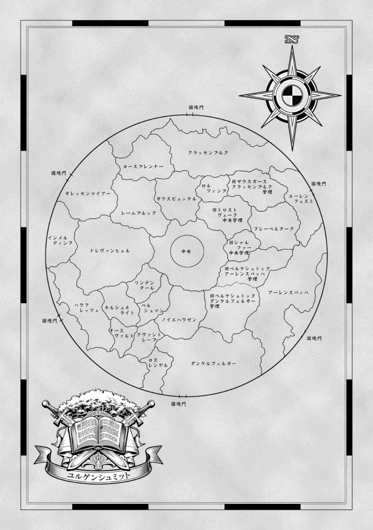
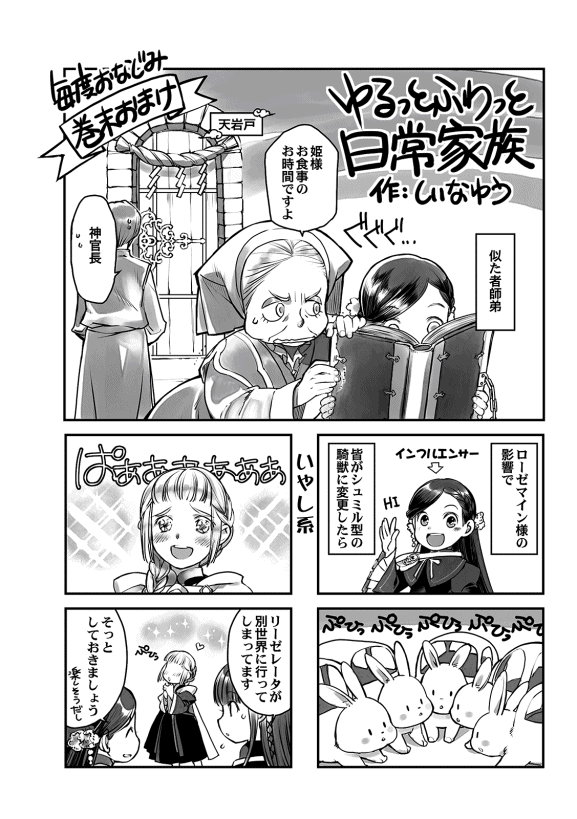

| 本好きの下剋上～司書になるためには手段を選んでいられません～第四部「貴族院の自称図書委員II」 | |
| 香月美夜 | |
| TOブックス (2018) | |
念願の図書館を守るためには手段を選んで入られません!? 貴族の学校を舞台に「下剋上」が加速するビブリア・ファンタジー最新刊！
イラスト：椎名 優 You Shiina
デザイン：ヴェイア Veia
プロローグ
「こちらの本を返してくださる？」
「わたくし、キャレルの鍵を貸してほしいのですけれど......」
等間隔 に続く窓から夕暮れの柔らかな光が差し込む中、貴族院の図書館には少しばかり高めで華 やいだ女子学生の声が響いている。シュバルツとヴァイスを見るために増えた学生達だ。今日はいないけれど、土の日には先生達も自分の研究を置いてわざわざ見に来るくらいである。何年も動いていなかった図書館の魔術具に注目が集まるのは当然のことだろう。
ソランジュはシュバルツとヴァイスに群がる様子を微笑 ましく思いながら、もう少しだけ声量を落とすように女子学生達に注意した。「失礼いたしました」と一旦 おとなしくなるけれど、今までの経験上、時間が経 てばまた少しずつ彼女達の声量は上がっていくだろう。静かに勉強したい学生には少し目障りだということもソランジュは知っているが、例年ならば閑散 としている時期に図書館が賑 わっていることが何とも嬉 しいものだった。
......あら、今日もエーレンフェストの学生が写本を......。
図書館の閲覧室を見回せば、エーレンフェストのマントを着けた数人の学生がソランジュの目に入る。新しく入学してきた領主候補生のローゼマインがシュバルツとヴァイスの主 としてメスティオノーラに認められるほど図書館と本をこよなく愛しているせいだろうか。今年のエーレンフェストの学生達は非常に勉強熱心だ。食事の時に職員用の食堂で聞いた話によると、この時期に座学を終えている学生が何人もいるらしい。他領の学生達と違って、ローゼマインの側近の指示で参考書を写本していることが多いことからも先生方の話が大袈裟 なものではないことがよくわかる。
......写本はローゼマイン様のご指示でしょうね。
ソランジュはそれとなくキャレルの様子を見て回りながらそう考える。領主候補生や上級貴族の指示でなければ、中級や下級の貴族が紙をふんだんに使うことはできない。エーレンフェストで写本させるとすればローゼマインしかいないだろう。
......変わった紙ですけれど、あれもエーレンフェスト特有の物かしら？
彼等が使っている紙は、ソランジュが今までに見たことのない紙だ。初めて見た時に職員用の食堂で他の先生方に尋ねてみたけれど、講義の時にはあまり使われていないらしい。おそらく領主候補生に頼まれた仕事でなければ使えないのだろう。まだエーレンフェストでも全 ての貴族が使える物ではないようだ。
......それにしても、エーレンフェスト特有の物が一気に出てきましたね。
音楽の先生方によると、今まで聞いたことがない新曲が何曲も隠されていたらしい。ローゼマインが作曲したと言われている。おそらく専属楽師が作曲したのだと思われているけれど、ローゼマイン自身の技量も二年間眠っていたとは思えないくらいに上手らしい。
......ローゼマイン様には英知の女神メスティオノーラだけではなく、芸術の女神キュントズィールの御加護 もあるのかもしれません。
ローゼマインが神に祈って祝福の光が溢 れた時のことをソランジュが思い出していると、ちょうど天井から様々な色合いの光が降り注いだ。閉館時間を知らせる光だ。バッと顔を上げた学生達が慌 ただしく帰る準備を始める。資料を棚に返す者、貸出し手続きをする者、キャレルの鍵を返す者......。閲覧室はにわかに騒 がしくなった。ソランジュも閉館作業に取りかかる。
「キャレルの鍵はシュバルツに返却してください。貸出し作業はヴァイスです。さぁ、急いでくださいませ。じきに六の鐘が鳴りますよ」
ソランジュはギリギリまでキャレルにしがみつこうとする往生際 の悪い学生達に声をかけながら閲覧室を見て回った。一階を見て回ったら二階へ。二階の利用者はほとんどいないけれど、たまに物陰でむさぼるように読んでいる先生がいることもある。
ソランジュがこうして閲覧室の確認をできるのは、シュバルツとヴァイスがいるからだ。今まではキャレルの鍵の回収と貸出しの手続きを一人で行い、全て終わってから閲覧室の確認をしていた。今は何倍も早く閉館作業を進められる。
二階の閲覧室を見て回った後は、日差しによる劣化 を防ぐための魔術具や時間を知らせる光の魔術具を止めていく。本当は閲覧室内の湿度を調整する魔術具などもあるけれど、ソランジュ一人の魔力では全ての魔術具を維持できない。そのため、最低限必要な魔術具だけを動かしている。最後に、二階の閲覧室の奥にある英知の女神像の前に立ち、今日も一日恙 なく終わったことを報告した。
シュバルツとヴァイスの仕事が終わったことを確認し、ソランジュは閲覧室や書庫の施錠 をして執務室に入った。同時に六の鐘が鳴り響く。最後に閲覧室を出て行った学生は寮に帰り着けただろうか。そんなことを考えながらソランジュは保証金を金庫に片付け、閲覧室の明かりを落とした。
「しごとはおわり」
「ソランジュ、ごはんいく」
「今日はカトリーンが運んでくれることになっているのです。そろそろ戻る頃かしら」
そう言いながらソランジュは鍵を手にして執務室を出ると、中央棟と繋 がる回廊へ歩いていく。ソランジュの側仕 えであるカトリーンが中央棟の食堂から食事を運んで戻ってきたら回廊に繋がる扉も施錠しなければならない。
ギッと扉を開ければ人の気配のない回廊が見えた。ソランジュは少しだけ外に出てぐるりと視線を巡らせる。文官棟には明かりが点 いている窓が多いけれど、側仕え棟にはほとんど明かりが点いていない。側仕えコースの先生方は自分の側仕えの仕事を考慮して食事の時間をきちんと守るけれど、文官コースの先生方は研究を優先する人が多いせいだ。
「おかえりなさい、カトリーン」
正面にワゴンを押す人影が見えた。ソランジュはカトリーンを迎え入れ、中央棟に繋がる扉を施錠した。それから、カトリーンと一緒に来た道を戻っていく。ソランジュの自室は執務室の奥にある扉の向こうの司書寮だ。
「ソランジュ様、今日は自室で食べたいとおっしゃったのでお運びしましたが、食堂での情報収集はよろしいのですか？」
ソランジュは出身の領地から寮監 を任されていない普通の教師だ。寮監は寮で食事を摂 るけれど、他の教師は中央棟にある職員用の食堂を使用することになっている。体調が思わしくない時や誰かに招かれた時などは側仕えに食事を運んでもらうこともできるのだ。
一人で図書館に勤めているソランジュにとっては、食事の時間が唯一の情報収集の時間になる。カトリーン以外に話す相手がいないのも非常に寂しいので、今までソランジュは食事の時間を楽しみにしていた。だが、最近は食事に向かうとシュバルツとヴァイスについて尋ねられることが多くなった。最初は楽しく話していたけれど、何度も何度も何日も同じ質問を受けていると少し疲れてしまう。特に、主を変更するにはどうすれば良いのかという質問に答えるのは難しい。
......女神様の祝福があれば、と答えたところで、どなたも納得してくださいませんもの。
「遠くまで運ばせて悪いけれど、たまには自室で静かに食事を摂るのも良いと思わなくて？ 一日くらいならば貴族院の内情がいきなり変わるようなことはないでしょうし......」
「シュバルツとヴァイスがいるので寂しくなくなったから食堂へ向かうことが嫌になった......ということでなければ、一日くらいは構わないと思います」
司書が何人もいた昔のように図書館に引き籠 るのではないか、と心配しているカトリーンの物言いにソランジュはフフッと笑った。
「二人がいてくれるおかげで仕事は楽になりましたし、寂しさも紛れています。けれど、情報収集は代わってもらえませんからね。心配しなくても明日は食堂へ行きますよ」
司書寮の扉を開けると、執務室の明かりなどの全ての魔術具を止めていく。寮への移動は防犯を兼ねてシュバルツとヴァイスも一緒だ。執務室に施錠すると、仕事が終わった気分になる。
......まだ日誌を書いていないのですけれどね。
「ソランジュ様、わたくしはワゴンを昇降機に入れてまいりますね」
「えぇ、わたくしは先に戻ってシュバルツやヴァイスと日誌を書いています」
カトリーンがワゴンを押して昇降機へ向かうのを見送ると、ソランジュはシュバルツやヴァイスとガランとした司書寮の中をゆっくり歩いて階段を上がり、自室へ向かう。以前は何人もいた司書も今はソランジュ一人しかいない。応接間や共用の居間を使うこともなくなった。
「......一人でも増やしてくださると良いのですけれど......」
シュバルツとヴァイスが動き始めたのだから、司書を増やしてもらうことは以前よりも難しくなったかもしれない。
自室でカトリーンに食事の準備をしてもらう。その間、ソランジュはシュバルツとヴァイスから今日の利用者の話を聞きながら日誌を書く。今までと違って書くことが多い。
......今の時期でこれほど書かなければならないのですもの。最終試験が近付く頃にはどれほど多くなるのかしら？
先が怖いような、楽しみなような心地で日誌を書き終えると、シュバルツとヴァイスがじっとソランジュを見ていた。
「シュバルツ、ヴァイス。どうかして？」
「ひめさま、いない」
「ひめさま、どうしてこない？」
二人は自分の主であるローゼマインの不在が不思議なようだ。それはそうだろう。今まで二人の主は常にこの寮で過ごしていたのだから。
「ローゼマイン様は講義を終えたら図書館にいらっしゃいますよ。先生方のお話ではとても頑張って優秀な成績で講義を終えているようです。もうすぐでしょう」
ローゼマインはエーレンフェストの領主候補生だ。とても幼い外見をしているのは、彼女が二年間という長い眠りについていたからだとソランジュは聞いている。けれど、そんなことを感じさせないほど、ローゼマインは優秀な学生として先生方の噂 になっている。
......優秀というだけではないのですけれど。
最奥の間で倒れたとか、魔獣を模した騎獣でフラウレルムを襲 ったなど、優秀とはまた違った噂も耳に届いている。けれど、ソランジュにとってはどんな噂も関係ない。ローゼマインは殊 の外 本が好きで、図書館が好きで、神に祈りを捧 げてシュバルツとヴァイスの主となった領主候補生だ。女神に認められた二人の主。それだけでソランジュにとっては十分だ。図書館の存続を、自分の仕事を女神に認められたような気分になれた。
「もうすぐくる？」
「ひめさま、もうすぐ」
「えぇ、きっと。わたくしもローゼマイン様とお話ししたいことがたくさんあります。貴方 達についても色々と......。ローゼマイン様が講義を終えるのが楽しみですね」
ソランジュはそう言いながら二人の衣装に付いた魔石に手を伸ばす。二人を動かすための魔力は足りなかったけれど、ソランジュがずっと魔力供給をしていたから守りの魔法陣だけは動いていて、二人が誰かに奪われるようなことはなかった。ローゼマインの負担が少しでも減ることを祈って、ソランジュは魔力を注ぐ。
この日、ローゼマインが全ての講義を終えたことで職員用の食堂が盛り上がっていることを知らないまま、ソランジュは食事を終えた。
お茶会の打ち合わせ
わたしが全ての講義に合格しためでたい夜、皆が集まる夕食の席でヴィルフリートはエーレンフェストの学生達を見回し、重々しい口調でこう言った。
「本日、ローゼマインが全ての講義に合格してしまった」
「ヴィルフリート兄様、......合格してしまった、というのは一体どういう意味ですか？」
「もう少しゆっくりでも良かったという意味だ」
必死に勉強をしてきた女の子達がヴィルフリートに同意するようにコクコクと頷 いた。まだ座学が終わっていない数人が、楽しみに頑張ってきた目標が消えてなくなったと嘆 いている。
「もう少し......。わたくしの座学が終わるまで本当にもう少しでしたのに、シュバルツとヴァイスの採寸に同行できなくなるなんて......」
「リーゼレータ、採寸だけですよ？ 少々大袈裟ではありませんか？」
「ローゼマイン様にとって図書館を目標に頑張り、明日の講義で合格が見えているというのに、図書館が閉鎖されるようなものだと考えても、わたくし達の悲しみは大袈裟でしょうか？」
我が身に置き換えると、あまりにもひどい状況だった。
......もうちょっとで合格するのに図書館閉鎖なんて、そんなのってないよ！
想像しただけで胸が押し潰 されそうになる。わたしは嘆く女の子達に共感した。
「シュバルツとヴァイスの採寸はヒルシュール先生とも予定を合わせなければなりませんし、日取りを決定するまでにまだ猶予 がございます。わたくしが明日図書館に向かうことは決定していますが、採寸を行う予定はありません。採寸の日までに座学を終えれば同行を許可します」
そう告げると、女の子達は少しだけホッとしたような表情を見せる。だが、ヴィルフリートは逆に難しい顔になって首を振った。
「採寸に関してはどうでも良い。ローゼマインが図書館に行ってしまって、今以上に浮かれる前にきちんと話し合っておかねばならぬことがあるのだ」
......はて？ 話し合うようなことが何かあったっけ？
「其方 が講義を終えた以上、これからは社交を行うことになる。エーレンフェストとしてどの程度の情報を流行として発信するのか、加えて、よく質問されることには共通の答えを作っておいた方が良いと思うのだが、どうだ？」
「最近は答えに窮 する質問が多いので、助かります」
ヴィルフリートの言葉に、文官見習い達は揃 って顔を輝かせた。どうやら文官見習いは情報のやりとりが盛んなようで、最近は他領から質問攻めにされているらしい。
「他領との接触をすでに行った者に問う。どのような質問をされた？ そして、どのように答えた？ それを元に考えていきたい。これからは下級生も社交の場に出ることになるからな」
ヴィルフリートの質問に次々と答えが出てきた。成績向上委員会で専門コース毎 にまとまって勉強させるようにした効果もあるようで、派閥 に関係なく意見が出てきている。
上級生はすでにお茶会を前回の土の日に行った者もいるし、講義の間に盛んに情報交換も行っているようで、やはり一番の話題はエーレンフェストの成績向上の秘密だそうだ。一年生の座学一発合格に加えて、二人の領主候補生が成績優秀者の候補に挙がっていることも噂になっているそうだ。最速合格だけを目指していたわたしがふむふむと興味深く聞いていると、文官見習い達は「確かに成績向上に関する質問は多いですが......」と顔を見合わせた。
「答えはもう決まっていますよね？ 成績の向上はエーレンフェストの聖女の功績で来年はもっと驚くことになる、と答えるようにハルトムートから指示が出ています」
「其方、ハルトムートにそのような指示を出していたのか？」
ヴィルフリートが難しい顔で腕を組んで、わたしを見た。けれど、それは濡 れ衣 だ。
「わたくしは指示なんて出していません。でも、そういうことになっているようですね」
わたしは元凶のハルトムートを睨 んだが、飄々 として「正しいでしょう？」と言われた。
「今のところ噂に上がっているのは、座学の成績だけです。今年はその答えで問題ないでしょう。来年の貴族院までにローゼマイン式魔力圧縮を知った者がどれだけ魔力を伸ばすか。それでエーレンフェストの評価が大きく変わってくると存じます」
ハルトムートの予想では、今年は序の口で、更に面倒になるのは来年らしい。もう考えるのが嫌になったけれど、図書館へ行く前に考えることは考えておかなければ後で苦労するだろう。
「成績向上の答えはそれで構いませんが、子供部屋での教育、絵本、カルタ、トランプの情報は伏せてください。今はまだ他領に対して座学の成績に関する優位を保っていたいです」
「かしこまりました」
ヴィルフリートが「成績向上に関してはそれで良かろう」と重々しく頷いた。
「わたくしはリンシャンのことを尋ねられました。髪の艶 をどのようにして出しているのか、リンシャンはどこで売っているのか、どのように作るのか......」
わたしの周りではあまりそのような声が聞こえてこなかったので知らなかったけれど、進級式に女子生徒にリンシャンで髪を艶々にした効果も出ていたようだ。
「どのように答えたのですか？」
「わたくしはお借りしただけですから詳しくは存じません、と。エーレンフェストで流行し始めているとだけお答えしておきました」
「リンシャンについては、それでよろしいでしょう」
貴族院では基本的に自分の領地から物資を転移して生活を行っている。貴族院の施設の中には店もなければ民もいない。貴族院の子供達は噂や流行を掻 き集めるだけで、本格的な売買の話は領主会議で行われることになる。手広く売りたければ貴族院で宣伝すれば良いが、控えておきたければ隠しておけば良い。
「リンシャン、花の飾り、カトルカールは、お茶会に参加する時に実物を持って行ったり、話題に出したりしても構いません。エーレンフェストで流行 り始めていると伝えれば良いでしょう。ただし、販売している商会の名前は伏せておいてください。領主会議での取引が決まる前に引き抜きや製法の盗難などがあれば、一気に価値が下がります。実物だけ見せ、情報は控えることで、実際の取引までに価値を吊 り上げるようにしてください」
ここ最近、学生達も自力でお金を稼ぐことに関して頭を使っているため、情報の価値やその価値の上下に少し敏感になっているようだ。皆が神妙な面持ちで頷いた。
「わたくしは本日、乗り込む形の騎獣について質問されました。ローゼマイン様とヒルシュール先生が貴族院の上空を乗り回していて、騎士見習い達の多くが目撃したようです」
「ヒルシュール先生がわたくし達の騎獣作製の実技でシュミル型の騎獣を作ったのです」
わたしは騎獣作製の実技であったことを説明した。わたしが魔獣を模した騎獣でフラウレルムに襲い掛かったという噂を検証するために、複数の先生がやってきたことも説明する。
「それでフラウレルム先生の噂は否定されたのですね。複数の先生方の証言が得られるならば、悪い噂を打ち消すのは容易 いでしょう」
「あとは、そうですね。一年生の何人かは乗り込む形の騎獣を作製しようとしています」
シュミルの騎獣作製を試みる者が複数いたことを伝えると、リーゼレータが相好 を崩した。
「シュミルならば、流行るかもしれませんね。とても可愛 いですから」
「ローゼマイン様の騎獣は着替える必要がないという利点が、とても大きいです。今の騎獣がもう馴染 んでしまっているので苦労するでしょうけれど、わたくしも騎獣を変えようかしら？」
ブリュンヒルデは流行の最先端を担うために、自分の騎獣を変更したいと言いだした。
「......魔力の消費量は増えますが、大きめにすると荷物が運べます。風雨も防げて便利ですけれど、わたくしの護衛騎士によると、武器を持って戦うことになる騎士見習いには向きません」
わたしの言葉にユーディットが残念そうに眉 を下げた。ユーディットも乗り込み型の騎獣にしたかったらしい。
「それに、乗り込む形の騎獣にするならば、馬などのすらっとした動物よりも丸みのある動物の方が可愛い......あ、いえ、乗り込む部分が大きくできる動物の方が作りやすいですよ」
とりあえず、皆に広げられるように宣伝はしておいた。その内可愛い騎獣が増えると良い。
「座学の初日合格に比べると、音楽の先生方のお茶会にローゼマイン様が招かれていることはそれほど噂にはなっていないようですわね」
「エーレンフェストが招かれることは少なくても、先生のお茶会自体は珍しくないからでは？」
そんな上級生のやりとりに、わたしはブリュンヒルデに視線を向けた。
「ブリュンヒルデ、先生方とのお茶会の日取りは決まりましたの？」
「本日、わたくしの座学が終了したので、これからリヒャルダと相談して決めます。側仕えがお茶会の準備をいたしますから、ローゼマイン様は先生方に関する情報を覚えてください」
誰が参加するお茶会なのかを事前に知っておいた方が良い、とブリュンヒルデが言う。
「わかりました。それから、これは皆にお願いしたいことなのですけれど、貴族院の中でどれだけフェルディナンド様の影響や伝説があるのか、調べてきてくださいませ」
「......フェルディナンド様、ですか？」
「わたくしが耳にしたところ、色々と貴族院で伝説を作っていたようです。お茶会で話題にすれば喜ぶ方と嫌がる方の両方がいると思うので、詳しく調べてほしいと思います」
本人も言っていたように、フェルディナンドはあまり人に好まれる性格ではない。面倒見が良くて過保護な一面もあるが、それは自分の中で価値を認めた相手にのみ発揮されるものだし、物言いや態度が冷たくて厳しいことが多い。良い印象を与えない方が圧倒的に多いと思う。
......貴族らしい愛想笑いで皮肉の応酬も得意そうだし、味方も敵も両方多そうなんだよね。
「エーレンフェストで流行っている音楽も、わたくしの作曲にフェルディナンド様の手が加わった物なので、音楽の先生方のお茶会までにある程度まとめてくれると助かります」
「かしこまりました」
文官見習い達が張り切った顔をする一方で、騎士見習い達はあまり気乗りしないようだ。
「騎士見習いの方々もしっかりフェルディナンド様の伝説を調べてください。宝盗 りディッターでは負け知らずだったようですよ。今年は領主候補生がいるということでエーレンフェストのディッターが注目されますから、気を引き締めて訓練をしてくださいませ」
「......アレは一時の栄光だったとランプレヒト兄上から伺 っております。それに、今は速さを競 うディッターですから、当時とは状況が違います」
コルネリウスの弱気な言葉に、わたしはムッと眉を寄せる。宝盗りディッターは他領の騎士が入り混じる中で、巧 みに兵を用いなければならない大変な競技だ。けれど、速さを競うだけならば、それほど考えることは多くなさそうなのだから勝ち目はあるはずだ。
「ならば、少しでも早く倒せるように敵を分析するくらいはできているのですか？ 先生方が作り出す魔獣を倒すならば、種類はそれほど多くないでしょう？」
「結構多いですけれど......」
「ルーフェン先生ならば、気合いで行けとか、一丸となって突っ込めとか、おっしゃいそうですけれど、それを真に受けて全員で攻撃なんてしていてはダメですよ」
騎士見習い達が驚いたように顔を見合わせた。その反応にこちらが驚く。まさか全員で切りかかるような攻撃をしていたのだろうか。
「どの魔物を出されても対応できるように、全ての魔物の弱点や攻撃方法を把握 するのはもちろん、誰がどのように攻撃をしかけて、誰がどのように防ぐのか、役割分担くらいはできていますよね？ それも定期的に変えてみて、本当に適性に合っているのか確認はしていますか？」
「......あ、いや......」
「全員で飛びかかるのではなく、広い範囲を俯瞰 して敵を見る役も必要ですし、主力が回復時間を稼ぐために戦力を温存しておく者がいなくて交代ができないようでは困るでしょう？」
わたしの言葉にトラウゴットが嫌な顔になった。
「領主候補生であるローゼマイン様に騎士見習いのことがわかるとは思えません。回復が必要なほど長引く戦いなどございませんから、どんな魔物が来ても全力でぶつかれば問題ないですし、弱点を調べるような暇 があれば攻撃力を上げるための訓練をした方が有利です」
調べたり覚えたりするのが苦手なアンゲリカがトラウゴットの意見に賛成するように、コクコクと頷いている。
「何日もかけた長期戦で冬の主を倒すのは騎士団です。仮に、全力でぶつかっても冬の主は倒せませんし、回復もせずに何日も戦える者はいません。それに、毎年どの魔物が冬の主になるか誰にもわかりません。けれど、それを理由に魔物の研究をしたくないと言う騎士はいません」
騎士見習いは冬の主の討伐 には参加できない。けれど、その過酷 さだけは聞いているはずだ。何故 知っているのか、と言わんばかりに全ての騎士見習いがわたしを見た。
「騎士団の上層部こそ、毎年いかに早く冬の主を倒すか考えて、魔物の弱点の洗い出しはもちろん、どのような魔物が来ても倒せるように訓練しています。貴族院においても、強大な敵を少しでも早く倒すためにはどうすれば良いのか考えながら戦うことには意味があるのです。それぞれの役割を明確にし、常に考えながら訓練をしてください」
考えたくないようでアンニュイな表情になったアンゲリカに苦笑しながら、わたしはコルネリウスに視線を向ける。
「毎年ディッターでどのような魔物と当たって、どのように倒し、どれだけの時間がかかっていますか？ 全ての領地の情報が一年分でもあれば、二十以上の魔物の情報が集まっているはずです。それが数年分積もれば同じ魔物を倒している領地もあるでしょうし、もっと正確に弱点や有利な戦い方がわかるでしょう。騎士見習いの中で情報の蓄積 はしていないのですか？」
「口で伝えられる分がほとんどで、書き残すようなことは特にしていません」
訓練をする中で口頭で伝えられ、それぞれの経験として残るだけで、資料としては残していないらしい。信じられない。
「では、今年から書き残してください。過去の分も覚えている限りの魔物やその弱点を全員で書き出してください。知識の蓄積と伝達をするために本があるのです。書き綴 って、後輩に残して伝えていけば、エーレンフェストは代を重ねるごとに有利になります」
わたしの言葉に、騎士見習いより先に側仕え見習いが顔を上げた。
「騎士見習いがそのような情報を残すのでしたら、わたくし達も先生方の好まれるお茶の種類やお菓子の種類など、お茶会を開く上で絶対に必要な情報を書き残し、共有いたしましょう。そうすれば、新しく調べなければならない情報がすぐにわかります」
「資料として残すことは我々の仕事です。文官見習いも口伝 をまとめましょうか」
どうやら文官見習い達にも口伝で伝わっていることが色々とあるらしい。口伝の整理と情報の共有を行おうということで、皆の意見が一致した。
「では、多目的ホールに本棚を置きましょうか。作った資料を誰もが閲覧できるように」
「......ローゼマイン様、寮の中にも図書室を作るおつもりですか？」
フィリーネの質問に、「本棚くらいは必要でしょう？」とわたしは笑って頷く。
「他領には見せられないけれど、エーレンフェストの皆で共有したい資料はありますから」
わたしが脳内で図書コーナーを作る計画を立てていると、ヴィルフリートが肩を竦 めた。
「ローゼマイン、ついでと言ってはなんだが、私にも助言をくれないか？」
「何でしょう？」
「ディートリンデ様のお茶会だ。其方が排除された以上、今から対策を考えておかねばならぬ」
ヴィルフリートの表情が硬いのを見れば、従姉弟 同士のお茶会が気楽なものになるとは全く考えていないことがわかる。
「アーレンスバッハもフレーベルタークも順位を落としている領地ですよね？ どなたか良い情報を持っていませんか？ 買い取りますよ」
文官見習い達が今までに集めてきた情報によると、フレーベルタークはエーレンフェストからの魔力の補助がなくなって、今まで以上に魔力に困窮しているらしい。
「もしかしたら、魔力の補助の再開を願われるかもしれませんね」
「魔力の補助？ フレーベルタークに対してそのようなことをしていたのか？」
「えぇ、神殿でわたくしとフェルディナンド様の魔力を小聖杯に満たして渡していたのですよ」
直轄地を満たして回った経験があるヴィルフリートは「そのような余裕はエーレンフェストにないだろう」と呟 いた。ぜひ、その言葉を両親に向けて言ってほしいものである。
「フレーベルタークに関しては様子見ですね。補助を匂わされたら、エーレンフェストでは領主候補生が直轄地を回って魔力を注ぐほど困窮している、と言ってみてください」
「む？」
「自分達でも試してみよう、と考える相手ならば、助言や補助をしても良いでしょう。けれど、神官の仕事を領主候補生がするのか、と嘲 るような相手ならば、わたくしはこれから先も補助するつもりはありません」
ヴィルフリートはコクリと頷いた。
「アーレンスバッハに関しては何かございませんか？ アウブ・エーレンフェストが貴族間の交流を断ったので、あまり情報がないのです」
「アウブ・エーレンフェストに睨まれても困るので、こちらでもあまり積極的に集めていないため、よくわかりません」
文官見習い達にこれから集めてくれるように頼んで、わたしはヴィルフリートを見た。
「とりあえず、アーレンスバッハには警戒をしてくださいませ。懐かしさを感じても、ふらふらと惑わされてはなりません。連れて行く側仕え達もよく見張っていてくださいね」
ヴィルフリートの側近は二年前の狩猟 大会であったことを知らされているし、次期領主候補から外されたことも知っている。その上で仕えているのだから、忠誠心はあるはずだ。「皆できっちりと守ります」と言った側近にヴィルフリートが苦笑する。
「......ローゼマイン様」
意を決したような顔でローデリヒが口を開いた。
「何故アーレンスバッハをそこまで警戒するのですか？」
震える声で上げられた質問にハッとしたような視線が集まった。今更何を言っているのか、という視線になるのはヴィルフリートとわたしの側近達で、旧ヴェローニカ派の子供達はその発言に同意するような視線だった。皆の視線を受けたローデリヒが震える手をグッと握る。
「アーレンスバッハは大領地で、第一夫人のゲオルギーネ様はアウブ・エーレンフェストの姉君ではありませんか。何故それほどまでに警戒するのか、私にはわかりません。ご兄妹 であるヴィルフリート様とローゼマイン様とシャルロッテ様のように、アーレンスバッハとも良い関係が築けるのではないでしょうか。私の父上はアーレンスバッハと協力体制を築き、エーレンフェストをより良くしたい、とおっしゃいました」
ローデリヒはそう言って項垂 れた。ヴィルフリートがはめられた狩猟大会の一件にしても、ローデリヒは詳細を知らされないまま白い塔へ導く役を任され、その結果、ヴィルフリートに遠ざけられたと聞いている。周囲の大人達に良いように扱われたのだろう。けれど、それは、強い者に巻かれようとする立場の弱い中級、下級貴族にとっては取り返しがつかない失態だ。ローデリヒは洗礼式を迎えた次の年に失態を犯してしまったということになる。
......寮内だけでもまとめたいと思ってるけど、なかなか難しいね。
親に言われてアーレンスバッハに擦 り寄るため、こちらの情報を流す子供もいるかもしれない。それでも、全く事情を知らないままでは納得できないだろうとわたしは口を開いた。
「ローデリヒ、貴方は洗礼前だったので知らないかもしれません。けれど、神殿で隠されて育てられていたわたくしは、魔力が豊富な青色巫女 というだけでアーレンスバッハの貴族にさらわれかけました。わたくしが毒を受けて眠ることになった二年前の冬の襲撃 においても、使われたのはアーレンスバッハの貴族が所有していた私兵でした」
幼いと知らされていないのだろう、低学年の子供達はぎょっとしたようにわたしを見た。
「......前ジョイソターク子爵 がシャルロッテ様に危害を加えた犯人だったと伺いましたが、ローゼマイン様にそのようなことがあったとは存じませんでした」
「それに、シャルロッテをさらって処刑された犯人とわたくしに毒を飲ませた犯人は別なのです。両方と間近に接したわたくしは別人だと言い切れます。もう一人の犯人は今も捕えられていません。その者がアーレンスバッハと通じていない、と言い切れますか？ 危険が少しでもあるならば、襲撃を受けたわたくし達が警戒するのは当然だと思いませんか？」
「思います」
子供達の顔色の悪さから考えると、判断するための情報さえ与えられていないことがわかる。
「わたくしも、できることならば、海のあるアーレンスバッハと仲良くできれば良いと思います。けれど、様々な出来事からアウブ・エーレンフェストが警戒している現状では、アーレンスバッハと協力体制を取るのは難しいと言わざるを得ません」
その言い分は納得できるようで、旧ヴェローニカ派の子供達も項垂れるようにして頷いた。
「知らなければ理解できないことがたくさんあります。ですから、ローデリヒ。貴方は文官見習いとして色々なところから色々な情報を得られるように自分を磨 いていくと良いですよ。幸い、貴族院には頼りになる上級生がたくさんいるのですから」
ローデリヒがハッとしたように顔を上げて、ゆっくりと周囲を見回す。
「様々な領地からの情報を集めた上で、アーレンスバッハと仲良くすることにどれだけの利点があるのか、それよりも利点のある領地があるか、よくよく吟味 してくださいませ」
顔色の良くなったローデリヒの「やってみます」という歯切れの良い返事と共に、コクリと無言で頷いたのは旧ヴェローニカ派の子供達だった。
皆を解散させ、わたしは自分の部屋へ戻ろうとした。そこをヴィルフリートに呼び止められて、二人で話ができる小さい部屋に招かれる。小さいといっても側近が全員入れる広さだ。
「ローゼマイン、其方は甘すぎる。旧ヴェローニカ派の者は抑えこんでおいた方が良いのだ」
「わたくしが甘いことは、よく言われますから知っています。けれど、わたくしはヴィルフリート兄様に贖罪 と成長の機会を与えたように、彼等にも機会を与えてあげたいのです」
うっ、とヴィルフリートとその周囲が言葉に詰まった。
「洗礼式を終えたばかりの幼い子供が親の言い分を丸呑 みにすることに何の不思議がありますか？ 彼等が犯した罪はヴィルフリート兄様と同じです。知らずに罪を犯してしまった彼等の気持ちがわかりませんか？」
「それは......」
「わかりますよね？ それとも、二年も前のことですから忘れてしまいましたか？ ヴィルフリート兄様にとっては二年前でも、わたしの感覚では季節一つ分も変わっていません。わたくしはあの時の悔 やんだ表情や反省した時の言葉まで明確に覚えていますよ」
お手上げだ、と言わんばかりにヴィルフリートが項垂れた。
「旧ヴェローニカ派の子供達を、いきなり全部信用するのは不可能です。けれど、親の影響が少ない貴族院で色々な意見を聞き、自分なりの考えや情報網を築くようになれば、少しは関係を変えることもできるのではありませんか？ 旧ヴェローニカ派を全て切り捨てるのは、将来のためにはなりません。......真っ黒な本音を言いますと、親を切り捨てたとしても子供はこちらの陣営に取り込んで、少しでも未来の派閥を大きくしておきたいです」
親の世代を取り込むのは難しいと思う。年を食った者の考え方をそう簡単に変えられるとは思えない。けれど、子供はまだ何とかなるかもしれない。
「警戒はしつつ、取り込めるところは取り込んでいく、か。難しいな」
「えぇ、難しいと思います。けれど、自分と領地を支えてくれる臣下を育てるのは、次期領主の務めですよ。少なくとも、次期領主にはならないわたくしの役目ではありません」
キッパリとわたしはヴィルフリートと自分の側近に向かって「領主にはならない」と宣言しておく。最近は周囲が勝手に盛り上がっているようなので、ビシッと牽制 しておくのが一番だ。
「では、領主にならない其方の役目は何だ？」
「今のわたくしは神殿長なので、神事を滞 りなく行い、神殿を運営することが一番大事なお仕事です。成人すれば婚姻 のために神殿を出るので、領地のための政略結婚が役目でしょうね。領地に残れるならば、次期領主を補佐するために城の図書室を整理することでしょうか」
「......領主の補佐と図書室の整理は別の仕事だと思うぞ」
肩を竦めたヴィルフリートの言葉に、周囲から同意を示す笑いが漏 れた。
図書館へ行こう
全ての講義に合格した。やっと自由に図書館へ行けるのだ。今日は図書館での初めての自由行動である。楽しみのあまり、わたしが飛び起きたのはリヒャルダが部屋にやってくるよりも早い時間だった。浮かれに浮かれたわたしは、真っ暗な部屋の中で「今日は図書館！ 神に祈りを！」と叫んで祝福を飛ばしてしまい、慌ててベッドに戻って寝たふりをした。
だが、わたしの側仕え達は側近達が集まる部屋で、すでに本日の打ち合わせをしていたようだ。部屋へ入ってきたリヒャルダに苦笑を含んだ呆 れ顔で「姫様、寝たふりをしても祝福の光は消えませんよ」と起こされたし、リーゼレータには微笑ましいものを見る目で見られた。
「本日は初めての図書館なので許可しますけれど、明日からはフェシュピールの練習が終わる三の鐘まで図書館には向かいませんよ」
朝食の後、側近達と一日の打ち合わせをして上級生を送り出さなければならない。それから前日に報告を受けた座学の合格などから成績向上委員会の活動結果をヴィルフリートと一緒にまとめる。その後はフェシュピールの練習だ。三の鐘が鳴るまで練習するのは神殿にいる時と同じで、それまでは外出禁止だと言われてしまった。
......講義が終わっても自由に行けないなんて、しょんぼりへにょんだよ。
朝食の席では図書館に同行する者が選別される。基本的には講義が終わり、手が空いている側近が同行者だ。コルネリウスが朝食を摂りながら本日の皆の予定を尋ねる。
座学を終えたばかりのブリュンヒルデは、音楽の先生方のお茶会に向けて準備を始めたいと言っているし、リーゼレータはシュバルツとヴァイスの採寸に同行するために最後の講義があるらしい。ハルトムートも今日は講義があるようで、騎士見習いはほとんどが講義だそうだ。
「そうか。だったら、図書館へのお供はリヒャルダとフィリーネだな。護衛騎士はレオノーレしか手が空いている者がいないのか」
「コルネリウス、ローゼマイン様の護衛騎士が一人というのは心配なので、わたくし、講義よりも護衛を優先しても......」
「アンゲリカはしっかり講義を受けてらっしゃい」
レオノーレはアンゲリカの言葉を遮 るように言うと、コルネリウスに向き直った。
「図書館に行ける喜びで朝から祈りを捧げて祝福を行うローゼマイン様に、これ以上待つように言えませんもの。わたくしだけで良いですよ」
「確かに、これ以上待てと言うのは無理そうだ。仕方がないな。頼んだ、レオノーレ」
「まだ講義を終えている生徒の方が少ないのですから大丈夫ですよ、コルネリウス」
レオノーレが微笑むとコルネリウスは一度頷いた後、わたしを見て、聞き分けのない子供に言い聞かせるような顔と口調で注意する。
「ローゼマイン様、安全のために午前の講義が始まってから図書館に向かうとお約束してください。よろしいですか？ その程度が守れないようでは、次回からは護衛の都合がつくまで待機になります」
「絶対に守ります！」
......アンゲリカの都合がつくのなんて待っていられないもん！
講義へ向かう皆を見送り、講義開始の二と半の鐘が鳴るまでわたしは待った。その後もすぐにはリヒャルダの許しが出なくて、そわそわとしながら玄関扉を見つめる。
「そろそろよろしいのではありませんか？」
許可が出て寮から出れば、すでに講義が始まっているので、真っ白の廊下には人の気配は全くなかった。扉の向こうで講義が行われているはずだけれど、声が漏れることもない。シンと静まった廊下に響くのは、わたし達の足音と浮かれた歌声だけだ。
「図書館、図書館、幸せの場所、るるるる、らららん」
「......ローゼマイン様、その曲には楽師が違う歌を付けていましたよね？」
「それはそれ、これはこれで良いのです」
フィリーネの言葉を軽く流す。貴族院の図書館はエーレンフェストの城にある図書館よりもずっと広くて、冊数が多くて読み甲斐 があるのだ。その図書館で初めての読書ができる。そんな喜びを歌うのに、これ以上の歌はないと思う。ちなみに、わたしが作った歌には「神に祈りを それから、感謝を」という歌詞があった。けれど、勝手に祝福が飛び出したら危険なので、自主的に削除して「るるる」とか「ららら」で誤魔化 している。
「ねぇ、レオノーレ。わたくしが見た限り、騎士見習いはどうやら読書が苦手な者ばかりのように思えるのですけれど、レオノーレも読書は苦手ですか？」
わたしは自分の護衛騎士の中で、唯一知性で推薦 されたレオノーレを見上げた。文官見習いのような容貌 に、知的な藍 色の瞳がきらりと光っている。騎士達の様子を見た限りでは、読書好きな騎士はいそうになかった。体を動かすのが得意な者が騎士コースを選ぶからだろうか。
「ローゼマイン様を基準にして、好きだとはとても申し上げられませんけれど、他の騎士に比べると苦手ではございません」
「では、政変以前の戦略や戦術に関する参考書、魔物について書かれた本がないか図書館で探してみるので、それに目を通して皆に教えてあげてくれますか？ フェルディナンド様やエックハルトの資料よりも、今の講義の方が戦略や戦術に関する内容が薄いように思えるのです。図書館にはディッターに関する本や魔物の弱点がまとめられたような本があるかもしれません。わたくし、騎士見習いの役に立ちそうな本を探してみます」
「ローゼマイン様のお手を煩 わせなくても、他の日にわたくしが探してみますけれど？」
とんでもない、とレオノーレは言うけれど、わたしが探したいのだ。少しでいいから司書の気分に浸 りたい。
「レオノーレ、気にしないでください。図書館で本を探すのは、司書......あ、いいえ、図書委員の仕事ですから」
わたしが胸を張ってそう言うと、レオノーレを始めとして、皆が不可解そうな顔になった。
「......ローゼマイン様、図書委員とは何でしょう？」
「学び舎 の図書館で司書のお手伝いをする学生のことです」
やはり、周囲の不可解そうな顔は変わらない。フィリーネが頬 に手を当てて「......城で働く文官見習いのようなものでしょうか？」と首を傾 げる。
「そうですね。司書になるために三年生になったら両方の講義を取るつもりなので、わたくしは領主候補生であり、文官見習いなのです」
わたしが胸を張ると、皆が一度軽く目を閉じた。
「そのような大変なこと、できるわけがございません、と申し上げたいのですけれど......」
リヒャルダに続くようにフィリーネが何とも言えない曖昧 な笑みを浮かべる。
「ローゼマイン様の図書館にかける情熱を知ってしまうと、とても口にできませんね」
「一年生の全員合格のように本当に成し遂 げてしまうでしょうから言葉に困りますね」
付き合わされたフィリーネに同情めいた視線を向けながら、レオノーレが苦笑した。
「講義が両方取れるようにフェルディナンド様が助言してくださるそうです。大丈夫です。わたくしは両方取りますよ！」
「ひめさま、きた」
「ひめさま、ようこそ」
図書館の閲覧室に入ると、シュバルツとヴァイスがぴるぴると耳を震わせて、業務スペースから出てきた。その声に気付いたようで、ソランジュが執務室から目を丸くして顔を出す。
「まぁ、ローゼマイン様!? 」
「おはようございます、ソランジュ先生、シュバルツ、ヴァイス」
こちらへやってきたシュバルツとヴァイスが「しごとした」「ほめて、ひめさま」と軽く目を閉じる。わたしが額を撫 でて魔石に魔力を少し注いでいると、ソランジュも業務スペースから出て、わたし達の方へ歩いてきた。
「おはようございます、ローゼマイン様。講義に合格するまでこちらにいらっしゃることはないとおっしゃっていたのでは？」
「昨日、全て合格したのです。図書館で本を読むために頑張りました」
わたしが胸を張って報告すると、ソランジュは信じられないという顔でリヒャルダやフィリーネに確認するような視線を向ける。その後、ほぅ、と息を吐いた。
「......まさかこの短期間で実技も終えるだなんて......。予想外の優秀さに驚きました。シュバルツとヴァイスの主となる素質があることにも納得できますね」
講義中なので図書館に人の気配はない。これはゆっくりと読書が楽しめそうだ。にんまりしながら、わたしは閲覧室を見回し、左手にある幅の広い階段に視線を止めた。
「前回は二階へ上がることもできなかったので、わたくし、二階も楽しみにしてきたのです」
「あんないする」
「にかいだ、ひめさま」
仕事ができて嬉しいのか、シュバルツとヴァイスが頭を左右に振るようにして歩き始める。階段は建物と同じ白の素材でできていて、大人が五人くらいは並んで上がれそうな幅があった。
「この図書館にはどのくらいの蔵書があるのですか？」
「保存用の書庫へ移された古い資料まで含めますと、三〜四万ほどでしょうか」
ソランジュの言葉にシュバルツとヴァイスが頷くように頭を振った。
「いっかいはおおい。にまんくらい」
「こうぎにつかう。みんな、よむ」
「二人の言う通り、本としては一階の参考書として管理されているものが多いです。全ての科目を古い物まで残しているので、シュバルツが言ったように二万ほどになります」
その二万冊の中には羊皮紙 に書き綴られた物もあれば、木札の物もある。羊皮紙に綴った物は、個人が書いて図書館に渡した物なので、時に一冊の中に数教科分が混じっていることもあるとソランジュは言った。
「数教科が混じっているのはどうしますの？」
「どう、とは？ その方が作製した本として置いてありますよ。それほど優秀な方が図書館に本を残してくださることは少ないのですけれど」
「一冊の中に数教科分が入っていたら分類が大変ですし、どなたかが借りていくと困る人が複数出るのではございませんか？」
わたしが尋ねると、ソランジュは借りた人に優先権がありますもの、とおっとりと笑う。
「最終試験が近付けば利用者が増えて、キャレルも本も足りなくなります。できれば分けて保管できればよいのでしょうけれど、なかなかそこまで手が回りませんね」
「わたくしは全ての本に目を通す予定ですから、講義ごとに分けましょうか？」
「あら、ローゼマイン様はこちらの本を全て読むつもりなのですか？ それは大変でしてよ」
まるで本気にしていない、子供の夢に「そうなったらいいわね」と言うようなおばあちゃんの顔でソランジュが笑う。だが、わたしはいたって本気だ。
コツコツと靴音を響かせながら、わたしは階段を上がりきった。その前に広がる光景に、感嘆 の溜息 が漏れる。二階も一階と同様に柱と窓が等間隔に並んでいた。一階は柱と柱の間のくぼんだ窓の部分に机と椅子があってキャレルとなっていたけれど、二階は柱の部分に本棚が二つ、背中合わせに並んでいる。ライティングデスクのように書き物ができる机部分が本棚自体についている。そして、机部分には窓からの明かりが当たるようになっていた。
本棚は大人ならば座ったまま手を伸ばせば届く棚と立ち上がらなければ届かない棚と机の下にある足元の棚の三段に分かれ、本が積み上げられていた。その本には鎖が付いていて、ジャラリと垂れているのが見える。
「なんて素敵なのでしょう！ 『チェインドライブラリー』ですよ！」
「......ローゼマイン様、何とおっしゃいましたか？ 聞き取れませんでしたわ」
「感動のあまり出てきただけです。お気になさらず」
神殿図書室もチェインドライブラリーだ。本の冊数が少ないので天板が斜めになっている閲覧机に、そのまま開けば読めるように設置されていて、机に本が繋がれている。けれど、貴族院の二階の閲覧室では、本棚に鎖で繋がれて棚の中に積まれていた。積み上げることができるだけの本があることに感動する。
......すごい、すごい！ わたし、今、タイムスリップした気分！
本を積み上げるのは革の表紙に金属の縁取りや鋲 があるためだ。立てて並べると、本棚から出す時に鋲と隣に置かれた本の表紙がこすれ、表紙の革が傷だらけになってしまうことがある。持ち上げて、隣に置くようにして本を取ることで本を傷から守っているらしい。また、羊皮紙は水分を含むと膨 らむ。それを防ぐために本には革のベルトが取り付けられていることが多く、本を積み重ねることで膨らまないようにしていると聞いたことがある。
......知識では知っていても、初めて見た！ 踊り出したいくらいに楽しい！ どうしよう。
ここで図書委員ができれば、わたしは本の中でしか読んだことがない、昔の司書と悩みを共有できたり、図書館の進化について考えたりできるに違いない。
......本が増えてくると本棚の鎖が絡んだり、日当たりによって本や閲覧机の取り合いになったり、同じ本を読みたい人が鉢合わせして喧嘩 になったりするんだよ！
今の時間は東から南側の机が読書しやすそうだが、鎖に繋がれた本は持って移動できない。明るい読みやすい環境で読書をしたければ、自分がちょうどいい時間を目がけて読みに行くしかない。しかし、印刷技術がないため、同じ本が図書館に複数あることはまずない。

「同じ本を読みたいと考えている人同士が鉢合わせして喧嘩になったらどうするのですか？」
うきうきで尋ねるわたしに、ソランジュは至極 あっさりとした回答をくれた。
「諍 いは起こりませんよ。身分順ですし、同じ階級であれば上位の領地が優先されますから」
......なんですと!?
これは大変だ。わたしは今まで領地の順位にそれほど大きな関心は持っていなかった。領主に頼まれたし、何だか色々と言われて悔しいから上げてやろう、くらいの関心度だった。しかし、本や閲覧机の優先度に領地の順位が関係してくるとなれば、話は別だ。
「何が何でもエーレンフェストの順位を上げなければなりませんわね」
わたしがエーレンフェスト寮全体を巻き込んで本気を出そうとした瞬間、リヒャルダが軽くわたしの肩を叩 いた。
「姫様、落ち着いてくださいませ。領主候補生の姫様より優先される者はほとんどいらっしゃいませんし、上級貴族や領主候補生は本を借りて、自室で読むことが多いのです。他の方と鉢合わせすることはほとんどございませんよ」
「そうなのですか......」
本気とやる気が静まった。でも、いざという時のために、エーレンフェストの順位は上げておいた方が良い気がする。
チェインドライブラリーに目が釘付 けになっていたが、二階全体をぐるりと見回したところ、冊子の形をしている蔵書は千冊くらいだった。壁に沿って設置されている机付きの本棚に積み上げられている分だけだ。中央部分には、巻物が入った棚、木札が入った棚、少し大きくて棚からはみ出す巻物を入れておく樽 のような入れ物が並んでいる。同時に、巻物を読むための書見台も数台並んでいて、インクやペンを置くためのサイドボードまであった。
一階の等間隔に並んだ本棚を見た後では、少し雑多な印象を受ける。その中を歩きながら、ソランジュが説明をしてくれた。
「こちらには歴代の先生方の研究成果の一部が収められています。巻物や木札など、古い時代の、冊子の形態になっていない蔵書の方が多いですね」
基本的には秘密主義なので、あまり公開したがる先生はいないようだ。先生の死後、助手によって不要になった資料が寄付されることが多いらしい。今でも巻物が少しずつ増えているそうだが、それは資料を本の形態に作ることを面倒がる先生がいるせいだそうだ。本の形態にするにはお金もかかるし、手間と時間がかかる。そのため、なかなか本の形態となって入ってくることは少ないということだ。ヒルシュールは多分書きたいように書いて、くるくると巻いて保存する巻物派のような気がする。
......巻物は冊子に比べたら作るのは簡単なんだけど、読み返す時が大変なんだよね。
ページを探したり、読み終わった後で巻き直して片付けたりする時に手間がかかるのだ。パラパラと捲 って読み、パタンと閉じてベルトを閉めれば良い本とは違う。
「王族に認められた研究成果はなるべく本の形に整えるようにしているのですけれど......」
「予算は限られていますものね。......ソランジュ先生、あの像は？ わたくし、神殿で見たことがございません」
わたしが本棚と本棚の間にある石像へ視線を向けると、ソランジュが相好を崩した。建物と同じように白い女神像が金と魔石で飾られた本を大事そうに抱えている。
「こちらはグルトリスハイトを胸に抱いた英知の女神メスティオノーラの石像です。図書館には英知の女神の御加護によって生徒達の写本も集まってくるのですよ」
貴族院の図書館と同じように、王宮図書館にもメスティオノーラ像があるらしい。エーレンフェストのお城の図書室にはなかった。お城の図書室にも早急にメスティオノーラ像を設置して、本が増えるように毎日お祈りを捧げるべきではないだろうか。
「ローゼマイン様はどちらの本から読まれますか？」
「......そうですね。まずは一階の本から取り掛かります。同じような内容の本が多いでしょうから、分類や整理も容易いでしょう」
「分類や整理ですか？」
ソランジュが目を瞬 く。わたしは大きく頷いた。
「そうです。利用しやすいように、できれば、教科ごと、学年ごと、年代順などで整理したいと考えています。政変後と政変以前で講義内容が大きく変わっている教科もございますから、それについては本棚を分ける、のように......。分類させていただいても構いませんか？」
「それは構いませんけれど......」
片端から読みつつ書誌事項をまとめ、分類法について考えてみたいと思う。
......あぁ、でも、分類するならシールが欲しい。
分類したら分類番号を貼 りたい。膠 は手に入るけれど、豚から作られているのでカビが生えたり、腐ったりする可能性がある。もっと本にとって良い素材が欲しい。
......帰ったら神官長に聞いてみようっと。
来年までにはシールを作って、ローゼマイン十進分類法で分類するのだ。
「あの、ローゼマイン様。図書館の整理にずいぶんと熱意を燃やしていらっしゃるようですけれど、領主候補生にそのようなことはさせられません。どのように分けたいか、おっしゃってくだされば、こちらで考慮いたしますよ」
わたしの我儘 で分類するのだ。ならば、その作業をソランジュにさせるわけにはいかない。許可さえもらえれば、わたしがわたしのためにする。
「いいえ、わたくし、図書委員になりたいと考えているので、分類作業はぜひさせてください」
「としょいいん？ なに？」
「ひめさま、わからない。おしえて」
シュバルツとヴァイスがわたしの袖を軽く引いた。
「貴族院の司書のお手伝いをする学生を図書委員と呼ぶのです。わたくし、ソランジュ先生のお手伝いをします」
「ひめさま、としょいいん」
「おしごとする」
シュバルツとヴァイスの言葉に真っ青になったのはソランジュだった。軽く目を見開き、慌てたように首を横に振る。
「いいえ、ローゼマイン様にそのようなことはさせられません。わたくしは中級貴族で、ローゼマイン様は領主候補生ではございませんか。わたくしのお手伝いなど、させられません」
「わたくし、司書になるために文官見習いの講義も取るので、文官見習いでもあるのです」
「......それでも、領主候補生にそのようなことはさせられませんわ」
ふるふると頭を振るソランジュの前にリヒャルダが溜息混じりに出てきて、わたしを見た。
「姫様、ご自分の我儘でソランジュ先生を困らせてはなりませんよ」
「......はい。ソランジュ先生、申し訳ございません」
図書委員としてお手伝いするのが、ここまで強硬 に却下されるとは思わなかった。ソランジュは一人で図書館を切り盛りしているので、お手伝いが増えたら喜ぶと思ったのだが、そうではないらしい。
「ローゼマイン様のお手伝いをしたいという優しいお気持ちだけいただいておきます」
......優しい気持ちだけじゃなくて、図書館をいじってみたいという純粋な下心なんだけど。
却下されたので、その場ではおとなしく引き下がって本を読むことにした。シュバルツとヴァイスに頼んでわたしとフィリーネの分のキャレルを準備してもらい、リヒャルダに紙とペンとインクを準備してもらって読み始める。たくさんあるので読み甲斐がある。
貴族院の図書室の一階にあるのは、講義で使う資料がほとんどだ。同じ内容が写された本が多いけれど、書写した者によって精度や字の美しさ、図画の正確さにかなりの差がある。よく使われている精密な本は、注釈や覚書 が書き込まれている物もあって情報が豊富だ。
書誌事項をまとめながら読んでいるうちに、本のページがステンドグラスのような光で照らされてハッとした。どうやらお昼が近付いているようだ。
「昼食に戻りましょう、姫様」
わたしはシュバルツとヴァイスに本を片付けてもらい、キャレルの鍵を返却した。シュバルツとヴァイスの額の魔石を撫でて、魔力を少し補給してから寮へ戻ることにする。
「午後にまた参ります」
ソランジュにも挨拶をして、わたしは寮に向かって歩く。
......どうしたら、図書委員になれるだろう？
ソランジュには却下されてしまったけれど、わたしはまだ図書委員になることを諦 めていない。うーん、と悩んでいると、リヒャルダが深い溜息を吐 いた。
「姫様には社交のお勉強が本当に足りていらっしゃいませんね」
「......どういう意味ですか？」
「図書館でのお願いの仕方は領主候補生として相応 しくございません」
......領主候補生に相応しいお願いの仕方？
二年間の弊害 がこのように出てくるのですね、とリヒャルダが言っている横で、わたしは必死に貴族らしいお願いの仕方について考えていた。どのようにお願いするのが良いだろうか。
色々と考えていたわたしは、ふと思い出して手を打った。
「リヒャルダ、ソランジュ先生をお茶会にお招きしましょう」
「......突然どうされたのですか？」
目を見張ったリヒャルダに、うふふん、と笑う。イタリアンレストランを作った時のことを思い出したのだ。わたしは意図していなかったが、ジルヴェスターやフェルディナンドを持て成して自分に有利な立場で要求を通そうとしている、と周囲には考えられていた。ずいぶんと貴族らしいことができるようになった、とフェルディナンドが感心していたのだから、今回はそれを応用すればいい。
......お茶会を開いて、おいしいお菓子でソランジュ先生を歓待 して、わたし、絶対に図書委員になる！
図書委員になりたい
わたしは寮に戻ってすぐ、「ソランジュをお茶会で歓待し、図書委員になりたいとお願いしたい」と側仕え達に述べた。お茶会では側仕えに働いてもらわなければならないからだ。
「ですから、皆には協力して欲しいのです」
「ローゼマイン様がお茶会を開催するのでしたら、もちろん協力しますけれど......」
リーゼレータとブリュンヒルデが困惑 したように顔を見合わせ、リヒャルダへと視線を向けた。いつもならば即座 に「かしこまりました」と返事をして、段取りについて話し合いが始まるはずなのに二人の反応が鈍い。どうしてそのような反応になるのかよくわからなくて、わたしはリヒャルダの様子を窺 った。目が合うと、リヒャルダが険しい顔になって「ローゼマイン姫様」とわたしを呼んだ。ベンノやフェルディナンドに叱 られる直前の空気というか、雷が落ちてくる前兆を感じて、わたしは思わず姿勢を正す。
「どういうおつもりでソランジュ先生を持て成すとおっしゃいました？ わたくしが今まで見てきた姫様はなるべく穏便 に、事を荒立てずに済ませようとしていらっしゃいました。今回、権力で無理に相手を従わせようとするのは姫様の本意ですか？ ほとんど初対面で相手のこともよく知らないままに、そのような強引 な要求をされれば、ソランジュ先生はどのように感じるでしょう？」
料理などを振る舞って歓待するのが、何故権力で無理に相手を従わせることに繋がるのかがよくわからなくて、わたしは首を傾げる。
「......お持て成しをして、自分の要求を述べるのが貴族のやり方なのでしょう？ わたくし、以前に養父様 やフェルディナンド様にお料理を振る舞った時に、貴族らしいやり方だと伺ったのですけれど、何か間違っているのですか？」
リヒャルダがきつく目を閉じて、ゆっくりと溜息を吐いた。
「全てが間違っているわけではございませんが、今は完全に間違っています」
「ごめんなさい。よくわかりません」
わたしがゆっくりと頭を横に振ると、リヒャルダはわたしだけではなく、リーゼレータとブリュンヒルデを見回した。
「姫様はその外見と違って非常に知識があり、貴族院でも優秀な成績で過ごされるので忘れがちですが、二年間を空白で過ごしたために社交に関する知識が足りていらっしゃいません。フェルディナンド坊ちゃまの教育も知識を詰め込むことに比重が偏 っていらっしゃいます。それが今、二人にもよくわかったでしょう？」
リーゼレータとブリュンヒルデがコクリと頷いた。
「ローゼマイン姫様、フェルディナンド坊ちゃまやジルヴェスター様を持て成し、自分の要求を受け入れて頂いたことがある、とおっしゃいましたね？」
「わたくしは全く意図していなかったけれど、そういう結果になったことはあります」
......貴族の常識と自分の常識の違いで大変なことになったけどね。
「その場合は、お二人を歓待をして気を引き、要求するのは間違いではございません。要求する姫様はお二人にとって下位の立場で、姫様が歓待してもしなくても決定権が上位の者にあるからです。けれど、立場が上になる姫様がソランジュ先生を持て成し、要求を突きつけるのは絶対に逆らえない命令を突きつけることになります」
下位の者が歓待をするのは「よろしくお願いします」という意味でしかないけれど、上位の者がお茶会で歓待して要求するのは「上位であるわたくしがこれだけ心を砕いて持て成しているのですから、どうしなければならないか、よくわかっていらっしゃいますよね？」という明らかに脅 しというか、「絶対に受け入れろ。今すぐに受け入れると明言しろ」と退路を断って言質 を取るような行動になるらしい。
「そのようなつもりはないです......」
おいしいお菓子で懐柔 して気分良く受け入れてくれればいいなぁ、とか、どれくらい役に立つか頑張ってアピールしよう、とは考えていたけれど、権力を盾 に脅すつもりはなかった。
「姫様は心底本がお好きで、図書館に関わりたいだけで、ソランジュ先生を脅すつもりはないでしょう。......わたくしにはそれがわかりますけれど、ソランジュ先生や周囲の者には姫様の真意などわかりません。リーゼレータとブリュンヒルデは普段の姫様を知っているので、困惑しておりましたが、これが主の命令をそのままこなす側仕えであれば、ソランジュ先生が決して逃れることができないお茶会が設定されていたでしょう」
リヒャルダの言葉にわたしはゴクリと息を呑んだ。そんな事態にならなくてよかった、と安堵 した半面、あれ？ と少し引っかかりを覚えた。
「......あの、リヒャルダ。わたくし、貴族院では生徒よりも先生の方が立場は上だと伺ったのですけれど、ソランジュ先生にはそれが適用されないのですか？」
先生の方が立場は上だったはずだ。ならば、わたしはお茶会で要求しても問題ないのではないだろうか。わたしが尋ねると、リヒャルダだけではなく、リーゼレータとブリュンヒルデも首を横に振った。
「建前上はローゼマイン様のおっしゃる通りでございます」
ブリュンヒルデの言葉に、リーゼレータが言葉を足した。
「そうですね、講義をしている先生ならば、学生達も教えてもらっていますから......。特に他領の先生であれば、それぞれの領地における地位や立場が知られていないので、先生と生徒という立場が大きく影響するかもしれません」
「けれど、姫様。よく思い出してくださいませ。ソランジュ先生は本の返却要求さえ聞き流されてしまうとおっしゃっていたのですよ？ 領主候補生である姫様に歓待までされたソランジュ先生が、教師だからという理由で姫様の要求をきっぱりと断れるとお思いですか？」
そういえば、先程の図書館でもソランジュはひどく困った顔でわたしのお手伝いを断っていた。わたしの言動を見かねたリヒャルダに止められたことを思い出す。
「わたくし、リヒャルダが止めなければならない程、ソランジュ先生を困らせたのですね」
「本来、あのような公式の場で側仕えがでしゃばるものではございません。けれど、姫様がこれ以上ソランジュ先生を困らせてしまう前に、抱えて連れ帰ろうかと思いましたよ」
私的な場である寮の自室までリヒャルダはハラハラしながら戻ってきたらしい。
「それに、ソランジュ先生のお手伝いをしたい、とおっしゃることも良くありません」
「え？ 何故ですか？」
「立場が上の者に自分の仕事を手伝われるのは、とてもやりにくいのです。想像してみてくださいませ。姫様はご自分の仕事をジルヴェスター様に手伝うと言われて、始終周囲をうろうろされ、今までのやり方とは全く違うやり方を強要されたらどのように思われます？」
ジルヴェスターに神殿や工房でうろうろされ、印刷や孤児院の運営についていちいち口を出され、ああしろ、こうしろ、と言われる状況を思い浮かべてみた。心の底から絶叫 する。
......お願いだから、もう来ないで！
「うぅ、よくわかりました。わたくし、ソランジュ先生にとっては迷惑この上ないですね」
「わたくしはそこまで言ったつもりはないのですけれど、姫様にとってジルヴェスター様はそのような存在なのですね」
リヒャルダに指摘 されて、アウブ・エーレンフェストであるジルヴェスターを迷惑この上ないなどと口にしてしまったことに気付き、わたしは慌てて言い繕 う。
「いえ、そんなことはないです。養父様にはとても感謝していますよ。手伝われたら迷惑だとか、自分の仕事をすればいいとは、思いませんでしたよ。ほほほほ......」
ふるふると頭を横に振りながら言うと、リヒャルダが「ソランジュ先生もそのような心境になると思いますよ」とクスクス笑った。自分の迷惑さ加減に、わたしは落ち込んだ。
「ジルヴェスター様がどのように立ち回って下さったら、姫様は気持ちよく仕事を任せられますか？ それを考えることが大事なのです」
ジルヴェスターにうろうろされて、気持ちよく仕事なんてできるはずがない。無理だ。
「......わたくし、図書委員は諦めます」
「そのように落ち込まれなくても、ジルヴェスター様ではなく、フェルディナンド坊ちゃまになれば良いのですよ。坊ちゃまは姫様の神殿長のお仕事を手伝ってくださっているのでしょう？ 他にも色々と助言されていますし、神殿長のお仕事を自分がしやすいように色々と変えているかもしれません。それに対して姫様はどのように思われますか？」
同じように工房でフェルディナンドがうろうろして、灰色神官達に指示を出す様子を思い浮かべてみる。そういえば二年の間にユストクスを入れたり、ハルデンツェルへグーテンベルクの派遣を決めたり、変わっていたことはあった。けれど、それを迷惑だとは全く思わない。
「むしろ、フェルディナンド様が手伝ってくださらなければ、わたくしはとても困ります」
「えぇ。立場が上の者に手伝われることが必ずしも困った状況になるとは限らないのです。けれど、助けになるためには相手のことを考えなければなりません。姫様は今、ご自分の事しか考えていらっしゃいません。ソランジュ先生にとって有益なお手伝いを申し出ることができれば、お仕事を任せてもらえるのではありませんか？」
リヒャルダに諭 されて、わたしは「はい」と小さく頷いた。
「わかりました。ソランジュ先生とのお茶会は止 めておきましょう」
「いいえ。お茶会は大事です、ローゼマイン様。わたくしはソランジュ先生とのお茶会自体は行った方が良いと存じます」
わたしが目を瞬くと、ブリュンヒルデがにっこりと笑った。
「全く知らない相手にお願いされるよりも、やはり気心の知れた相手の方が受け入れやすいですもの。お互いを知るためにお茶会があるのです。最初は交流を深めるところから始めなくては」
「ブリュンヒルデ、少し待って、よく考えてくださいませ」
リーゼレータが軽く手を挙げて、ブリュンヒルデとわたしを見た。
「関係を深めるためにお茶会を開くことには賛成いたしますけれど、ソランジュ先生のご負担になりませんか？ 図書館を管理されているのは、ソランジュ先生お一人でしょう？ お茶会の間、図書館はどうなさるのですか？」
リーゼレータの指摘を受けて、図書館に浮かれてのぼせていたわたしの頭が、すぅっと冷えた。これまでにいくつもソランジュの情報が入ってきていたのに、全く考慮 できていない。独りよがりにも程がある。ソランジュは一人で図書館の管理をしているのだ。わたしがお茶会に招いたところでシュバルツとヴァイスだけに図書館を任せられるとも思えない。わたしの我儘で図書館を閉めて、お茶会に参加しなければならない事態が起こる可能性があったのだ。
「ごめんなさい。わたくしの考えが足りませんでした」
「姫様、それがわかれば次にどうすればいいのか、よく考えてくださいませ。そして、最も大事なことですが、それをわたくし達に相談してくださいませ。姫様がどうしてそのようにしたいのか、何を求めてそうしようと思ったのか、わたくし達に教えていただきたいのです」
リヒャルダがそう言いながらわたしの前に膝 をつき、やや下から視線を合わせてくる。それから、わたしの手を取って困ったように一度目を伏せた。
「本来、側仕えとは全てを語られなくても主の意を汲 み、行動しなければなりません。けれど、わたくし達は姫様にお仕えした時間があまりにも短いのです」
わたしは領主の養女となった後も神殿にいることの方が多かった。そのうえ、二年間も空白の時間がある。城で最初に紹介された筆頭側仕えのリヒャルダでも、実際に接した時間は短い。
「体調管理に関してはフェルディナンド坊ちゃまから色々と注意を受けましたし、お薬を預かっております。けれど、仕える上で重要なことをわたくしはまだ知らないのです」
「リヒャルダはよく仕えてくれていると思いますけれど？」
わたしが生活するのに困らないよう万事を整えてくれている。わたしの言葉に、リヒャルダはゆっくりと首を横に振った。
「わたくしは姫様の側仕えとして、まだ三流の仕事しかできていないのですよ」
わけがわからなくて、わたしは目を瞬いた。リヒャルダが三流ならば誰が一流なのだろうか。リヒャルダが殊の外真剣な黒い瞳でわたしを見つめる。
「生活に不自由なく環境を整えることができるのは側仕えとして最低限の仕事です。主の意図を察することができずに命じられるままに動くのは三流、命じられれば即座に意図を察することができて二流、意図を察して命じられる前に動けて一流でございます」
「......その基準で、リヒャルダが三流なのですか？」
わたしはリヒャルダの側仕えという仕事に対する心構えに驚かされた。けれど、リヒャルダの言葉を聞いているリーゼレータとブリュンヒルデはとても真剣な顔をしている。
「わたくしは何人もの方にお仕えしてきました。初めてお仕えしたのはグレートヒェン様、その次はガブリエーレ様でした。ヴェローニカ様にお仕えしたことも、ボニファティウス様にお願いされてカルステッド様にお仕えしたこともございます。ゲオルギーネ様にもお仕えしましたし、ジルヴェスター様にもお仕えいたしました」
リヒャルダが挙げるいくつかの名前には知らない人の名前もあった。それだけ長い間、リヒャルダは色々な貴族を見てきたのだろう。
「成人してからは一流の仕事ができたと自負しております。けれど、今はとてもそのような自信を持つことはできません。姫様は神殿でお育ちのため、わたくしが今までに仕え、接してきたどの貴族の令嬢方とも行動の基となる考え方が違うのです」
自分の常識や経験に照らし合わせてわたしの意図を察しようと思っても、わたしは予想外のことをするし、聞いてもよくわからないことがあるらしい。
「ご自分の体調よりも本を優先する情熱、成績向上に関する考え方、お茶会に対する行動......。どれをとっても、わたくしには姫様のお考えがわかりません。長年、色々な方に仕えて参りましたが、姫様にお仕えするのはとても難しいのです」
リヒャルダから見たわたしは、非常にアンバランスで不可解なのだそうだ。大人でも悩むことをサラリとこなし、上手 く場をあしらうこともあれば、洗礼式を終えた子供ならば誰でも知っていることがわからずに右往左往していることもある。
「姫様が何を知っていて何を知らないのか、何が足りなくてどのように不足分を埋めていけばいいのか、わたくしも手探 り状態なのでございます」
そこまでリヒャルダに負担をかけているとは思わなかった。わたしは貴族院に来てからの自分の言動を振り返ってちょっと反省する。今まではわたしが本に突進することを知っている人が周囲にいた。ルッツとフェルディナンドはわたしがマイン以外の人生を歩んだことがあると言うことを知っていて、非常識な行動をすぐに止めてくれていた。ここにはわたしがずれていても修正してくれる人がいない。そんな当たり前のことにやっと気付いた。同時に、血の気が引いた。常識の違いで起こる諍いやいざこざが権力に比例して大きくなることは経験で知っている。
「わたくしが一番怖いのは、姫様の言葉通りに事をなして、姫様の意図したものとは全く違う結果が出ることでございます。主が動きやすいように補佐する側仕えが、主の意図を理解できなければ、良い仕事はできません。ですから、姫様、必ず相談してくださいませ」
そういえば、ここでは「報告しなさい」と口うるさく言う人がいなかったから、報 ・連 ・相 さえ最近はまともにしていなかったような気がする。
「では、リヒャルダ。わたくしは図書委員になりたいのですけれど、どうすればなれると思いますか？ 領主候補生に相応しい要求の仕方を教えてくださいませ」
わたしの言葉にリヒャルダが難しい顔をした。
「まずは姫様がソランジュ先生に何を要求するのかを明確にしてくださいませ。図書委員とは何でしょう？ どのような存在で、図書委員となった姫様は何がしたいのですか？ 図書館のお手伝いならばシュバルツとヴァイスで足りていますよ」
貴族院の図書館は、冬の間は新入生の登録、貸出し業務、キャレルの管理が仕事の大部分を占める。それ以外の仕事は別の季節に行うから領主候補生のお手伝いなど必要はない。
「姫様、わたくしはソランジュ先生との会話を伺っていました。本当に姫様はただ単純にお手伝いがしたいだけなのでしょうか？ 本の位置について色々と口にしておられましたが......」
リヒャルダに何をしたいのか問われて、少し考える。誤魔化しても遠回しに言っても伝わらないだろう。自分の希望を正直に言うしかない。
「わたくしは図書館の本が位置も定められず、適当に置かれているのが気に入らないのです。ローゼマイン十進分類法を持ち込んだり、本を探しやすいように目録を作ったり、それに沿って本棚を整理したりしたいですし、行方不明となった本を回収したいと思っています」
「......それはもう、完全にお手伝いの域を越えておりますね。図書館の運営ですよ」
呆れた顔でリヒャルダがそう言った。そんなリヒャルダに同意するようにリーゼレータとブリュンヒルデも困惑と呆れが混ざったような何とも言えない表情でわたしを見る。
「ローゼマイン様、それをお手伝いだと言われるとソランジュ先生はとても困ったと思います」
どうやらわたしが考えていたことは、非常に無謀 で無茶なことだったらしい。
「貴族院の図書館を改革することは、それほど難しいでしょうか。ソランジュ先生と仲良くなれば、何とかなると思ったのですけれど......」
図書委員となってお手伝いをしながら、気安い茶飲み友達くらいまで昇格できれば、麗乃 時代は図書館の中で結構いろいろと融通 を利かせてもらっていた。リクエストは自分の欲しい本を優先してみたり、返却された本を自分が借りられるように確保しておいてもらったりと楽しい時間を過ごしていたのだが、貴族院では同じようにはいかないようだ。
「そこまで深く関わることを望んでいるのでしたら、図書館の管理をするシュバルツとヴァイスの主として図書館の運営に関わりたいとお願いする方が、ソランジュ先生にとっては気が楽でしょう。ソランジュ先生を通して中央から許可がもらえるように交渉 なさいませ。そうすれば姫様が図書館の運営に関して口や手を出しても全く問題ございません」
リヒャルダはあっさりとそう言ったけれど、ソランジュの上司から許可をもらって図書館を運営するのは、わたしの考えている図書委員とはずいぶんと違う気がする。
「命令ではなく、好意や関心を持った上でソランジュ先生に協力していただきたい、と姫様はお考えなのでしょう？」
「そうです。どんなふうに本を分類するのが貴族院の図書館にとっては最善なのか、どのように本を管理していくのが良いのか、ソランジュ先生とお話をしながら考えていきたいと思っています。わたくしは命令したいわけではないのです」
その答えにリヒャルダは納得したように頷いた。
「でしたら、ソランジュ先生に姫様のお考えを話して、理解や共感をしていただき、中央に申請しても良いと考えていただかなければなりません。そのための社交が必要です」
まずはソランジュに図書館の運営について話す必要がある。わたしはグッと拳を握った。
「わたくし、快 くお茶会に来てくださるように、毎日図書館に通うところから始めます！」
「......姫様、本だけ読んでいてもお茶会は開けません。本以外にも目を向けてくださいませ」
わたしが正式に図書委員となるのは、かなり遠い道程 のようだ。
......しばらくは自称図書委員で良いかな？
ソランジュとのお茶会に向けて
リヒャルダから叱られた後、わたしは昼食を終えた午後も図書館に向かった。歩きながら色々と注意されたことを思い返す。感情で暴走してソランジュと距離を詰めすぎない。リヒャルダから合格をもらった話題だけ口に出しても良い。そして、部屋に戻ったらリヒャルダが気になった点を注意することで、貴族間での会話や社交のお勉強をしていくと決まった。
今日の午後、ソランジュに尋ねても良い質問としては、お茶会に参加する時間があるかどうか、ソランジュが他の人のお茶会に参加しているのかどうかを確認すること、と言われた。今日はそれ以上距離を詰めてはならないそうだ。
「ひめさま、きた」
「ようこそ、ひめさま」
「先程の続きを読みに参りました。キャレルの鍵を出してくださる？」
シュバルツとヴァイスに迎えられ、わたしは業務スペースにいるソランジュにも挨拶する。
「ソランジュ先生、ごきげんよう。先程はわたくしの我儘で困らせてしまい、本当に申し訳ございませんでした。やっと図書館に来られるようになって浮かれすぎてしまったようです」
「そのようにお気になさらなくても結構ですよ。ローゼマイン様がどれほど図書館に思い入れがあるのか、よくわかって嬉しゅうございます」
何やら書き物をしていたソランジュが顔を上げて微笑んだ。まるで孫を見るような優しい目で見られている。謝罪を受け入れてくれたことがわかって、わたしは胸を撫で下ろした。
「あの、ソランジュ先生はお一人で図書館の管理をしているのですよね？ お茶会に参加したり、開催したりはなさらないのでしょうか？」
「えぇ。今は利用者が少ないので多少時間に余裕がございます。けれど、早くに講義を終えた学生達が社交を始めると、今度は最終試験に向けて勉強する者が増えて忙しくなります。ですから、お茶会への参加はもちろん、わたくしが主催することもございません。複数の司書がいた時代には交代で参加したこともございますけれど......」
そう言いながらソランジュはシュバルツとヴァイスを見て、表情を緩 める。
「今はシュバルツ達が手伝ってくれていますから、作業がとても楽になりましたし、寂しさが紛れています。わたくしはローゼマイン様には感謝しておりますよ」
......よかった。迷惑をかけただけじゃなくて。
シュバルツとヴァイスが動き出したのは浮かれて飛び出した祝福のせいだし、わたし自身が特に役立っているわけではない。それでも、悪い印象だけを残していたらどうしようかと思っていたので、少しでもわたしがソランジュに対して役に立てたことにホッとした。
「わたくし、一度ソランジュ先生とゆっくりお話がしてみたいのですけれど、お時間はございませんか？ シュバルツとヴァイスのことですとか、わたくしが作ろうとしている本のことですとか、お話ししたいことがございますの」
「本を作るのですか？......本当にローゼマイン様は本がお好きなのですね」
青い目を丸くしているソランジュにわたしは笑顔で頷く。
「吟遊詩人の歌う騎士物語やエーレンフェストで母から子へ話されている物語を本にまとめているところなのです」
騎士物語に関してはすでにできているし、印刷して販売もしているが、現在進行形で話を集めているので嘘 ではない。とりあえず、わたしとのお茶会に興味を持ってもらうために、わたしは貴族院の司書であるソランジュが関心を持ちそうな話題を振ってみた。
「まぁ、やはりローゼマイン様は参考書だけではなく、物語も好まれますのね？ この図書館の中にも多くはございませんけれど、物語の本もございますよ。......ご案内いたしましょうか？」
「お願いします。ぜひ、読みたいです」
一階の参考書がずらりと並ぶ棚の中、あまり読まれない古い資料が集められている一角へとソランジュがゆったりと歩き出す。案内しながら最終試験に向けて参考書を読んだり、上級貴族のために写してお金を得たりする生徒が大半のため、物語を読む生徒はそれほど多くないことを教えてもらった。貴族院は冬だけなので、ほとんどの学生はカリキュラムと社交で予定が詰まってしまい、悠長 に趣味の読書を楽しむ余裕などないらしい。
「この辺りには物語がございます。聖典を書き写した物もございますよ」
「恐れ入ります。シュバルツ、わたくしとフィリーネにキャレルを貸してくださいませ」
わたしはシュバルツに声をかけると、物語が書かれた本をリヒャルダに運んでもらってキャレルに入る。そして、本に目を通し、書誌事項とあらすじをまとめていく。
騎士物語なので魔物を倒しに行くという大筋は同じだが、騎士団の友情物語があったり、大領地に狙 われた小領地の騎士団が必死に抗 う戦記物語があったり、様々だ。ただ、言葉が古くて読みにくい。走り書きのような感じで字が少し崩れていて判別が難しい部分もある。
「ローゼマイン様、わたくしには少し難しいです。お勉強が足りませんね」
フィリーネは同じようにまとめようとしていたが、本文をなかなか読み進められないようだ。わたしは騎士物語よりも更に小難しい言い回しが多い聖典を読んでいるので、それほど難解だとは思わない。けれど、読みやすい言葉に書き直した聖典絵本から文字の勉強を始め、まだ古い言い回しの本に慣れていないフィリーネには難しいに違いない。
「これからは古い言葉でも読めるように、フィリーネが勉強できる本も必要ですね。文官が古い資料を読めないようでは、将来お仕事の時に困りますもの」
「そうですね。頑張ります」
この日は騎士物語を読んで一日が終了した。騎士物語を一冊借りて帰ることにする。できれば、これを題材に新しいお話を作っていきたい。
「ヴァイス、この貸出し手続きをお願いします」
「わかった。......ひめさま、ほしょうきん、だいきんかさんまい」
本と等価だと最初に聞いていたけれど、やはり高い。無料で貸してくれる麗乃時代の図書館の素晴らしさに感動してしまう。無料の原則を含む図書館学五原則を制定した偉大なるランガナタンに感謝と祈りを捧げたい。
......でも、無料で貸し出しするためには、印刷を広げなきゃいけないんだよね。道程、遠っ！
その次の日、図書館のお供にコルネリウスとハルトムートも加わることになった。騎士物語が図書館にあったという話をしたら二人が驚いたのだ。どうやら参考書と先生の研究成果以外の本が図書館にあると思っていなかったらしい。
「エーレンフェストの城の図書室には業務に必要な資料が収められているのですから、貴族院の図書館には貴族院の資料が集まっているはずではありませんか？ 生徒が手に取りやすいようによく使われる参考書が一階の使いやすい場所に置かれているだけだと思います。実際、物語は一階の隅 の方にありましたから」
わたしがそう言ったところ、ハルトムートが領地対抗戦の資料があるならば見てみたい、と言い出したのだ。戦績や魔物が書き留められているかもしれない、というハルトムートの言葉を聞いたコルネリウスとレオノーレが目を輝かせる。フェシュピールの練習を終えて三の鐘が鳴った後、わたしは図書館に興味を持った生徒達を連れて図書館へ向かった。
「おはよう、ひめさま」
「おはようございます、シュバルツとヴァイス」
「ひめさまはほんがすき？」
「大好きです。ですから、できる限り毎日図書館に参ります。こちらを返却するので、手続きをお願いしますね。シュバルツとヴァイスもお仕事頑張ってください」
わたしが額の魔石を撫でると、その様子を初めて見た生徒達が驚きの声を上げた。
「図書館の中に大きなシュミルがいると噂になっていたのは本当だったのか」
「なんて可愛らしいのでしょう。新しい衣装作りに力を入れなくてはなりませんね」
小声で交わされる会話を聞き流しながら、わたしはシュバルツとリヒャルダに返却手続きを任せてソランジュに向き直る。
「ソランジュ先生、おはようございます」
「おはようございます、ローゼマイン様。今日はたくさんいらっしゃるのですね」
「探している資料があるので、どこにあるのかソランジュ先生に伺いたくて」
首を傾げて「何でしょう？」と問うソランジュの前にハルトムートが進み出る。
「領地対抗戦のディッターに関する資料はございませんか？ どの領地がどのような魔物に勝ったか、書かれているような資料があると嬉しいです」
「全てのディッターに関して記された資料はございません。けれど、古い参考書には宝盗りディッターの戦略について多少載っていると思われます。あと、毎年の成績優秀者についてまとめられた資料の中に、領地対抗戦の上位に関する記述がございますよ」
ハルトムートやコルネリウスが顔を見合わせて目を輝かせた。古い参考書はエックハルトやフェルディナンドの資料で事足りる。欲しいのは領地対抗戦の上位に関する記述だ。
「わたくし達に領地対抗戦の資料を見せてくださいませ。どこの本棚にございますか？」
「ローゼマイン様は変わった資料を欲しがるのですね。学生はお金を稼ぐための写本と講義のための参考書ばかりに目を向けるのですけれど......」
そう言って笑いながら、ソランジュはわたし達に背を向ける。
「閲覧室は学生がよく使用する参考書を優先して置いております。そのため、記録と保存を目的とする資料は別の書庫に置いているのです。少々お待ちくださいませ」
ソランジュは閲覧室ではなく、資料用の倉庫から丁寧に綴 じられている資料を持ってきてくれた。明らかに別に扱われている資料を見て、わたしはソランジュを見上げる。
「......これはもしかして、持ち出し禁止の資料なのですか？」
「そうですね。貸し出しは禁止にしております。返却されなければ困りますから。けれど、閲覧室で見る分には特に問題ございませんよ」
わたしが分厚くなっている資料を「恐れ入ります」と受け取ろうとしたら、すぐにハルトムートが横から出てきて受け取ってくれた。
「ローゼマイン様、こちらの資料は私が写します。ディッター以外にも欲しい情報がございます。手伝いにフィリーネをお借りしてもよろしいでしょうか？」
「えぇ、構いません。では、ハルトムートにお願いしますね」
一人で全てを写すには時間がかかりすぎる。ハルトムートは手分けして書き写すことにしたようだ。ハルトムートは図書館内をぐるりと見回し、ソランジュに困った表情を見せる。
「ソランジュ先生、複数人で書き写すために少し広めのテーブルが欲しいのですが、キャレル以外の机はございますか？」
「二階ならば並んで写すことも可能です。けれど、それは持ち出し禁止の資料ですから、なるべく目の届く位置がいいですね。全ての領地の新入生が登録の手続きを終えたので、わたくしの執務室にある登録のためのテーブルを貸して差し上げましょう」
「助かります。急いで写します」
ソランジュに案内され、ハルトムートとフィリーネ、それから、他に二人の文官見習いが執務室へ入っていく。ハルトムートが資料にざっと目を通しながら分担を決めるうちに、フィリーネ達は手早くわたしが支給した紙とインクを準備していた。
四人の様子を微笑ましそうに見つめながらソランジュが執務室から出てきて、まだ業務スペースの前にいるわたし達に気付き、楽しそうな笑顔で見回す。
「他にも何か必要な資料がございまして？」
一度コルネリウスと顔を見合わせたレオノーレが一歩前に踏み出した。
「あの、魔物に関する資料はございますか？ この辺りの魔獣の狩り方や強さや弱点なんかが載っていると、とても助かるのですけれど......」
「参考書以外でしたら、二階の巻物に古いけれど詳しい資料がございます。魔術具作製を専門にしている先生が、素材を集める際にまとめたようですよ」
説明しながらソランジュはゆったりとした動きで二階へ上がっていく。二階の資料を見る学生は本当に少ないようで、ソランジュは「先生方以外にこのような資料の案内など滅多 に求められませんから、不思議な気分です」と笑った。
貴族院に後々助手として残りそうな学生は、在学中から教師の助手として都合良く使われて資料運びを手伝ったり、ここからここまでの本を読んでおくように言われたりするそうだ。図書館での動きを見ていると、卒業後も貴族院に残る学生がソランジュにはわかるらしい。
「参考書以外の本があることを知ろうとしない生徒の方が多いのです。貴族院では勉強よりも社交を優先する傾向がございますからね」
勉強だけならばそれぞれの領地でもできるが、他領の者と関わるのは貴族院でなければできない。どうしても社交が優先されるのだそうだ。昔は卒業時にシュタープが与えられていたため、今よりもっと勉強熱心な生徒が多かったらしい。
「それにしても、貴族院が始まってまだ一月 も経っていない時期に、これだけの人数が図書館に来られるなんて、エーレンフェストはずいぶんと優秀な生徒が多いのですね」
ソランジュは目的の棚へ迷いなく歩を進める。棚に積まれた巻物は、手芸店でくるくると巻かれている布が積まれている様子によく似ていた。布に値札が付くように、巻物にも小さい木の札が垂れているので尚更 だ。札には書誌事項が書かれていて、中身を判別できるようになっている。
ある棚の中の札を次々と確認していたソランジュが一つの巻物を手に取って引き出した。そして、巻物を読むための書見台にセットしてくれる。巻物がぐるんと丸まっては書き写せないので、巻物を読むための書見台には押さえがついているのだ。
「絵も付いているので、とてもわかりやすいですね」
昔の先生が書いた巻物には、魔獣だけではなく魔木 についても書かれていて、決して上手とは言えない絵も付いていた。これは後でわたしも読みたい。
巻物を広げると、魔物についての記述が二つ分見えるようになっているので、巻物の書見台の左右で書き写していくことになった。魔物の情報は騎士見習いが必要としているので、一人の騎士見習いは紙とインクを準備し始める。
「レオノーレが写してくれるか？ 私よりも絵が美しいからな」
コルネリウスがそう言って、写す作業をレオノーレに任せようとする。
「構いませんけれど......コルネリウスは絵が苦手なのですか？」
「正直なところ、あまり得意ではない」
じっと見上げるレオノーレに、コルネリウスは恥ずかしそうに少し視線を逸 らした。そんなコルネリウスを見て、くすっと笑ったレオノーレの表情がひどく柔らかい。
......あれ？ もしかして、レオノーレってコルネリウス兄様のこと、好き、なのかな？
そこでやっとアンゲリカの嫁 ぎ先に関する噂を気にしていたレオノーレとの会話を思い出して、わたしはポンと手を打った。
......レオノーレはお母様みたいな貴婦人になりたいんじゃなくて、コルネリウス兄様の第一夫人を目指しているんだ！
わたしは心の中でそっとレオノーレを応援しておく。わたしが言うのもおかしいかもしれないが、ボニファティウスから始まる一族はとても男側の影響が濃い。考えるより先に体を鍛える家系なので、ぜひレオノーレには頑張って嫁いでもらい、知的な活動にも力を入れてもらいたい。
皆が目的の本を見つけたようなので、わたしは一階へ戻って物語の続きを読んでいくことにした。
午後からは、フィリーネが実技に向かい、護衛騎士もレオノーレとトラウゴットが入れ替わる。魔物に関する写しをどちらがするのかで、コルネリウスとトラウゴットが少し揉 めていたが、コルネリウスがすることになった。あとでコルネリウスがどんな絵を描くのかちらっと見たけれど、別にそれほど下手ではなかった。あれで謙遜 ではないのならば、わたしのお絵かきレベルは結構低いことになるかもしれない。
「ローゼマイン様、わたくしも一度ゆっくりとお話ししてみたくなりましたわ」
図書館からの帰り際、わたしはソランジュに呼び止められた。何冊も本を読んで満足していたわたしは一瞬何の話だっけ、と首を傾げそうになってハッとした。そういえば、わたしから「話がしたい」と言っていたのだ。
「ソランジュ先生が図書館から離れられないのですから、執務室でお茶会を行うのはどうでしょう？ 先生がお嫌でなければ、わたくし、ご負担にならないようにお茶とお菓子を準備して持って参りますけれど......」
「......わたくしは非常に助かりますけれど、ローゼマイン様はよろしいのですか？」
ソランジュはわたしというよりも、お茶会に忙しくなる側仕えであるリヒャルダへ驚きの視線を向ける。視線を受けたリヒャルダは軽く頷いた。
「こちらは問題ございません。姫様からお話は伺っております。ソランジュ先生のご負担を減らすにはどうすればいいのか、姫様なりに考えた結果なのです。こちらの執務室で行うならば、ソランジュ先生のご意向を最優先することになっております」
「先生はお一人で図書館を管理されていてお忙しいでしょう？ ですから、ピクニックの準備をするように、お茶とお菓子を準備して、こちらにお持ちすればどうか、と考えたのです」
最初はリヒャルダに驚かれた。お茶やお菓子を持ち込んで場所だけ借りるなど、普通はしないと言われた。それでも、ソランジュの負担を減らすためにどうすればいいのか、考えたことをリヒャルダに丁寧に説明したらわかってくれた。
「あくまで、ソランジュ先生がお忙しいことを考えただけなので、わたくし......」
「いいえ、助かります。では、ローゼマイン様のお言葉に甘えてよろしいでしょうか？ 休日である土の日は利用者が増えるので、その前日、実の日が嬉しいのですけれど......」
「もちろん構いません。お茶会ができて嬉しいです」
ソランジュの都合に合わせ、明後日の午後、執務室でお茶会をすることになった。
早速寮に戻って側仕え達にお茶会の予定を伝えると、「音楽の先生方とのお茶会より先に、ソランジュ先生との予定が入るとは思いませんでした」とブリュンヒルデが目を丸くした。
「ソランジュ先生のご都合に合わせたのです。シュバルツとヴァイスが気になるのか、例年よりも利用する学生が増えているので早目にお茶会をしたいのですって」
今回は図書委員になりたいことをガツガツとアピールするのではなく、親しくなることを目指すように、とリヒャルダに言われている。それに、お茶会ではシュバルツとヴァイスの採寸の予定をいつにするか決めなければならない。他には、作りかけの手書きの原稿を持って行って、ソランジュの故郷や知っている話について聞いてみたいと考えている。
「もしかすると、ソランジュ先生とのお茶会が先に開催されてよかったのかもしれませんね」
ブリュンヒルデが図書館のお茶会を肯定 したことに、わたしは首を傾げた。
「ソランジュ先生は冬の間ずっと図書館に籠るので、あまり他の先生方との交流もないようです。お茶会で流行を発信しようと張り切っているブリュンヒルデにはやり甲斐のないお茶会ではないのですか？」
「冬の間は図書館に籠っていても、他の季節には先生方との交流もあるということではありませんか。現にソランジュ先生はエーレンフェストの一年生の成績について情報を得ていました。多少の交流はあるでしょう。大勢の先生方を前にして緊張するお茶会の前に、中央の貴族の反応が見られますし、衣装や髪飾り、お菓子についての意見がいただけるかもしれません」
中央貴族の感覚でエーレンフェストの文化について何か反応が得られるはずで、それによって、音楽教師とのお茶会にも多少の対策が立てられそうだ、とブリュンヒルデが言った。
「わたくしはシュバルツとヴァイスの衣装についてのお話や本に関するお話をソランジュ先生とするつもりなのですけれど」
わたしの言葉にブリュンヒルデが咎 めるように目を細めた。一度リヒャルダに視線を向けた後、ブリュンヒルデは少し屈 んで諭すように視線を合わせる。社交に関する知識も経験もないことを話し合ったことで、側仕え達はわたしに注意してくれるようになったのだ。
「ローゼマイン様、話題はなるべく多く準備しておくものです。それに、意識して話題を準備しておかなければ、ローゼマイン様は本について語るだけでお茶会を終えてしまいそうですもの。本以外のお話も忘れないようにしてくださいませ。ソランジュ先生は中級貴族ですから、ローゼマイン様のお話に笑顔で深く聞き入ってくださるでしょう。だからこそ、お相手の反応にはよくよく気を付けなければなりません」
ブリュンヒルデの注意にリーゼレータも心配そうな目で頷いた。
「ローゼマイン様は本のことになると周囲が見えなくなる傾向がある、とヴィルフリート様からも伺っております。領主候補生としての気品を忘れず、理性的に行動できるようになりましょう。......大丈夫です。お姉様を卒業見込みに導いたローゼマイン様に不可能はございません。わたくしはローゼマイン様を信じております」
リーゼレータの期待と信頼に満ちた目が痛い。失敗しないように十分に対策を立てた上で、お茶会に臨 みたいと思う。
貴族院での初めてのお茶会
お茶会当日。わたしは髪をリンシャンで艶々に仕上げ、ブリュンヒルデに結ってもらった。髪型と衣装は貴族院の流行を取り入れたものだが、花の飾りが目立つようにつけられる。お茶を飲んでいても目に留まるように髪と胸元に花の飾りがあるのだ。
お茶会に持参するお菓子はもちろんカトルカールで、今回はソランジュの好みがわからないためプレーンな物を準備してもらった。側仕えとしてお茶会相手の情報を得ようとしたブリュンヒルデとリーゼレータだったが、エーレンフェスト内はもちろん、他領の側仕え見習い達もソランジュに関する情報は持っていなかったらしい。
「ソランジュ先生の情報は全くありません。お茶会をしていないことは間違いないようですね。わたくしもローゼマイン様が提案するまで、お茶会の相手と認識していませんでしたから。もし時間があれば、図書館に通って当人から情報を得ることもできたのですけれど......」
「ブリュンヒルデの言うように交流する相手と見なされず、一人で過ごすのはとても寂しかったと思います。ローゼマイン様とのお茶会が慰 めになれば良いですね。お茶会ではクリーム、蜂蜜 、ルトレーベのジャム、ルムトプフ、どれでも好きな味でカトルカールを食べられるように準備しています。これから少しずつソランジュ先生の情報を得ていきましょう」
好みがわかれば、次はそれに合わせたカトルカールを作ることもできる。お茶も今回はカトルカールに合わせた物を準備してもらった。
「ソランジュ先生のお好みは、お茶会の会話の中でさり気なく聞きださなければなりません。とても大事なお役目ですよ」
リヒャルダはお茶会の間にわたしがやることを指折り確認しながら、わたしを見る。
「姫様、話題に関しては頭に入っていますか？ 本日は書字板を使ってはなりませんよ。会話を控えるための文官見習いを連れて行くのですから」
わたしよりもずっと緊張した面持ちで立っているのはフィリーネだ。フィリーネには初めて書記官としての仕事が課せられた。今回はハルトムートが教えてくれて手伝ってくれることになっているけれど、これから先、赴 く場所によっては男子禁制の場所もある。本来のお茶会では文官が控えてメモを取ることは少ないのだが、今回は採寸の予定を立てるし、わたしがまとめた騎士物語の原稿にソランジュの感想をもらう予定なので文官が必要なのだ。
それは建前で、本当の目的はフィリーネに文官見習いとしての経験を積ませるため、そして、ブリュンヒルデの要望でソランジュの反応を書き留めるためである。
「フィリーネ、大変でしょうけれど、よろしくお願いしますね」
「わたくし、このような高価な紙をたくさん持ったのは初めてで、手が震えてしまいます」
フィリーネにはわたしがメモ用紙として使っている工房の失敗作を渡している。商品にはならなかった紙の有効利用だが、フィリーネにはとてもそうは思えないらしい。
「慣れるしかありませんね。書き留めるには紙とインクが必須ですもの。わたくしの書字板を貸してあげても構わないのですけれど、書字板に慣れていないと字の大きさや書き留める単語の優先順位を決めることもできませんもの」
書字板は片手で持ってメモを取るために使うので、それほど多くのことは書けない。紙に書くことに慣れた方が良いだろう。
「責任重大でしてよ。今回のお茶会の記述から、これから先エーレンフェストの学生達がどのように流行を広げていくのか、どのようにすれば他領の者の目に留まるのか考えるのですから」
「そのように脅かさないでくださいませ、ブリュンヒルデ」
紙を抱きしめて涙目になっているフィリーネの姿にクスクスと笑いが零 れる。初めてのお茶会に何となく緊張していた皆の表情が少し緩まった。
今日のお茶会にはわたしの側近を全員、それから、音楽を奏でるためにロジーナも連れて行くことになっている。閲覧室に繋がる執務室でのお茶会なので、本当に演奏するかどうかはソランジュの意見で決めるけれど、楽師を連れて行かないのも失礼になるのだ。
「......忘れ物はないかしら？」
わたしは玄関前でもう一度確認する。リヒャルダが押しているワゴンにはお菓子やお茶などお茶会に必要な物を載せているのだ。ブリュンヒルデはわたしの簪 の位置や衣装に問題がないか、わたしを見て確認し、フィリーネは自分の持っている文房具に不足がないか見直している。もう何度も見直しているのを知っている護衛騎士やハルトムートは顔を見合わせて、肩を竦めていた。指差し確認しているわたしを見て、ヴィルフリートが緩く首を振る。
「リヒャルダが確認しているから大丈夫であろう。私は忘れ物よりも其方がきちんと社交できるのか、そちらの方が心配だ」
ヴィルフリートがハラハラした様子でそう言った。本に関しては周囲が見えなくなること、二年間の空白により社交経験がないことがわたしの弱点だ。そうリヒャルダに指摘されたヴィルフリートは、今日のお茶会も音楽の先生方とのお茶会も、わたしより緊張しているようだ。
「ヴィルフリート兄様、お話しする内容も決まっていますから大丈夫ですよ」
「其方ならば大丈夫だとは思うが、本当に油断しないように気を付けるのだぞ」
「わかっています。リヒャルダもいるので安心してくださいませ」
お菓子やお茶の準備も整った。三の鐘が鳴ったら出発だ。
「ようこそ、ローゼマイン様」
「お招きいただきましてありがとう存じます、ソランジュ先生。とても楽しみにしていました」
ソランジュの執務室へ通された。登録用に使われていたテーブルや椅子がお茶会仕様に整えられている。その場にはソランジュともう一人、ソランジュの側仕えらしき女性がいた。
わたしとソランジュが挨拶をしている間に、側仕え達は手早くお茶会の準備を始める。フィリーネはハルトムートに言われて、どこにインクを置くか、どのようにメモをするか打ち合わせをしている。護衛騎士は扉の付近とわたしの後ろにつく者に分かれて動き出した。
「ひめさま、きた」
「きょうはほん、よまない？」
業務スペースから繋がっている扉からシュバルツとヴァイスが執務室へ入ってきた。金色の瞳がわたしの方に向いて首を傾げる。
「えぇ、今日はソランジュ先生とお茶会です。シュバルツとヴァイスの新しい服に関しても決めることがありますから、その間お仕事を頑張ってくださいませ」
「がんばる」
「あたらしいふく」
挨拶に近付いてきたシュバルツとヴァイスに魔力を与えると、頭を振りながら閲覧室へ戻っていく。その様子をソランジュがにこやかな笑顔で見ていた。
「あの、ソランジュ先生。閲覧室の様子が気になるならば扉を開けたままでも......」
「いいえ、ローゼマイン様。今は利用者が数人しかいませんから、閲覧室にお菓子やお茶の匂いが漂う方が気になります」
クスクスと笑いながらソランジュがシュバルツとヴァイスを見送り、パタリと扉を閉めた。
「音楽はどうしましょう？ 音が閲覧室に漏れてしまわないでしょうか？」
白の建物は基本的に防音性に優 れているが、扉は普通の木が使用されているので音は漏れる。ロジーナとフェシュピールを見て、少し考えていたソランジュが楽しそうに青い目を細めた。
「ローゼマイン様が作られた珍しい曲を弾くのでしょう？ 一曲聴いてみたいです。わたくしは他のお茶会には参加できませんから。こんなに心が弾むのは久し振りですわ」
上品で控えめに呟かれて、わたしはちらりとロジーナに視線を向ける。
「では、後日、音楽の先生方のお茶会で披露 しようと思っていた曲を、先にソランジュ先生にお披露目 しましょう。英知の女神メスティオノーラに捧げる歌ですもの。初めてのお披露目は図書館の方が相応しいと存じます」
目を丸くして「あら？ よろしいのですか？」と側近達の様子を窺うソランジュに、わたしは笑って頷いた。別に音楽の先生方と新曲の披露を約束したわけではない。
......わたしが元々付けていた歌詞は、図書館賛歌という方が正しいからね。
図書館に行けることに浮かれて歌っていた歌詞を知っている側近達は揃って笑うのを堪 えるような顔になった。
「では、お茶をいただいた後で、その曲を聴かせてくださいませ」
ソランジュの側仕えがロジーナに椅子を準備してくれる。ロジーナは指示があればすぐに弾けるようにフェシュピールの準備を始めた。
リヒャルダがお茶を淹 れてくれて、ブリュンヒルデがお皿にカトルカールと添えるためのクリームなどを次々と並べていく。自分の前に置かれたカトルカールと、どんどんと並ぶ添え物を見比べるようにしながら、ソランジュが不思議そうに目を瞬いた。
「ローゼマイン様、これは何でしょう？ 珍しいお菓子ですわね」
やはりカトルカールのようなお菓子は中央では珍しいようだ。ブリュンヒルデの飴 色の瞳がきらりと輝く。反応を感じ取ろうとしている様子を視界の端に収めながら、わたしは説明をする。
「カトルカールといいます。エーレンフェストで最近流行り始めたお菓子なのです。ソランジュ先生のお口に合うと嬉しいですわ。その、中央のお菓子とは少し趣 が違いますので......」
中央の甘すぎるお菓子に慣れていたら、カトルカールを味気なく感じる可能性もあるのだ。
「このように自分の好みでクリームやジャムを添えていただくのです。生クリーム、ルトレーベのジャム、蜂蜜、ルムトプフを準備してみました」
「ルムトプフ？ それもエーレンフェスト特有の物かしら？」
「果物を保存するためにお酒で漬けたものですから、似たような物はあるかもしれませんね。エーレンフェストではルムトプフと呼ばれているだけです」
細かく刻まれたルムトプフを見つめ、ソランジュは何度か頷いた。ソランジュの故郷ではレモンのような酸味の強い果物を蜂蜜に漬けて置いておくのが冬支度になるらしい。
「最初の一口はそのまま食べてみて、お好みの味を添えると良いですよ」
わたしはお茶とお菓子を一口ずつ食べて見せ、ソランジュにも勧めた。ソランジュはお茶を一口飲み、カトルカールを口に運ぶ。中央の貴族にはどのように受け取られるのだろう、と興味津々 で見つめていると、ソランジュはニコリと笑った。
「あっさりとした口当たりでとても食べやすいですわね」
カトルカールはバターもたっぷりと使っているパウンドケーキなので、別に口当たりがあっさりとしたお菓子ではない。けれど、カトルカールをあっさりと感じる程、中央のお菓子は砂糖の塊 で甘いのだ。その分、中央のお茶はちょっと苦い。今日のお茶はカトルカールに合わせて、柔らかい味のお茶にしてある。
「甘さが物足りないと感じましたら、ジャムや蜂蜜を添えると良いですよ」
とりあえず、準備してくれた全ての添え物で一口ずつ食べて見せると、わたしは生クリームとルムトプフを取ってもらった。
「それぞれの味を試してみたいですわね。どのように変わるのか、とても楽しみですもの」
ソランジュの側仕えが少しずつクリームやジャムを添えていく。ソランジュは一口ずつ食べて、嬉しそうに顔を綻 ばせた。中央のお菓子はとても綺麗な細工がされているけれど、一つ二つを摘 まんだらそれでもう良くなるらしい。
「いくらでも食べられそうですね」
ソランジュが気に入ったのは、蜂蜜とジャムだった。やはり、中央の貴族にとっては甘みが足りないようだ。蜂蜜を入れたカトルカールの方が口に合うかもしれない。
「ローゼマイン様はいつも変わった髪飾りをしていらっしゃいますけれど、それも最近のエーレンフェストで流行り始めたものでしょうか？」
今までエーレンフェストの生徒が付けているのを見たことがない、とソランジュが言った。わたしは自分の髪飾りにそっと指先で触れる。
「わたくしの専属針子 が作ってくれています。初めてエーレンフェストの貴族に披露したのは洗礼式でした。最近ようやく貴族の間で髪飾りだけではなく、衣装の飾りとしても使われるようになってまいりました。作るのが大変なようで、あまり数が増えていないようです」
ギルベルタ商会が独占している状態なので、数年前から流行し始めたとはいえ、それほど数が増えているとも言えない状態だ。
「とても可愛らしいですもの。貴族院でも気にしていらっしゃるお嬢様方は多いようですよ」
わたしは髪飾りのアピールのために、ありったけの髪飾りを持って来ている。日替わりに近い頻度 で色々な髪飾りを付けていたことで、無事に広告塔の役目は果たせたようだ。
「興味を持たれる方が多ければ、領主会議での話題に上がると養父様から聞いています」
商品の売買に関しては子供同士で勝手なことを決められても困るので、学生であるわたし達にできるのは新しい商品の広告塔くらいだ。お茶会を通して実物を見せたり、ちょっとだけ無料提供したりして、アピールするだけだ。実際の購入は領主会議で領主同士の話が決まってからになる。
「間違いなく領主会議の話題に上がるでしょう。このように立体的な花の飾りを見たのは初めてですもの。誰もがローゼマイン様の髪の艶と花の飾りに目を留めると思いますよ。その髪の艶も何か秘密があるのでしょう？」
「お風呂で髪を洗う時にリンシャンを使っています。こちらは美容に関心が高い女性にあっという間に広がったようなので、特筆すべきもののないエーレンフェストの特産になれば......と思っています。アウブ・エーレンフェストは今までのエーレンフェストとは違う物を作っていこうと頑張っています。わたくしも領主候補生として精一杯流行を広めて行くつもりです」
お菓子を食べながらの会話が一段落したので、わたしはロジーナにフェシュピールを奏 でてもらう。ピィンと高く澄んだ音を響かせて、英知の女神メスティオノーラに捧げる曲がフェシュピールで奏でられ、ロジーナの綺麗な声で歌われる。
......図書館賛歌から普通の神様賛歌になってるね。
ロジーナに作詞を任せた結果、図書館という言葉は完全に消えてなくなった。けれど、図書館と縁の深いメスティオノーラに捧げる歌ということで、ソランジュはとても嬉しそうに耳を傾けてくれた。青い瞳を感激に潤 ませて、わたしを見つめる。
「素晴らしいですわ、ローゼマイン様。英知の女神メスティオノーラに捧げる歌はほとんどございませんもの。わたくし、とても感動いたしました」
「ソランジュ先生に喜んでいただけて、わたくしも嬉しいです」
最高神と五柱 の大神 に捧げる歌や芸術の女神に捧げる曲、戦いの時に士気を鼓舞 する軍歌のような曲はいくつもあるけれど、英知の女神に捧げられる曲は本当に少なかったらしい。ソランジュがとても喜んでくれている。
音楽の披露を終えると、次は採寸の予定だ。これはさっさと決めてしまいたい。
「ソランジュ先生、シュバルツとヴァイスの衣装を作るための採寸なのですけれど、いつ行うのが先生にとって都合が良いでしょうか？ やはり、なるべく早めの方が良いですよね？」
「......わたくしの都合を考慮してくださるならば、早目の方が助かりますね。最近はシュバルツとヴァイスを見るために図書館へ足を運んでくるお嬢様方がいらっしゃいますから」
昔もそうでした、とソランジュが昔を懐かしむ優しい笑みを浮かべる。シュバルツとヴァイスは昔から図書館の人気者だったらしい。
「どこで採寸をすれば良いでしょうか？ シュバルツとヴァイスをあまり動かさない方が良いのでしたら、こちらの執務室で行うことも考えたのですけれど......」
「シュバルツとヴァイスには高価な魔石もたくさん使われておりますし、連れ出されないようにするためのお守りもたくさん付いています。こちらで行うよりは、主であるローゼマイン様がしっかりと管理できる環境で採寸を行った方が良いでしょう」
わたしとしてはシュバルツとヴァイスを連れてうろうろするのが怖いのだが、主としてきっちりと管理下で行えと言われれば、その通りである。
「では、エーレンフェスト寮へ連れ出しても構いませんか？」
「えぇ、もちろんです。あの二人の主はローゼマイン様ですもの。二人に似合う新しい衣装を作ってくださいませ」
「実は衣装案もいくつかございますの。ソランジュ先生はどの衣装が似合うと思われますか？ シュバルツに男の子の、ヴァイスには女の子の恰好 をさせるつもりなのです。わたくしと同じように花の飾りをつけることと腕章を付けることは決まっているのですけれど......」
わたしがリーゼレータに視線を向けると、リーゼレータはスッと衣装案をまとめた紙を出してくれた。それを受け取ったソランジュは、衣装案を見ながら「どれもこれも可愛らしいこと」と口元を綻ばせる。
「二人が仕事をしやすいように、小物の付けすぎには気を付けるようにしてくださいませ」
ソランジュが新任の頃、主の代替わりでシュバルツとヴァイスの衣装を一新したのを初めて見た時には、帽子やブローチなどで衣装がかなり盛られていたらしい。可愛いからという理由で、袖も主とお揃いの長いひらひらだったのだそうだ。
「けれど、シュバルツとヴァイスが仕事しようと動くたびに帽子は落ちるし、貸出し手続きで袖に保証金である大金貨を引っかけてなくしてしまうし、大変なことになったのです」
「まぁ！」
「新しい衣装ができるまでシュバルツとヴァイスは主に賜 った衣装を脱ごうとはしませんでした。大急ぎで新しい衣装を作らせたのですけれど、その間は二人を見張るための司書が必要なほどでした。そのような騒動 があって以来、二人の服は肘 までの袖と決まっているのです」
仕事の邪魔にならないという点を心掛けるように、と言われ、わたしは衣装案を見直した。可愛さに重点が置かれているので、ちょっと練り直した方が良さそうだ。
「そういえば、シュバルツとヴァイスには主以外は触れないと、ヒルシュール先生に伺ったのですけれど、採寸しても大丈夫なのでしょうか？」
「主がいる場で主が許可を出した者ならば触れても大丈夫です。けれど、許可を出す相手はよく見極めてくださいませ。シュバルツとヴァイスに触れられるということは、盗まれたり、壊されたりできるということですから」
「そうですね。よくよく気を付けます」
......特にヒルシュール先生には！
シュバルツとヴァイスの採寸を三日後に設定し、わたしは話題を変えるために書きかけの騎士物語を取り出した。
「このように吟遊詩人が語るお話や母から子に伝えられるお話をまとめているのです。多くの本を見てきたソランジュ先生の意見をぜひ聞かせてくださいませ」
わたしが数十枚の紙の束を渡すと、ソランジュはビックリしたように「よくこれだけまとめましたね」と言いながら、目だけは真剣に話を追っていく。
「これだけのお話を集めるのは大変だったでしょう？ 一体どのようにしたのですか？」
「皆に手伝ってもらったのです。子供達はお話を聞いて育ちますから、それぞれにお話をしてもらえば、それだけでかなりの数が集まるのです」
教材の貸し出しを餌 に掻き集めました、とは言いにくい。わたしは笑顔で受け流す。
「こういうお話は売れるでしょうか？」
「......どうでしょうね？ 幼い子供が好むお話ではありますけれど、貴族院の高学年や大人を相手にするとなると、また違ったお話の方が良いかもしれません」
「確かにそろそろ大人向けの本についても考えた方が良いかもしれません。アウブ・エーレンフェストにも提案してみましょう」
今まではカミルの成長に合わせて絵本を作ってきたが、貴族院で「趣味は読書です」と言えるような子を作るためには、この年代の子が少し背伸びして読める大人向けの本も必要になってくる。騎士物語にしても、この間手に入れた魔物情報を元にもっと戦いの場面を詳しくしたり、ディッターの攻略ヒントになりそうな情報を織り交ぜたり、女の子向けに恋愛関係に特化した物語を作ってみたりすればどうだろうか。
わたしが考えを巡らせていると、ソランジュが読み終わった騎士物語の原稿を返してくれた。ハッとして、わたしは原稿を受け取ると、側に控えていたリーゼレータに手渡す。
「ローゼマイン様、エーレンフェストにはずいぶんと変わった物がたくさんございますね」
「わたくしはエーレンフェストから出るのが初めてなので、よく存じませんけれど、中央の貴族であるソランジュ先生がそうおっしゃるのでしたら、変わった物があるのかもしれません。どのような物が変わっていると思われますか？」
これからのエーレンフェストをアピールするために他領の意見を聞きたい、とわたしがねだると、ソランジュはわたしを頭からゆっくりと見ていった。
「髪の艶、花の飾り、お菓子......色々とありますけれど、わたくしが一番気になったのはエーレンフェストの文官見習い達が持っている紙なのです。普通の紙ではございませんよね？」
「えぇ、動物の皮を使って作る羊皮紙とは違う製法で作られた紙です。これから先のエーレンフェストを担う新しい産業として育てている最中なのです。羊皮紙よりも大量生産できるのが特徴で、今年は皆様に新しい紙があるということを知っていただきたいと思っています」
わたしの仕事は羊皮紙以外の紙の存在をアピールするだけである。売買に関する契約は領主会議に丸投げだ。どの程度の反響があるのか知りたい、とジルヴェスターは言っていた。そして、植物紙とインクの存在は知らせるが、印刷物の存在はまだ秘匿 である。
「新しい紙は羊皮紙よりは安価に大量にできますけれど、インクも別にしなければならないので、まだそれほど安いわけではありません」
「あら、インクも違いますの？」
「羊皮紙で使うインクが使えないわけではないのですけれど、長期保存を考えるとインクを変えた方が良いのです。覚書ならば、どちらのインクでも特に問題はありませんよ」
植物紙に興味を持っているようなので、製法や材料については黙秘して、植物紙を導入する利点や欠点について説明していると、ソランジュがぎょっとしたように目を見開いた。
「まぁ、覚書に紙を使うのですか!? 」
「......わたくしはアウブ・エーレンフェストが運営している工房で失敗した紙をいただけるので、色々と利用しております」
フランはもちろん、リヒャルダ達にも「もったいない」と最初はものすごく驚かれた。けれど、わたしが気にせずに使っているので、周囲は慣れてしまったようだ。久し振りにすごく驚かれて、わたしの方が驚いた。
「正式な契約に使うのは今まで通りの羊皮紙で、この新しい紙は木札の代わりに使っています。木札の代わりにこの紙に書けば本棚に大量の空間ができます」
「それは素敵ですね。本棚の確保は図書館の大きな問題ですもの」
「ソランジュ先生が気になるようでしたら、数枚差し上げましょう。数十年単位の長期保存を考えなければ、普通のインクでも問題なく書けますから」
わたしはソランジュに数枚の紙を手渡した。興味深そうにソランジュが紙に触れる。お菓子や髪飾りより植物紙の方が興味あるみたい、と思いながら見ていると四の鐘が鳴った。
ソランジュが顔を上げて、自分の側仕えに視線を向ける。
「はい、ソランジュ様。お茶会を終える時間です」
早目に片付けて寮に戻らなければ、側近達が午後の講義に間に合わなくなってしまう。側仕え達が優雅に、だが、手早く片付けている間に、わたしとソランジュは別れの挨拶を交わす。
「もう四の鐘が鳴ってしまうなんて、時の女神ドレッファングーアの本日の糸紡 ぎはとても円滑 に行われたようですね。名残惜 しいですけれど、お暇 いたします」
「このように楽しい時間は久し振りでしたわ。ローゼマイン様に感謝いたします」
「わたくしもシュバルツとヴァイスについて貴重なお話が伺えました。実りの多い時間であったと思います。時間を取るのは難しいでしょうけれど、またお茶会ができたら嬉しいです」
「......来年、またローゼマイン様が早く講義を終えてくださることを期待しましょうか」
久し振りのお茶会がとても楽しかった、と喜んでくれたので、わたしは満足である。
側近達もエーレンフェストの流行がどのように受け取られるのか、それぞれに思うところがあったようだ。しかし、悠長に話をしている余裕はない。詳しい話し合いはまた報告の場を設けることにして、急いで寮へ戻った。
音楽の先生方とのお茶会
午後からわたしはまた図書館に行って読書するつもりだったが、皆がそれを許してくれなかった。反省会と明後日のお茶会の対策が先だと言われたのである。今日の午後に準備をすれば、明日は一日図書館にいても良いと言われたので、なるべく早く終わらせたいと思う。
「中央貴族の方は、砂糖が多いお菓子に慣れていらっしゃるようです。音楽の先生方とのお茶会では甘みが多い蜂蜜のカトルカールを準備する方が良いのではないでしょうか」
「でしたら、先生方の情報を元に、お茶も少し変えた方が良いですね」
わたし達の反省会は寮の多目的ホールで行われ、ヴィルフリートとその側近や情報を集めたいと考えている者達も参加している。
「リンシャンや花の飾りにも多少の反応がありました。けれど、ソランジュ先生が一番関心を持っていらしたのは植物紙だったようです」
「植物紙か。ローゼマインほどは気軽に使えぬぞ」
エーレンフェストの新しい産業としてアピールしていくというのはわかっていても、どうすればアピールになるのかわからない、とヴィルフリートがぼやく。
「エーレンフェストの者が図書館で写本をする時に植物紙を使っていれば、それで十分だと思います。ソランジュ先生との会話で先生方にも連絡方法があることがわかっていますから、それなりに話は広がるでしょう」
わたしがソランジュとどのような話をしていたのか、フィリーネが自分の書き留めたメモを元に話し始めた。大事なのは材料と製法がばれそうな「植物紙」ではなく、「新しい紙」と呼ぶことだ。それから、まだ印刷の話はしないということも合わせて説明する。そこにハルトムートがいくつか気付いたことを付け加えていく。
「研究をされている先生方は研究成果の一部を図書館に納める義務があるそうです。製本をするのが面倒で巻物にする先生もいるようで、安価な紙の存在を知れば売れると思いました」
......そういえば、ソランジュ先生がそんなことを言ってたね。だったら、研究成果を綴じれるようにファイルやバインダーのような紙の表紙を予 め作っておくのはどうかな？ 高さの揃った本の方が絶対に収納しやすいよね？
新商品の案を思い付いたわたしは書字板を取り出して、すぐにメモをしておく。
「ローゼマイン様、何を書いているのですか？ 話し合いは私が書き留めていますが......」
「新しい商品の案ですから気にしないでくださいませ、ハルトムート」
「......お茶会の反省で何故新しい商品の案を書いているのだ？」
ヴィルフリートが呟いたけれど、思いついた時にメモしておかなければ忘れてしまう。
「いつ何時思いつくかわからないから、わたくしは常に書字板を持っているのです」
「ローゼマイン様の書字板も便利そうですよね」
「帰ったらプランタン商会に紹介いたしましょうか？ 木の板に蝋 を流し込む物ですから、彫刻に凝 らなければ非常に安価で手に入りますよ」
興味があったのか、「ぜひお願いいたします」と数人の文官見習いがすぐに食いついた。羊皮紙よりは安くても、植物紙もまだまだ高価でメモのためには手が出ないようだ。
「今回のお茶会で気付いた点を次回に活 かすとして、採寸予定が決まったのですから、ヒルシュール先生にお知らせしなくてはなりませんね。リヒャルダ、お願いします」
リヒャルダが部屋を出てオルドナンツで連絡を取っている間、ブリュンヒルデは次のお茶会での話題について話を進める。
「やはり音楽の話題でしょう。作曲について色々と質問されるのではないでしょうか？」
「......大丈夫かしら？ わたくし、課題曲で弾かされた練習曲しか存じません。それに、社交の場にあまり出ていないので、よく奏でられる音楽についてもそれほど詳しくないのです」
「楽師が知っているでしょうから、音楽に関しては問題ありません。ただ、音楽の先生だけでなく、エグランティーヌ様がいらっしゃると伺っております」
ブリュンヒルデの言葉にわたしは首を傾げた。どこかで聞いたような名前だけれど、誰なのか明確に思い出せない。
「......どなたでした？ 有力な領地の領主候補生のお名前だと思うのですけれど、まだお顔とお名前が一致できていないようです」
「エグランティーヌ様は大領地クラッセンブルクの領主候補生です。最高学年の成績優秀者で、今年の奉納舞 では光の女神に祈りを捧げる役を与えられています。そのためか、光の女神に例えられることもあるほどです」
その説明で、わたしは奉納舞の稽古 で一人だけ飛び抜けて上手だった彼女を思い出した。
「とても舞の上手な方ですよね？ 奉納舞のお稽古でご一緒して、感動しましたもの」
あの人が来るのは少し楽しみだ。わたしの気分が上昇し始めた途端 、ヒルシュールが多目的ホールに飛び込んできた。ヒルシュールの紫の目が輝いて期待に満ちている。
「ローゼマイン様、採寸の日時が決まったのですね!? 」
「ソランジュ先生の予定に合わせて、三日後になりました」
「三日後......。では、午前に行いましょう。午後にはわたくし、講義がありますから」
ヒルシュールのギラギラ光る目が少しばかり怖くて、わたしは自分の側仕え以外には触らせないことを先に宣言しておく。
「シュバルツとヴァイスがすでに注目を集めていて、さらわれる危険性があります。盗まれたり、壊されたりする可能性を排するため、わたくしの側仕え以外には触らせません」
「仕方がありませんわね。見るだけで止めておきます」
「護衛騎士は連携 を密にして、他領の人間を近寄らせないように気を付けてください」
わたしはそう言いながら、中央に籍を移しているヒルシュールへ視線を向ける。コルネリウスは意味がわかったようで、「かしこまりました」と軽く手を挙げた。
一度お茶会を経験したためか、少しだけ気が楽になったような気がする。わたしは今日もブリュンヒルデに髪や衣装を整えてもらった。今日のお茶会に文官は必要ないと言われているが、フィリーネは場馴れするためにも同行することになっている。音楽の先生方に見せられるように楽譜を持つ役目をしてもらう。この楽譜は新しく作った英知の女神メスティオノーラの曲をロジーナが清書した物で、印刷物ではない。
「フィリーネ、楽譜と一緒に紙とインクも準備してください。わたくしの側近はいかなる時も筆記用具を忘れてはなりません。書字板だけで足りない事態になったら困るでしょう？」
わたしの言葉にフィリーネが小さく笑って、筆記用具の準備を始めた。
今日のお菓子は蜂蜜入りのカトルカールだ。プレーンなものに比べると濃い甘みがある。添える物をこの間と同じように準備してもらった。
「そろそろ向かいましょうか？ ロジーナ、それほど緊張しなくても大丈夫ですよ」
ロジーナがものすごく緊張した顔になっている。本人は顔に出していないつもりなのだろうけれど、長い付き合いで普段よりちょっとだけ強張 っているのがわかる。
「講義で顔を合わせているわたくし達でも先生方のお茶会は緊張するのですもの。楽師も緊張するでしょう、ローゼマイン様」
特に今日は音楽の先生方のお茶会だ。わたしが作った曲に興味があるということは、わたしの専属楽師であるロジーナが一番注目されるということでもある。元灰色巫女のロジーナが貴族院の先生方の前で弾くのだ。プレッシャーは相当なものだろう。
準備を終えたわたし達は三の鐘が鳴ると同時に出発し、音楽の先生方の部屋がある側仕えの専門棟へ向かった。専門棟の三階は先生方の部屋になっているそうだ。
「では、ヒルシュール先生の部屋はどこですか？」
「文官棟の三階です。ヒルシュール先生は寮監なので、本来ならばエーレンフェスト寮で起居するはずです。しかし、研究に没頭し、調合で周囲に異臭や騒音をまき散らすため、学生時代から助手の部屋で寝泊まりしていたようです。エックハルト兄上から聞いたことがあります」
エックハルトはフェルディナンドから聞いたらしい。寮で調合して周囲に迷惑をかけるならば、専門棟の部屋にいてくれる方が安心かもしれない。
ブリュンヒルデの案内でお茶会が開催される部屋へ行くと、音楽の先生が三人、奉納舞で光の女神に祈りを捧げるエグランティーヌ、そして、何故かアナスタージウスがいた。
......王子が同席するなんて聞いてませんけど！
わたしが思わずブリュンヒルデを振り返ると、ブリュンヒルデも飴色の目を驚きに見張っている。ブリュンヒルデも知らなかったようだ。先生の一人がわたし達の驚きに気付いたようで、困ったように眉尻 を下げながら、わたしとアナスタージウスを交互に見た。
「本日のお茶会のお話をエグランティーヌ様から伺ったようで、アナスタージウス王子も同席したいとおっしゃったのです。突然のことにわたくし達も面食らってしまったのですけれど、ローゼマイン様、よろしいかしら？」
「えぇ、もちろんです。アナスタージウス王子とご一緒できるなんて光栄ですもの」
一瞬笑顔が引きつったし、本音は「招待もされていないお茶会に顔を出すな！」だけれど、答えだけならば及第点だと思う。失敗が怖いので王族などいないほうがありがたいのだが。
「こちらへいらして、ローゼマイン様」
わたしの音楽教師であるパウリーネが自分の隣の席を示した。円いテーブルに先生と生徒が交互に並んでいて、わたしの両隣は先生だ。王子との間にクッションがあるのは正直助かる。わたしは王子や先生に挨拶をしながら自分の席へ向かった。光の女神に例えられるのも納得できるような波打つ金髪を複雑に結いながらハーフアップにしたエグランティーヌが、明るいオレンジの瞳を柔らかく細めた。
「親睦会 でご挨拶したけれど、こうしてお話しするのは初めてですね、ローゼマイン様。わたくし、貴女 の音楽をとても楽しみにしていたのです。本日はご一緒できて嬉しいわ」
エグランティーヌは芸術に造詣 の深い生徒で、わたしが音楽の先生方からお茶会に招かれるのを知って同席したいとお願いしたそうだ。
「わたくしもエグランティーヌ様の奉納舞を見た時からご一緒したいと思っていたのです」
「三年前に卒業されたクリスティーネ様をご存知でしょう？ 彼女もフェシュピールの名手で、わたくし、何度かお茶会でご一緒したことがあるのです」
わたしにもわかるように、わざわざエーレンフェストの話題を出してくれているのにクリスティーネを知らないとも言えない。
「皆様がご存知のように、わたくしは二年間眠っていたのでクリスティーネと直接の面識はほとんどございません。けれど、わたくしの専属楽師はクリスティーネにとても気に入られていたのです。わたくしの専属でなければ自分の専属にしたかったと伺ったことがございます」
「まぁ、あのクリスティーネ様が専属楽師に望むだなんて素晴らしいのでしょうね。エーレンフェストには音楽の才能がある者が多いのかしら？ 早速聴かせてくださる？」
エグランティーヌに促され、ロジーナは準備された椅子に向かいながらわたしに視線を向ける。わたしは準備されている自分の席に座ってロジーナにニコリと笑って見せた。
皆の視線が注目する中、ロジーナはゆっくりと深呼吸してフェシュピールを構える。
「これから弾いてもらう曲はわたくしが作曲したのですけれど、演奏しやすいように編曲したのはフェルディナンド様とわたくしの専属楽師ロジーナなのです。ロジーナ、火の神ライデンシャフトに捧げる歌を初めに弾いてちょうだい」
「かしこまりました、ローゼマイン様」
ロジーナが奏でるフェシュピールにエグランティーヌはもちろん、アナスタージウスも聴き入っているようだ。先生方も興味深そうにロジーナを見つめている。
......わたしのロジーナはすごいんだから。
視線がロジーナに集まっている間に側仕え達はお菓子やお茶の準備を手早く進めていく。
「大変素晴らしいですわ。クリスティーネ様が好んだのも納得できる名手ですね」
ロジーナの腕前に賞賛の言葉が降り注ぐ。かつての主と共に褒 められて、ロジーナははにかむように笑った。
「今日の演奏はロジーナに任せて良いかしら？ わたくし、他の曲も聴いてみたいですわ」
エグランティーヌの提案にアナスタージウスと先生が頷いた。ブリュンヒルデやリヒャルダに事前に教えられたことだが、こうしてロジーナに弾かせることで自分の楽師に新しい曲を耳で覚えさせるのだそうだ。そして、帰ったら楽譜に起こさせるらしい。曲を出し惜しみして価値を吊り上げることもできるが、すでに実技でエーレンフェストの生徒達が弾いている。ここには王子もいるので繋がりを作る意味でも出し惜しみはしないように、と言われている。
「ロジーナ、皆様が楽しみにしているそうですから、他の曲も弾いてくださいませ。次は英知の女神に捧げる歌をお願いするわ」
わたしがそう言うと、一曲弾いて気が少し楽になったらしいロジーナが自然な笑みを浮かべて、フェシュピールを構え直した。ピィンと高い音が響く。
「あら、嫌だわ。お茶が後回しになってしまったわね」
先生が恥ずかしそうに笑いながら、お茶とお菓子を一口ずつ口にして、皆に振る舞っていく。わたしも持参したカトルカールを一口食べて見せて、皆に勧めた。
「蜂蜜入りのカトルカールです。お好みでこちらを添えてくださいませ」
「......何だか貧相 な菓子だな」
アナスタージウスはカトルカールを見て、そう評した。確かにカトルカールの見た目に派手さはないけれど、砂糖を固めてあるような中央のお菓子よりはおいしいとわたしは思っている。
「あら、見た目は素朴ですけれど、とてもおいしいですわ。程よい甘さで、とても食べやすくて......わたくしは好きです」
「エグランティーヌがそのように言うのは珍しいな」
アナスタージウスも一口だけ口に入れて、ふぅん、と呟く。だが、その後の手の動きが速くなった。どうやら味は好みの範疇 に入ったようだ。
「私はむしろこちらが気に入った」
アナスタージウスはルムトプフをかけて食べるのが気に入ったようだ。多分お酒の風味が甘さに勝つところが気に入っているのではないかと思う。
......中央貴族でも男の人にはルムトプフ入りのカトルカールの方が受け入れられるかも。
ルムトプフに砂糖を結構使っているし、高いお酒が必要になる。それを説明すれば比較的簡単に受け入れられそうだ。蜂蜜入りのカトルカールは先生方にも好評だった。甘さが程良いらしい。エーレンフェストでは蜂蜜入りのカトルカールは甘い物が好きな子供が大喜びするけれど、大人は刻んだフェリジーネが入った物やお茶の葉が入った物を好んでいた。結構好みに差があるようだ。
「それにしても、ローゼマイン様の髪はなんて綺麗なのでしょう。まるで闇 の神の祝福を受けたような夜の色の髪ではありませんか」
「エグランティーヌ様の髪は光の女神の祝福を受けたようですね。光が当たってキラキラとして、とても綺麗です」
「あら、お上手ですこと。でも、わたくしにはローゼマイン様の髪のような艶はありませんもの。一体何を使っていらっしゃいますの？」
エグランティーヌの振った話題に先生方も全力で食いついてきた。
「進級式の折はエーレンフェストの女子生徒の髪が揃って輝いておりましたものね」
「エーレンフェストには何か秘密があるのでしょう？」
今日の雰囲気は、ソランジュとのお茶会よりエルヴィーラ達との方が似ている。母親達と同じ年代の先生方がじっとわたしを見て、答えを待っている様子は馴染みのあるものだ。わたしはソランジュに言ったようにリンシャンを使っていることと、領地の特産品としてこれから売り出していくことを説明した。
「そう......。売られるのはこれから先の話ですか」
楽しみですという期待の言葉ではなく、残念そうにエグランティーヌが溜息を吐いた。その直後、アナスタージウスが「先に少し売れ」と言いながらわたしを睨む。
......ちょっと待って。こういう時は何て答えれば良いんだっけ？ はいって答えるにしても少しがどれくらいだかわかんないし、お金のやりとりが発生するのは困るんだよ！
お金のやりとりはフェルディナンドに厳しくチェックされている。無料でこっそり渡すにしても、先生方とのお茶会という公の場で約束してしまえば王族に献上という形になるだろう。当然、それなりの品質や量が必要だ。わたしの使いかけを「これでよかったら」と渡すわけにはいかない。そんなことをしたら何と言われるか、考えるだけでも恐ろしい。
「わ、わたくしの一存では何ともお返事いたしかねます。お金のやりとりが発生するのですから、せめて、アウブ・エーレンフェストの許可を得たいと存じます」
「アナスタージウス様、新入生に無理をおっしゃるものではありませんよ。売買は領主会議を通してから、と決まっているではありませんか」
上位の者が強引に買い取ったり、取り上げたりしないように決められているらしい。
「だが、エグランティーヌは卒業式に使いたいのだろう？ 領主会議の後では間に合わぬ」
アナスタージウスの言葉にエグランティーヌは少しだけ決まりが悪そうな顔になった。どうやら図星だったようだ。彼女のためにアナスタージウスは手に入れようと考えたらしい。
「......わたくしが使っている分でよろしければ、エグランティーヌ様に少しだけお分けいたしますよ。その、あまり多く持ってきていませんから、本当に少しだけになりますけれど」
少し考えてそう言うと、エグランティーヌは嬉しそうに顔を輝かせた。逆にアナスタージウスは一目でわかる不機嫌 な表情になる。
「エーレンフェストの小さいの。其方、私に対する答えとエグランティーヌに対する答えがずいぶん違うではないか」
「領主候補生に使用途中のリンシャンを一回分だけお譲りするのと、王族の要望でリンシャンを売るのとは全く別物ではありませんか。王族に売る、もしくは、献上となれば、品質や量を揃えなければなりませんもの。わたくしの一存ではどうにもなりません」
「......其方、形 が小さいくせに中身は年相応なのだな」
アナスタージウスの中でわたしの評価は一体どのようになっているのだろうか。
「リンシャンが準備できないならば仕方がない。ローゼマイン、卒業式までに光の女神に捧げる歌を作れ。そうすれば私が買い取ってやろう」
......何だろう、この無茶振 り。わけがわからない。
リンシャンを準備できないのと作曲に一体どんな関係があるのだろうか。首を傾げるわたしを見ている先生方が、おろおろと困ったようにわたしとアナスタージウスを見比べる。
「卒業式までに新しい曲を作るのは難しいと思いますわ、アナスタージウス王子」
「神に曲を捧げるのが得意なエーレンフェストの聖女ならば、それくらいはできるはずだ」
できると言え、とアナスタージウスのグレイの瞳がわたしをじっと見つめる。
......光の女神に捧げる曲、ねぇ。
わたしは心配そうにこちらを見ているエグランティーヌに視線を向けた。わたしの中で光の女神のイメージは、今のところエグランティーヌで固定されている。彼女に似合うような賛美歌ならば、光の女神に捧げる曲に相応しいかもしれない。
「......先生、あちらのテーブルをお借りしても良いでしょうか？」
「えぇ、構いませんけれど......」
「フィリーネ、紙とインクを準備してちょうだい。ロジーナ、書き留めてください」
わたしの作曲風景を見たことがある側仕え達は何をするのかすぐに察したようだ。ロジーナの椅子を移動したり、フィリーネの準備を手伝ったりして、すぐにその場を整えてくれる。
「この場で編曲はしなくて良いので主旋律 だけを書き留めてくださいませ」
「かしこまりました」
「らららららら〜」
わたしが主旋律を歌うと、ロジーナがフェシュピールで音を拾いながら数小節ずつ書き留めていく。それほど長くないのでアレンジをしなければすぐに終わる。
「主旋律はこれでいかがでしょう？ フェシュピールで奏でた時に華やかになるように編曲をして、光の女神に相応しい歌を作ります。そのためにはもう少し時間が必要ですけれど」
「ローゼマイン、其方......」
ポカンとしているアナスタージウスと違って、エグランティーヌは瞳を輝かせて「素晴らしいわ」と手放しで褒めてくれた。
「なんて美しい曲でしょう。心が透 き通って神々の存在を感じられそうになります」
「この曲はエグランティーヌ様を思い浮かべて作ったのです。奉納舞のお稽古を拝見して以来、わたくしの中で光の女神はエグランティーヌ様なのですよ」
あまりに褒められて、わたしはちょっと照れながら選曲基準にエグランティーヌを置いたことを話したら、今度はエグランティーヌが照れたようにうっすらと頬を染めた。
「ローゼマイン様が殿方 でなくてよかったです。このように即興 で素敵な曲を作って捧げられたら、わたくし、心を奪われてしまったでしょう」
クスクスと笑うエグランティーヌの言葉に、アナスタージウスが静かに立ち上がった。
「ローゼマイン、その曲はエグランティーヌに捧げよ。私はいらぬ。興ざめだ」
それだけ言ってアナスタージウスが退室していく。わたしは一気に血の気が引いた。作れと言われて曲を作っていたら「興ざめ」と言われてしまったのだ。
......どうしよう、わたしの社交、大失敗！
「どうしましょう？ わたくし、アナスタージウス王子を怒らせてしまいました」
わたしがアナスタージウスの出て行った扉を呆然 と見つめながら呟くと、エグランティーヌが困ったような笑みを浮かべた。
「あれは少し違うのです。わたくしが取り成しておきますから、ローゼマイン様は安心なさって。先生方、大変申し訳ございませんけれど、わたくしも失礼いたしますね」
「えぇ、エグランティーヌ様。後はよろしくお願い申し上げます」
エグランティーヌとその側近がアナスタージウスの後を追うようにして退室していく。「困った王子様だこと」とお茶を飲んでいる先生方に、わたしは真っ青になりながら謝罪した。
「先生方、お茶会をめちゃめちゃにしてしまって申し訳ございませんでした」
「気に病 む必要はございませんよ。王子の態度はローゼマイン様とエグランティーヌ様が仲良くしている様子に拗 ねているだけですから」
「えぇ。パウリーネの言う通りです。それよりも、フェシュピールを聴かせてくださいませ」
「ですけれど......」
扉と先生方を見比べていると、パウリーネ先生が軽く肩を竦めた。
「エグランティーヌ様が追いかけましたから大丈夫ですよ。王子はいつだってエグランティーヌ様の気を引きたくて仕方がないのです。むしろ、これから二人でお話しできるのですから、今はローゼマイン様に感謝しているのではないかしら？」
「まだローゼマイン様には早いかもしれませんけれど、ちょっとした駆け引きですよ」
ここだけの話として先生方が教えてくれたのは、エグランティーヌが政変で亡くなった第三王子の末娘で、大領地クラッセンブルクの領主である祖父と養子縁組して領主候補生となった元王女様ということだ。洗礼式前に祖父と養子縁組したので、元王女だと知らない者も多いらしい。今の王が政変に勝ったのはクラッセンブルクが味方したからである。その養女であり、元王女であるエグランティーヌを射止めれば確実に王座に近付く。そのため、アナスタージウスとその兄である第一王子は何とかエグランティーヌを振り向かせようと必死になっているそうだ。
「......アナスタージウス王子のあの必死さは王座を目的とした感情だけではないとわたくしは思うのです。王子を見ていると、アウブ・エーレンフェストの貴族院時代を思い出しますもの」
「ジルヴェスター様は努力の方でしたね。報 われてよかったこと」
ジルヴェスターが努力の人だなんて言葉は初めて聞いた。わたしが目を丸くしていると、先生方は昔を懐 かしむように目を細めて、楽しそうに笑う。
「今の第一夫人を卒業式でエスコートするために、なりふり構わず......でしたよ」
「見ていて微笑ましかったですわ。貴族院時代の二歳差は大きいですからね」
......何それ、もっと詳しく！
わたしが身を乗り出すのと、側近達が興味津々の目で先生方に向かうのはほぼ同時だったようだ。先生方が顔を見合わせた後、悪戯 っぽく笑い合った。
「あまり話してしまうとアウブがこれから先やりにくいでしょう。この辺りで止めておきましょうか。エーレンフェストの話ならば、フェルディナンド様の方が良いのではないかしら？」
「そうですわね。あれほど変声期を惜しいと思った方はいませんでしたもの」
ジルヴェスターの過去のお話をちょっと聞いた後は、フェルディナンド伝説へと話題が移り、お茶会は終了した。
シュバルツとヴァイスの採寸
本日はシュバルツとヴァイスの採寸を行う日である。三の鐘で図書館へ行き、二匹を寮へ連れてくる予定だ。今日までに座学を終えようと必死だった女の子達は、何とか全員が座学を終えたらしい。採寸の楽しみと座学からの解放感が相まって、非常に良い笑顔である。
「シュバルツとヴァイスがエーレンフェスト寮にやってくるというだけで心が弾みますね」
普通の貴族女性は花嫁修業として刺繍 を嗜 み、ちょっとした小物、親戚の赤ちゃんやペットの服などを作っているそうだ。そんな彼女達が本日の採寸係だ。わたしは碌 に花嫁修業をしていないので、お裁縫関係は得意と言えない。
......べ、別に刺繍の練習をサボってたわけじゃないよ。二年間寝ていたから仕方がないの。確かに花嫁修業なんかに時間を使うより、本を読みたいと思うけど。
「ローゼマイン様、気になるのはわかりますけれど、もう少し集中してくださいませ」
多目的ホールでわたしがフェシュピールの練習をしている横では、リーゼレータ達がうきうきとした笑顔で採寸のための準備をしている。正直なところ、わたしにはどこをどのように測れば良いのかわからない。人間ならまだしも、相手は大きいシュミル型だ。
同じホールに、筆記用具の準備をしているヒルシュールと文官見習い達の姿もある。シュバルツとヴァイスのお腹 の部分にあるらしい魔法陣を少しでも書き留めるためだ。昔の王族が作った、しかも、製法が伝わっていない魔術具には、ロマンと秘密がいっぱい詰まっているそうだ。魔術具作製を得意としている文官見習い達にとって、非常に心躍るイベントのようだ。興味のある者達は派閥関係なくワクワクしていることが一目でわかる。
「それにしても、このような紙があるならばもっと早くわたくしに教えてくださっても良いではありませんか」
今回シュバルツとヴァイスについてわかったことを書くために植物紙を提供したところ、ヒルシュールが裏を見たり触ったりしながら不満そうな顔をした。他の先生方や生徒達からエーレンフェストの学生が見慣れない紙を使っていると報告を受けていたそうだ。
「ヒルシュール先生が寮監として寮にいれば、嫌でも目に入ったと思いますよ。ローゼマイン様が日常的に紙を使っていますから」
わたしが一年生の一発合格のために弱点をまとめた資料を作ったり、何か話し合うたびに記録したりしていることを文官見習い達が口々に言った。
「ローゼマイン様が貴族院に在籍する間は寮で生活することも考えた方が良いかもしれませんわね。これからも色々なことが起こりそうですもの」
「そうだな。週に一度ではなく、もっと頻繁 に父上に報告を上げた方が良いと思うぞ。たった一週間でローゼマインは色々なことを起こしすぎる。毎日報告しても良いくらいだ」
ヴィルフリートがヒルシュールに向かって真面目 な顔でそう言った。そんなに色々なことをしているつもりはないので、報告はできるだけ控えめにしてほしいものである。
騎士見習い達は簡易鎧を身につけて、少し離れたところで護衛に関する打ち合わせを真剣な顔でしていた。わたしの護衛としてシュバルツとヴァイスを間近で見ているため、二匹にどれだけの価値があるのか、多分わたしよりもよく知っている。
「ベストに付けられている魔石だけでも価値があるのに、シュバルツとヴァイスは王族の遺物 だ。図書館を出た時を狙う者は複数いると考えてよいのではないか？」
「今日の予定は漏れていないと思いますが、ソランジュ先生にシュバルツとヴァイスを譲るように、としつこく言っている領主候補生の存在も確認できています」
「ローゼマイン様はシュバルツとヴァイスを守ると仰 せだ。上位が相手でも退 かぬ。良いな？」
最初は大袈裟だと思っていた。けれど、文官見習い達からこんこんと希少さについて語られ、騎士見習いから他領の貴族に狙われていると言われれば、いくら危機感が足りない考えなしと言われているわたしもシュバルツとヴァイスを守るために備えは必要だと考えを改めた。
......わたしもシュバルツ達のために皆と一緒に考えたいなぁ。
お祭り前の準備をしているような興奮と楽しそうな雰囲気に交ざりたい。わたしがフェシュピールの練習をしつつ周囲をそわそわと見回せば、ロジーナがコホンと咳払 いした。
「せっかく音楽の先生方にお茶会で褒められたのですから、ローゼマイン様はご自分で作った曲を弾けるように努力してくださいませ」
「......善処いたします」
音楽の先生方とのお茶会でロジーナはフェシュピールの腕前を褒められ、わたしの作曲能力を伸ばしてほしいとお願いされて、やる気満々だ。もっと練習時間を増やしたいと言ったけれど、それは却下した。フェシュピールの練習時間より読書時間の確保が最優先である。
ロジーナに注意されながら練習しているうちに三の鐘が鳴った。わたしはフェシュピールから即座に手を離す。ロジーナが呆れたように溜息を吐いたのを視界の端に映しながら、わたしは周囲の期待に満ちた視線を受けて立ち上がった。
「三の鐘です！ 図書館へ行きましょう！」
「ローゼマインと図書館に向かう者、こちらで受け入れ態勢を整えて待機する者、全て打ち合わせた通りだ。シュバルツとヴァイスは貴重な魔術具である故、十分に注意するように」
ヴィルフリートの号令により、決められていた通りの隊列を組んで、図書館に向かって出発である。先頭を歩くのは寮監であるヒルシュール、わたしは団体の真ん中だ。周囲を側仕えを始めとした女の子達が囲み、更に外側を文官見習いが囲み、騎士見習いが外周を固めている。
「ソランジュ先生、おはようございます」
「おはようございます、ローゼマイン様。あら、今日もたくさんいらっしゃること」
「シュバルツとヴァイスの護衛です。何かあったら困りますもの」
図書館の閲覧室でソランジュが目を丸くしてエーレンフェスト御一行を出迎えてくれた。
「ひめさま、きた」
「おはよう、ひめさま」
シュバルツとヴァイスがほてほてと歩いてくる。その姿にリーゼレータが「なんて可愛いのでしょう」と相好を崩した。自分が飼っているシュミルと会えない寂しさを二匹の可愛さで補っているらしい。寂しさを埋めるために何か代わりが必要な気持ちはわたしにもよくわかる。
「シュバルツ、ヴァイス。今日は新しい衣装を作るために採寸を行います」
「わかった。さいすん」
「いろいろはかる」
何人も主を交代し、その度 に新しい衣装をもらってきたシュバルツとヴァイスは採寸が何か理解しているようだ。ぴょこぴょこと飛び跳ねるようにして、わたしの隣へやってきた。
「ローゼマイン様、シュバルツとヴァイスは主と共に行動しなければ図書館を出ることができません。二人と手を繋いで行動してくださいませ」
わたしはソランジュにそう言われ、右手はシュバルツ、左手はヴァイスと手を繋いだ。
「ご覧になって。あの方、シュバルツとヴァイスと手を繋いでいますわ」
「図書館の魔術具に触ってはならないのではございませんか？」
確かにシュバルツとヴァイスを目当てに図書館へ来ている女子生徒がいるようで、驚きに目を見張り、こちらを見ているのがわかった。主の許可なく触ればバチッと魔力で弾 かれるとヒルシュールが言っていた。最初はピリッとする程度だが、しつこく続けると弾く力が大きくなってくるらしい。勝手な想像だが、ヒルシュール自身がかなり痛くなるまで試したのだと思う。
「では、ソランジュ先生。採寸が終わったら、また連れて参りますね」
「かしこまりました。よろしくお願いいたします」
来る時と同じ隊列で寮へ戻る。中心部を歩くわたし達は周囲を囲まれていて見えないと思う。けれど、講義以外ではほとんど自室を出ないと言われているヒルシュールが嬉々 とした顔で先頭を歩き、簡易鎧の騎士が周囲を固める物々しさが周囲の目を引いているようだ。周囲でひそひそと交わされる会話が耳に飛び込んでくる。
「あれは図書館のシュミルではないか？ 何故エーレンフェストが？」
「あの魔術具は図書館から出られるのか？」
「触ったら魔力によって弾かれたと聞いたが......」
何か起こるのではないかとドキドキしながら、わたしはエーレンフェスト寮へ戻ってきた。戻った皆を見て、護衛騎士を半分貸してくれたヴィルフリートが安心したように息を吐く。
「何事もなかったようだな。では、採寸を行うぞ。準備は良いか？」
多目的ホールには、午前に講義の入っていない生徒が全員集まっていた。皆、シュバルツとヴァイスに興味があるらしい。少し距離を取った状態で見る分には構わないが、触れても良いのはわたしの側仕えだけだと言ってある。
「では、一度服を脱がせますね。シュバルツとヴァイスに触れても良いとわたくしが許可を出すのは、リーゼレータとリヒャルダとブリュンヒルデの三人です」
「わかった。さんにんだけ」
「さわっていい」
リーゼレータとブリュンヒルデが二匹の服を脱がせ、メジャーで次々とサイズを測っていく。サイズを書き留めていくのは、少しでもシュバルツとヴァイスの近くに寄りたいと志願する女の子達だ。リヒャルダは不用意に周囲の者が触れないようにするための監視係をしている。
「ローゼマイン様。これでは魔術具が見えませんわ」
ヒルシュールがシュバルツとヴァイスのお腹辺りを見るために左右へ頭を動かしながら文句を言った。二匹をできるだけ近くで見たい女の子達に囲まれているため、少し離れた机からでは見えないようだ。わたしはベストとワンピースを脱がされたシュバルツとヴァイスを見つめた。ヒルシュールの予想通り、お腹の部分に複雑な魔法陣がある。
「......もう少し待ってくださいませ。採寸が終わったらシュバルツとヴァイスをそちらに向かわせます。それより、ヒルシュール先生にはこちらを見ていただきたいのです」
わたしはリーゼレータとブリュンヒルデが脱がせた服を手に取ってヒルシュールのところへ持っていく。リヒャルダが見張ってくれているし、女の子達はお互いに牽制しあいながら距離を保っているので、二匹から少し目を離しても問題ないだろう。
「これに触れるのはヒルシュール先生とハルトムートとフィリーネだけです。他の者は見るだけにしてくださいませ」
文官見習い達が取り囲んでいる机の上に、わたしは二匹の衣装を広げた。ぐぐっと顔を近付ける文官見習い達と違い、ヒルシュールは早速手に取ってじっくりと見つめ始める。
「ワンピースの裾 の模様やこのベストの模様が魔法陣に似ていると思うのです。わたくし、それほど多くの魔法陣を見たことがないので、効果がよくわからないのですけれど......」
さまざまな色で刺繍をされているベストも同色の糸をたどっていくと、魔法陣に見える部分がいくつかある。わたしの目にはわからなくても、ヒルシュールにはわかるかもしれない。
「えぇ、確かにこれは魔法陣ですわね。同じ色でもここは見た目を誤魔化すために同色の糸を使っているだけですし、こちらは途中で途切れていて意味をなさない魔法陣になっています。上手く繋がっていて効力を発しているのは......」
ヒルシュールがモノクルに指を添え、軽く魔石部分を擦 った。それから、視線で丁寧に魔法陣を追っていく。同時に、手が次々と紙の上に文字や模様を描き始めた。どうやらベストの複雑な刺繍の中に魔法陣がいくつも縫い込まれているらしい。
「ヒルシュール先生、何の魔法陣かわかりますか？」
「えぇ、シュバルツとヴァイスを守るための魔法陣です。こちらのボタンは魔石を使っているでしょう？ これに主の魔力を込めておけば、二匹を守ることができるのです。これだけ複雑な魔法陣を刺繍として縫い込み、必要な時に発動させることができるなんて......。これは非常に繊細 で高度な魔術ですよ。なんて美しいのでしょう！」
興奮気味にベストを見つめるヒルシュールの言葉を聞いて、わたしは冷や汗をかく思いでシュバルツとヴァイスの服へ視線を向ける。
「......あの、ヒルシュール先生。もしかして、新しく衣装を作る時にも、同じように魔法陣の刺繍と魔石のボタンが必要なのでしょうか？」
「もちろん、シュバルツとヴァイスの守りを万全にするためにはあった方が良いでしょう」
軽く眉を上げ、当たり前だというようにヒルシュールは簡単に言った。
「わたくし、専属の針子に衣装の作製を注文するつもりだったのです。でも、そのような魔法陣の刺繍を下町の針子達が取り扱えるとは思えません。どのように刺繍すれば良いのでしょう？ わたくし、全くわからないのですけれど......」
「魔法陣の刺繍は平民ではなく、貴族が行うことですよ。わたくしが更に改良した魔法陣を作りましょう。これは腕が鳴ります。先達 に負けるわけには参りませんもの」
周囲の文官見習い達が期待に満ちた目でヒルシュールを見た。その視線を受けたヒルシュールは紫の目を輝かせて、ふふふふ......と笑う。
「ハルトムート、こちらの裾の図案をそのまま描き込んでくださいませ。線の一本たりとも疎 かにしてはなりませんよ」
ハルトムートに指示を出しながら、ヒルシュール自身はベストの図案を描き始めた。ハルトムートがシュバルツのワンピースの裾を指でたどりながら刺繍の図案を描く横で、フィリーネもヴァイスのワンピースを手に、難しい顔をしながら図案を写し始める。けれど、まだ全く魔法陣について勉強していないフィリーネには難しいようだ。
「違う、そうではない。そこは間違いやすいのだ」
周囲の文官見習いが「私に描かせてくれれば......」ともどかしげな声を出している。周囲に苛立 ちの空気が立ち込めるのを見て、わたしはフィリーネに作業を止めるように声をかけた。
「フィリーネ、衣装を他の文官見習い達に見えるように広げてください。自信のある文官見習いはフィリーネの代わりに描いてくださる？」
「任せてください！」
仕事を奪われたフィリーネは少し肩を落としながら、衣装を文官見習い達に見えるように丁寧に広げる。わたしはフィリーネを慰めるためにしょげている肩を軽く叩いた。
「フィリーネ、わたくしも魔法陣はまだ習っていないので、じっと見たところでさっぱりわかりません。この衣装作りを通して一緒に勉強しましょう」
「はい、ローゼマイン様」
文官見習い達は「このような組み合わせで本当に発動するのか？」といちいち驚きの声を上げながら写している。ヒルシュールは学生達の様子をちらちらと見ながら衣装を裏返したり、刺繍の部分を丹念 に指でなぞったりして、素材の確認もし始めた。
「こちらの魔法陣を作用させようと思えば魔力で染めた糸の準備も必要ですし、衣装を作るために調合しなければならない物がいくつかございます。まだ魔法陣について詳しくないローゼマイン様お一人で刺繍をするのは無理でしょう。二年間眠っていたことを考えれば花嫁修業は足りていないでしょうから」
ヒルシュールの言葉を耳にして、わたしはぎょっとした。なんと、このような魔法陣をマントや衣装に刺繍するため、貴族女性の花嫁修業として刺繍は必須になっているそうだ。
......今まで軽く見ていた花嫁修業にそんな意味があっただなんて！ わたし、決して器用じゃないのに、どうしよう!?
「この衣装作りはエーレンフェストが一丸となって取り組まなければならない課題になりそうですわね。魔法陣や魔術具について勉強する良い機会になりますよ」
シュバルツとヴァイスは王族が作った魔術具だ。二匹を守るために歴代の主が準備した衣装には高度な技術はもちろん、高価で希少な素材が惜しげもなくふんだんに使われているらしい。
「素材を集めるところから始めなくては......と言いたいところですけれど、それはフェルディナンド様にお任せすれば良いでしょう。良質の素材をたくさん持っているはずですもの。ローゼマイン様の後見人で助かりましたね。素材を一から集めようと思えば大変なことになりましたよ」
被後見人であるわたしが頼めば大丈夫だ、とヒルシュールは簡単に言ってくれるけれど、フェルディナンドは何のメリットもなく動いてくれる人ではない。
「......わたくし、フェルディナンド様が快く譲ってくれるとは思えないのですけれど」
「あら、シュバルツとヴァイスの衣装を作っていると言えば、魔法陣の横流しと交換条件でいくらでも融通を利かせてくれます。自分が知らない魔術具のためならば、素材やお金を惜しむ方ではございません。師であるわたくしが言うのですから間違いありませんよ」
......うわぁ、すごい説得力がある。交換条件で融通を利かせてくれるって辺りが特に。
「ローゼマイン様、シュバルツとヴァイスの採寸が終了しました」
リーゼレータの声がかかり、わたしはハッとしてシュバルツとヴァイスを中心にした女の子達の集団へ視線を向けた。
「ヒルシュール先生、終わったようですよ」
「こちらへ呼んでくださいませんか？ 魔法陣を描く場所がなければ困るのです」
わたしがシュバルツとヴァイスを呼ぶと、二匹はひょこひょこと頭を動かしながらやってくる。服を着ていると、生きているシュミルそのままにしか見えなかった。けれど、服を脱がせると、ぬいぐるみのように頭と手足、胴体のパーツに分かれているのがわかる。その胴の部分はびっしりと金の糸で刺繍されていた。
「まぁ、本当にお腹の部分が魔法陣でいっぱいですわね」
「シュバルツとヴァイスを机の上に座らせてくださいませ。このままでは写せません」
リヒャルダがシュバルツを、リーゼレータとブリュンヒルデがヴァイスを持ち上げて、机の上に座らせる。次の瞬間、ヒルシュールが食らいつくような勢いで顔を近付けた。目が爛々 と光っているところがちょっと怖い。お腹はもちろん、背中にもお尻にも魔法陣はある。ずいぶんと複雑なようだ。途中で二匹に立ってもらったり、両手を上げてもらったりしながらヒルシュールや文官見習い達が刺繍の模様を写すうちに四の鐘が鳴った。
「四の鐘が鳴りましたよ。一度休憩 にしてお昼ご飯にいたしましょう」
リヒャルダが軽く手を打って作業を切り上げさせる。シュバルツとヴァイスから絶対に目を離さないように、と言われているので、わたしは二匹に服を着せてもらい、手を繋いで食堂へ移動した。今日はヒルシュールも一緒だ。わたしの隣に席を作ってもらっている。
「本来ならば、二匹の衣装作りは中央の上級貴族が行っていたことです。エーレンフェストが一丸となって取り組まなければならない課題になるでしょう。アウブ・エーレンフェストにも助力を仰いだ方がよろしいかと存じます。学生だけではとても手に負えませんから」
「魔術具の衣装を作るのが、それほど大がかりなものになるとは思わなかったな」
ヒルシュールの言葉にヴィルフリートは難しい顔で「わかった。父上に連絡しておこう」と頷く。会話が途切れたことで、ヒルシュールはカトラリーを手に取った。
「......ローゼマイン様。このお食事は何ですか？」
「クリームシチューです。寒い冬には嬉しいメニューですよね？」
わたしはフーゴとエラを始めとした料理人達が作ってくれている食事を見た。ふわりと立ち上る湯気を見るだけで体が温まるような気がする。たくさんの野菜が入ったクリームシチューは、旨 みと栄養がギュッと詰まっている素敵なメニューだ。
「メニューではなく、味の話をしているのです。エーレンフェストの料理は一体いつの間にこのような味になったのです？ わたくしが知っているシチューと違います」
「二、三年くらい前ですね。ヒルシュール先生がもう何年も寮で食事をしていないので知らないだけだと思います。学生達は皆知っていて、寮の食事を楽しみにしていますから」
しばらく黙ってシチューを食べていたヒルシュールが、突然顔を上げた。
「わたくし、これからエーレンフェスト寮でなるべく生活しようかしら？」
寮監が寮で生活するという、他領ではごく当たり前のことをヒルシュールが宣言して周囲を驚かせ、昼食は終わった。
午後からも魔法陣の写しは続く。シュバルツとヴァイスにはまた服を脱いでもらって描いていくのだが、胴回りの魔法陣はかなり難解なようだ。衣装の魔法陣を読み取ることができた高学年の文官見習い達でも、胴回りはお手上げ状態らしい。ヒルシュールだけが目を輝かせながらガシガシと紙とインクを消費して描いている。
「変わった先生だとは思っていましたけれど、優秀さは本物ですね。これでも成績は優秀な方なのですが、全く理解できません」
ハルトムートが軽く肩を竦めてそう言った。魔法陣が古すぎて記号がわからないそうだ。
「図書館の魔術具が、光と闇の属性に関する魔法陣で動いていることは辛 うじて理解できました。おそらく両方の属性を持つ者でなければ使えないのではないでしょうか」
たとえ魔法陣が理解できたとしても、ハルトムートは属性が足りないためシュバルツとヴァイスを作ったり、主になったりできないらしい。
「ローゼマイン様は両方の属性をお持ちなのですね」
「シュバルツとヴァイスの主になれたのですから、そうなのでしょう」
胴全体の魔法陣を写し終えたヒルシュールが眉間 に皺 を刻んで魔法陣を見比べていく。
「......これだけでは足りませんわ。穴だらけです」
「さすがに誰の目に触れるかわからない表面に全てを記すということはなさらないのでは？」
「まぁ、そうでしょうね。わたくしも研究成果を隠匿 しますから」
リヒャルダ達に命じてシュバルツとヴァイスに服を着せてもらう間、ヒルシュールと文官見習い達は頭を突きあわせるようにして紙を覗 き込み、少しでも穴を埋めようと話し合っていた。
「やはり、分解してみなければわからないことがたくさんありそうですわね......」
「ヒルシュール先生はこれ以上シュバルツとヴァイスに近付かないでくださいませ」
分解という物騒な言葉に女の子達の目が鋭くなった。一斉に剣呑 な目で睨まれたヒルシュールは、面倒くさそうな表情を一瞬見せ、軽く肩を竦めて立ち上がる。
「わたくしは守りの魔法陣をもっと改良できないか、考えてみますね。皆はシュバルツとヴァイスを図書館に戻してくださいませ」
ヒルシュールはそう言い残すと、飛び出すようにして文官棟の自室へ戻って行った。
......何となく、ヒルシュール先生が寮で生活するのは無理そうだね。
「シュバルツ、ヴァイス、お疲れ様。では、図書館へ戻りましょう」
「つかれない」
「だいじょうぶ、ひめさま」
わたしは額の魔石を撫でて魔力を注ぎ、手を繋ぐ。次の瞬間、勢いよく玄関の扉が開いた。講義を終えたらしいアンゲリカが飛び込んでくる。いつでも抜刀できるように、魔剣シュティンルークに手をかけた状態だ。アンゲリカは険しい表情で玄関ホールに集まる面々を見回す。
「ローゼマイン様、最大限の警戒をしてください。ヒルシュール先生が飛び出していったため、採寸が終わったことが周囲に知られています。待ち構えている他領の姿が見えました。力押しで来られる可能性が高いです。いつでも戦えるように準備と覚悟を！」
アンゲリカの報告に一気に緊張感が走った。ヴィルフリートが自分の護衛騎士を見回す。
「ローゼマイン、私の護衛騎士も連れて行け！ 其方等、ローゼマイン達を守るのだ！ 私は足手まといにならぬように、ここで待機する！」
主の指示でヴィルフリートの護衛騎士を一人残し、他の者は一行に加わった。
「戦う能力のない文官や女子生徒は寮に残れ。護衛の邪魔になる。その代わりに高学年の騎士見習いが一行に入れ」
「低学年の騎士見習いは寮の護衛だ。他領の者は入れないが、警戒だけは怠 るな！」
「シュバルツとヴァイスに触れることができ、多少なりとも戦う力がある側仕えは......」
護衛対象をギリギリ減らすため、大急ぎで図書館に向かうメンバーが見直される。普段着の騎士見習い達が簡易鎧をつける。側仕えはわたしと二匹を担いで走れるリヒャルダだけが同行を許され、他は留守番することになった。
「では、行くぞ！」
寮を出ようとしたコルネリウスを「待ってくださいませ！」とわたしは急いで止めた。どうした、と視線を向けてくる皆をわたしはくるりと見回す。
「皆、跪 いてください。武勇の神アングリーフの御加護を与えます」
騎士団では数回加護を与えたことがあるけれど、見習い達はわたしの言っている意味がよくわからなかったようだ。不可解そうに眉を寄せて首を傾げている。そんな中、隊列の先頭にいたアンゲリカがすぐさまわたしのいる中心へ駆け寄ってきて跪くと、静かに頭 を垂れた。
「よろしくお願いいたします、ローゼマイン様」
アンゲリカの様子を見て、コルネリウス、わたしの護衛騎士達、ヴィルフリートの護衛騎士達、高学年の騎士見習いが段々と跪いていく。わたしを中心に隊列を組んでいたため、わたしの周囲は跪いた騎士見習いに囲まれた。わたしは右手に魔力を込め、自分の魔力を最も扱いやすいシュタープを出した。右手を掲げ、いつも通りに魔力を込めていく。
「火の神ライデンシャフトが眷属 、武勇の神アングリーフの御加護が皆にありますように」
シュタープから青の光が飛び出し、皆に降り注いでいく。まるで祝福を初めて見たように、騎士見習い達がわたしを見上げて目を瞬いていた。
シュバルツとヴァイスの争奪戦
「祝福を与えたので普段より楽に戦えるはずです。けれど、こちらからは決して仕掛けないように。防戦でお願いいたしますね。わたくし達は図書館のソランジュ先生に託されたシュバルツとヴァイスを守るだけです。エーレンフェストは託された物を守っているだけで、戦いたくて戦っているわけではありません。その姿勢を崩さないように。よろしいですか？」
後で言い訳する時に、こちらからは手を出していないという事実は重要だ。わたしの言葉に周囲が頷く中、すぐさま飛び出そうとしていたアンゲリカとトラウゴットの肩が下がる。
「ローゼマイン様、仕掛けられたら攻撃しても良いですか？」
「勝手に飛び出すのは禁止です。シュバルツとヴァイスを守り、図書館へ無事に戻すことが第一目的です。それができなければ護衛としては失格。守るべきものを守れなかった無能、とボニファティウス様に叱られると考えて行動するようにお願いします」
「うっ......。かしこまりました」
わたしが寝ていた二年間、ボニファティウスは護衛対象を守り切れなかった護衛騎士を徹底 的に鍛 えたと聞いている。日常的に叱られていたのだろう、ボニファティウスの名前を出した瞬間、アンゲリカとトラウゴットが表情を引き締めた。
「ひめさま、まりょくたりない。まりょくいる」
「......え？ 先程注いだはずですけれど」
わたしが自分の行動を思い返していると、シュバルツとヴァイスは自分の服を撫でた。
「ちがう。ふく。まもる。たたかう」
わたしは言われるままにベストのボタンを撫でて魔力を注いでいく。ベストの中に縫い込まれていた魔法陣が次々と浮かび上がり、消えていった。
「つよくなった。ひめさま、まもる」
わたしを守ると言われると、非常に困惑する。守らなければならないのは図書館の宝であるシュバルツとヴァイスなのだ。
「とりあえず行こう。警戒は怠るな」
皆がいつでもシュタープを出せる状態で寮から出た。敵と対面した時に交渉ができるように、上級貴族で多少なりとも頭の回転が速いコルネリウスとレオノーレが先頭にいる。飛び出していきそうなアンゲリカとトラウゴットは、中心部に近いわたしの近くだ。周囲を緊張した騎士見習い達に囲まれ、わたしはシュバルツとヴァイスと手を繋いで歩く。
「宝盗りディッターのようなものです。シュバルツとヴァイスを守りながら図書館へ入る。敵を倒すのではなく、守る。そこを勘違 いしないでくださいね」
襲撃などなければいい。そう思いながら講堂のある本館の中央部分を抜けた。南へ向かって曲がり、図書館と繋がる回廊に差し掛かる。その途端、何色ものマントが見えた。
......一つの領地じゃない!?
四色のマントが翻 っている。三十人もいないエーレンフェストに対して、百人ほどはいるように見えた。一番前に陣取っているマントの色は青、第二位の大領地であるダンケルフェルガーだ。待ち構えていた相手が複数である上に、警戒していたアーレンスバッハとは違う大領地が出てきたことに息を呑み、わたしはぎゅっとシュバルツとヴァイスを握る手に力を込める。
彼等から少し距離を置いたところでコルネリウスが足を止め、一歩前に出た。
「レスティラウト様、どういうおつもりで回廊を塞 いでいらっしゃるのですか？」
後方で仁王立 ちしているのは領主候補生のレスティラウトだ。領主候補生よりも騎士見習いの方が似合いそうな体格をしている。レスティラウトはこちらを蔑 むように見ただけで、何も答えず、ダンケルフェルガーの後ろについている中小領地の者達が口々に声を上げた。
「どういうつもりか、問いたいのはこちらだ！」
「過去の王族が残した魔術具を我が物にしようとは、何たる不敬！」
「エーレンフェストからあの大きなシュミル達を取り返すのだ！」
わたし達にとっては彼等がシュバルツとヴァイスを奪おうとする悪者だが、彼等にとってはわたし達が王族の魔術具を奪った悪者らしい。声の大きさと相手の言葉に少し動揺したエーレンフェストの騎士見習いを見て、レスティラウトが唇の端を上げた。
「あれは古き王族の遺物であり、貴族院の図書館の所有物。たかが十三位の領主候補生が所有し、図書館から奪い、持ち去っても良い物ではない！ 王族の魔術具を取り戻せ！」
おぉ！ と声を上げる多数の敵を前に、エーレンフェストの騎士見習いが怯 んでいるのがわかった。わたしはムッとして反論の声を上げる。
「失敬な！ 奪ってなどいません！ わたくしは成り行きから主になりましたが、本日はその義務を果たすために寮へ連れて行ったのです。ソランジュ先生の許可は得ております！」
連れ出すための許可を取っている、とわたしが言った瞬間、相手の勢いが削 がれた。
「許可を得ているだと？ 奪ってきたのではないのか？」
人数は多いけれど、相手は情報の共有がきちんとできていないらしい。大領地であるダンケルフェルガーの大義名分に乗っかり、エーレンフェストを叩いておこうという中小領地が集まったのだろう。味方に走った動揺を消し去るように、レスティラウトがバッとマントを広げて手を挙げた。
「王族の所有物であるにもかかわらず、主になること自体が傲慢 この上ない。おまけにエーレンフェスト寮に連れて行っただと!? ヒルシュール先生が我等の講義を放り出し熱中していることから考えても、その魔術具は分解されたり壊されたりする危険性が非常に高かったはずだ。そのような危険に晒 しただけでも其方は主として失格ではないか！」
......ヒルシュール先生めっ！
どうやら午後の講義をすっぽかしたらしい。それも含めてレスティラウトは怒っているのだろう。こちらは完全にとばっちりである。
「十三位のエーレンフェストが主になれるならば、もっと優れているダンケルフェルガーの方が主として相応しい。主の交代を素直に認め、シュミルを渡せ。そうすれば、王族の魔術具を盗み取ったと訴えるのは勘弁してやろう。反逆罪に問われたくはなかろう？」
わたしの周囲の騎士見習い達が「反逆罪」と小さく呟いた。その目には迷いが見える。王族に反逆罪として訴えられるのは、貴族としてあまりにも厳しい。
「そうですね。反逆罪に問われるのは困ります。それに、わたくしは正しくシュバルツとヴァイスを扱ってくださる相手ならば、譲渡 することは別に構わないのです」
答えながらわたしはレスティラウトを見る。上級貴族の司書がいれば、わたしは主になることなどなかった。司書として図書館で働く者が二匹の主となれるのが、本来は一番良いのだ。
「ローゼマイン様」
咎めるようなアンゲリカの声を、わたしは軽く首を振って遮り、レスティラウトを見つめる。シュバルツとヴァイスは図書館の備品であり、お手伝いのための魔術具だ。たとえ主になったところで、魔力を与えるだけで自分の好き勝手に使えるわけではない。わたし以上に図書館のために魔力を与えてくれて、ソランジュの手伝いをしてくれる自称図書委員仲間がいるならば、別に主の地位を譲っても構わない。わたしは奉納式でエーレンフェストに戻らなければならないので、後を託せる者がいると心強いのだ。けれど、目の前に立つ男は明らかに筋肉質な体育会系で、とても自称図書委員になりたいと望むタイプには見えない。
「シュバルツとヴァイスを譲渡するならば、伺っておかなければならないことがございます。貴方は主となって何をなさるのですか？」
「何を......とは、何だ？」
質問の意図がわからないというようにレスティラウトが腕を組んだ。
「答えにくいならば質問を変えましょう。貴方は週に何度図書館へ足を運ぶのですか？ これまでに図書館へ足を運んだ頻度、及び、借りた本の冊数をお答えくださいませ」
「領主候補生が図書館に足を運ぶことなどない。本は文官見習いに命じて借りてくるものだ。其方は一体何を言っている？」
図書館に足を運ぶことがない。その時点でシュバルツとヴァイスの主としては失格だ。レスティラウトには託せない。わたしは首を横に振ってレスティラウトの申し出を拒否 する。
「貴方はシュバルツとヴァイスの主として失格です。二匹には主の魔力が必要なので、数日に一度は図書館へ魔力供給に行き、ソランジュ先生が困らないように多めに魔力を注いでおく必要があります。図書館に足を運ぶことがない者に主など務まるはずがございません」
「失格だと？ 何を勝手なことを......」
「わたくし達は預かっているシュバルツとヴァイスを返す途中なのです。わたくしには主として二匹を守る義務があります。図書館の魔術具を図書館のために使わない者に奪われるわけには参りません。わたくし達の邪魔をし、奪おうとする貴方こそ反逆罪に問われるでしょう！」
「生意気な口をきくな！」
吠 えるようなレスティラウトの怒声に、わたしも怒鳴り返す。
「わたくしはシュバルツとヴァイスを、ひいては、貴族院の図書館を守ります！ 生意気と言われようとも、相手が大領地の領主候補生だとしても、図書館からシュバルツとヴァイスを奪おうとする者に容赦 はいたしません！」
エーレンフェストの騎士見習い達が敵を定めた目で集団を睨む。人数に大きな差があっても、順位に大きな隔 たりがあってもこちらが譲らない姿勢を見せたことで、敵対する中小領地の者達が動揺し、日和見 を始めた。
「これではどちらの言い分が正しいのかわからぬではないか」
「私は反逆罪に問われるのは御免だ。王子に裁定をお願いするのがよかろう」
ざざっと中小領地の者達が示し合わせたように去っていく。敵対する意思を崩さぬまま、図書館への道を塞ぐのはダンケルフェルガーの青いマントだけになった。
「そこを退 いてくださいませ。わたくしは図書館にシュバルツとヴァイスを返すのです」
「通さぬ。それの主となるのは私だ。痛い思いをする前に譲れ」
そう言いながらレスティラウトがシュタープを取り出し、剣の形へ変化させた。それを見て、エーレンフェストの騎士見習い達も一斉にシュタープを構える。
「貴方にシュバルツとヴァイスの主は務まりません。お断りいたします」
「生意気な小さいのと、シュミルを捕えろ！」
ブンとレスティラウトが剣を振り抜くと、魔力の塊が飛んでくる。コルネリウスが「ゲッティルト」と唱えて盾を作り出し、即座に弾き返した。
「アンゲリカ、トラウゴット、道を開くのは二人に任せます！ 他の者は盾を構え、攻撃を防ぎながら図書館へ！」
「はっ！」
血の気の多い二人に道を開くのを任せた瞬間、アンゲリカは魔剣シュティンルークをつかんで飛び出していった。トラウゴットも嬉々とした表情でそれに続く。身体強化を使っているアンゲリカが軽い動きで、盾を構えているエーレンフェストの騎士見習い達を飛び越える。
「体が軽い!? これは素晴らしいです！ 行きましょう、シュティンルーク！」
アンゲリカは弾んだ声でそう言いながらシュティンルークを抜いて先頭へと躍り出た。大きく刀身を伸ばしたシュティンルークには大量の魔力が籠っている。アンゲリカは魔剣シュティンルークを振るって、敵を素早く倒していく。
正直なところ、よく見えない。アンゲリカがシュティンルークを持って動いているのはわかるのだが、一体何をしているのか理解できないのである。わたしが知っているアンゲリカと違って身体強化を我が物としたようだ。その動きは明らかに周囲の敵よりも速い。
「姫様、失礼いたします」
わたしの前に膝をついたリヒャルダがわたしを抱き上げると、手を繋いだままのシュバルツとヴァイスがリヒャルダの背中でぶつかり合い、ぶらんぶらんと揺れた。
「姫様、シュバルツとヴァイスを手放さぬように気を付けてくださいませ」
中央突破を目指してリヒャルダを中心とした騎士見習い達が走り始めると、シュタープを弓に変化させた敵が一斉にこちらに向かって射ってきた。光の矢が降り注いでくる。騎士達が構えている盾だけでは防げない量だ。
わたしも盾を、と思った瞬間、パン！ と何かが弾けるような音がした。同時に、弓を射った相手がその場に崩れていく。わたし達も敵も何が起こったのかわからない。
「何だ、どうした!? 」
慌てふためく声が響く中、わたしはリヒャルダの背中で揺れているシュバルツとヴァイスの金色の目が魔力で輝いていることに気が付いた。服のボタンも光っている。
「ひめさま、まもる。てきのちから、てきにかえす」
「すごい？ ひめさま、ほめて」
「褒めたいのですけれど、手を離すわけには参りません。図書館まで待ってくださいませ」
......シュバルツとヴァイスの守りって、一度に複数の敵に対応できる辺り、神官長のお守りよりもすごいかもしれない。
フェルディナンドは複数の敵にも対応できるように、必ず複数のお守りを身に付けておくように、と言っていたのだ。
......いや、シュバルツとヴァイスも複数のお守りを身に付けているのと同じか。
魔石のボタンがいくつもあったことを思い出し、わたしは一つ頷いた。
「王族の遺物の守り、だと？」
「今のうちだ。図書館へ！」
混戦状態になりながら、わたし達は図書館へ向かう。扉が間近に見え始めた時、「止めよ！ 双方とも武器を引け！」という大音声 が頭上から降ってきた。
騎獣に乗ったアナスタージウスとその側近、そして、おそらく知らせたのだろう中小領地の者達が見える。王族の登場に皆は一斉に武器を収めて跪いていく。図書館の扉を目前にして、わたしも下ろされ、その場に跪いた。
「貴族院内で騒動が起こっていると聞いたが、一体何の騒ぎだ？」
アナスタージウスの不機嫌そうな声に、レスティラウトが主張する。王族の遺物である図書館の魔術具をエーレンフェストが盗み出した。それを取り返そうとしているところだった、と。
「王族の遺物？......あのシュミルか。エーレンフェスト、異論はないか？」
「ございます。こちらはシュバルツとヴァイスの主としての義務を果たすためにソランジュ先生の許可を得て、連れ出しています。できる限り早く図書館に返さなければならないのに、奪い取ろうとする者が出ました。わたくし達は王族の魔術具を守っていただけです」
レスティラウトとわたしが睨み合って譲らない姿を見たアナスタージウスが面倒くさそうに周囲を見回した。
「ダンケルフェルガー、エーレンフェスト、双方 の寮監を呼べ！ 詳しくは小広間で聞く」
「アナスタージウス王子、恐れ入りますが、小広間へ向かう前にシュバルツとヴァイスを図書館に戻してもよろしいでしょうか？ 二匹は図書館の魔術具なのです」
「図書館の魔術具は図書館に返すのが道理だ。返してくるが良い」
この後の話し合いがどうなろうとも、シュバルツとヴァイスを図書館に無事に返せれば勝手にダンケルフェルガーが持ち出すことはできない。二匹を守り切ったわたしの勝利だ。
わたしはリヒャルダと護衛騎士を連れてシュバルツとヴァイスと一緒に図書館へ入った。
「ソランジュ先生。シュバルツとヴァイスを返しに参りました」
「まぁ、ローゼマイン様。早かったですね」
「皆で一斉に測りましたから。わたくし、アナスタージウス王子に呼ばれているので、すぐに行かなければなりません。慌ただしくて申し訳ございませんが、失礼いたします」
シュバルツとヴァイスの額を「守ってくれてありがとう」と撫でて魔力を与える。お昼にも魔力を注いだのにずいぶんと減っていた。それだけ守りに魔力を使ったのだろう。
無事にシュバルツとヴァイスを返したわたしは、図書館を出て溜息を吐いた。やらなければならないことは終わったので、正直、この後のお話し合いなど行きたくない。
「姫様、そのような疲れた顔をしていてはなりません。相手は大領地の領主候補生です。気を入れて向き合わなければ、あちらの思惑通りになりますよ」
「......思惑通りと言われても、わたくしにはレスティラウト様が何を考えてシュバルツとヴァイスを望んだのか、全くわからないのです」
わたしがそう言うと、リヒャルダを始め、皆が「何故わからない!? 」と驚いた顔になった。
「主の認めと許しがなければ触れられず、譲渡にも主の承認が必要で、図書館から出すことができない魔術具の主に十三位の新入生の領主候補生がなったのですよ」
「できることならば、自分が主になりたいと思うのが普通ではありませんか」
「......図書館のために協力したい人がそれほどいるのですか？ それは頼もしいですね」
協力したい人がいるならば協力してもらった方がソランジュも助かるだろう。そう思ったけれど、もどかしそうに周囲が「違います！」と首を横に振って否定した。
「王族の魔術具の主として認められるというのは、王族の遺物の管理を任されるということです。名誉なことなのです。王族の覚えがめでたくなると考えられているのでしょう」
そんな理由で主を譲る気には到底なれない。
「姫様、周囲とご自分の認識に深い溝 があることを考えた上で、お言葉を発してくださいませ」
「......はい」
わたし達が小広間に着いた時、アナスタージウスの前に青のマントがずらりと並んで跪いていた。そして、アナスタージウスの隣にはルーフェンが立っている。どうやらダンケルフェルガーの寮監はルーフェンだったらしい。並べてみると、とてもしっくりとする組み合わせだ。
わたし達も同じように王子の前に整列して跪いていると、オルドナンツを飛ばしていたらしいアナスタージウスの側近が困った顔で入ってきた。
「ヒルシュール先生は今、研究が忙しいので来られないそうです」
「フン、エーレンフェストは寮監に見捨てられたようだな」
レスティラウトが鼻を鳴らしてそう言った。バカにされているけれど、腹が立つことはない。事実だからだ。わたし達は顔を見合わせて肩を竦めるしかない。
「研究を始めたら連絡がつきませんし、ヒルシュール先生の姿を寮で見ることがまずないので、エーレンフェストではこれが普通なのです。別の寮監がいれば良いかもしれませんね」
もっと真面目な寮監がいてくれた方が生徒達には助かるかもしれない。わたしがそう呟くと、アナスタージウスが呆れた顔になってわたしを軽く睨んだ。
「寮監を替えてほしければ、それに相応しい人材を中央に出せ。エーレンフェストから貴族院の教師になれる人材がいないから、寮監の交代ができないのだ」
「......では、しばらくはヒルシュール先生が寮監を務めることになると思います」
エーレンフェストの人材不足は深刻だ。貴族院の教師になったり、中央の役人に取り立てられるような実力の持ち主は、むしろ、エーレンフェスト内で使いたい。
「だが、寮監がこの場に来ないのは困る。ローゼマイン、其方、呼び出せないのか？」
「呼ぼうと思えば呼べます。リヒャルダ、オルドナンツを」
わたしはリヒャルダが出してくれたオルドナンツに向かって話しかけた。
「ヒルシュール先生、ローゼマインです。急いで小広間に来てください。寮監がいなければ、シュバルツとヴァイスの主を他領へ移すことになるため、研究は続けられません」
リヒャルダがオルドナンツを飛ばすのを見て、わたしは「すぐ飛んできてくれると思います」とアナスタージウスに微笑みかける。
ほどなくヒルシュールが小広間に姿を現した。おそらく騎獣で飛んできたのだろう。予想以上に早い到着だ。しれっとした顔でヒルシュールはアナスタージウスの前に跪いた。
「エーレンフェストの寮監、ただいま到着いたしました。何かございましたか？」
「では、今回の騒動の原点である魔術具について聞こう。ローゼマイン、何故其方が主なのか？ 主がいなくては触れられぬ魔術具だと聞いたが、どのようにして主となった？」
「図書館登録の嬉しさに神に祈ると、魔力が祝福となって迸 り、二匹が動き出しました」
「王族に対してふざけているのか!? 適当なことを言うな！」
レスティラウトが怒鳴ったけれど、予想通りだ。最初から信じてもらえるとは思っていない。寮でも「嘘とは思わないが、理解できない」と言われたのだ。
「嘘は申しておりません。......ですが、わたくしからは成り行きとしか言えません。詳しくはソランジュ先生に聞いてくださいませ。わたくしの言葉より信用できるでしょう」
「ふむ。確かにそうだな」
胡散臭 そうにわたしを見ているけれど、アナスタージウスはひとまず納得の顔を見せた。それが不満だったのだろう。レスティラウトはエーレンフェストが王族の魔術具を寮内に取り込み我が物にしようとしたと言い出し、自分達は阻止 するために動いたと語る。
アナスタージウスが「ダンケルフェルガーはこのように言っているが？」と軽く片方の眉を上げる。グレイの瞳はレスティラウトの言い分を全て信用しているわけではなさそうだ。
「わたくしはシュバルツとヴァイスを我が物とするつもりはございません。相応しい者がいれば、主の座をすぐにでも譲るつもりです」
「嘘を吐くな！」
「レスティラウト、黙れ。私は今ローゼマインの意見を聞いているのだ」
アナスタージウスが軽く手を振ってレスティラウトを黙らせる。王族に図書館の現状を訴える絶好の機会だ。わたしはアナスタージウスに新しい主の存在を願った。
「アナスタージウス王子、シュバルツとヴァイスの主になれる上級貴族を司書に戻してくださいませ。中級貴族であるソランジュ先生では二匹の主になれなかったのです。お一人で図書館の業務をこなすのは大変なので、わたくしは仮の主として協力しているに過ぎません。中央から人員を派遣してください。それが最も正しいあり方だと思うのです」
中央から派遣された司書に主の座を譲りたい、というわたしの言葉にアナスタージウスは複雑な表情で頷いた。
「......なるほど。其方の言い分はもっともだ。だが、すぐにそれを行うのは難しい。仮の主がいれば魔術具が不足なく動くならば、それで良いではないか」
すぐに司書を戻せない理由があるようだ。アナスタージウスが「このままの状態で良い」と言うと、レスティラウトがずいっと前にいざり出た。
「アナスタージウス王子、でしたら、ぜひダンケルフェルガーに仮の主をお申し付けください。十三位のエーレンフェストより、私の方が相応しいと思われます」
「図書館に足を運ばない主など、シュバルツとヴァイスに必要ありません。せめて、三日に一度は図書館に向かえる者でなければダメです」
わたしとレスティラウトが睨み合っていると、ルーフェンが一見爽 やかに見える暑苦しい笑顔でアナスタージウスに向かって提案した。
「ディッターで相応しい主を決めるのはどうでしょう、アナスタージウス王子」
ルーフェンはそのままディッターで主を決める有用性を熱く語り始めた。王族の遺物である魔術具を守るに相応しい力がなければ、主は任せられない。ダンケルフェルガーはエーレンフェストに勝てると実力を示し、正々堂々と主の座を譲り受ければ良い。
「それは、どう考えても領地対抗戦で常に優勝しているダンケルフェルガーが有利ではないか？」
「ですから、エーレンフェストは守るだけです。こちらを攻める必要はない」
ダンケルフェルガーを攻める必要はなく、守るだけにすればちょうど良い、とルーフェンは言った。それが本当に難易度の設定として正しいのか、わたしにはわからない。
「確かにエーレンフェストに魔術具を守る力がないのは困るな。......よかろう。これから騎士見習いの専門棟にある競技場でディッターを行い、その勝者によって主を決める」
アナスタージウスが決めれば、わたし達は従うしかない。競技場へ向かうために立ち上がる。
「フン、先程は魔術具の守りがあったが、今度はない。我等に勝てると思うなよ」
レスティラウトが通りすがりにボソリと呟く。格下を見るその目をわたしは静かに見返した。
「ローゼマイン様、絶対に負けてはなりませんよ」
ヒルシュールが目を吊り上げ、必死の形相 でわたしの肩をつかんでそう言った。「わたくしの大事な研究対象が」と口に出してしまう辺り、貴族なのに正直すぎるのではないだろうか。脳内ではシュバルツとヴァイスの魔法陣の事しか考えていないに違いない。
「......負けませんよ。わたくしは図書館の事を考えていない者をシュバルツとヴァイスの主にするつもりなどこれっぽっちもないのです」
......それに、魔術具のお守りなら、シュバルツとヴァイスに負けず劣らずいっぱい持っているんですよね、わたし。
そっと自分の腕をつかむ。フェルディナンドにもらったお守りは変わらずあった。
宝盗りディッター
「よし、今回は宝盗りディッターで勝負しよう！ 最近は速さを競うばかりで、宝盗りは行っていないから非常に楽しみだ。先生の若い頃は......」
騎士見習いの専門棟へ移動する間も何やら色々と考えていたらしいルーフェンはハッとしたように顔を上げてそう言った。ルーフェンがとても張り切っているようだが、ダンケルフェルガーを勝たせようというものではなく、ただ純粋にディッターをしたいだけのように見える。大領地の寮監だし、一見何も考えていないように見えても、深謀遠慮 があるのだろうか。それとも、ダンケルフェルガーが負けるとは全く考えていないのだろうか。
わたしがルーフェンを見ながら考えていると、ヒルシュールが軽く肩を竦めた。
「ルーフェンはおそらくフェルディナンド様の愛弟子 であるローゼマイン様とディッターがしたくて仕方がないのでしょう。最奥の間で虚弱 さに驚いていましたけれど、宝盗りディッターならば用兵の腕前を見ることができますからね。今年の領地対抗戦でエーレンフェストが脅威 となるか否 かを確認したいのだと思いますよ」
ルーフェンは領地対抗戦のディッターの勝利に非常な熱意を燃やしているそうだ。そのため、フェルディナンドの弟子ということになっているわたしを警戒しているらしい。
「ルーフェン先生の思惑は今回の件に全く関係がないように聞こえるのですけれど？」
「そうですね。レスティラウト様が図書館の魔術具の主になるか否かは、ルーフェンにとって特に重要ではないでしょう。エーレンフェストの、そして、ローゼマイン様の強さを探る方が重要なのだと思います。......数人ですけれど魔力の伸びが尋常 ではない生徒がいますし、今年の座学の成績の伸びはどの先生方も目を見張るものですからね」
ちらりとこちらを見るエーレンフェストの騎士達の視線が痛い気がする。ちょっと餌をぶら下げたり、背中を押したりしたけれど、座学の成績に関してはそれぞれの努力である。わたしはそれほど関係ない。そんなことよりも、エーレンフェストが勝った後、目を爛々と輝かせて再戦を申し込んでくるルーフェンの姿が思い浮かんでげんなりとした気分になる。
「この勝負に勝ったら、ルーフェン先生が非常に面倒な感じになりそうなのですけれど、わたくし、勝っても良いのでしょうか？」
「何を言っているのですか、ローゼマイン様!? 勝たなくてはシュバルツとヴァイスがレスティラウト様に取られてしまいましてよ！」
......うわぁ、ヒルシュール先生も研究がかかってるから熱くなってる。
勝つのは決定で良いけれど、あまりわたしが目立たない勝ち方が良い。祝福をかけただけで何とかなれば良いが、まだ作戦らしい作戦を立てたことがない騎士達だ。宝盗りディッターのような相手の裏をかくことを目的とするようなゲームに勝てるだろうか。
......相手の裏をかくゲームか。確かに神官長が得意そうなゲームだよね。
フェルディナンドの用兵に関する参考書に何か参考になるような記述がなかったか、わたしは必死に記憶を探る。そのうちに競技場へ到着した。
......広っ！
騎獣に乗って飛び交うことを前提にした楕円 形の訓練場で、麗乃時代の野球場くらいの広さはありそうだった。雪のちらつく灰色の雲に覆われた空が大きく見えているので、屋外の競技場のように見えるけれど、風も雪もちっとも感じられない。まるで透明の屋根があるようだ。
本館から続く回廊から真っ直 ぐに入ってきて、わたしが今立っているところは観戦するための場所らしい。推測になってしまうのは、周囲をぐるりと取り巻く観戦部分が階段状になっているわけでもなく、斜めになっているわけでもないからだ。これでは観戦しにくい。そのため、観戦場所とは断定できないでいる。競技を行う部分は、今わたしが歩いている観戦部分よりもガクンと低くなっていた。その中にいくつか大きな円が描かれているのが見える。
そこでルーフェンが立ち止まり、生き生きとした表情で振り返る。ダンケルフェルガーとエーレンフェストの騎士見習い達をぐるりと見回し、口を開いた。
「宝盗りディッターについて説明する。いつも訓練しているディッターとは違うから気を付けるように」
それから始まったのは、宝盗りディッターについての説明だった。
まず、宝となる魔物を自分達で狩ってくる。魔物は自分達がやられないようにある程度弱らせ、しかし、相手に盗られぬ程度の元気は残さなければならない。競技中に自分の陣の魔物を殺してしまうと敗北となるため、魔物に対する力加減も宝盗りディッターでは大きな勝敗の要因となる。宝となる魔物は自分達の陣の決められた範囲に置く。そして、宝を狙ってやってくる敵を迎撃 し、守りつつ、同時に、敵地へと攻め込んで、敵の魔物を打ち倒すか、盗んでこなければならない。
「参加人数を決めるぞ。少ない方に合わせるのだが、エーレンフェストは何人だ？」
「二十五人です」
コルネリウスが即座にそう答えた。ルーフェンが頷き、ダンケルフェルガーの人数を二十五人に合わせるように、と指示を出す。
「こちらが参加できる人数を申告すれば、人数の多いダンケルフェルガーはそれに合わせて選抜ができるのだから、人選の時点でエーレンフェストが不利だと思うのですけれど」
わたしの呟きにコルネリウスが肩を竦めた。
「人選方法は領地対抗戦でも同じなのです。だからこそ、人数の少ない小領地はなかなか勝利できません。けれど、人材を揃えるのも実力のうちです。ただし、大領地で選手に選ばれなかった騎士見習いは、貴族院にいる間ずっと見せ場がないわけですから、どちらが良いとは言えません」
普段の成績はもちろん、領地対抗戦での活躍や戦績は、中央への引き抜きや成人してからの配属先に大きな影響を及ぼす。見せ場がないのは非常に困るそうだ。
「それから、陣地を決める。本来の宝盗りディッターはそれぞれの寮の周辺だが、今回はこの競技場の左右に分かれればよいだろう。二番と四番の魔物を呼ぶ範囲をそれぞれの陣地としよう。宝とする魔物もそこに置くように」
競技場には普段の訓練の時に魔物を出現させるためのラインが大きな円でいくつか描かれているようで、端と端の円を指差しながらルーフェンが陣地を決めた。その大きな円は魔法陣となっていて、魔物を範囲内に止 めておくことができるらしい。一度狩ってきた魔物をその陣に触れさせれば、勝手に出て行くようなことはできなくなるそうだ。
「今回の宝盗りディッターでは制限時間を設ける。時間内にエーレンフェストの守る魔物を討ち取るか、奪い取れば、ダンケルフェルガーの勝利だ。逆に、時間内守りきるか、ダンケルフェルガーの魔物を討ち取るか、奪い取れば、エーレンフェストの勝利となる。当然のことだが、自分達が魔物を倒してしまった場合は敗北だ」
魔物を討ち取れば魔石になる。その時点で勝敗が決するらしい。奪い取るというのは殺さずに魔物を敵陣から自陣へ運び込むことだが、そのような面倒な事をする者はいないそうだ。
「以上だ。何か質問は？」
ルーフェンが騎士達を見回す。わたしはバッと手を挙げた。
「ルーフェン先生、ディッター競技の間に魔石や魔術具を使うのは良いのですか？ 例えば、魔石で結界を作るというように......」
「構わない。実際貴族院の敷地全てを使って行っていた昔の宝盗りディッターでは魔術具を使うのは当たり前だった。長引いたり、怪我 をしたりすれば回復薬も使わねばならないからな」
「わかりました。ありがとう存じます」
......神官長、きっと色々と隠し持っていたんだろうな。
わたしが自分の腰に付いた革の袋をそっと押さえ、回復薬や魔石が入っていることを触り心地で確認していると、何かに気付いたようにルーフェンが顔を上げた。
「......うん？ 待ちたまえ！ まさか参加するつもりか!? 騎士見習いでもない、新入生の領主候補生が!? 死ぬのではないか!? 」
ルーフェン同様、エーレンフェストの騎士見習い達もわたしが参加するとは全く考えていなかったらしい。口々に「危険ですから、お止めください！」「おとなしく見学していてください！」「戦うのは我々の仕事です！」と言う。
「シュバルツとヴァイスの主を決める戦いですもの。主が参加するのは当然ではないですか」
「ほぅ、その心意気や、良し！ レスティラウト様もご参加ください！」
見学気分だったらしいレスティラウトがルーフェンの声によって引っ張り出される。わたしはものすごく嫌そうな顔で睨まれた。
「では次の鐘が鳴ったら勝負を始める。それまでは双方で作戦を練るように」
手前の円がエーレンフェストの陣、奥の端の円がダンケルフェルガーの陣と決まった。ダンケルフェルガーの者は、ザッと騎獣に乗って自分達の陣へ飛んでいく。それを見送った後、わたしはコルネリウスに「無謀すぎる」と叱られながら作戦会議を始めることになった。
魔物を狩るところから始めなければならない宝盗りディッターは自分達の宝とする魔物をどれにするのかという選別から始めなければならない。弱すぎる魔物では、あっという間に相手に討ち取られてしまう。けれど、強い魔物にすると、自分達が捕えるのも大変だし、防御 しなければならない味方が攻撃されてしまうのだ。
「けれど、今回はそれほど強くない魔物を狩ってきてください」
「それほど強くないというのは、どの程度でしょう？」
レオノーレが首を傾げた。確かに強さの定義は難しい。わたしは自分が必要としている魔物について、できるだけ詳しく説明する。
「シュタープの光の帯で縛っておけば放置しておけるくらい、でも、縛って放置しただけで死なない程度の魔物が良いです。あまり大きすぎない魔物でお願いいたします」
「何故ですか？ それではダンケルフェルガーに簡単にやられてしまいます！」
トラウゴットの反論をわたしは軽く手を振って否定した。
「大丈夫です。縛り上げて、わたくしの騎獣に放り込んでおくので簡単には奪えません」
わたしの騎獣の中はわたしの魔力で満たされているので、騎獣の中にいる限り安全だとフェルディナンドに言われたことがある。レッサーバスが攻撃されても、攻撃した相手の魔力がわたしの魔力を上回らなければ壊れることはないらしい。領主候補生で、尚且 つ、圧縮しまくっているわたしに魔力量で勝てる貴族院の騎士見習いはほとんどいないと思う。
その話をしたところ、騎士見習い達が驚愕 に目を見張った。
「それは、何というか......」
「相手が全く手を出せないところに置くのは卑怯 ではないですか？」
「何故ですか？ 自分の陣の中に魔物を置いておかなければならないと言われましたけれど、自分の陣で騎獣を使ってはならないと言われていません」
「ディッターは騎獣に乗って戦うので当然ではないですか！」
そう、ディッターにおいて騎獣に乗っているのは当然なのだ。騎獣に宝を置いていたところで文句を言われる筋合いはない。
「わたくしは騎獣に乗って自分の陣にいるだけです。一緒に魔物が乗っていても、わたくしが陣から出なければ問題ないでしょう？」
唖然 としている騎士見習いに、わたしは軽く溜息を吐いた。
「宝を完璧 に守ることに何の問題がありますか？ 魔物を死なせずに守れば良いのです。それに、相手も同じ手を使うかもしれないではありませんか」
「それは絶対にないでしょう。騎獣を魔物置き場にするとは思いませんよ、普通」
それ以前に、騎士見習いは乗り込めるタイプの騎獣を持っていないので不可能だ。
「皆は全く手が出せないと言いましたけれど、レッサーバスに宝を置いた時、全く攻略方法がないわけではないのですよ。普通ではないから咄嗟 に思いつかないだけです」
目を瞬く騎士見習い達を見回して、わたしは考えるように促した。この弱点は教えておいて、きちんと守ってもらわなければならない。回答が出ないのでわたしはヒントを出す。
「勝利条件を覚えていますか、アンゲリカ？」
「時間内守りきる、敵の魔物を倒す......他にありましたか？」
ハッとしたようにコルネリウスが顔を上げた。
「奪い去る。......騎獣ごと宝を奪われる可能性がある、ということですか」
「そうです。わたくしが二年前にさらわれた時のように騎獣ごと奪われる可能性がないわけではありません。普通ではないやり方なので、すぐに思いつくかどうかはわかりませんけれど」
「......相手が思いついた場合、ローゼマイン様の身が危険です」
コルネリウスが苦しそうにそう言った。
「勝敗が決まるだけで、レッサーバスの中にいれば、わたくし自身に危険はありませんよ。あの時も横倒しになったレッサーバスから出ようとしなければ、さらわれなかったのですから」
「それでも、再びローゼマイン様を危険に晒したくはございません」
渋るコルネリウスにわたしは軽く溜息を吐いた。
「相手の裏をかくのが戦術ですもの。正面から戦うだけが戦いではありません。ダンケルフェルガーとは人選の時点で戦力に差があるのですから、差を埋めるためにどんどんと相手の裏をかきましょう。使えるものは身内でも恩人でも関係なく使って、次々と裏をかき、様々な罠 を張って相手を陥 れ、自分にとって最善の結果を得るのです。力押しの正面突破ばかりしていては、フェルディナンド様のような計算高い腹黒さが身につきませんよ。......ちょっと待ってください。身につかなくても良い気がしてきました」
フェルディナンドのような人が周囲に増えたら、わたしが大変なことになる気がする。わたしが慌てて止めると、コルネリウスが小さく笑いながら「今回の立案を伺ったところ、ローゼマイン様がフェルディナンド様の影響を一番受けている気がいたします」と言った。それに周囲の騎士見習い達が揃って頷く。
......え？ わたし、そんなにえげつない？
「つまり、ローゼマイン様の意見をまとめると、今回のディッターでは宝をできるかぎり安全なところへ移し、防御に徹するということでよろしいですか？」
「基本はそれで良いと思います」
防御に徹すれば勝てるのだから、防御に徹するのが本来のやり方だろう。あと、エーレンフェストの騎士見習いは全員で突っ込むような魔物の倒し方ばかりをしていたようなので、防御の練習ができるのはちょうど良いと思う。
「ここしばらくは速さを競うディッターばかりで、守りに徹するような訓練はしていないのでしょう？ けれど、護衛騎士となれば、守りを重視する戦いができなければなりません」
攻撃は最大の防御、を体現しているようなアンゲリカとトラウゴットへ視線を向ける。
「これまでの戦績結果を調べたところ、ダンケルフェルガーは素晴らしい連携で的確に打ち込んで敵を倒すことが得意です。速さを競う上で、おそらく攻撃を重視しているでしょう。今回は特にわたくし達が守りきれば勝つのですから、あちらは防御を破ろうと必死になると考えられます」
「そうですね」
「残り時間が減ってきて攻撃を重視するあまり、相手の防御が甘くなったところを狙うので、しばらくは防御に徹してください」
ほとんどの騎士見習い達が頷く中、我慢できなかったようにトラウゴットが声を上げた。
「防御に徹するなんてディッターではありません。私は全力で攻め込んで戦いたいです！」
魔物を攻めて、倒す速さを競うディッターばかりをしてきたトラウゴットには防御に徹する戦いが我慢ならないようだ。いきなりやり方を変えるのだから、発散できる場は準備してあげた方が良いかもしれない。
「......トラウゴット、しばらく我慢ができれば、全力で打ち込める場を作ってあげましょう」
「ローゼマイン様、わたくしにもお願いします！ わたくしも魔物に打ち込みたいです！」
トラウゴットに許しを出した瞬間、アンゲリカが自分にも見せ場を、と目を輝かせる。
「わかりました。アンゲリカにも準備します。二人の補佐をコルネリウスにお願いしますね」
「......かしこまりました」
コルネリウスが張り切る二人を見て、げんなりとした顔になる。飛び出したら戻って来なさそうな二人を自陣に連れ戻せるのはコルネリウスしかいない。
「見せ場を作るためには......投擲 が得意な者が必要です。石とか短い槍 のような物を敵陣に向かって投げられる者はいませんか？」
「はい！ わたくしは得意です。わたくしにも見せ場をいただけるのですか!? 」
ユーディットが元気に手を挙げた。わたしは軽く頷いて、ユーディットを採用することにする。
「では、ユーディットに頼みましょう。ユーディットはわたくしと騎獣にいてくださいね」
「はい！」
「今回は宝を守りきれば勝てるのですから、しばらくは防戦のみです。我慢することも大事です。防御の練習だと思って、相手の攻撃を防ぐことを考えて戦ってください。......とは言っても、盾だけ構えていれば良いのではありません。武器を持って敵を減らすことも相手の攻撃を防ぐことになります。要は戦列を乱さないこと、一人で勝手に敵地に向かって飛び出していかないこと。連携しながら戦ってください」
「はっ！」
魔物を狩りに行く者と陣に残る者を分けた頃には五の鐘が鳴った。狩りの開始だ。エーレンフェストの陣からも、ダンケルフェルガーの陣からも、魔物を狩る騎士達が騎獣に乗って飛び出していった。わたしはユーディットとレオノーレと共にお留守番である。
「ローゼマイン様はダンケルフェルガーに勝てるとお思いですか？」
飛び立って行った騎獣を不安そうに見上げながらレオノーレが呟いた。
「わたくしは勝つつもりでいますよ。レオノーレは負けると思っているのですか？」
「......ダンケルフェルガーに勝ったことがないので、とても勝てると思えません」
「勝ったことがないのは速さを競うディッターです。これは宝盗りディッターで、相手も不慣れですから勝ち目はあります」
最悪の場合は、宝と一緒に自分の騎獣に乗っているわたしがシュツェーリアの盾で時間稼ぎをして勝利しても良いと思っている。わたしは最初から負けるつもりなどないのだ。なるべくわたしの力ではなく、騎士達の力で勝ったように見せかけたいだけで。
「狩りを終えて魔物を陣に入れたら競技開始ですよね？ 魔物狩りにはどのくらい時間がかかるのでしょう？」
わたしの質問に、ユーディットが笑いながら「先程の鐘が開始の合図です。もう競技中なのですよ」と首を横に振った。その答えに驚いて、わたしは競技場を見回す。ダンケルフェルガーの陣にも数人の騎士見習いとレスティラウトが残っているのが見えるけれど、特に何の行動も起こしていない。騎士達が魔物を狩って戻ってくるのを待っているだけだ。
「......すでにディッターが始まっているのでしたら、何故相手の陣を攻撃しないのですか？」
「宝がないのに相手の陣を攻撃してどうするのですか？」
「魔物を狩って戻ってくる敵を迎撃できるではありませんか」
魔物を連れて帰ってくるのだから危険な荷物を持っているわけだし、疲弊 もしているだろう。そのうえ、自分の陣へ戻ってくる敵ならば油断しているので撃破しやすいと思う。
「ローゼマイン様、それでは競技らしい競技が始まる前に終わってしまいますよ!? 」
「ユーディット、何を言っているのですか？ もうディッターは始まっているのでしょう？」
「ローゼマイン様のおっしゃる通りですね。盲点 でした」
レオノーレが何度か瞬きをする。これまでは先生が魔物を準備してくれるのを待って、それから開始の合図があり、魔物に攻撃を仕掛るディッターばかりを訓練してきた。魔物を準備するところから競技に含まれる宝盗りディッターは、騎士見習い達も経験したことがないので気付かなかった、とレオノーレが言う。
「コルネリウスからお借りしたエックハルト様のディッターの戦術に関する参考書には魔物狩りをする間の警戒方法の記述がありました。つまり、魔物を狩ったり、陣へ連れ帰ったりする時に妨害があるのは、宝盗りディッターでは普通のことなのでしょう」
ユーディットが首を傾げる中、レオノーレはわたしが先程言った敵陣への攻撃を考え始める。
「ローゼマイン様、作戦を練り直しましょう。今は手薄なので攻撃できませんが、魔物を狩った皆が戻ったら、即座に敵陣を攻めませんか？」
「......できれば先に敵陣を攻めてしまいたいです。けれど、攻めている間に魔物狩りに行った騎士達が戻ってきて挟 み撃 ちになったら困りますものね」
「はい。戦力はこちらが下ですし、残っている人数は少なくても精鋭 揃いですからね」
ダンケルフェルガーが魔物を狩るまでにどのくらいの時間をかけるのかがわからないため、皆が戻ってから敵陣を襲うのはちょっとリスクが高い。
「敵陣を攻めるよりは、魔物を狩って戻ってくるダンケルフェルガーに総力で奇襲 をかけましょう。その場で魔物を倒せたら、そこで勝利です」
リスクを背負って勝利条件となる宝がない状態の陣地を攻めるよりは、魔物を連れて帰ってきて疲弊している騎士達を奇襲する方が成功率は高いだろう。
「倒せなかったら、どうなるのですか？」
不安そうなユーディットにレオノーレがニコリと微笑んだ。
「何の問題もありません。それまでの作戦通りに防御に徹する戦いになるだけです」
大して強くない魔物を宝とすることに決めたため、当然のことながらエーレンフェストの騎士達の方が戻ってくるのは早かった。シュタープの光の帯でぐるぐる巻きになっているのは、ザンツェの一つ上位種であるフェルツェという猫っぽい魔獣だ。
「そんなに小さい魔物が宝で大丈夫か？ 魔力の余波でも死ぬのではないか？」
ダンケルフェルガーの陣に残っている騎士見習い達が笑っているのを横目で見ながら、わたしは自分の騎獣を出した。ファミリーカーサイズのレッサーバスの後部座席に簀巻 き状態の魔物を放り込んでもらい、扉を閉める。
......これでよし！
「な、何だ、あれは!? あれは、もしや、噂の騎獣か!? 」
動揺が走る敵陣をちらりと見た後、わたしはどうにも賛成しがたいという表情をしている自陣の騎士達を見回した。
「作戦変更です。敵が魔物を捕えて戻ってくるところに全力で奇襲をかけます」
わたしの言葉に続き、レオノーレがエックハルトの参考書にあった記述の話を続ける。
「わたくし達は宝盗りディッターの戦い方ができていないのです」
「全力でいいのですか？」
「魔物を倒してしまって構いません。ただし、奇襲を仕掛けるのは、相手が分散しないようにこちらから上空へ上がり、敵陣に向かって叩きつける感じで奇襲をかけてください。自分達の背後の安全を確保し、奇襲に失敗したらすぐに戻れるようにするためです」
奇襲中に陣を攻撃されることも考えられるので、ある程度の防御は必要だ。攻撃へ向かう者と防御に残る者を分けた。そして、シュタープをそれぞれの武器に変化させ、騎獣に乗って警戒しているようなふりをして攻撃態勢を整える。
「ダンケルフェルガーが不意打ちに怯まない可能性もある。決して油断はしないように」
コルネリウスがわくわくしているようなトラウゴットに釘をさす。「わかっている」と言ってるけれど、本当にわかっている顔には見えない。
「アンゲリカ、トラウゴット、コルネリウスの指示には必ず従ってください。陣に戻れと言われた時はすぐに戻ること。それが守れない者に活躍の場など、この先ありませんからね」
二人をじとりと見ながらそう言うと、二人がお互いに顔を見合わせてコクリと頷いた。
ダンケルフェルガーは宝盗りディッターでセオリー通りの魔物を探して狩ってきたのだろう。大きな魔物が光る網の中でジタバタともがいているのが、遠目にも見えた。
「まだです。もっと近付いてから」
宝を持ち帰る騎士達が段々と高度を下げていく。敵陣は「シュネーフェールトか！ よくやった！ 完璧だ！」と戻ってきた魔物の大きさに喜びの声を上げている。シュネーフェールトは、宝盗りディッターでは最も扱いやすい魔獣だと言われている。敵の攻撃に耐える硬い皮を持ち、比較的おとなしい魔獣だそうだ。あくまで、比較的、である。わたしから見ればやや小さめで、ごつごつした皮のカバだ。
「......大丈夫です。全員います。背後からの攻撃はあり得ません」
視力を強化したアンゲリカが敵を数え、わたしを見た。わたしはすっと腕を上げる。
「今です！」
身体強化をしているアンゲリカとコルネリウスを先頭に奇襲部隊が攻撃を開始した。二人は騎獣を出す魔力を惜しんで、他の騎獣をまるで飛び石のように足場にして飛び上がっていく。
刀身の伸びたシュティンルークを手に、アンゲリカは大きく跳躍 して放物線を描きながら、魔物を運ぶダンケルフェルガーの騎士見習い達に襲い掛かった。その目が狙っているのはシュネーフェールトだけだ。
「うわっ!? 何だ!? 」
単身で切り込んでいくアンゲリカの攻撃に、奇襲を受けると思っていなかったらしい敵の慌てた声が響いた。魔剣シュティンルークが光の網を切り裂き、敵の魔獣が網から落ちかける。
「落ちるっ！ 補助を！」
いくらかのダメージを与えたアンゲリカは落下しながら騎獣を出して、ぐわっと方向転換をする。以前と違って完全に落下することなく、騎獣を出すことも簡単にできていた。そのまま敵の上へ移動し、そこからまた落下の勢いに任せてシュティンルークで切り込んでいく。
「やぁっ！」
ダンケルフェルガーがアンゲリカに驚いているところへコルネリウスがすぐさま切り込み、その後は騎獣に乗った騎士見習い達が次々と襲い掛かっていく。奇襲は成功だ。
「レオノーレ、敵陣の確認！」
上空の様子を睨みながら発したわたしの言葉にすぐさまレオノーレが返事する。
「動揺中。陣を守る者から数名が援護のために騎獣へ乗りました」
「ユーディットは敵陣の様子を見ていてちょうだい。レオノーレは弓を準備！」
「はっ！」
撤退 の合図と、追ってくるだろう敵の足止めと、威嚇 のために矢を放つことになっている。レオノーレがシュタープを弓に変化させて魔力の矢をつがえ、上空の戦いを睨んだ。
「撤退させるべきだと思ったら、レオノーレが矢を放って」
「やってみます」
敵陣の様子を見るのはユーディットに任せて、わたしも戦いの様子を見上げた。ダンケルフェルガーは魔獣を抱えている分、機動力に劣る。魔獣を守らなければならない分、攻撃に回せる人数は少ない。そして、エーレンフェストには武勇の神アングリーフの御加護がある。どう考えてもエーレンフェストが優位だ。
「......エーレンフェストが強いだと!? 」
格下なので容易くいなせると考えていたのだろう。奇襲に応戦していたダンケルフェルガーの騎士見習い達が驚愕の声を上げた。
......そうでしょう、そうでしょう。
勢いよく攻撃しているエーレンフェストと、奇襲に動揺して一方的にやられているダンケルフェルガーの様子を見て、わたしは作戦が上手くいっていることに満足していた。
だが、エーレンフェストの優位はほんの少しのことだった。
「狼狽 えるな！ 防御態勢！ まずは宝を守れ！」
おそらく常に指揮を執 っているのだろう上級生の怒号と共に、ダンケルフェルガーは一瞬で態勢を立て直す。盾を持って攻撃を防ぐ者、シュネーフェールトを運ぶための網を張り直す者、反撃へと転じる者......それぞれが自分の役割を心得ているようで、すぐに動揺が消えた。
「半数はシュネーフェールトを守りながら早く陣へ！ 半数は反撃しつつ、陣へ合流せよ！」
指揮する者の声に「はっ！」と歯切れの良い返事が返り、ダンケルフェルガーは統率 された動きで陣地へと向かって動き出す。奇襲は半分成功というところだろう。ダンケルフェルガーを慌てさせ、陣形を崩し多少のダメージを与えることはできた。けれど、連携に強い相手は指揮官の怒号一つで態勢を立て直してしまった。
......毎年、領地対抗戦で優勝するだけのことはあるね。
ダンケルフェルガーの見事な連携にわたしは感嘆の溜息を吐いた。同時に、落胆 の溜息も隠せない。視界に入るエーレンフェストの連携はびっくりするくらいお粗末 なものだった。
......差がありすぎるよ。
エーレンフェストは祝福の効果で個々の能力は上がっていても、連携らしい連携が全く取れていない。あっという間に堅い守りを固め始めたダンケルフェルガーに対して、碌なダメージが与えられなくなっていた。身体強化をしているアンゲリカとコルネリウスが奮闘している姿が確認できるだけで、それ以外に特筆すべきところはない。いくつも優位に立てる条件があるのに、それが上手く発揮できるだけの連携がないのだ。
「ローゼマイン様、こちらに向かってくる敵はいませんが、宝が陣に入りそうなので援軍が次々と出ていきます！」
敵陣を監視していたユーディットが声を上げた。宝を守りながらの今でも大したダメージが与えられていないのに、宝が陣へ置かれて枷 がなくなれば即座にやられてしまうだろう。
ユーディットの声を聞いたレオノーレがちらりとわたしを見て、退却の合図でもある矢を射った。シュンと放物線を描いた矢が戦っている彼等の頭上で、パン！ と炸裂 音を響かせる。
「撤退の合図だ！」
コルネリウスの声が響き、エーレンフェストの騎士達が退却を始める。
「弓を射って退却の援護を！」
数人が弓を引いてシュンと魔力の矢を射る。数度の打ち合いを交わしながら、お互いにそれぞれの陣へ騎士達が戻って行く。それなのに、連携を崩すように一人だけしつこく相手を攻撃しようとしている者がいる。わたしがむっと眉間に力を入れるのと、コルネリウスの「トラウゴット、戻れ！」という怒声が響くのは、ほぼ同時だった。
不満そうな顔でトラウゴットが戻ってきた。
怪我がある者、魔力が減った者は回復薬を飲んで回復に努める。できることならば、あちらに回復の隙も与えずに畳 みかけるように攻撃を加えたかった。けれど、それだけの連携がエーレンフェストに取れるとは考えられない。
「......エーレンフェストは弱いですね。わたくし、騎士団の戦いを見たことがありますから、貴族院の騎士見習いもそれに準ずる程度のことができると漠然 と考えていました」
冬の主を倒す時の連携やトロンベ討伐の時の戦いぶりを見ている限りでは、騎士団の連携はきちんと取れていたはずだ。
「まさかここまで連携が取れていないと思いませんでした。ディッターの速さだけを競っていたからでしょうか？ でも、ダンケルフェルガーは連携が取れているのですよ。これでは新人教育をしなければならない騎士団長達は大変でしょう」
「守られているだけのローゼマイン様に何がわかるのですか!? 」
「外から見ている方がよくわかることもあるのです、トラウゴット。例えば、退却の合図をしても即座に撤退できない貴方がいかに連携を乱しているのか......」
わたしの言葉にトラウゴットがむっとした顔になった。
「私はまだ戦えます」
「当たり前でしょう。まだまだ戦いは続くのです。戦えなかったら困ります」
「ならば、戦わせてください。退却などさせないでください」
トラウゴットの危うさに、わたしは思わず目を見張った。何に焦り、何に対してがむしゃらになっているのか知らないけれど、必死さが空回りしている。
「敵に向かって闇雲に突っ込んでいくだけが戦いではありません。周りをよく見て......」
「そのようなことはわかっています！」
「......わかっているならば良いのです。これから先は敵が本気になります。エーレンフェストはこれから防御に転じるわけですが、反発に値するだけの連携を見せてくださいませ」
こちらの回復が済んだように、相手も回復ができたのだろう。陣と陣で睨み合い、ダンケルフェルガーが攻撃態勢を、エーレンフェストが防御態勢を取る。ぴりぴりとした緊張感が満ちていて、お互いがお互いの動きを見合う。先程の奇襲のような攻撃が隠されていないか、警戒しているダンケルフェルガーに隙 はない。こちらは戦いが始まった瞬間に飛び出していきそうなトラウゴットが連携の穴になりそうだ。
......まずいなぁ。
武勇の神の祝福があっても、あっという間に陣形が崩されそうだ。苦戦するか、一方的にやられるかの違いしかない気がする。少しくらいはエーレンフェストに防御の経験を与えたいけれど、奇襲作戦その二の出番は近そうだ。
「ユーディット、レオノーレ。こちらへ」
わたしは二人と共に自分の騎獣の中へ駆けこむと、革袋を開けて自分の魔力に染まった魔石を取り出した。元々は水晶のような形をしていたけれど、調合用のナイフで切られて飴玉サイズになっている薄い黄色の魔石だ。それにフェルディナンドの特製激マズ回復薬を数滴垂らす。
「ユーディット、わたくしが合図したら、これをシュネーフェールトに投げてください」
わたしは躊躇 いがちにレッサーバスの助手席へ入ってきたユーディットに薄い黄色の魔石を渡す。受け取ったユーディットが「何ですか、これは？」と首を傾げた。
「奇襲作戦その二です。エーレンフェストの防御が崩れる頃合いを見計らって合図しますから、お願いしますね」
防御が崩れ始めたら、レッサーバスで自陣の端まで飛ぶ。そこからユーディットに自分の騎獣に乗り換えてもらい、魔石を投げてもらう。レッサーバスの助手席の扉を開けたり閉めたりしながら、騎獣に乗り換えられるか聞きつつ手順を説明した。
「わかりました。......でも、これを今投げれば、簡単に勝てるのではないですか？」
ユーディットの問いにレオノーレもコクリと頷いた。
「おそらく勝てるでしょう。けれど、わたくしが考えた奇襲だけを重ねて大した苦労もせずに、こんな穴だらけの連携で勝つのはエーレンフェストにとって最悪の勝ち方です」
「......最悪の勝ち方とは何ですか？ 勝つのは良いことですよね？」
本当ならば実力通りに負けた方が良い。自分達のどこが悪かったのか冷静に分析することも大事だと思うからだ。連携の不足や防御の甘さを自分達で知った方が、これからの成長には役立つだろう。正直なところ、シュバルツとヴァイスのかかった戦いでなければ、わたしは手を出さずに傍観 していた。わたしは騎士達に実力差を自覚させ、勝負だけに勝ちたいのだ。
「ユーディットもレオノーレも先程の奇襲を外から見たでしょう？ 攻守が反転したこれからの戦いも騎獣の中で見ることになります。ダンケルフェルガーとエーレンフェストの防御の仕方にどれだけの違いがあるのか、よく見て、考えてください。強くなりたいと思うならば、どうすれば強くなれるのか、常に考えながら戦ってください」
「やってみます」
二人が頷いた時、バッと音を立てて騎獣が動き始めた。ダンケルフェルガーの動きに合わせて、エーレンフェストの騎士見習い達も動き出す。空中で睨み合っていた中から、少しでも優位に立とうと高く高く上昇していくダンケルフェルガーの騎獣が一騎出た。それにつられたようにエーレンフェストの騎獣が数騎上昇していく。
「あぁ、たった一騎にそんなに行ってダメです！」
ユーディットが慌てたような声を上げた。ダンケルフェルガーは陣地の守りのためにも人員を割 いているから、全員で防御に当たるエーレンフェストの方が数では多少優 っている。それでも、一人に数騎割り当てられるほど人数に差はない。当然のことながら、最も人数が多い部分の防御が甘くなり、戦いが始まるとすぐに苦戦し始めた。
「攻撃の主力はそちらではありません。コルネリウスの方へ戻って！」
じっと仲間達の戦いぶりを騎獣の中で見ているしかできないレオノーレが防御の甘さと連携の穴に頭を抱える。防御に関する練習不足が目立つエーレンフェストは、連携を取って攻めるのが得意なダンケルフェルガーに一方的に押されている。祝福の効果で何とか持ちこたえているような状態だ。必死の防衛をしているけれど、やはり連携が取れていない。それなりに連携が取れているのは、護衛騎士として鍛えられたコルネリウスとアンゲリカ、ヴィルフリートの護衛騎士くらいだ。
わたしの護衛をするユーディットとレオノーレを除いた二十三名中七名しか連携が取れていないようでは、精鋭揃いのダンケルフェルガーに苦戦するのも当然である。
「あぁ、トラウゴット、どこへ行くのですか!? 」
「......ローゼマイン様、何だか全体的に防御が上へ向かっていませんか？」
「えぇ、確実に敵はそれを狙っているのでしょう。この後、おそらくダンケルフェルガーの精鋭が地を駆けるようにして攻めてくるはずです」
わたしは敵陣を指差した。騎獣に乗って陣を守っている騎士達が、宝とレスティラウトを守るためのほんの数人を除いて攻撃態勢を取り始めている。
「レオノーレは座学でこの戦法を習いませんでしたか？ わたくしは本で読んで、ゲヴィンネンでどのように動くのか見たことがあります。これが決まれば確実に負けますね」
「習いました。習いましたけれど......」
レオノーレは座学と実践が初めて結びついたような顔をしていた。座学で学んだことが全く実践と結びついていなかったらしい。まだ専門コースを学んでいないユーディットは戦法云々 よりも、目先の勝負に真っ青になっている。
「ローゼマイン様、何を悠長なことを言っているのですか!? 今でも押され気味なのに、次に攻めて来られたら負けますよ！」
「そうですね。では、そろそろ行きましょうか。ユーディット、お願いしますね」
上空へと戦いの場が動いているのを見ていた敵の騎獣が、更なる攻撃を加えるためにこちらに向かって駆け始めた。彼等が陣と陣のちょうど真ん中辺りに差し掛かったところで、わたしは敵と同じく地を駆けて自陣の端へ向かう。
「気付かれていたか！」
「何かするつもりだ。急いで陣へ戻れ！」
立ち向かうレッサーバスに気付いた敵が陣地と宝を守るために、時計回りに方向転換をして鮮 やかな動きで引き返していく。
「ユーディット、シュネーフェールトの頭上に投げてくれるのが一番です。急いで！」
「わかりました」
自陣から出る前にレッサーバスの助手席の扉を開けると、ユーディットが敵を追いかけるようにして騎獣で飛び出した。
ユーディットは騎獣に飛び乗ると、シュタープを変形させたスリングショットで魔石を勢いよく飛ばす。陣へ戻っていく騎獣より、飛んでいく魔石の方が到着は早かった。大きく放物線を描いた魔石が、わたしの指示通りにシュネーフェールトの頭上へ落ちていく。
「何か飛んでいったぞ！ 防げ！」
「何かとは何だ!? どこだ!? 」
高速で飛んでいる飴玉サイズの魔石である。突然「防げ」と言われても、陣にいる騎士達には何が飛ばされたのかさえわからないようだった。
ヒューンと自分に向かって飛んでくる魔石を見つけたのか、シュネーフェールトがガパッと大きく口を開けた。その大きな口の中にユーディットの放った魔石が飛び込んでいく。
「ローゼマイン様、食べられてしまいました！」
失敗したと思ったのか、ユーディットが泣きそうな顔で戻ってきた。わたしはニコリと笑ってユーディットを労 う。
「付近に落ちれば、食べてもらえると思っていたので、それで良いのですよ」
わたしがそう言った瞬間、シュネーフェールトがぐわっと何倍もの大きさになっていく。光の網で捕えられていた小さいカバが、ブツブツッと光の網を引きちぎりながら見る見るうちに巨大化し始めた。
「ぐぉぉぉぉぉんっ！」
最終的には二階建ての家のようなカバになり、そして、今までおとなしかったのが嘘のように、シュネーフェールトは苦悶 の形相で暴れ始めた。
「何ですか、何ですか、何ですか!? 」
涙目なユーディットの叫びと敵陣から驚愕の叫びが上がるのは同時だった。
「シュネーフェールトが巨大化したぞ！」
突然巨大化して暴れ始めたシュネーフェールトに驚き、ダンケルフェルガーの騎士達が攻撃を止めて、自陣へ取って返す。このままシュネーフェールトに暴れられたら、自分達の領主候補生であるレスティラウトも危険だし、自陣を守る騎士達に多大な被害が出る。
「ローゼマイン様、あれは一体何ですか？」
「リュエルの実をわたくしの魔力で染めたものです。魔力回復に良く、魔獣が巨大化します」
シュツェーリアの夜に採集した紫のリュエルの実には魔力増幅 の効果があるらしい。自分の魔力で染めた物を飴のように口に含んでいると魔力が回復する。わたしは身体強化の魔術具に結構魔力を使っているため、いざという時にお守りが発動しなかったら困るので持っていろ、とフェルディナンドに渡された物だ。
「一体何のために巨大化させたのですか？」
「ダンケルフェルガーに手加減という余裕を与えないためです。それにしても、さすがフェルディナンド様。特製激マズ薬は魔物ものたうつ味と刺激臭なのですね」
強くて巨大な敵はディッターの宝に向かない。手加減が難しいからだ。巨大化して暴れるシュネーフェールトをダンケルフェルガーは速さを競うディッターの要領で攻撃し始める。とりあえず、手加減など考えていられないように巨大化させてみたのだが、効果は想像以上だった。ダンケルフェルガーにこちらを気にする余裕はないようだ。
「ぼんやりしていないで回復を。アンゲリカとコルネリウスはこちらの薬を飲んでください」
突然の展開に全くついていけないように、呆然とした顔で巨大化したシュネーフェールトを見つめているエーレンフェストの騎士見習い達にわたしは指示を出し、アンゲリカとコルネリウスにフェルディナンドの改良薬を手渡した。
「次は全力で打ち込んでもらうので、魔力を全て回復させてほしいのです」
「はっ！......うっ、これを飲むのですか？」
「フェルディナンド様の調合した回復薬です。味も効果もすごいですよ」
顔をしかめながらアンゲリカとコルネリウスはフェルディナンドの回復薬を飲んだ。「んぐぅっ！」と唸 って口を押さえると、二人はきつく目を閉じる。何とか嚥下 したらしい。コルネリウスが涙目になって「何ですか、これは!? 」とわたしに怒鳴った。
「フェルディナンド様の優しさで飲みやすくなっている回復薬です」
「全く飲みやすくないです！」
「もっとすごい原液を飲んでいると、フェルディナンド様の優しさを理解できるようになりますけれど、コルネリウスは理解したいですか？」
わたしは先程魔石に数滴垂らした残りの激マズ薬を見せてみた。コルネリウスは急いで頭を振って固辞すると、巨大化したシュネーフェールトへ視線を向ける。
「......本当にすぐさま回復したのですけれど、私達に何をさせる気ですか？」
コルネリウスが警戒した顔でわたしを見下ろす。わたしは、うふふん、と笑った。
「シュタープを剣に変化させて、バチバチと火花が散るくらいまで全力で魔力を溜 め込んでください。そして、敵が弱らせたシュネーフェールトにドーンと打ち込んで止めを刺してくださいませ。お父様もエックハルト兄様もできるのです。コルネリウスもできるでしょう？」
できることを前提にした作戦にコルネリウスがげんなりとした顔になる。
「できなくはないですけれど......あまりしたことはありません。全魔力を使う攻撃をすると、魔力が回復するまで使い物にならなくなりますが、いいのですか？」
「フェルディナンド様のお薬をお譲りしますから、後のことは心配せずに魔力を注ぎこんでくださいね。ここで止めを刺せなかったらエーレンフェストに勝ち目はないですよ」
穴だらけの連携を感じたでしょう？ とわたしが言うと、コルネリウスは苦い顔で頷いた。
「騎士団長と肩を並べるほどに成長したというコルネリウスの魔力に期待しています。あの攻撃は騎獣で頭上高くに上がって、落下しながら放つと良いみたいです。フェルディナンド様も騎士団長もそうしていました」
「......ローゼマイン様はどこでそのような攻撃を見たのですか？」
「神殿の任務で騎士団の討伐には何度かご一緒させていただいたことがございます」
青色巫女見習い時代のトロンベ討伐や祈念式 での襲撃も見ているので、嘘ではない。全部が本当でもないだけだ。
「アンゲリカにはコルネリウスの攻撃の衝撃からこちらの陣を守ってもらいます。正面からシュネーフェールトに向かって、コルネリウスと同じように魔力を打ち出してください」
「かしこまりました」
薬のまずさから立ち直ったらしいアンゲリカがシュティンルークをつかんで頷いた。
「ローゼマイン様、私も行きます！」
「トラウゴットはダメです」
「何故ですか!? 私が二人よりも弱いからですか!? 」
それもある、と心の中で呟く。アンゲリカとコルネリウスに比べるとトラウゴットは何段も弱い。けれど、強さに固執 しているトラウゴットに今この場で言うべきではない気がした。
「違います。主の指示に従えない上に、周囲と連携が取れない騎士など何を起こすのかわからなくて危険ですもの。大事なところでは使えません。トラウゴットは待機です」
「なっ!? 」
青い目を見開くトラウゴットに背を向けて、わたしはアンゲリカとコルネリウスを送り出す。
「二人の攻撃を上手く合わせなければなりません。お互いの動きに注意して攻撃してください」
「かしこまりました」
コルネリウスが上空高くに向かって騎獣で駆けていった。シュタープを変形させた長剣に今から魔力を注いでいるのがわかる。アンゲリカもこちらを背で守るようにして位置を変えて、魔剣を構えた。すると、魔剣シュティンルークがフェルディナンドの声で指示を出す。
「主、主の主と陣を守るならば、この位置だ。駄目だ、方向が悪い。右足を半歩前に出せ。......これでよかろう。構えて魔力を注げ。ありったけだ」
「こちらも盾を準備して、来る衝撃に備えてください！」
エーレンフェストの騎士見習い達がシュタープを盾に変化させた。わたしは騎獣のハンドルをつかんで、どのような衝撃にも耐えられるように踏ん張る。後部座席に乗っているレオノーレは祈るような眼差 しでコルネリウスを見つめていた。
ダンケルフェルガーが流れるような連携でシュネーフェールトに攻撃を加えている。速さを競うディッターで優勝しているのがよくわかる戦いぶりだ。ただし、普段とは違う。このシュネーフェールトはディッターの宝なのだから完全に倒してしまうわけにはいかない。暴れる魔物を弱らせるだけに止めなければならない。
その手加減を考えながら攻撃しているダンケルフェルガーのはるか頭上にコルネリウスが到着した。バチバチと魔力の弾ける音を響かせながらコルネリウスが長剣を構えて、騎獣で真っ逆さまに突っ込んでいく。
「退けええぇぇぇっ！」
巨大化した魔物に気を取られていたのだろう。ダンケルフェルガーはすでに準備を終えて頭上から降ってきているコルネリウスに気付いて、ぎょっとしたように動きを止めた。
「退避せよ！ 防御だ。レスティラウト様をお守りしろ！」
全力の攻撃が行われることに気付いたダンケルフェルガーが急いで防御態勢を取り始める。
「こちらからも行きます！」
ダンケルフェルガーに向かってそう叫びながら、アンゲリカがシュティンルークを振りかぶった。魔力がどんどんと注ぎ込まれているシュティンルークが「まだだ、主」とフェルディナンドの声で攻撃を放つタイミングを計っている。
「はああああぁぁぁっ！」
コルネリウスが長剣を振り抜いて大きな魔力を打ち出せば、何度か見たことがある巨大な光の斬撃 がシュネーフェールトの頭上から降り注いだ。
「やれ、主！」
「やああああぁぁぁっ！」
アンゲリカがブンと大きく魔剣を振って、剣から飛び出た光の斬撃がシュネーフェールトに向かって飛んでいく。シュティンルークの計ったタイミングは完璧だったようだ。コルネリウスが放った斬撃で轟音 と同時にものすごい衝撃が起こり、周囲に広がる。その衝撃を切り裂くように、アンゲリカの斬撃もシュネーフェールトに届いた。
防御態勢を取っていたダンケルフェルガーがその衝撃に必死に耐える中、エーレンフェストの騎士見習いが何人か吹き飛んでゴロゴロと転がっていく。
わたしもやってきた衝撃にグッと耐えた。
衝撃が収まった時、もうシュネーフェールトの姿はなかった。
「ローゼマイン様、魔石を取りました！」
晴れやかなアンゲリカの声が響き、その手には輝く魔石が握られている。
観戦していたルーフェンが「おおぉっ！」と雄叫 びを上げた。
「素晴らしい！ エーレンフェストの勝利だ！」
王子からの呼び出し
「よくやった！ 予想外の展開が非常に面白かったぞ！」
競技の後は興奮したルーフェンが駆け寄ってきた。「奇襲の数々がフェルディナンド様を彷彿 とさせる」と言われ、わたしはそっと視線を伏せる。
「恐れ入ります。けれど、奇策を用いなければ勝利できなかったのです。わたくしはダンケルフェルガーの練度にいたく感心いたしました。素晴らしい騎士見習いが揃っておりますね」
ルーフェンがダンケルフェルガーの騎士見習い達に視線を向けると、騎士見習い達が意外そうな顔になる。わたしは全体の指揮をしていた騎士見習いを見上げてニコリと笑った。
「魔獣の運搬中に襲撃を受けるという不測の事態が起こっても、指揮官の一喝 ですぐに態勢を立て直し、それぞれの役目を弁 えて動けたでしょう？ それに、魔獣の巨大化とコルネリウスの全力攻撃という奇襲攻撃の中、即座に領主候補生を守るために行動し、あの至近距離で守り切りました。どちらもエーレンフェストではできないことです」
エーレンフェストの連携がダンケルフェルガーくらいに洗練されていれば、最初の奇襲で勝負がついたはずだ。
「本当に美しい連携を見せていただきました。わたくし達は少しでも追いつけるように、騎士達の訓練をもっと工夫しなければならないと反省いたしました。これからもダンケルフェルガーが皆の手本となれるような練度を保ち続けてくださることを願っております」
わたしの言葉に相好を崩したダンケルフェルガーの騎士見習いが口を開いた。
「他領の領主候補生からそのようなお褒めの言葉を賜るとは光栄の極みでございます。私達も魔物を相手にするだけのディッターとは全く違うディッターに得るものがありました。ローゼマイン様が鍛えられたエーレンフェストと再戦できる日を楽しみにしております」
「......わたくしは騎士団長へお願いするだけですし、このようなディッターはこれきりですけれど、領地対抗戦での順位を少しでも上げられるように努力いたします」
騎士見習いの訓練については騎士団に丸投げする予定だ。わたしは曖昧な微笑みを浮かべながらダンケルフェルガーの再戦願いを聞き流した。
「あぁ、終わったのか。どちらが勝った？」
「エーレンフェストです、アナスタージウス王子」
講義があるから、と観戦しなかったアナスタージウスが戻ってきた。ルーフェンが興奮気味に対戦内容を述べ始めるのを、「ひとまず結果があればそれで良い」と軽く手を振って遮る。競技場から見える空は暗くなってきているので、試合の経過を悠長に聞いている余裕はないのだ。
「ダンケルフェルガーから言い出した勝負で決まったのだ。異論はあるまい？」
「はい。勝負で決まった以上、私は引き下がります」
アナスタージウスの言葉にレスティラウトが跪き、シュバルツとヴァイスから手を引くことを宣言した。わたしがホッと息を吐いていると、レスティラウトがじろりとわたしを睨んだ。
「だが、奇襲に次ぐ奇襲という其方の悪辣 さだけはこの目でしっかりと確認したからな。其方が聖女だなどと、私は絶対に認めない」
そう言い残してレスティラウトはその場を去っていく。アナスタージウスが顔をしかめて、「......其方、ディッターで悪辣なことをしたのか？」とわたしを見下ろした。
「奇策ではあったと思いますけれど、悪辣かどうかは評価する者によると思われます」
わたしはレスティラウトに何と言われようとも構わない。悪辣と言われようとも、図書館を守るためならば手段を選んでいられなかったのは事実だ。それに、わたしは聖女だと自分から名乗ったことはない。「聖女と認めない」と言われても、「そうですか」としか言えないし、最近は盛られすぎなので、ちょっとホッとする。
「まぁ、揉め事が片付いたならば構わぬ。ローゼマイン、其方は魔術具の主として明日の三の鐘には私の部屋に来るように。ソランジュと其方に話しておかなければならないことがある」
「かしこまりました」
王子の呼び出しを受けた後はすぐに解散となり、ヒルシュールは騎獣に乗ってさっさと自分の研究室へ戻っていった。乗り込み型の騎獣を初めて見たのか、アナスタージウスが驚愕に目を見張っているのを横目で見ながら、わたし達も寮へ戻る。
「何故ディッターの勝負になったのだ!? 説明しろ、ローゼマイン！」
寮へ入って玄関の扉を閉めた途端、涙目のヴィルフリートに怒鳴られた。
「途中でリヒャルダからのオルドナンツはあったが、護衛騎士が一人しかいないせいで寮から出られず、私は悶々としながら留守番をしていたのだぞ！」
わたしはとりあえず図書館前で待ち構えていたダンケルフェルガーの話とディッター勝負に至った経緯と結果、最終的にアナスタージウスから呼び出されたことを話した。
「王子からの呼び出しだと？......其方、たった一日のうちに採寸、襲撃、ディッター、呼び出し、と父上に報告することが目白押しではないか！」
「そうですね、報告する時は騎士見習いの訓練の見直しについて騎士団長に......」
「待て、ローゼマイン。訓練の話は後回しにしろ。今は其方の話をしているのだ。アナスタージウス王子からの呼び出しは一体どのようなことなのだ？」
騎士見習いの訓練の見直しについてカルステッドにお願いしてもらおうと思ったけれど、ヴィルフリートに遮られてしまった。
「シュバルツとヴァイスに関係することです。アナスタージウス王子は、ソランジュ先生にも話しておかなければならない、とおっしゃいましたから」
「......そうか。ならば、其方が王族からひどく叱られるということはないのだな？」
夕食後、本日のディッターに参加した騎士見習いに反省点を聞いた。単純にダンケルフェルガーに勝てたと喜んでいた騎士見習いもいるし、普段のディッターと違いすぎて戸惑っていた騎士見習いもいる。そんな中、ディッターを戦いの中心ではなく、外側から見ていたレオノーレとユーディットの言葉に皆が軽く目を見張っていた。
「今回ダンケルフェルガーに勝てたのは、ローゼマイン様の奇策があってのことです。わたくし達の実力ではありません」
レオノーレが速さを競うディッターでも、おそらくたくさんの改善点があると思う、と言い、連携やこれまでにまとめた魔物の弱点について話し始めた。
ここから先は騎士見習いの話し合いになる。レオノーレと三階に上がれない男性護衛騎士達を話し合いの場に残し、わたしはアンゲリカとユーディットを連れて部屋へ戻ることにした。今日は色々あって疲れたのに、明日も呼び出しがあるのだ。お風呂に入ってもう寝たい。
「......あら？ リヒャルダは？」
お風呂の準備をしていたリーゼレータとブリュンヒルデが入浴を手伝ってくれるけれど、その場にリヒャルダの姿がなかった。リヒャルダがいないのは珍しい。わたしが首を傾げるとリーゼレータが言葉を濁 しつつ教えてくれる。
「少し席を外しています。今日は一日中ローゼマイン様とご一緒でしたから......」
普段は講義中やわたしが他の側仕えと一緒に図書館で読書に励んでいる間に細々とした用事を済ませるらしい。けれど、今日はそれができなかったようだ。
......平然とした顔でこなしているけど、側仕えって色々な準備が大変だもんね。
ほぅほぅ、と納得して、わたしはそそくさと眠りについた。
次の日は、王子からの呼び出しである。心証を良くするために手 土産 の一つくらいは持って行くように、とリヒャルダに言われ、わたしは朝早くからエラとフーゴにルムトプフを生地に混ぜ込んで焼いたカトルカールと蜂蜜入りのカトルカールの二種類を焼いてもらった。アナスタージウスはルムトプフを気に入っていたようだし、蜂蜜入りをエグランティーヌにお裾分けできるようにというわたしなりの気遣いである。
二と半の鐘まではロジーナとフェシュピールの練習をしつつ、光の女神に捧げる曲を編曲し、その後、三の鐘まではブリュンヒルデに手伝ってもらって準備をして、わたしはアナスタージウスの部屋へ向かうことになった。
「......ところで、アナスタージウス王子のお部屋はどちらですの？」
「入ったことはございませんけれど、行き方は存じております」
ブリュンヒルデがそう言って玄関扉を出た。講堂へ繋がる廊下に出るのだが、それを講堂の方ではなく、下位の寮の扉が並ぶ方へ歩いていく。扉は番号が途切れたにもかかわらず、等間隔でずっと続いている。最奥へ近付いたところにひときわ大きな扉があり、その前には番人が立っていた。
「十三番エーレンフェストでございます。本日の三の鐘にアナスタージウス王子よりローゼマイン様が呼び出しを受けております」
番人はマントの色とブローチの確認をして扉を開けてくれた。
「お待ちいたしておりました、ローゼマイン様」
そこで待っていたのは、本当に執事のようなおじい様だった。ここはすでにアナスタージウスの離宮で、おじい様はアナスタージウスの筆頭側仕えだそうだ。すぐに応接室へ通された。
応接室にはすでにソランジュが到着していた。ほっこりとする上品な笑みを浮かべてお茶を飲んでいる姿が見える。アナスタージウスはその向かい側に座っていた。
わたしは側仕え達にカトルカールの手配を頼むと、挨拶を済ませて勧められた席に座った。
「人払いをせよ」
すぐに側近達は遠ざけられ、この部屋にいるのは三人とアナスタージウスの側近だけになった。少しの間お菓子の話題を交わしていたが、アナスタージウスが不意に表情を引き締める。
「図書館の魔術具の話だが、争奪戦にエーレンフェストが勝利したため、貴族院に在学中はローゼマインを主として認めることになった」
「争奪戦とは？......まさかアーレンスバッハと!? 」
ソランジュが驚いたように口元を押さえた。その口から出てきた領地の名に驚いた。
「アーレンスバッハ？ ローゼマインと争ったのはダンケルフェルガーだが？」
「まぁ、そうでしたの？ シュバルツとヴァイスの主になるためには何が必要なのか、と何度か問われた方はアーレンスバッハのお嬢様方でしたから、早とちりをしてしまったようです」
ソランジュは恥ずかしそうにそう言ったけれど、わたしは胸の奥がざわめくのを感じていた。まさかこんなところでアーレンスバッハの名前を聞くと思っていなかったのだ。
「まだ他の領地も出てくるかもしれないのか。面倒な。......ところで、何故ローゼマインが主になったのだ？ 少し調べさせたが、今まで学生が主になったという記録はなかったぞ」
「ローゼマイン様の祈りがメスティオノーラに届いたのです」
ソランジュの説明にアナスタージウスが眉を寄せて、「どういう意味だ？」と頭を振った。
「ローゼマイン様が英知の女神メスティオノーラにお祈りをされたら、シュバルツとヴァイスが動き出したのです。神々にローゼマイン様のお祈りが届いたのですよ」
ソランジュの説明では全く理解できなかったようで、アナスタージウスはわたしを見た。もっと詳しい説明がほしいことはわかるけれど、わたしもそれ以上言えることがない。
「詳しいと言われましても......。図書館登録をする時に、閲覧室に入れる喜びに任せて神に祈りを捧げただけなのです。その、魔力が祝福となって飛び出し、気が付いたらシュバルツとヴァイスに主と認定されていました」
「詳しく聞いてもわけがわからぬ」
アナスタージウスがもう一度頭を振って、ソランジュをじろりと睨んだ。
「ソランジュ、これまでの主はどのように決められていたのだ？」
「前任者が指名して、シュバルツとヴァイスに触れる許可を出し、額の魔石に触れて魔力を登録することで主となっておりました。額の魔石に触れることもなく、祝福だけでローゼマイン様の魔力の登録ができたのは、英知の女神メスティオノーラのお導きなのでしょう」
「......そうか。もういい」
どうやら理解することを放棄 したらしい。多分、わたしが非常識なことをしてしまったので、現場を見ていない人にはわからないだろうと思う。
「わたくしも前任者により指名され、魔力を登録いたしました。けれど、シュバルツとヴァイスは動かなくなってしまいました。今でも二人に触ることはできますし、魔力の供給もできているはずです。けれど、わたくしの魔力では守りを維持するだけで精一杯だったようです」
図書館の大事な魔術具を盗られることがないように、ソランジュはシュバルツとヴァイスが動かないことをわかっていながら魔力を与え守ってきたそうだ。
「もしかしたらソランジュ先生には光と闇、両方の属性がないのではございませんか？ わたくしの文官が、主となるためには両方の属性が必要ではないか、と申しておりました」
「何故其方はそのようなことを知っている？」
驚いたようにアナスタージウスがわたしを見た。
「新しい主はシュバルツとヴァイスに新しい衣装を贈らなければならないのです。わたくしはそう言われて、採寸のために図書館から寮へ二匹を連れ出しました」
「......図書館で採寸すれば良かったのではないか？」
「それはわたくしも考えたのですけれど、先生に却下されましたから」
わたしがソランジュへ視線を向けると、ソランジュはゆっくりと頷いた。
「シュバルツとヴァイスは衣装が守りの魔術具ですから、衣装を脱がせて採寸すればどうしても無防備になります。そのため、採寸や仮縫いのように注意が必要な事は主の管理下で行うことになっています。わたくしも、できれば図書館内での許可を出したかったのですが......」
ソランジュ先生は悲しげに表情を曇らせる。
「採寸に図書館内の一室をお貸ししたとしても、中級貴族のわたくしが入室を禁止したところで聞き流す学生も多いです。また、ローゼマイン様は領主候補生ですが、十三位のエーレンフェストです。二位のダンケルフェルガーや六位のアーレンスバッハが強引に押し入ってくる可能性を考えれば、とても図書館での採寸に許可は出せません」
実際、ダンケルフェルガーが強引な手段に出た以上、ソランジュの危険予測は正しかったと言える。アナスタージウスはソランジュの言い分に頷いた。
「なるほど。だが、ローゼマインは何故属性のことがわかったのだ？」
「採寸のために衣装を脱がせてみると、お腹の部分にたくさんの魔法陣がありました。ヒルシュール先生が午後の講義を放り出す原因となった魔法陣です」
アナスタージウスは苦い顔で「研究者としては一流でも、教師としてはどうなのか」と呟いた。それはヒルシュールを寮監としなければならないエーレンフェストが言いたいことだ。
「二匹に刺繍されていたのは、かなり古い魔法陣のようです。ヒルシュール先生や文官見習い達の話によると光と闇、両方の属性がなければ動かせないのではないか、と」
ヒルシュールによると穴だらけで不完全な魔法陣なので、他にも条件があるかもしれないけれど、と付け加えておく。
「それを先にレスティラウトに言えば、余計な争いは避けられたかもしれぬな。あれは闇の属性は持っていなかったはずだ」
「争いは避けられたかもしれませんけれど、わたくしがそれを知ったのはシュバルツとヴァイスの衣装を脱がせ、調べたことで得た情報です。図書館側で秘匿している情報かどうかがわからなかったので、口にはしにくかったのです」
余計なことは口にしない方が良い。それが貴族として生きるには無難なのだ。
「それに、レスティラウト様は図書館に足を運ばない方なので、シュバルツとヴァイスの主にはなれません。三日に一度くらいは魔力の供給をしなければなりませんけれど、図書館ではなく、名誉のために王族の遺物を欲する方では続きませんもの」
「あら、ローゼマイン様。そのようにおっしゃらず、属性が合えばもう一人の主となっていただければ助かりましたのに......。以前は中央の上級貴族が三人で管理していたので、ローゼマイン様お一人では負担が大きいでしょう？ アーレンスバッハの方は属性が合うかしら？」
ソランジュは心配そうにわたしを見ながら提案してくれた。だが、何となく面倒事に繋がりそうなので、アーレンスバッハの者は属性が合わなければ良いと思ってしまう。
「道理でこまめに補給が必要だと思いました。シュバルツとヴァイスを一年も稼働 させることができたなんて、前任の司書の方々は離職前にずいぶんとたくさんの魔力を込めておられたのですね。日々の積み重ねでしょうが、どれだけの魔力が籠っていたのか見当もつきません」
わたしがそう言うと、ソランジュは悲しげな笑みを浮かべて、そっと目を伏せる。
「三名が離任される時、命に危険が及ぶほど魔力を込めておりましたから」
「......命に危険が及ぶほど、ですか？」
物騒な言葉にわたしが目を丸くすると、アナスタージウスが軽く息を吐いた。
「前任の司書は政変があった時の第一王子と第四王子に味方した上級貴族に連なる者だったのだ。故に、もう戻すことはできぬ」
命に危険があるほどの魔力をシュバルツとヴァイスに託した三人の向かった先が、ただの離職ではなく、はるか高みであることに気付いて、わたしは唇を引き結んだ。
「人員の補充はいくら申請しても許可が下りませんから、シュバルツとヴァイスを動かすためには、今のところローゼマイン様の好意にすがるしかございません」
「そんな......。王族の遺物である魔術具を動かすためだと言っても、人員の補充はされないのですか？ 王族の遺物は希少価値がありますし、大事な物ですよね？」
わたしが尋ねると、アナスタージウスはフンとそっぽを向いた。
「政変を機に動きを止めた魔術具が一体どれだけあるか......。貴族院の図書館だけではないのだ。もっと重要な魔術具は他にもある」
動きを止めた魔術具の数がそのまま失われた貴族の数になるのではないだろうか。わたしにとっては遠い出来事だった政変が、ここではとても身近なものだった。
「図書館へ魔術具を動かせるほど人材を派遣するのは無理だろう。魔術具を動かしたければ、其方がただの善意で魔力を注ぐしかあるまい。其方が領主候補生でなければ話は早かったのだが......」
アナスタージウスは溜息を吐いた。わたしが領主候補生でなければ、三年生で文官見習いにし、司書見習いという形で中央に籍を移して終わる話だったらしい。けれど、領主候補生はそれぞれの領地で役目を持っているため、王族との結婚以外で中央に籍を移すことができない。優秀な後継者が中央に流出するのを防ぐために、大昔に決められていることだそうだ。
「ローゼマインは領主候補生だ。故に、こちらからは正式な管理者と認めることはしない」
わたしをシュバルツとヴァイスの正式な管理者にしようと思えば、シュバルツとヴァイスの管理をエーレンフェストに移すことになり、今まで以上にうるさく言ってくる領主候補生が出てくるだろう、とアナスタージウスは言った。
「ローゼマインはあくまで善意の協力者だ。良いな？」
「かしこまりました。では、図書館の運営のために、わたくし、できる限り助力いたします」
図書館への善意ならば溢れるほどにある。魔力提供くらいは構わない。わたしが協力を約束すると、ソランジュが嬉しそうに微笑んだ。
「ありがとう存じます、ローゼマイン様」
「ソランジュは行って良い。ローゼマインは少し残れ」
「では、お先に退出させていただきます」
ソランジュが跪いて挨拶した後、退出していった。
「何のお話でしょう？」
「......少し待て」
しばらく言葉を探すように沈黙しているアナスタージウスを見ながら、わたしはお茶を飲んで、お菓子を食べる。言葉を探している顔が先程までの王族の顔ではない。好きな子のことを考える男の顔になっている。正直、アナスタージウスと恋話などしたくはない。わたしは音楽の先生方とのお茶会で一度怒らせて失敗しているのだ。取り成してくれるエグランティーヌがいない今、何が命取りになるかわからない。
......まず間違いなくエグランティーヌ様関連の話だよね。もう帰りたいなぁ。
少々不敬なことを考えていると、アナスタージウスが躊躇いがちに口を開いた。
「......ローゼマイン、おそらくエグランティーヌが其方のことをお茶会に招くと思われる」
エグランティーヌはまるで光の女神のようにとても美人で、雰囲気が柔らかくて、舞が上手で、話をしていても心地良い。お茶会のお誘いを受けるのは素直に嬉しい。それに、アーレンスバッハよりも影響力のある大領地クラッセンブルクの領主候補生なので、エーレンフェストにとっても利は大きく、お付き合いを深めても保護者達に叱られる相手ではない。最近、怒られそうな案件が積み上がっているので、それを打ち消せるような案件も必要なのだ。
「エグランティーヌ様のお誘いはとても嬉しいですね」
「そこで、だ。その、エグランティーヌの意向を尋ねてくれぬか？」
よし、言った、というように顔を上げたアナスタージウスを見て、わたしは首を傾げた。
「何の意向でしょう？」
「な、何の、だと？」
動揺したようにアナスタージウスが視線をさまよわせた。その程度のことが何故わからぬと視線で訴えられているのを感じるけれど、はっきりさせておかなければ頓珍漢 な答えを持って来て、更に怒られそうだ。
「......わたくし、二年間眠っていて、お恥ずかしながら社交に関することは未熟なのでございます。この場にはわたくしの側近がいないので、後で尋ねることもできませんし......」
「他言無用だ！ 側近にも知られぬように人払いをしているのだぞ！」
「ですから、どのような意向を尋ねれば良いのか教えてくださいませ。わたくしとて、よりによって王族の方に未熟さを晒さなければならなくて、大変恥ずかしい思いをしているのです」
できません、というのは貴族としてあるまじき失態なのだ。恥ずかしいのはお互い様だ。
こんなことをわざわざ口にしなければならないのか、と頭を抱えながら、アナスタージウスが照れた顔でわたしを睨む。
「......将来の展望についての意向を尋ねてほしい。特に、卒業式のエスコートだ」
そういえば、王座に近付くためにエグランティーヌの心を射止めたいと、王子二人が争っていると聞いたような気がする。
......そんな重い選択を課せられているなんて、エグランティーヌ様は大変だね。
「もっと察しの良い、他の方にはお願いしなかったのですか？」
そうしたら恥をかかなかったのに、と心の中で呟くと、アナスタージウスはわたしを睨んだ。
「頼まなかったと思うか？ これまで、少し考えさせてくださいませ、としか言われておらぬ。だが、今年で卒業であるし、其方ならば見た目が幼いし、たった一度のお茶会でエグランティーヌがずいぶんと気に入っていたようだから、少しは気が緩むかもしれぬ」
大領地の領主候補生であるエグランティーヌが幼い外見程度で気を緩ませるはずがない。恋する男は自分に都合良く考えすぎだ。
「......どのような答えが出ても良いのでしたら、質問だけはさせていただきます」
「うむ、よろしく頼む」
......王子の頼みなんて断れるわけがないけど、面倒なこと、引き受けちゃったなぁ。
リヒャルダの激怒
アナスタージウスの呼び出しから二日が経った。エグランティーヌからお茶会への招待があるだろう、と言われたけれど、それは先の話のようで、特に連絡は来ない。おそらく講義が終わって社交シーズンに突入してからの話だろう。
わたしは悠長に構えて図書館へ通い、シュバルツとヴァイスに魔力を注ぎつつ、図書館の本を次々と読んでいくことに時間を費やしていた。今日のお供はブリュンヒルデ、フィリーネ、ユーディット、レオノーレ、コルネリウスである。
宝盗りディッターを通して見えた騎士見習いの連携のまずさを考え直し、少しでも楽に魔物を倒すためにどうすれば良いのか、とレオノーレとコルネリウスが話し合っている。速さを競うだけではなく、ダンケルフェルガーと直接戦ったことで、どれほどの違いがあるのか、身に染みたらしい。
まだ二年生で騎士コースを受講していないユーディットには兵法に関する話は難しいようだ。そのため、人の気配がほとんどない図書館での護衛はユーディットに任され、レオノーレとコルネリウスはわたしの近くのキャレルで本を写したり、二人で相談したりしている。傍 から見ていると図書館デートの雰囲気だ。心の中でこっそりとレオノーレを応援しつつ、わたしは次々と本を読んでいく。フィリーネが隣のキャレルで一生懸命に写本をしていた。
閉館を示す光が輝き、読んでいた本の表面が様々な色に照らされた。ブリュンヒルデに「閉館ですよ、ローゼマイン様」と本を閉じられ、わたしはハァと軽く息を吐く。
「ひめさま、きょうはおわり」
「ひめさま、ほんをかりる」
「わかっています。シュバルツ、ブリュンヒルデ、こちらの本の貸出し手続きをお願いします。ヴァイス、キャレルの鍵の返却です」
閉館時間ギリギリまで本を読み、続きを読むために貸出し手続きをして寮へ戻る。講義を全て終えたわたしが手に入れた輝かしい幸せな日常だ。
「ローゼマイン様、本日で魔物に関しては書き写し終わりました」
思わぬ弱点が見つかった魔物もいると、寮へ戻る途中でレオノーレが嬉しそうな笑顔で教えてくれる。コルネリウスも頷きながら口を開いた。
「魔物に関する情報が集まったので、連携に関してはエックハルト兄上にお借りした参考書をよく読んでみたいと思います。それから、エーレンフェストへ一度帰って、騎士団長に強い魔物を倒す時の連携について話を聞いてみたいと思いました」
「講義を終えれば帰ることができるでしょう？ そのためにも早く講義を終えなければね」
騎士団長であるカルステッドは、護衛騎士として領主の社交について回らなければならないし、冬の主を倒すという大仕事があるため忙しいはずだ。それでも、冬の社交界には全ての貴族が集まってきている。宝盗りディッターを行っていた世代の騎士や新人教育で連携を叩きこんでいった教育係から話を聞くことができれば、とても有意義だと思う。
わたしの言葉にレオノーレがこくこくと頷いた。
「......一体何の役に立つのかと思っていた座学の講義が、ここまで連携に直結していると思っていませんでした。昔、宝盗りディッターをしていた頃は、おそらく皆が必死になって戦術について学び、いかにして敵の裏をかくのか、頭を寄せ合って考えたのではないかと思います」
速さを競うディッターは全員で突っ込んでいっても勝てるので、特に連携や戦術など考える必要がなかった、とコルネリウスが言った。今は色々と考えるのが楽しいらしい。顔を見合わせて笑っているレオノーレも同じように感じているのか、嬉しそうだ。
......うんうん、なかなかイイ雰囲気じゃない？
わたしがコルネリウスとレオノーレを見ながらにんまりと笑っていると、ブリュンヒルデがそれに気付いたようにこっそりと耳打ちしてきた。
「ローゼマイン様はレオノーレを応援していらっしゃるのですか？」
「いいえ、わたくしは何もしませんよ。コルネリウス兄様は結構人気があるようですから、余計な波風を立てるつもりはないのです」
領主候補生であり、妹でもあるわたしが表立ってレオノーレを応援すると、まるで決定しているように見えてしまう。わたしはまだアンゲリカが兄様達の誰かに嫁ぐという噂も家族に確認していないし、コルネリウスの気持ちさえ知らないのだ。余計なことはしない方が良い。
「そうですか。安心いたしました。側近の中で、そのような主の贔屓 は良くありませんもの」
ブリュンヒルデがそう言って小さく笑う。確かに贔屓は良くない。家族に噂の確認をしたら、わたしはレオノーレの応援をするつもりだったが、控えておいた方が良さそうだ。
「いい加減になさい、トラウゴット！」
寮に入った途端、リヒャルダの怒声が玄関ホールまで響いてきた。上から聞こえてきたので、トラウゴットの部屋でお説教でもしているのだろう。だが、リヒャルダがこれほどの大声を出しているところは初めてで、わたしはブリュンヒルデと顔を見合わせた。
「......トラウゴットは一体何をしたのかしら？」
「わたくしにはわかりかねます。一度部屋へ上がり、夕食のために片付けや着替えをいたしましょう。夕食後にハルトムートが事情を知らないか伺ってまいります」
男子の部屋が並ぶ二階にブリュンヒルデが入っていくのは難しい。いくら午後に講義があっても図書館の閉館時間よりは早く終わるので、ハルトムートならば何か知っているだろう。
「そうですね。後でハルトムートに事情を聴くとして、コルネリウス、一応様子見がてらリヒャルダに帰ったと報告をしてくださる？」
「......ローゼマイン様は私にあの怒声の中へ入れ、と？」
コルネリウスが嫌そうな顔で二階を指差した。内容は聞き取れないけれど、まだリヒャルダのお説教は続いている。確かにあの中に突入するにはかなりの勇気が必要だ。
「無理して入る必要はありませんけれど、食事の時間だと扉をノックするくらいはお願いしても良いですか？」
「それくらいでしたら......」
講義を終えてぐったりしているアンゲリカが夕食の席で招待状を差し出してきた。エグランティーヌからのお茶会の誘いだそうだ。座学の時間に彼女の側仕え見習いが持ってきたらしい。
「ありがとう存じます、アンゲリカ。お返事はブリュンヒルデにお願いして良いかしら？」
「もちろんです。エグランティーヌ様のお茶会でしたら、手土産は何がいいかしら」
ブリュンヒルデが手土産について考え始めると、コルネリウスは誰を護衛につけるのか考え始める。座学が終わっていないアンゲリカは最初から排除されていた。
「ローゼマイン様、わたくしも護衛がしたいです」
「わたくしも早く護衛任務に就いてほしいです。そのためにもアンゲリカが宝盗りディッターの時のような素晴らしい活躍を座学でも見せてくれることを願っています」
アンゲリカがガックリと肩を落とす。その様子を見ていたコルネリウスが小さく笑った。
「すでに三分の一くらいは座学の試験に合格しているのですから、かなり健闘していますよ。やはり、主が見張っているか否かで、ずいぶんと効率に違いがあります」
わたしが眠っている間の二年間に比べるとずいぶんと頑張っているらしい。予想以上の頑張りに騎士コースの一同は胸を撫で下ろしているのだそうだ。
「あのお姉様が今の時点で座学を三分の一も終えているなんて、お父様とお母様が知ればどれほど喜ばれることでしょう。ローゼマイン様にはいくら感謝しても足りないほどです」
リーゼレータが感動に目を潤ませた。けれど、まだ三分の二が残っているアンゲリカにとって講義を終えるのは非常に遠い道程だ。油断は禁物である。何かご褒美 が必要かもしれない。
「では、わたくしが奉納式でエーレンフェストに戻るよりも先にアンゲリカが講義を全て終えることができたら、もう一段階魔力を圧縮できる方法を教えて差し上げましょうか？」
「もう一段階ですか!? 」
アンゲリカとコルネリウスが驚きに目を見張った。
「わたくし、魔力圧縮の講義を受けて、全部で四段階の圧縮をすることに成功しましたから」
「何だと!? 三段階ではなかったのか!? もう一段できたなどと聞いていないぞ！」
ヴィルフリートはもちろん、食堂のあちらこちらで「信じられない」と驚きの声が上がった。
「どうして私の両親は派閥が違うのだ。......私自身が派閥を選べるようになるのはいつだ？」
派閥が違うだけでずいぶんと不利になることが目に見えてわかり、今まで以上に差が開くのか、と頭を抱えている騎士見習い達がいた。明らかに魔力が伸びている面々を見れば、他の者にも置いていかれることになるのが目に見えているのだから当然だろう。
「数年前までは、旧ヴェローニカ派が主流だったのですから、親を責めても、嘆いても仕方がありません。成人前の子供が親と同じ派閥と見なされるのも当然のことですもの。けれど、自らの意志で派閥を選ぶと言うならば、わたくしはできるだけ協力したいと思います」
「ローゼマイン様、どういうことでしょうか!? 」
目を丸くして顔を上げた旧ヴェローニカ派の子達に向けて、わたしはできるだけ聖女らしい笑みを浮かべる。これは子供世代を取り込むための大きなチャンスだ。
「わたくしが魔力圧縮について教える場合、契約魔術を行うのですけれど、その内容を多少変更させてでも、希望する者に魔力圧縮を教えられるようにできないか、アウブ・エーレンフェストと話し合ってみたいと思います。すぐに、は難しいかもしれませんけれど、なるべく早く実現できるようにわたくしも力を尽くしますから、腐らずに皆様も努力してくださいませ」
「はいっ！」
目標が見えたためだろうか、旧ヴェローニカ派の子供達の顔が輝いた。視界の端でハルトムートが満足そうに笑っているのが非常に気になるけれど、まぁ、いい。
「ヴィルフリート兄様達は今年が正念場です。これまでは上手くやっているのですから、社交が始まるこの先に注意してくださいませ」
「うむ。同じ失敗はもうしない」
「ヴィルフリート様も我々も努力しております。ローゼマイン様に認めていただけるでしょう」
結束力があるヴィルフリートの側近達が笑顔で頷き合う中、アンゲリカが顔を上げ、きゅっと胸の前で指を組み合わせてわたしを見た。
「ローゼマイン様！ わたくしはやります！ 挑戦させてくださいませ！」
勉強したくないと項垂れていた先程とは違い、アンゲリカの青い瞳がキラキラ輝いて興奮に頬を上気させてうっとりしている。「魔力があればそれだけ身体強化ができて、シュティンルークも強くなれるのです」という言葉がなければ、まるで恋する乙女の表情だ。いや、シュティンルークのためならば、こまめに手入れもして、苦手な勉強にも励んで、せっせと魔力を貢 ぐのだから、むしろ、アンゲリカは魔剣シュティンルークに恋する乙女と言えなくもない。
......むぅ、残念すぎる。
「ローゼマイン様、新しい魔力圧縮の方法をアンゲリカには教えるのに、実の兄である私には教えていただけないのですか？」
コルネリウスの不満そうな顔に、わたしはクスクスと笑った。
「奉納式で戻るよりも先にアンゲリカが講義を終えたら、の話ですよ。多分、不可能です」
アンゲリカをやる気にさせるために言ったことだが、奉納式で戻るまでにはもう三週間もない。これまでの三週間で三分の一を終えたアンゲリカにとってはかなり無茶な条件である。
しかし、コルネリウスは緩く首を横に振った。
「アンゲリカのこの様子を見て、本当にできないとお思いですか？ 図書館を前にしたローゼマイン様とそっくりなのですが......」
わたしとアンゲリカを見比べながらコルネリウスが「自分の目的を果たすためならば脇目を振らずに突進するところが非常に良く似た主従です」と言った。コルネリウスの中では、アンゲリカは必ず目標を達成することになっているらしい。
「うっ......。では、奉納式までのアンゲリカの合格と......去年は十五位だった領地対抗戦での成績を十二位以上に上げることができれば、わたくしの側近には教えようと思います」
よしっ！ とトラウゴットが満面の笑みを浮かべて拳を握り、ハルトムートが眉を上げる。
「護衛騎士ではなく、側近とおっしゃるならば、文官見習いである私も騎士見習いが成績を上げられるように協力しなければなりませんね。コルネリウス、後で私の部屋に来てください。これまでの領地対抗戦で出た魔物とそれの倒し方などを上位の分だけですが、まとめてあります。多少は役に立つでしょう」
「感謝する、ハルトムート」
「側仕え見習いも領地対抗戦に向けて、知恵を振り絞らなければなりませんね。今年の領地対抗戦が楽しみですわ」
ブリュンヒルデが飴色の瞳を輝かせ、食事の時間は終わった。
「ローゼマイン姫様、折り入ってお話がございます。食後、お時間をいただけますか？」
感情を全く感じさせない表情でリヒャルダがそう言った。寮に戻った時にトラウゴットを叱り飛ばしていたので、トラウゴットが同席する食事の席ではピリピリしているかと思ったけれど、そうではなかった。リヒャルダは感情の切り替えがきっちりできている。だからこそ、わたしは特に疑問も抱かずに頷いた。
「もちろんよろしくてよ。お部屋でいいかしら？」
「いいえ、一階の一室を確保しています。姫様の側近はできれば共に聞いてほしいと思います」
わたしが同じテーブルについている皆を見回すと、トラウゴットを除いた皆は頷いた。トラウゴットは一人だけ目を見開き、固まっている。
「おばあ様、私は......」
「では、参りましょう」
有無を言わせぬ視線でトラウゴットを見据えてそう言うと、リヒャルダが先頭に立って歩き始めた。ぞろぞろと移動する中、二人の間に漂う緊迫感がこちらにも伝わってくる。わたしは自分の斜め前を歩いているハルトムートのマントを軽く引っ張って小声で問いかけた。
「ハルトムートは何か知っていて？」
「三日前からリヒャルダが怒っていますからね。もちろん存じております」
うっすらと笑うハルトムートからも何となく怒りの感情が見えているような気がする。二人を見る視線から考えると、ハルトムートはどちらかというとリヒャルダの味方のようだ。
......トラウゴット、何をしたんだろう？
多目的ホールからは少し離れたところにある会議室のような小さな部屋は、異性の階へ立入禁止になっている学生達が話し合うためにある。例年では派閥ごとに使う部屋が決まっているそうだ。だが、今年は皆が多目的ホールで集まって活動することが多いため、特に決まっておらず、空いている部屋を使うことになっているらしい。
部屋に入って、わたしはリヒャルダに勧められた椅子に座る。左右に側仕えのリーゼレータとブリュンヒルデが並び、その両脇には護衛騎士が並ぶ。会議録でも取るつもりなのか、文官であるハルトムートが木札とインクを取り出して座り、自分の隣にフィリーネを座らせた。
わたしの正面に護衛騎士の列に並ぶことを許されずリヒャルダに引っ張って来られたトラウゴットと彼の腕をつかんだままのリヒャルダが立つ。くるりと側近一同を見回したリヒャルダが厳しい表情で口を開いた。
「ローゼマイン姫様、トラウゴットを側近から解任してくださいませ」
「え!? 」
わたしと両隣に並ぶ側仕えは突然の言葉に目を丸くした。けれど、周囲の護衛騎士達は多少の予感があったのか、「やはり」というような苦い表情になっているだけで、驚きの表情はほとんどない。情報をしっかり握っているらしいハルトムートは、全く表情を変えていない。
解任という言葉に血の気が引いたような絶望的な顔になっているのはトラウゴットだった。まさか自分の祖母からこのような言葉が出るとは全く考えていなかったような顔をしている。
それはそうだろう。主から解任されるのは、側近として召し抱えられた貴族にとって不名誉なことだ。側近を解任される者が出るのは、一族にとっても不名誉なことになる。リヒャルダが自分の孫にそのような不名誉なことを望むとは考えられない。
「......リヒャルダ、一体何があったのですか？」
「何があったの、ではございません。わたくしが怒り心頭で解任を申し出ることが不思議ではない状況にローゼマイン姫様は居合わせたはずです。もう少し注意深く周囲を見て、ご自分の側近の言動に目を光らせてくださいませ」
「はいっ！ 今後気を付けますっ！」
リヒャルダの怒りがこちらに向かってきた。わたしは背筋を伸ばして即座に返事した。
「トラウゴットは姫様の側近に相応しくございません。直ちに解任を」
リヒャルダが言うには、宝盗りディッターにおけるトラウゴットの言動が側近として完全に失格なのだそうだ。わたしも良い態度ではないと思っていたが、リヒャルダにとっては許しがたい暴挙だったらしい。
「けれど、トラウゴットはリヒャルダが推薦した、自分の孫でしょう？ 解任などしては......」
「えぇ、トラウゴットが望み、ボニファティウス様から上級貴族の護衛騎士を増員するように頼まれていたため、わたくしが推薦いたしました。トラウゴットに対して祖母としての情はございますが、わたくしは姫様の筆頭側仕えです。主にとって利とならない側近は不要です」
祖母としての情があるからこそ、リヒャルダはトラウゴットに宝盗りディッターでの言動を叱り、自ら側近を辞任するように、と言ったのだそうだ。主から側近失格の烙印 を押されて辞めさせられるよりは、自ら辞任する方が対外的にはまだマシだ。
「誰にお仕えするのか、どのような動機でお仕えするのかは、個々により違いがございます。ですから、わたくしはトラウゴットが魔力の圧縮方法を目的にして姫様にお仕えすることを選んでも口を挟みませんでした。大事なのは仕事に対する姿勢ですから」
ブリュンヒルデは流行を発信したいからわたしに仕えたいと言っていた。リーゼレータは姉であるアンゲリカを落第から救い、一族の評判を下げることを回避した上に、護衛騎士として重用し名誉を授けてくれたわたしへの恩返しとして仕えることを決めた。ハルトムートはわたしの聖女伝説を加速するためで、フィリーネは一緒にお話を集めるためだ。リヒャルダやアンゲリカは上からの命令だったし、コルネリウスは自分の家族が領主一族の護衛騎士なので、妹であるわたしの護衛騎士を希望したと聞いている。側近となった理由はそれぞれだ。どのような理由で仕えようと構わない。主を立てて、主のために動くことができるならば、それで良い、というのがリヒャルダの持論だそうだ。
「けれど、トラウゴットには仕える者の心構えがございません。主に対する従者の態度が取れていません。あのような有様で側近を名乗るのは、筆頭側仕えのわたくしが許しません」
トラウゴットはわたしを侮 っているらしい。体が虚弱で、元々がカルステッドの娘の上級貴族で、従妹 という間柄であることが一番大きいのだろう、とリヒャルダは言った。
「兄妹であっても公私の区別をつけているコルネリウスを前にして甘えすぎです！」
トラウゴットには側近としての心構えや忠誠心が全く感じられないから、これ以上の事を起こして辞めさせられる前に辞めろ、とリヒャルダが言って三日が経った。けれど、トラウゴットは全く動く気配がない。「ローゼマイン姫様から解任される前に自ら辞めなさい」と今日も叱っていたらしい。帰ってきた時のリヒャルダの怒声はそれだったようだ。
ところが、寸前まで「辞めろ」と叱られていたトラウゴットは、今日の夕食の席で魔力圧縮の四段階の話が出た時に、当たり前のようにわたしの側近として恩恵 にあずかろうとした。その態度にリヒャルダが激怒し、辞任ではなく解任を申し出ることにしたらしい。
「お仕えする心構えもなく、自分の利益だけ得ようとするなど厚かましいにも程があります。これ以上の温情は実の孫でも必要ございません。領主一族に仕え、エーレンフェストを守っていくのがエーレンフェスト貴族の生き方です。其方の両親はこれまで何を教え、どのように育ててきたのでしょう。本当に情けないこと！」
解任、解任とリヒャルダが言うけれど、それを決めるのはわたしだ。わたしはリヒャルダの言葉に真っ青になっているトラウゴットへ視線を向けた。
「トラウゴットはわたくしに仕える気があるのですか？」
「あります！ このまま仕えさせてください！」
必死の形相で頼み込むトラウゴットにリヒャルダが目を吊り上げ、ハルトムートが橙 の瞳にうっすらとした笑みを浮かべた。
「トラウゴットは魔力圧縮の方法を教えてもらえるまではローゼマイン様に仕えるけれど、その後はさっさと辞任するそうですよ」
トラウゴットがギクリと顔を引きつらせてハルトムートを見た。リヒャルダはその言葉に絶句する。ハルトムートはゆっくりと側近全員を見回し、笑みを浮かべたまま言葉を重ねた。
「雪玉で倒れたり、すぐに寝込んだりするくらい虚弱な上に、周囲の迷惑を顧 みずに図書館へ突進するような変わり者の主にいつまでも仕えたくはないと聞いております。魔力圧縮を教えてもらえるならば、ローゼマイン様ではなくヴィルフリート様に仕えたかったそうです」
「ハルトムート、其方！ 余計なことを言うな！ 内密だと言ったではないか！」
トラウゴットが気色 ばむけれど、ハルトムートは冷たい目で見てフッと鼻で笑い飛ばす。
「おや、契約魔術も交わさない内密の話が漏れないと本気で考えたのですか？ それに、私はローゼマイン様の側近です。判断材料となる情報をお届けするのは当然の義務です」
二人が睨み合う中、リヒャルダが青筋を立てて怒りを露 わにした。
「トラウゴット、貴方は何という......側近以前の問題です！ そこへ直りなさいっ！」
リヒャルダが激怒する様子を見ながら、わたしは腕を組んで考える。皆がトラウゴットを側近から解任したがる理由は理解できた。けれど、トラウゴットが何を考えて、そこまで魔力圧縮方法を求めているのかわからない。仕えたくないわたしに嫌々仕えてまで手に入れたいと思うものだ。この場ですぱっと解任してしまって良いとも思えない。
「わたくし、トラウゴットと話がしたいのですが、人払いをお願いしても良いかしら？」
他の人がいると話しにくいだろうな、と思ったわたしの言葉はリヒャルダによって即座に却下された。
「なりません！ 解任の話をする時に護衛も付けないのはいけません！ トラウゴットが逆上した時に姫様はどうするのですか!? 状況をよく考えてくださいませ」
周りをよく見ると、護衛騎士の皆がリヒャルダに賛成して頷いていた。
「けれど、他の人がいると話せないこともあるでしょう？」
「そのために盗聴防止の魔術具があるのです。声は聞こえなくても、これで護衛を付けたまま話ができるではありませんか」
リヒャルダが「本来は事情など聴かずにさっさと解任するものですよ」とわたしの甘さを諌 めながら、盗聴防止の魔術具をわたしの前とトラウゴットの前にコトリと置いた。
「わたくしはトラウゴットの言い分を聞きたいと思っています。わたくしと話をするつもりがあるならば、その魔術具を手に取ってください」
トラウゴットが険しい表情のままで盗聴防止の魔術具を手に取った。
トラウゴットの言い分
「トラウゴットは何故それほどまでに魔力圧縮を欲しているのですか？」
わたしが尋ねると、トラウゴットは口を噤 んだまま何も言おうとしなかった。
「わたくしは全員の事情を詳 らかにして物事の判断をするように、と常々言われています。ですから、リヒャルダ達の意見だけで解任するのではなく、貴方の意見を聞くことにしました。けれど、貴方に意見がなければ別に構いません。リヒャルダ達の意見を採用するだけですから」
わたしがそう言うと、トラウゴットが顔を上げた。
「私が魔力圧縮方法を知りたいのは、強くなりたいからです」
わかりきったことを尋ねるな、という顔をしたトラウゴットに、会話が聞こえていないはずの周囲の視線が厳しくなった。周囲の雰囲気が尖 ったことに気付いて、わたしは軽く溜息を吐く。
「......トラウゴット、表情くらいは取り繕わなければ、後でリヒャルダの怒りが怖いですよ」
グッと息を呑んだトラウゴットが、一つ息を吐いてスッと真面目な顔になった。わたしも表情を引き締めて彼に向き合う。皆に厳しい目で見られているのは彼だけではない。わたしもまた主としてどのようにトラウゴットを扱うのか、側近達に見られているのだ。
......とりあえず意見を聞いて、その上で判断しなきゃいけないんだけど......。
正直なところ、わたしとしてはトラウゴットが側近として残ろうが、辞めようが、別にどうでもいい。異性の護衛騎士ということで接する時間は少なかったし、コルネリウスの方が慣れていて信頼できる。リヒャルダの孫だから、推薦されて側近に召し上げたけれど、まだそれほど接点があったわけでもなければ、何とか引き留めたいと思うほど良い印象を持っているわけでもない。リヒャルダとボニファティウスの孫だから、累 を及ぼさない程度の処分にしたい、という認識でしかないのだ。トラウゴット自身に親身になって、というのはあまり考えていない。
......どうでもいいからって、聞き流さないようにしなきゃ。
わたしがトラウゴットを見ると、トラウゴットも探るような目でわたしをじっと見て、それから、口を開いた。
「もう一度聞きます。トラウゴットが強くなりたいのは何故ですか？」
「ローゼマイン様の魔力圧縮を知って、コルネリウスとアンゲリカが強くなったからです」
思い返してみれば、ずっとトラウゴットはアンゲリカとコルネリウスを意識していた。何故、この二人に固執するのだろうか。
「トラウゴットは何故強くなりたいのですか？ アンゲリカとコルネリウスはわたくしを危険な目に遭 わせたことを後悔し、わたくしの護衛騎士として相応しくあるように、強さを望みました。トラウゴットは一体何のために強くなるのですか？ 強さの先に何を望むのです？ ハルトムートが言ったように、ヴィルフリート兄様に仕えたいのですか？」
ヴィルフリートの側近は、ヴィルフリートが次期領主としての内定を取り消されてからも仕えていて非常に結束が強いのだ。新しく入れる者は派閥にも気を付けている。わたしの側近を辞めたからといって、そう簡単に入れるとは思えない。
わたしがそう言うと、トラウゴットがグッと奥歯をきつく噛 みしめたのがわかった。
「......私は誰かに仕えたいわけではないのです。おじい様のような騎士団長になりたいのです」
「おじい様とはボニファティウス様、ですよね？」
カルステッドではなく、ボニファティウスのような騎士団長と言う意味がわからない。トラウゴットの年齢ならば、祖父が騎士団長として働く姿を見たことはそれほど多くないと思う。
......それとも、小さい時に見た強烈な印象でどんどん美化されている、とか？
とりあえず、トラウゴットにとっての目標がボニファティウスだということはわかった。強さを求める脳筋 家系の血がぎゅっと濃縮 している気がする。
「私はおじい様のように騎士団を率いて危険な魔獣を狩り、領地を守る騎士団長になりたい。そのために領地の誰よりも強くなりたいのです」
「騎士団長になりたいならば、確かに強さは必要ですね」
わたしはトラウゴットの言葉をひとまず肯定しながら、あれ？ と首を傾げた。エーレンフェストの騎士団は領主とその一族、それから、エーレンフェストを守るためにある。そのため、騎士団長は基本的に領主の護衛騎士として働くことになるはずだ。
「トラウゴット、誰にも仕えずに騎士団長になるのは無理ではないかしら？ 騎士団長は領主の護衛騎士をするはずです」
「おじい様は誰にも仕えることなく、騎士団長を務めていました。私もそうなりたいのです」
......おじい様が誰にも仕えずに騎士団長として君臨していたのは、領主一族だからなんだけど。
ボニファティウスの眉唾 物の昔話は、わたしがユレーヴェから起きたばかりの時の食事会で聞いた。色々なエピソードの全てが本当ならば、フェルディナンドとはまた違った意味で波乱万丈 な人生だ。そんなボニファティウスの強さを存分に振るえる場所が騎士団だったため、先代領主の補佐をしつつ、騎士団長として騎士団に所属していたと聞いている。
騎士団長とはいえ、ボニファティウスには領主補佐としての執務もあるため、領主の護衛騎士としては働いていなかった。それはフェルディナンドが騎士団に席を置いていた時も同じだったそうだ。領主の子は領主一族の側近にはならない。当然のことだが、上級貴族のトラウゴットには適用されるはずがない。
「あの、トラウゴット。それは......」
「ローゼマイン様は無理だと思われるかもしれませんが、コルネリウスと私ならば、昔は私の方が強かった。おじい様も私には素質があるとおっしゃいました。魔力の圧縮方法を知っていれば、本当は私の方が強いはずなのです！」
そう言ってトラウゴットが悔しそうに拳を握った。けれど、わたしはトラウゴットの言葉をすぐには信用できない。コルネリウスとトラウゴットは年が近いとはいえ、二歳は離れているのだ。子供時代の二年は大きい。それに、わたしの魔力圧縮方法を知る前からコルネリウスはわたしの護衛騎士見習いとして選ばれる程度には強かったはずだ。
......もしかしたら、競争心を植え付けるつもりで「まぁ、そうだな。トラウゴットの方が素質はあるぞ」って感じで激励 したおじい様の言葉を鵜呑 みにした、とか？
当時からトラウゴットの方が強かったとは思えない。訓練の時にコルネリウスが手加減してあげたと考える方が正解のような気がする。
......あぁ、もう話は適当なところで切り上げて、図書館で借りてきた本が読みたい。
どんどんと自分の中でトラウゴットに対する興味が薄れていく。わたしは早目に話を終わらせたくなってきたが、トラウゴットは言いたいことを言える環境に気分が乗ってきたようだ。
「私の方が強かったのに、ローゼマイン様の魔力圧縮方法を知った途端、その者達だけがぐんぐんと強くなり、おじい様は領主一族の護衛騎士ばかりを鍛えることに腐心 して、私の訓練はしてくれなくなりました」
その言い方に口惜しさが滲 んでいる。大好きな祖父に構ってもらえなくなったトラウゴットは可哀想 かもしれないが、状況を考えれば仕方がないことだ。城に自領の貴族の手引きで賊 が押し入り、シャルロッテがさらわれ、わたしは毒を飲まされて眠りについた。領主一族の護衛騎士を鍛え直すのは急務だ。最年長の領主一族で騎士団長の経験を持つボニファティウスが、エーレンフェストの危機と、護衛騎士でもない孫の一人を天秤 にかけるとは思えない。
「ずっと孫の中で私が一番おじい様に近かったのに、いつの間にかアンゲリカが愛弟子になり、孫の中で一番魔力が多くて強いのはコルネリウスだと言われるようになりました」
本来ならば自分がその位置にいるはずだった、とトラウゴットが呟く。ボニファティウスが重点的に鍛えたのは領主一族の護衛騎士で、その他には見向きもしなくなったそうだ。
「それはそうでしょう。おじい様はすでに騎士団を引退しているのですもの。他の騎士を鍛えるのは、騎士団の上層部の仕事ではありませんか」
「だから、私は護衛騎士になりたかったのです！」
トラウゴットはボニファティウスに認められることしか考えていない。だからこそ、次期領主としての内定取り消しを受けたヴィルフリートの側近にはなりたがらなかった。
「わたくしの護衛騎士を選んだのは何故ですか？ シャルロッテの護衛騎士になっていれば、わたくしが眠っている間、領主一族の護衛騎士としておじい様に鍛えてもらえたでしょう？」
「シャルロッテ様は女性なので、護衛騎士は女性が多いです。異性の護衛騎士はどうしても少ないし、私は繋がりが薄かった」
同じ派閥とはいえ、シャルロッテの側仕えや乳母 とトラウゴットは関係が薄かった。また、子供部屋ではヴィルフリート達と盛り上がって遊ぶ方が多かったため、シャルロッテに合わないと判断されたようだ。仕方なくトラウゴットはわたしの側近を狙った。筆頭側仕えがリヒャルダで、ボニファティウスの孫同士という関係もある。それに、わたしの護衛騎士となれば、魔力圧縮方法を一番に教えてもらえるという計算もあったらしい。
「前は褒めてくれた父上も、コルネリウスの方が強くなってからは厳しいことばかりを言うようになりました。私は早く自分の魔力を上げたい。強くなりたい」
「トラウゴットのお父様というと、お父様、あ、いえ、カルステッドの弟君ですよね？」
リヒャルダの情報によると、トラウゴットの父親は確かボニファティウスの第二夫人の子だったはずだ。そして、リヒャルダの娘と結婚したと聞いている。
その後、トラウゴットが話してくれた内容によると、彼の父親はカルステッドに比べられて育ったらしい。母親同士が張り合っていた部分もあるのだと思う。第一夫人の子で騎士団長になったカルステッドを、彼の父親がどのような感情で見ていたのか、詳しくはわからない。
けれど、コルネリウスとトラウゴットの稽古を見ていたボニファティウスが「トラウゴットに才能がある」と言った。それが彼の父親には殊の外嬉しかったようだ。笑顔で褒められ、父親から強さを求められたトラウゴットは、ボニファティウスに気に入られることを願った。その結果が今の状況に繋がっているらしい。
......強くなって父親に褒められたいし、おじい様に認められたいってことだよね。
認めてくれる人のために頑張りたい気持ちはわかる。しんみりとした気分でそう思った次の瞬間、トラウゴットの一言でわたしの中に芽生えつつあった同情心が消し飛んだ。
「ローゼマイン様の魔力の圧縮方法がわかれば、ダームエルのような下級騎士でさえあれだけ魔力を伸ばせるのです。私ならばもっと伸ばせるはずです」
......なんですと？
ダームエルの努力を軽視するトラウゴットの言葉にイラッとして、わたしは苛立ちを抑えるために腕を組む。確かにダームエルは下級騎士で、いつだって魔力の少なさに嘆いていて、そのせいで好きな相手に対象外として見られるような状態だった。けれど、コツコツと真面目に努力して魔力を増やしてきたし、どのように戦えば効率的に戦えるか、ずっと考えている。魔力の扱いについてはボニファティウスに褒められるほどだ。魔力と体力だけで突っ込んでいく今の騎士見習い達と違って、ダームエルは頭を使って戦うことができる。
......ダームエルはトラウゴットよりすごいんだよ！
わたしにとってダームエルの重要度はトラウゴットとは比べ物にならない。一番古くからの付き合いで、一番信頼できるわたしの護衛騎士だ。わたしが平民だとわかってからもシキコーザから守ろうとしてくれたし、護衛として神殿に派遣されるようになってからは、上級貴族であるビンデバルト伯爵から命懸けで守ってくれた。ダームエルが馬鹿にされるのは許せない。
「ダームエルの魔力の伸びは彼の努力によるものです。成長期で上級貴族である分、トラウゴットの方が有利でしょうけれど、あれだけ真面目に努力する者はなかなかいません」
「フッ......。下級貴族が真面目に努力したところで高が知れています」
......ふぅん？ あ、そう。
ダームエルの真面目な努力を鼻で笑った時点で、わたしの中でトラウゴットの切り捨ては決定した。護衛騎士同士がギスギスとした雰囲気になるのは嫌だと最初から言ってあるし、お互いに尊重 し合えない者はいらない。秀 でたところを見ずに、ダームエルやフィリーネのような下級貴族を馬鹿にするトラウゴットを自分の側近には置いておきたくないのだ。
......辞任させるのが一番だね。
解任にすると、本人だけではなく血縁者にも傷がつく恐れがある。わたしとしてはトラウゴットなんかのためにリヒャルダやボニファティウスが不利益を被 るのは避けたい。それに、変に逆恨 みをされるのも面倒だ。トラウゴットが望んで自ら辞めたという状態にしておきたい。
「貴方の主張は理解しました。おじい様のようになりたい。父親からの賞賛がほしい。コルネリウスよりも強くなりたい。そのためにわたくしの魔力圧縮方法を知りたいのですね」
わたしよりもずいぶんと形 は大きいけれど、親の愛情を求める子供だ。親の愛情を得るために強さを求めるあまり、周囲が見えていない。それがわかっても、トラウゴットが成長できるように親身になって考えてあげようと思えるような愛情が全く湧 かなかった。
「今すぐに側近を辞任してくださいませ。その代わり、魔力の圧縮方法は教えて差し上げます」
喜びに顔を輝かせ、「本当ですか!? 」とトラウゴットが目を見張った。
「えぇ、冬の終わりに皆に教える時、同時に教える対象にトラウゴットを入れましょう。けれど、自力でお金を稼ぐことと、問題行動を起こさないことは必ず守ってくださいね。これは側近云々や派閥には全く関係がない、基本的なことですから」
わたしの側近はもちろん、ヴィルフリートの側近達も守ることだ。トラウゴットは大きく頷いた。自分の望みが叶 った喜びに打ち震えている。
「では、盗聴防止の魔術具を置いて、皆の前で宣言してくださいませ」
わたしが手に握っていた魔術具をコトリと置くと、トラウゴットも魔術具を置いた。そして、晴れ晴れとした顔で側近の皆を見回し、高らかに宣言する。
「私、トラウゴットはローゼマイン様の護衛騎士を辞任します」
解任だと言われていたところを辞任にしたのだ。側近達からわたしに非難するような視線が向けられる。特に護衛騎士達からの視線が厳しい。一番怒りに満ちていて厳しいのは、リヒャルダの視線だったけれど。それらの視線を受け流しながら、わたしは首を傾げた。
「リヒャルダ、辞任に関して、何か手続きのようなものはあるのかしら？」
「姫様、少々お待ちくださいませ。辞任とは......」
咎める声を出したリヒャルダと違い、ハルトムートは木札とインクを差し出してくれた。
「ローゼマイン様、こちらの木札に辞める旨 を書いてもらえば良いのではありませんか？」
「ありがとう存じます、ハルトムート。では、トラウゴット。こちらにわたくしの護衛騎士を自分の意志で辞めるということを書いてくださいませ。それで終わりです」
トラウゴットは嬉々として木札に書く。インクで書かれた文字を見て、わたしは一つ頷いた。
「これからトラウゴットは騎士見習いの一人であって、わたくしの側近ではありません。トラウゴットはもう部屋に戻ってくださって結構です。後の説明はわたくしがいたします」
わたしがそう言うと、トラウゴットはリヒャルダの刺すような鋭い視線から逃れるように、そそくさと部屋を出て行く。パタリと扉が閉まった瞬間、リヒャルダの怒りが爆発した。
「姫様、どういうおつもりですか!? トラウゴットに魔力圧縮方法を教えると約束したのでしょう？ そうでなければ、あの子が簡単に辞任するとは考えられません！」
「その通りです」
わたしの答えにざわりと側近達がざわめいた。「何故、魔力圧縮方法を？」と疑問の声が上がり、リヒャルダの目が三角に吊り上がる。
「姫様、失態を犯した者にあのような甘い対応をなさると、他の側近が不満に思いますよ！」
「......甘い、でしょうか？ 全てが丸く収まる最良の方法だと思ったのですけれど」
「どこがですか!? 」
リヒャルダを始めとした皆が声を揃えたことで、わたしは一度姿勢を正す。
「まず、最初に言っておかなければならないのは、わたくし、トラウゴットの事情を聞きましたけれど、全く親身になろうと思えなかったのです。成長してほしいとか、何とか更生 してほしいとか、そういう気持ちになれなかったのです」
「でしたら、もっと厳しく......」
「だからこそ、これ以上トラウゴットに煩わされたくないと思いました」
わたしがきっぱり言い切ると、側近達が目を瞬いた。ハルトムートが興味深そうにわたしを見ている。皆を見回し、わたしは自分の考えを述べた。
「トラウゴットを解任するのは簡単なのですよ。それだけの理由があるのですから。けれど、解任にしてしまうとリヒャルダやボニファティウス様の名誉にも傷がつくかもしれません。トラウゴットはどうでも良いのですけれど、わたくしは自分の周囲の者に傷が付くのは嫌なのです。甘いとしたら、トラウゴットではなくリヒャルダに甘いのです」
リヒャルダだけではない。騎士見習いの教育がなっていないと、シキコーザの時のように騎士団長であるカルステッドまで罰を食らうのは嫌だ。解任処分にすることでどこからどこまで影響が出るのかわからないので、なるべく影響が個人に限定される辞任にしたかった。
「では、何故......魔力圧縮方法を教えることにしたのですか？ あれは信用できる者にしか教えないものではなかったのですか？」
コルネリウスがエルヴィーラによく似た漆黒 の目を険しくさせている。わたしはその目を真っ直ぐに見返しながら問い返す。
「辞任したトラウゴットはどうなると思いますか？ ヴィルフリート兄様の護衛騎士になれるとは思えません。わたくしが眠っている間になれなかったのですからシャルロッテの護衛騎士にもなれません。リヒャルダが今回の顛末 を報告すれば、メルヒオールの護衛騎士にもなれないでしょう」
「そうですね。解任されても仕方がないところを、辞任で勘弁してもらったのですから、その程度は当然でしょう」
「今は目先の魔力圧縮方法にしか視線が向いていないのでしょうけれど、すぐに現実が見えます。将来の展望が閉ざされた上に、ここでの生活も精神的に厳しいものになるでしょう？」
わたしの言葉にハルトムートが顎 を撫でながらゆっくりと頷いた。
「今の状況を見ても、辞任したトラウゴットに我々が親しく接することはありませんし、ヴィルフリート様の側近も、旧ヴェローニカ派も、それ以外も、この数週間ですでにある程度のまとまりができています。そこにトラウゴットが入っていくのは難しいと思われます」
それは皆も想像が容易だったようだ。これから先のトラウゴットの生活は決して安楽なものではない。それは共通の認識であるらしい。
「そこをアーレンスバッハなどに付け入られ、情報が流れる可能性もあるかもしれません。強さを求めるあまり変な逆恨みをされる可能性もあります。ですから、魔力の圧縮方法を教えるのです」
「よく意味が理解できません。何故魔力圧縮方法を教えることに繋がるのですか？」
ブリュンヒルデが不可解そうな表情で頬に手を当てた。
「だから、目先の餌が必要なのです。魔力圧縮方法を得るために、貴族院終了までトラウゴットは品行方正を心掛けてくれるでしょう。自力でお金を稼ぐこと、問題行動を起こさないことは教えるための基本的な条件ですから」
わたしはクスリと笑うと、ハルトムートが橙色の瞳を光らせてわたしを見た。
「得た後に手の平を返す可能性が高いのですが、それはどのようにお考えですか？」
「わたくし、自分の敵に回る者に魔力の圧縮方法を教えるつもりは毛頭ないのです。そのため、敵に回らないという項目がある契約魔術を全員と結ぶことになっています」
それでコルネリウスはすぐにわたしの目的に気付いたようだ。
「つまり、トラウゴットを契約魔術で縛るために、魔力圧縮方法を教えるということですか？」
「その通りです。わたくしは魔力圧縮方法を教えたいのではありません。トラウゴットが敵に回れないように契約魔術で縛っておきたいのです」
辞任にすることでトラウゴット以外には傷が付かない。魔力圧縮方法を教えることで、トラウゴットの逆恨みや敵対行動を制限できる。魔力が多い貴族が増えること自体はエーレンフェストにとっては望ましい。敵対することがなければ尚更だ。トラウゴットは知りたかった圧縮方法を知ることができて、仕えたくなかったわたくしの側近を辞めることができる。
「全てがとても上手く収まったと思うのですけれど」
「姫様、それではトラウゴットに対する罰が全くございません！」
リヒャルダが厳しい顔で首を振った。けれど、今はトラウゴットをあまり追い詰めない方が良い。派閥を超えてある程度のまとまりを見せつつある貴族院での雰囲気が壊れてしまう。
「魔力圧縮方法で強くなり、騎士団長になりたいと言っていたトラウゴットの望みは、いくら努力したところで叶わないのです。それは罰になりませんか？ 自らの手で将来への道を閉ざしてしまったことを知った時の絶望を考えれば、これ以上ない罰だと思いますけれど」
トラウゴットの罰は今ではなく、将来に背負うものだ。わたしの言葉にリヒャルダは、他の者にもわかるような罰を、と言う。
「貴族としての位を剥奪 し、神殿にでも入れて反省させた方が良いかもしれません」
「......リヒャルダはそれほどわたくしに怒っているのですか？」
わたしが泣きたい気分でリヒャルダを見ると、リヒャルダは驚いたように目を丸くした。
「対応が甘いとは思っておりますが、姫様に怒っているわけではございませんよ」
「では、神殿送りだけは勘弁してくださいませ。神殿は神殿長であるわたくしの領域です。せっかく側近から辞任させたのに、青色神官として送られてきたトラウゴットの面倒を見なければならないなんて考えたくないです」
わたしが絶対に嫌と頭を振ると、コルネリウスが小さく笑った。笑い事ではない。神殿はわたしのテリトリーだ。下級貴族であるダームエルをあのように蔑視 するトラウゴットが灰色神官や灰色巫女を相手にすれば、どのような態度になるかわからない。神殿送りにされた八つ当たりをすることになれば、側仕えになる灰色神官が可哀想ではないか。
「そして、青色神官としての教育のために、わたくしとフェルディナンド様の時間が奪われるのでしょう？ わたくし達にはトラウゴットにかけるような無駄な時間はないのです。教育したいならば仕事に差し支えない範囲でリヒャルダやおじい様がすれば良いではありませんか。わたくしはもう関係ないのですから、トラウゴットをこちらへ向けないでください」
わたしの言葉にリヒャルダが「さようでございますね」と少しだけ目を伏せた。
「対外的には甘い対応に見えますが、見事に切り捨てましたね。その潔 さが素晴らしいです」
ハルトムートが楽しそうに笑った。自分の思う通りになったような満足そうな笑顔だ。その笑顔を見て、心が苛々と波立つ。わたしはハルトムートにも全く不満がないわけではないのだ。
「この際ですから言っておきます、ハルトムート」
余裕たっぷりに「何でしょう？」と問うハルトムートを見据えて、わたしは口を開いた。
「わたくしに情報を提供するのが義務だと言うのでしたら、知り得た情報は勝手に公開する前に、まず、わたくしに教えにきなさい」
「ローゼマイン様？」
「どこから情報を得たのかは問いません。それだけの情報を得られる腕前は素晴らしいものだと思います。けれど、わたくしの知る文官は得た情報を全て上司に報告していました。その中の情報をいかに使うかは上司に任されていました」
全てをフェルディナンドに委 ねているユストクスの在り方と比べると、ハルトムートはわたしの意に染まない情報の扱い方をする。
「ハルトムートがわたくしのために得た情報だと言うならば、情報の扱いも公開の時期もわたくしが決めます。ハルトムートが自分にとって都合の良い情報だけを都合の良い時に公開するならば、わたくしのためだとか、側近としての義務という言葉を使うのではありません」
ハッとしたような表情になったハルトムートが一度立ち上がり、その場に跪いて頭を垂れる。
「肝 に銘じます」
こうして側近が一人減り、わたしの食後の読書時間も大幅に減って、話し合いは終わった。
エグランティーヌとのお茶会
魔力圧縮方法の第四段階を目指して、形相が変わるほどアンゲリカは勉強に打ち込み始めた。
「ローゼマイン様の圧縮方法はすごいのです。わたくしは次々と思いつくローゼマイン様を尊敬いたします。これでもっと魔力を伸ばして、シュティンルークを育てたいです」
目標を見つけたら真っ直ぐに突っ込んでいくアンゲリカに付き合わされるのは、コルネリウスだ。「アンゲリカの成績を上げ隊」として何年もアンゲリカに教えてきた実績があり、アンゲリカに教えるために最上級生までの座学をダームエルから学んでいる。適任だ。
コルネリウスはわたしの図書館通いに付き合えるように自分の座学は終えていて、実技の講義へ行くだけになっている。今はわたしの図書館通いに加えて、朝食後と夕食後は多目的ホールでアンゲリカや騎士見習い達の先生役をしている。
「コルネリウス、アンゲリカの先生は大変でしょう？ 大丈夫ですか？」
「図書館通いがなければ、もっと楽になります。図書館は二日に一度にしませんか？」
ニッコリと笑ってとんでもない提案をされてしまった。わたしはニッコリと笑って首を横に振って、コルネリウスを精一杯激励しておくことにする。
「わたくしがエーレンフェストに戻るまで、もう三週間もございませんもの。わたくし、コルネリウスならば、大丈夫だと信じています。頑張ってくださいませ」
「自重する気はないのですね？」
コルネリウスは処置なしというように軽く肩を竦める。何を言っても無駄なことはわかっていると言いたげな顔だ。自重と聞いて、わたしは頬に手を当てると、こてりと首を傾げた。
「......自重ですか。かなり昔に捨てたような記憶がうっすらとございます」
「自重は捨てるようなものではございません！ 拾ってきてください」
即座に返ってきたコルネリウスの言葉に、わたしはベンノの拳を思い出して、ちょっと懐かしい気分になった。
......あ、ベンノさんに連絡を取って、リンシャンや植物紙が大量に必要になりそうなことを伝えなきゃ。製造方法を売ることになるのかどうかの話し合いも必要だよね。
奉納式のために帰った時になるべく早く教えてあげよう、と考えていると、コルネリウスに両手で頬を包まれ、むぎゅっと押し付けられた。
「途中でいきなりぼんやりして思考に没頭せず、人の話は最後まで聞いてください」
「はなしてくらしゃいましぇ！」
わたしがコルネリウスの手首をつかんだものの、騎士見習いをしているコルネリウスの手を剥 がすことはできない。このままではせっかくの可愛い顔が潰されてしまう。わたしが手を剥がそうと奮闘していると、最初は怒っていたコルネリウスの目が段々と面白がるものに変わっていく。
「コルネリウスとローゼマイン様はとても仲の良い兄妹なのですね」
レオノーレがクスクスと笑い、コルネリウスが軽く息を呑んで慌てたように手を離した。それから、少し困ったようにわたしとレオノーレを見比べる。
「ローゼマイン様とこのようなやりとりをするようになったのは、貴族院に来てからだ。私達は洗礼式前の教育期間しか一緒に暮らしていないから」
「コルネリウスとこういうちょっとしたやりとりができるのは、貴族院の良いところですね」
城ではもっときっちりと距離を取っていなければ周囲から叱責 を受ける。わたし達は護衛騎士と領主の養女としての付き合いしかしてこなかった。距離を縮められたのは貴族院へ来たからだ。それでも、完全に兄妹の関係とは言えないけれど。
興味深そうにレオノーレが覗き込んでくるので、わたしはちょっとだけコルネリウスに恋愛系の話を振ってみることにした。
「そういえば、貴族院の卒業式ではエスコートが必要なのでしょう？ 女性は相手がいなければ親族からどなたかが出席すると伺ったのですけれど、男性はどうするのですか？ コルネリウス兄様ならば、やはりお母様がいらっしゃるのでしょうか？」
ウチのお兄様達に嫁入りという噂があるアンゲリカへ視線を向けながらわたしが尋ねると、レオノーレが藍色の瞳をキラリと輝かせた。コルネリウスは突然の話題に目を瞬きながら、それでも律儀 に答えをくれる。
「......そうですね。母親であったり、叔母 であったり、一目で対象外とわかる方をエスコートします。年の近い姉妹に頼めば、周囲からは相手がいると勘違いされて縁談に響きますから」
「なるほど。親族にお願いするのは男女共通なのですね。では、コルネリウスはどなたをエスコートする予定ですか？」
「は!? 突然何を言いだすのですか!? 」
周囲を見回し、コルネリウスが一目でわかるほどに狼狽 する。
「もしかして、まだいないのですか？ あと一年で見つかりますか？ コルネリウスは人気があると伺いましたから、わたくしが誰か見繕って頼んであげましょうか？」
「ローゼマイン様のご心配には及びません！ 自分で申し込みます」
......相手に心当たりはあるのか。
ほほぅ、とわたしが頷く隣でレオノーレが不安そうに目を伏せた。
忙しいコルネリウスを付き合わせて図書館通いを続けた数日後、エグランティーヌとのお茶会の日程が決まった。
「三日後の午後ですか。わかりました」
大領地クラッセンブルクからの招待とあって、側近達が誇らしげに顔を綻ばせながら即座に準備のために動き出した。ブリュンヒルデとリーゼレータは三日後の午後に自分達の講義が入っていないかどうかすぐに確認する。女性同士のお茶会なので、レオノーレとユーディットが護衛につくことが決まった。アンゲリカは魔力獲得のために勉強するらしい。一度決めたら脇目も振らずに集中する姿は清々 しい。フィリーネも若葉のような瞳を輝かせ、「クラッセンブルクについての情報を集めて参ります」と寮を飛び出していった。
そんな大張り切りの側近達の中でも、流行発信に力を入れるブリュンヒルデの張り切りようが一番すごかった。
「ローゼマイン様、リンシャンを小分けにして持って行きましょうか？ 音楽の先生方とのお茶会でエグランティーヌ様とそのようにお約束していらっしゃったでしょう？」
「そうですね、お試しとして一回分くらいでいいかしら？ 小さな瓶に分けてくださる？」
「かしこまりました」
小瓶の選定から始まり、三種類あるリンシャンのどれを持って行くのか、エグランティーヌがまとう香りと喧嘩しない香りを真剣に選び、ブリュンヒルデは丁寧に詰めていく。いい匂いだったことは覚えているけれど、どのような香りをまとっていたのか、わたしは全く覚えていない。
「手土産のカトルカールは、やはり蜂蜜味ですか？」
リーゼレータの質問にわたしは少し考え込んだ。先生方のお茶会、アナスタージウスの呼び出し、とすでに蜂蜜味のカトルカールは二回エグランティーヌに賞味されている可能性がある。
「毎回同じ手土産では芸がないと思われないでしょうか？ それとも、流行を発信するためにはこれがエーレンフェストの一押しです、と同じ物を持って行く方が良いのかしら？ 中央ではどのような感じでしょう？」
わたしの言葉にブリュンヒルデも少し考え込み、ハッとしたように顔を上げた。
「蜂蜜味とフェリジーネの味がする物の二つを準備するのはどうでしょう？ エグランティーヌ様がお気に召されている定番の物と少し目先を変えた物があれば、いつも同じ物という感想にはならないと思うのですけれど」
ソランジュに持って行ったプレーンでも、アナスタージウスに持って行ったルムトプフでもない味を持って行けば、カトルカールの多彩さも伝わるだろう。お茶の好みや香りの好みからフェリジーネを入れたカトルカールが一番良いと思う、とブリュンヒルデが提案してくれた。
お茶や香りから相手の好みを考えられないわたしにはお手上げだ。ブリュンヒルデの能力に驚きつつ、頷いて許可を出すしかできない。わたしが頷くと、「では、そのように手配いたしますね」とリーゼレータがニコリと笑った。
厨房 へ向かうリーゼレータを見送った後、ブリュンヒルデはロジーナに視線を向けた。わたしの専属楽師のロジーナはお茶会に連れていくので、話し合いの場に同席している。
「ロジーナ、光の女神に捧げる曲は完成したのでしょうか？」
「もう少し時間をかけたいと存じます。せっかく差し上げるのですから、少しでも良い曲に仕上げたいですもの。それから、こちらは差し出口かもしれませんが、依頼者であるアナスタージウス王子にもう一度お伺いを立てた方がよろしいのではございませんか？」
勢いで「エグランティーヌに捧げろ」と言っていたけれど、最初に依頼してきたのはアナスタージウスだ。確かに一度お伺いを立てた方が良さそうである。ただ、アナスタージウスに「作詞しますか？」と聞いてあげた方が良いのか、愛が暴走しそうなのでこちらで作ってあげた方が良いのか、悩むところだ。
お茶会当日となり、わたしは大領地クラッセンブルクのお茶会室へ向かった。お茶会用の部屋にはいくつかのテーブルとそれに合わせた椅子が準備されているようだが、今日はテーブルを一つしか使わないため、大半が奥に置かれ、大きな絵の付いた衝立 で空間が区切られている。
エーレンフェストの建物は白の部分を残しつつ、タペストリーなどの布で飾ることが多く、家具の大半に木製の物が使われている。けれど、クラッセンブルクの室内はびっしりと複雑な文様で刺繍された布が壁紙のように貼られ、絵画が富の証 というようにたくさん飾られていた。家具には大理石のようなマーブル模様の石が使われている部分が多く見られ、領地ごとに文化の違いがあることがわかった。
「お待ちしておりました、ローゼマイン様」
エグランティーヌが明るいオレンジの瞳を柔らかく細めて出迎えてくれた。今日のエグランティーヌは波打つ金髪を複雑に結いながらハーフアップにして、繊細なレースで飾っている。流行している複雑な編み方のレースだ。この髪を飾るレースは花嫁修業の一環として作られた物であり、自分の腕前を好きな人に見せるために飾ったのが始まりで、その女の子の恋愛が成就 したことから、あっという間に貴族院で流行したらしい。
......わたしと違って、エグランティーヌ様はすごいね。本職のトゥーリ並みだ。
ちなみに、わたしの髪飾りはトゥーリ任せだ。初期はわたしも作っていたが、もう完全にレベルが違うので自作の髪飾りなんて付けられない。
「お招きいただきましてありがとう存じます、エグランティーヌ様」
「本当ならば、わたくしのお友達もお招きして、紹介して差し上げた方が良いのでしょうけれど、今日は折り入ってお話ししたいことがございます。お友達の紹介は、また後日に改めてさせてくださいませ」
「勿体 ないお言葉に存じます」
交流を広げるのが貴族院でのお茶会だが、わたしは少人数の方が落ち着くので問題ない。
エグランティーヌの側仕えにブリュンヒルデが手土産を渡し、カトルカールが二種類テーブルに並べられる。わたし達は側仕えが淹れたお茶を飲み、お菓子を食べて勧め合う。
「ローゼマイン様、このカトルカールは色々な味があるのですか？ 先日、アナスタージウス王子からいただいたカトルカールとはまた違った味がいたしますけれど......」
アナスタージウスはしっかりとエグランティーヌにお裾分けしていたらしい。少しは点数稼ぎができただろうか。
「あちらはルムトプフを入れたカトルカールで、こちらはフェリジーネが入っています。エグランティーヌ様はやはり蜂蜜入りがお好みですか？」
「蜂蜜入りも好きですけれど、わたくしはこのフェリジーネを入れた物も好きです。爽やかで口の中に広がる風味が素敵ですね」
エグランティーヌ様にはフェリジーネを入れたカトルカールも受けが良いようだ。フェリジーネ入りを選択したブリュンヒルデが、嬉しそうにほんの少しだけ唇の端を上げた。
「それから、こちらが髪の艶を出すためのリンシャンです。使い方はわたくしの側仕えのリーゼレータがお教えいたしますね」
わたしが側仕え伝いに小瓶を差し出すと、エグランティーヌは蓋 を開けてその香りをゆっくりと堪能 した。「とてもいい香りですね」と満足そうに微笑み、自分の側仕えに小瓶を渡す。
リーゼレータがエグランティーヌの側仕えに使い方を教えるために退室していく。その様子を微笑んで見ていたエグランティーヌがくるりとわたしの方を向いた。
「ローゼマイン様は図書館の魔術具の主となるためにダンケルフェルガーとディッターの勝負をしたのでしょう？ アナスタージウス王子から伺いました。とても優秀なのですね。驚きましたわ」
アナスタージウスはエグランティーヌとの会話のネタにわたしを利用しまくっているようだ。エグランティーヌはシュバルツ達に関する話をほとんど知っていた。恐ろしい情報量だ。
「魔術具に関しては成り行きですし、ディッター勝負も奇策を利用したもので実力ではございませんでした。本当ならば、ダンケルフェルガーには勝てませんでしたよ。ダンケルフェルガーの騎士見習いはとても見事だったのです」
「あら、ルーフェン先生もローゼマイン様の戦いぶりをずいぶんと褒めていらっしゃいましたよ。また再戦したいのですって」
......ルーフェン先生には近付かないようにしようっと。
「ローゼマイン様は奉納舞もとてもお上手でしたわ」
「周囲より小さいからそう見えるだけではないでしょうか。もし、本当にわたくしが上手く舞えたとしたら、それはエグランティーヌ様のお稽古を間近で見ていたせいですね。わたくし、エグランティーヌ様のように舞いたいと思って、舞ったのです」
「......ローゼマイン様が殿方でなくて、本当に良かったと思います。お稽古を食い入るように熱のこもった目でじっと見詰められた上に、そのような褒め言葉を頂いては、心が傾きそうですもの」
照れたようにエグランティーヌがそう言った。「お上手ですね」と舞を褒められるのは珍しくないが、「同じように舞いたい」と言われるのは初めてだったらしい。
......うーん、これもアナスタージウス王子に教えてあげた方が良いかな？ 何故其方ばかりって、また怒られるかな？
「それに、ローゼマイン様はすでに講義を全て終えたのでしょう？ 側仕えからお茶会の予定について相談した時に伺って、わたくし、とても驚いたのですよ」
「低学年の講義は難しくないので早く終える方は多いと、後見人から伺いましたけれど......」
......いくら早く終わるとは言っても、最初の二週間で全て終わらせて、図書館に通えるようになっているとは神官長も考えなかっただろうけどね。
そう考えて、わたしは奉納式が近付いていることを思い出した。一日中図書館に引き籠れる素敵生活との別れが迫ってきている。憂鬱 だ。
「わたくしは途中でエーレンフェストに戻らなくてはならない用件がございますから、急いで講義を終えなければならなかったのです」
「ローゼマイン様がエーレンフェストの神殿長でいらっしゃるから、でしょう？」
「えぇ、そうです。奉納式があるのです」
神殿に出入りしている貴族は嫌悪される傾向が強いけれど、エグランティーヌのオレンジの瞳に嫌悪感はない。むしろ、興味があるように見える。興味というには少し真剣な眼差しに見えるのは気のせいだろうか。
「神殿の奉納式ではどのようなことをなさいますの？ 奉納舞でしょうか？」
「舞ではございません。春に領内の土地を魔力で満たせるように、小聖杯に魔力を込める儀式です。この魔力がなければ、領地の収穫量に大きな違いが出ます。領地をできるだけ多くの魔力で満たすための大事な儀式なのです」
「領主の子を神殿長として土地を魔力で満たすのですから、エーレンフェストでは古い方法が脈々と受け継がれているのですね。感心いたします」
領主の子を神殿長にするほど魔力不足なのか、と言われると思っていたわたしが思わぬ言葉に目を瞬いていると、エグランティーヌが一度目を伏せた。
「わたくし、ローゼマイン様にお話があると申し上げたと思いますけれど、こちらを使用しても良いかしら？ 込み入った話になりますから、側仕えにもあまり聞かせたくはないのです」
「えぇ、わたくしは構いません」
エグランティーヌが取り出したのは、盗聴防止の魔術具だった。わたしは自分の前に置かれた魔術具を手に取る。小さく笑っているけれど、エグランティーヌの表情が困り切っているように見えた。神殿行事の話題に食いついた辺りから考えても、エグランティーヌは神殿の事で話がしたいから、わたしをお茶会に招いたに違いない。
「ローゼマイン様は神殿でどのようなお仕事をしていらっしゃるの？」
「魔力不足を補うために、わたくしはアウブ・エーレンフェストから神殿へ入るように命じられているので、多くの魔力が必要になる儀式を行うのがわたくしの重要なお仕事です。正直なところ、それ以外のお仕事は他の方にお願いしている状態です」
孤児院長と工房長を兼任しているなどと馬鹿正直に答える必要はない。そんなことを考えながら出した答えを頷きながら聞いていたエグランティーヌがオレンジの瞳を輝かせる。
「魔力の不足を補うため......。それでしたら、わたくしも神殿に入れるかしら？」
「エグランティーヌ様が神殿に入られるのですか!? 」
神殿は貴族の間では忌避 されているところで、お金がなくて魔術具の準備ができなかったり、その家の魔力には不足があって使えないと判断されたり、貴族社会から隔離 しておきたいと考えられる子供が放り込まれるところだ。神殿長をしているわたしが言うのもおかしいが、神殿に入りたがるなんて、エグランティーヌは普通ではない。
「どうして神殿に入りたいのですか？ 神殿がどのようなところかご存知なのでしょう？」
「貴族達の間で神殿がどのような扱いになっているか、わたくしはもちろんわかっています」
そう言いながら、エグランティーヌは自分の胸の前できゅっと指を組み合わせた。
「ローゼマイン様はご存知でしょう？ わたくしの身の上を......」
「音楽の先生方が教えてくださった簡単なことだけですけれど」
「わたくしは権力争いの結果、家族を失いました。それなのに、今、わたくしを娶 れば王位に近付くと考えたジギスヴァルト王子から求婚を受け、それを制するようにアナスタージウス王子からも申し出がありました。わたくしはもうこれ以上の権力争いを見たくないのに、選択によって、またあのような惨事 が起こるかもしれません。自分が争いの種になるのを避けたいのです」
エグランティーヌは政変時の第三王子の娘だったと聞いている。わたしが受けたフェルディナンドの歴史の講義では、第三王子は第一王子に一度は勝利したものの、第一王子の放った暗殺者によって殺された。第三王子の外戚 だったクラッセンブルクが激怒し、今度は第五王子を擁立 し、第一王子に味方した者が第四王子についたことで、政変が激しさを増したらしい。
「政変の渦中 にいたエグランティーヌ様が権力争いを回避したくてどちらも選べないお気持ちはよくわかります。けれど、争いを避けるために神殿に入りたいと考えていることをアウブ・クラッセンブルクはご存知なのですか？」
「......伝えたことはございます。貴族が神殿に入るなどとんでもないと却下されましたが」
だからこそ、神殿長をしているわたしの話が聞きたかったらしい。何か説得材料がほしかったそうだ。残念ながら、エグランティーヌが望むような説得材料はわたしにはない。
わたしは今の切羽詰 まった魔力不足を補うために神殿入りをしたのだ。政変の勝者だった大領地とは事情が違う。それに、成人したら結婚できるように神殿から出る予定だ。結婚を回避するために神殿に入りたいエグランティーヌの望みとは真逆になる。貴族の数が減っている今、魔力の多い子が産める可能性が高いエグランティーヌの神殿入りなど認められないだろう。
「アウブ・クラッセンブルクが反対するのは当然だと存じます。神殿が貴族から蔑まれるのはわたくしもよく存じておりますから。それに、これから神殿に入るということは、ご結婚自体を回避したいということなのでしょう？ でも、わたくしも成人したら神殿長を辞めて結婚することになっています。わたくしでは参考にならないと存じます」
「......そうなのですか。魔力を領地のために役立てることができて、権力争いからも逃れられる良い案だと思ったのですけれど」
エグランティーヌが悲しげに目を伏せて、そっと溜息を吐いた。
「神殿に入る以外に、王族に嫁がない、嫁げない立場は全くございませんの？」
エグランティーヌは神殿に入りたいわけではなく、権力争いの種になるのを回避したいだけだ。それならば、神殿に入る以外の方法を探した方が良いと思う。
「わたくしがアウブ・クラッセンブルクになれば回避できますけれど、すでに従兄 ......いえ、関係上は甥 が継ぐことになっております」
他の領地に嫁ぐことも考えたけれど、王族からの申し出を蹴って、他の領地に嫁ぐとなれば王族からの心証は悪くなり、アウブ・クラッセンブルクにも迷惑をかけることになる。
「おじい様、いえ、養父様はわたくしを守るために養女にしたことを少し後悔しているようです。王族としての立場を奪ってしまった、と。ですから、わたくしが王族に嫁ぎ、元の身分を取り戻してほしいと望んでいらっしゃいます」
そんなものより平穏が欲しい、とエグランティーヌは呟いた。
「では、エグランティーヌ様は卒業式のエスコートは親族の方にお願いするのですか？ 今の状態ではどちらも選べませんよね？」
「......そうですね。王やアウブ・クラッセンブルクからの命令がない限りは、親族にお願いするつもりです」
エグランティーヌは寂しそうに笑ってそう言った。
......あちゃ〜、アナスタージウス王子、駄目っぽい。
「ローゼマイン様、わたくしが神殿入りを狙っていることは秘密ですよ」
「口にしたところで誰も信じてくれないと思います」
クラッセンブルクの領主候補生が神殿入りしたいなんて、わたしが聞いても信じられない。アナスタージウスならば、「そのようにしてエグランティーヌを貶 めるつもりか」と怒りそうだ。
深刻な相談が終わった後は、エーレンフェストの流行の話をした。音楽はもちろん、リンシャンと髪飾りがとても気になるようで、クラッセンブルクに取り入れたいらしい。
「奉納式で戻った時にアウブ・エーレンフェストに報告しておきます。その時にこっそりリンシャンをお持ちしましょうか？......こちらは商品となるので有料ですけれど」
「まぁ、ローゼマイン様ったら。アナスタージウス王子が聞いたら、また拗ねますよ」
そう言って楽しそうに笑いながら、エグランティーヌはピッと人差し指を立てた。
「......こっそりでしたら、一つだけお願いいたします。これからも仲良くしてくださいませ、ローゼマイン様」
王子への報告
エグランティーヌとのお茶会が終わって、わたしはまた幸せな図書館通いの日々を続けていた。この幸せな日々が続くのはあと二週間くらいだ。奉納式のために戻ることになるまでに気合いを入れて読まなければならない。
誰かが誰かに「おい」と呼びかけている声が何となく聞こえた。図書館ではお静かに、と思いながら、わたしはページをパラリと捲る。
「こら、エーレンフェストの小さいの」
「ローゼマイン様、アナスタージウス王子がいらっしゃいましたよ！」
バンと横から慌てた様子のリーゼレータに本を閉じられて、わたしはハッとして顔を上げた。さっきからうるさかったのはアナスタージウスだったらしい。基本的に領主候補生や王族は自分の側近に必要な本を取りに行かせ、自分では図書館に赴かないとダンケルフェルガーのレスティラウトに聞いた。それなのに何故アナスタージウスが図書館にいるのだろうか。もしかしたら図書館という空間が好きで足を運んでいるのだろうか。
......ちょっと王子への好感度が上がったよ。
「何か御用ですか？ 必要な本があるならばソランジュ先生に伺うとすぐに探してくださいますよ。二階の本や資料に関してはシュバルツとヴァイスもよく知っています」
わたしが普段の三割増しくらい愛想の良い笑顔を向けて図書館の案内をすると、アナスタージウスは逆に苦虫を噛み潰したような顔になった。
「何か御用ですか、ではない。エグランティーヌとのお茶会は三日も前に終わっているはずだ。何故報告に来ない？ まさか面会依頼の手紙が行方不明になったとは言わぬだろうな？」
......なぁんだ。本好き王子じゃなかったのか。残念。
上がったばかりの好感度が一気に下がる。わたしはハァと落胆の息を吐いた。面会依頼の手紙が行方不明、というのは、「自分はきちんと対処したのですけれど、文官が処理を怠っていたようで......」という言い訳の常套 文句だ。偉い人が悪いことをした時に「すべて秘書が独断でやったことです」と言い訳するのに似ている。
苛立ったグレイの瞳に睨まれて、わたしは何度か目を瞬きながら、首を傾げた。
「わたくしからは絶対にアナスタージウス王子に近付かないとお約束したではございませんか。王族との約束を違 えるわけにもいきませんから、呼び出されるのを粛々 と待っておりました」
......建前です。本当はアナスタージウス王子に連絡を取ろうと思ったら周囲がうるさいことになりそうなので、約束を盾に呼ばれるまで放置、と思っていました。
「私が直々に呼びかけても気付かない程に、読書にのめりこんでいたのに、か？」
フンとアナスタージウスが鼻を鳴らしたが、わたしは素知らぬふりで「ご報告できる機会が巡ってきて安心いたしました」と笑顔を向ける。アナスタージウスとの話し合いは人払いをして行われていたので、側近は誰もエグランティーヌとのお茶会の報告が必要だと知らなかった。そのため、今は皆真っ青だ。
「では、今呼び出す。すぐに報告せよ」
「手土産も何も準備できないのですけれど......」
日を改めてほしいな、と思ったのだが、アナスタージウスはかなり焦 れているらしい。「構わぬ。急げ」と言って、バサリと黒のマントを翻して閲覧室の出口へ向かう。
わたしは椅子から降りて、机の上の本に手を伸ばした。アナスタージウスへの報告が長引いたら、図書館に戻って来られない可能性もある。図書館を出る前に貸出し手続きが必要だ。
「この本の貸出し......」
「それはわたくしが代わりにしておきます。キャレルの鍵も返しておきますので、ローゼマイン様はアナスタージウス王子へのご報告を先に済ませてくださいませ」
すぐさまリーゼレータに本を取り上げられ、リヒャルダに「姫様、お早く」と急 かされた。無理やり本から引き離されたわたしは後ろ髪を引かれる思いで図書館を出る。
......あぁ、失敗した。
リヒャルダとハルトムートとコルネリウスとレオノーレを伴って、わたしはアナスタージウスの後ろを歩いていく。王子に呼び出されて、のこのこ後ろを歩いていく結果となってしまった。少しずつ講義の空き時間ができてきた学生が増えている今、王子に連行されるわたしはものすごく目立っている気がする。
......おとなしく面会依頼を出せばよかった。わたしのバカバカ！
わたしがガックリと項垂れたい気分で、しかし、外からは胸を張って笑顔に見えるように頑張って足を動かしていると、アナスタージウスが立ち止まって振り返った。
「遅い。あまりにも遅いぞ、ローゼマイン」
「申し訳ございません。わたくしに構わず、どうぞお先にお戻りくださいませ」
わたしが歩くのが遅いのは仕方がない。アナスタージウスとは体格が違うのだ。わたしはすでに息切れするほど頑張っている。これ以上頑張ったら無様な姿を晒してしまう。健康にはなったはずだけれど、魔術具に頼りっきりでまだ体力があるわけではないのだ。
......このままのスピードで歩いたら、たどり着く前に倒れる！
ここ最近は図書館の往復以外に歩かないから、全然体力が付いてないようだ。そういえば、最近はラジオ体操もしていない。フェルディナンドに知られたら怒られるかもしれない。
......まぁ、いいか。どうせ怒られるネタはいっぱいあるんだし、あと一個くらい増えても大して変わらないよね？
そんなことを考えながらも足だけは頑張って動かしている。呼吸を取り繕うのも辛くなってきて、ぜいぜいと息が荒くなってきた。体が重い。
「姫様、失礼いたします」
「......リヒャルダ」
一言断ったリヒャルダがわたしをグッと抱き上げた。ホッとして、思わずぐてっとリヒャルダに寄り掛かり、次の瞬間、アナスタージウスの視線を感じたわたしは少し体を起こした。足を止めた彼が「何をしている？」と不審そうにこちらを見ている。
「ローゼマイン姫様は元々お身体が弱く、体力がございません。顔色が悪くなってまいりましたし、そろそろ意識を失いそうなので、こうして運ばせていただきたく存じます」
「意識を失う、だと？ ルーフェンから話は聞いたが、本当だったのか？」
シュタープ取得のために最奥の間へ行ったわたしが行き倒れていた話を聞いていたようで、アナスタージウスが目を丸くした。それにしても、ルーフェンは少し口が軽すぎではないだろうか。もしかしたら、王族や上位の領主候補生に情報を渡す役目でもあるのだろうか。わたしの事情がルーフェンによってあちらこちらへ筒抜けになっている気がする。
「これでも以前よりは丈夫になったのですが、姫様に無理は禁物なのです」
リヒャルダがわたしを守るように抱き上げている腕に力を込める。それを見て、アナスタージウスは不可解そうな顔になって苛立たしそうにこちらを睨んだ。
「この程度の距離が歩けぬようでは、城の中を移動することもできぬのではないのか？」
「城や貴族院の寮の中での移動はアウブ・エーレンフェストから許可を得て、姫様は騎獣を利用しております。さすがに許可を得ていない貴族院内で使用するわけには参りませんから」
王族の許可がなければ、室内で騎獣を乗り回すようなことはできない。
「では、もうそのままでよい。急げ」
アナスタージウスは溜息と共にそう言うと、さっさと歩き始めた。リヒャルダに抱き上げられたまま、わたしは移動する。先程より視線が集まり始めたことに気付いて、わたしはマントをバサッと頭からかぶって周囲の視線から逃れたくなった。本当にそんなことをしたら一層視線が集まるだろうから、できないけれど。
「大丈夫ですか、姫様。かなりお顔の色が悪くなっておりますよ」
真っ直ぐに前を向いて移動しながら、リヒャルダが囁 くような小さな声で問いかけてくる。ちょっと頑張りすぎたようだ。リヒャルダに抱き上げられて少し気が緩んだ瞬間、気持ち悪くて頭がくらくらしてきている。
「......フェルディナンド様の優しさがほしいと思う程度には、気持ち悪いです」
わたしの方から薬を飲みたいと言い出すことは滅多にない。リヒャルダは一度きつく目を閉じて、そっと息を吐いた。
「こちらにおかけくださいませ、ローゼマイン様」
そう言って席を勧めてくれたアナスタージウスの筆頭側仕えが、あまり具合の良くないわたしを見て、ちらりと咎めるような視線をアナスタージウスに向ける。ほとんど顔を合わせない人が眉をひそめるくらい、わたしは顔色が良くないようだ。しかし、アナスタージウスは軽く肩を竦めただけで、それを流して手を振った。
「ローゼマイン、人払いせよ」
「盗聴防止の魔術具を使うわけにはまいりませんか？ エグランティーヌ様のお茶会でもそのようにしたのですけれど」
今は薬を持っているリヒャルダを側から離したくないな、と思いつつ、提案してみたけれど、即座に却下された。
「ならぬ。文官見習いには読唇術 の心得がある者もいるから、盗聴防止の魔術具は役に立たぬ」
面倒くさいと思ったけれど、読唇術を使える者が周囲にいるのが当然で、魔術具が役に立たない現場をアナスタージウスは知っているのだろう。そして、わたしのような子供相手でも警戒しなければならないくらいの用心深さが王族には必須に違いない。
わたしは仕方がないので、リヒャルダから薬をもらって飲んだ後、側近達を遠ざけた。
アナスタージウスの側近だけが残る部屋で、わたしはお茶とお菓子を勧められ、少しずつ口にする。形式的なやりとりが終わった直後、アナスタージウスは本題に入った。どうやらかなり報告を待っていたらしい。
「ローゼマイン、返答はどうだった？ 卒業式のエスコートは誰にするのだ？」
「卒業式のエスコートは親族の方にお願いしたいそうです」
「他の者の答えと同じではないか。役立たずめ」
わたしの答えにアナスタージウスは軽く頭を振って、「これだけ私を待たせた結果がその答えか」とグレイの瞳で睨む。睨まれてもそれ以外の答えなどない。
「アナスタージウス王子のお役に立てず申し訳ございません。けれど、エグランティーヌ様がどちらも選べないとおっしゃったのは事実ですから」
では、わたくしはこれで......と話を切り上げようとしたら、アナスタージウスが軽く手を挙げて、わたしを制する。
「待て、ローゼマイン。どちらも選べないというのはどういうことだ？ エグランティーヌには兄上でもなく、私でもない想 い人がいるということか？」
......どうしてそうなる!?
困りきったエグランティーヌの言葉を思い返し、わたしは頭を抱えたくなった。アナスタージウスの恋愛に染まった脳内と違って、エグランティーヌは過去の政変を含めてかなり深刻に悩んでいたのだ。そう、大領地の領主候補生が青色巫女として神殿入りしようとするほどに。
「エグランティーヌ様は想い人など作れるような状況ではございませんよ。それはアナスタージウス王子もよくご存知でしょう？」
二人の王子から求婚されている状態で、「想い人がいます」なんて言い出せば、もっと状況がややこしくなってしまう。わたしが軽く溜息を吐くと、アナスタージウスが真剣な眼差しになった。なまじ顔が整っているだけに怖い。わたしはコクリと息を呑んで背筋を正す。頭がズキズキとする鈍い痛みは気になるが、ぐったりしていられるような場所でも雰囲気でもない。
「其方は何を知っている？ エグランティーヌから何を聞いたのだ？」
「アナスタージウス王子ならば、ご存知のことだと思いますけれど......」
「知っていることか、知らぬことかは私が判断する。話せ」
上に立つ者の貫禄 と言うのだろうか、有無を言わせずに従わせる雰囲気に押されて、わたしは口を開いた。神殿入りを狙っていること以外は話しても問題ないはずだ。
「エグランティーヌ様は元王女様で、ご家族を政変で亡くされたのですよね？」
「あぁ、そうだ」
「だから、選びたくないとおっしゃいました。王やアウブ・クラッセンブルクからのご命令があれば従うけれど、ご自分ではどちらも選べないそうです。エグランティーヌ様はご自分が権力争いの種になるのを忌避されていますけれど、これくらいはどなたでもご存知ですよね？」
わたしが恐る恐る反応を窺うと、アナスタージウスは驚いた表情になっていた。
「エグランティーヌは王族に戻りたいのだろう？ 私はそう聞いたが......」
予想外の言葉がアナスタージウスから出てきた。わたしも驚いて目を瞬く。
「エグランティーヌ様を王族に戻したいのは、エグランティーヌ様を養女にしたことで王族の地位を奪ってしまったことを後悔しているおじい様だとわたくしは伺いましたけれど」
わたしがそう言うと、アナスタージウスは「先代か」と呟いてゆっくりと息を吐いた。
「......では、エグランティーヌ自身は王族となることを望んでいないのか？」
「わたくしが聞いた限りですけれど、エグランティーヌ様は平穏をお望みです」
回りくどい言い方をするのが貴族だからだろうか、こうして人を介して意見を伺おうとするからだろうか、たった二回顔を合わせただけのわたしが知っていることが通じ合っていなくて、すでにエグランティーヌとアナスタージウスの認識はずれている。
「これは独り言ですから、子供の戯言 と聞き流してくださるとありがたいのですけれど、エスコート云々の前に、まず、アナスタージウス王子とエグランティーヌ様はお互いが望むものについて、他人を介さずに話し合った方が良いのではありませんか？ お互いの気持ちや望みが全く通じていないように見受けられます」
「通じていないとはどういうことだ？」
ムッとしたようにアナスタージウスが顔をしかめたけれど、今のこの状態で通じ合っていると思える方がおかしいだろう。
「エグランティーヌ様は二人の王子の求婚を王座に近付くためだとおっしゃいました」
「違うぞ。私はエグランティーヌを......」
「その先はわたくしではなく、エグランティーヌ様に直接お伝えくださいませ」
こんなに体調が悪い状態で、他の人への愛の言葉など、わたしは別に聞きたくない。むしろ、早く帰りたい。
「アナスタージウス王子の想いは権力争いという壁に阻 まれ、歪 んで届いているように思えます。直接エグランティーヌ様の望みを伺うところから始めてはいかがですか？」
何を言っても王座を得るためだと思われている、という事実がショックだったのか、アナスタージウスが目に見えて肩を落としている。さすがに「これだけすれ違っているんだから、エグランティーヌ様の幸せを願って、さっさと身を引いて諦めたら？」とは言えない。
「エグランティーヌ様は権力争いから離れ、王族の方と結婚せずにいられる方法がないか探しておりました。アウブ・クラッセンブルクになれればよかった、とおっしゃいましたけれど、アウブになれば、本当に王族との結婚を回避できるのですか？」
「......少なくとも嫁ぐことはできなくなる。女性がアウブになることはどちらかというと少ないが、その場合は婿 を取ることになるからだ」
婚約していた男女でも跡継ぎが亡くなって急遽 女性がアウブを継ぐことになれば、婚約解消することは少なくないらしい。相手の男性が婿入りできる領主候補生でなければならないからだ。
逆に、アウブとなる予定だった女性に跡継ぎになれる弟ができて婚約解消することもあるそうだ。ゲオルギーネとジルヴェスターの関係がそれである。
「エグランティーヌ様のお気持ちを優先するのか、王位を優先するのか、わたくしには思いつかないような妙案があるのか、全くわかりませんけれど、これから先を選択して努力するのはアナスタージウス王子だと思います」
わたしは王族事情にも大して詳しくないので、どうすれば王座につけるのか、今からさっさと身を引くことができるのか、周囲への根回しに何が必要なのか、さっぱりわからない。
「今のエグランティーヌ様のお立場では難しいかもしれませんけれど、わたくしはエグランティーヌ様が少しでも心安らかで穏やかな日々が過ごせれば良いと思います」
アナスタージウスは「私もそう思う」と呟き、何を思いついたのか、ニッと唇の端を上げた。
「ローゼマイン、予想外に良い情報であった」
やる気に満ちたアナスタージウスの顔を見れば、エグランティーヌへの気持ちを諦める気などさらさらないのがよくわかる。どのようにするつもりか知らないが、決定的な引導を渡されるまでは頑張ればいい。その結果としてエグランティーヌが幸せになるならば、それもいい。
「アナスタージウス王子、これはおまけ情報ですし、とても無礼に近くて厳しい意見になりますが、聞きたいですか？」
「聞こう」
少し眉を寄せたアナスタージウスが先を促すようにクッと顎を上げる。わたしはぼんやりしてきた頭を支えるように頬に手を当てて、ゆっくりと口を開いた。
「お稽古を見ればわかりますけれど、エグランティーヌ様は奉納舞にとても力を入れていらっしゃいます。釣り合いを考えるとアナスタージウス王子はもっと真剣に奉納舞のお稽古をした方が良いと思います。並んで舞うと見劣りいたしますから」
不快そうに顔をしかめるアナスタージウスに構わず、わたしは先を続ける。
「あと、エーレンフェストで失神者も出た恋の歌をお教えいたしますから、練習してみてはいかがですか？ フェシュピールに自信があれば、のお話になりますけれど。......エグランティーヌ様は芸術に造詣が深いのですから、そこから攻めてみてはいかがでしょう？」
褒める時は単に「上手だ」と言うのではなく、どこが良いと思ったのか具体的に褒めてあげると良い。「エグランティーヌの声が綺麗」よりは「エグランティーヌの声が好きだ」と言われた方が多分トキメキ度が高いと思う。わたしの言葉を聞いて、苦虫を噛み潰したような顔になったアナスタージウスがひくりと口元を引きつらせた。
「其方、ずいぶんと言いたい放題に言ってくれたな。私の側近でもそこまで言わぬぞ」
「申し訳ございません。では、聞き流してくださいませ」
教えてあげた方が良いと思ったことはもう教えてあげた。それをアナスタージウスが実行するかどうかはわたしには関係のないことだ。
アナスタージウスは苛立たしげにトントンと指先で椅子の肘掛けを叩く。
「ローゼマイン、私からも其方に忠告してやろう。其方はもう少し感情を隠し、情報は出し渋って情報とそれを持ち込む自分の価値を吊り上げるべきだ。無造作に出しすぎている。足元を見られ、軽く扱われるぞ」
苛立たしげだが、それは間違いなく本心から出た忠告だろう。自分の社交のまずさには自覚があるので、わたしは感謝してその忠告を受け入れる。
「恐れ入ります。これから精進 いたしますので退出をお許しくださいませ。先程から頭がくらくらとしてきて、意識が......」
薬を飲んで気持ち悪さは少し収まってきたけれど、鈍い頭痛はずっと続いているし、代わりに猛烈 な眠気が襲ってきている。
「オスヴィン！ ローゼマインの側近を！」
「すぐに！」
ガタッと立ち上がるアナスタージウスと、リヒャルダ達が待つ控え室へ早足で向かう筆頭側仕えオスヴィンの姿を最後に、わたしは椅子の肘掛けにもたれかかるようにして意識を失った。
目が覚めた時にはアナスタージウスから体調が悪いのを知っていながら、強引に報告をさせた詫 び状が届いていた。一緒にエグランティーヌからのお見舞いの言葉があったので、多分エグランティーヌに叱られて書いたのだと思う。
......少しは進展があったのかな？ そうだったらいいけど。
仲良く並んだ二人の名前を見て、わたしは小さく笑った。
エーレンフェストへの帰還命令
やっと体調が回復した。意外と疲れが溜まっていたのだろうか。体力が全くなくなっているのだろうか。今回は回復に三日もかかってしまった。
「熱が下がって、本当に安心いたしました。この三日間はとても大変だったのですよ」
リヒャルダが「今日はベッドから出てはなりませんよ」と言いながら、三日間の騒動を教えてくれた。まず、わたしが会談中に意識を失ったことで、アナスタージウスとその側近達を非常に慌てさせてしまったらしい。虚弱だとわかっていながら、体調の悪い中、報告をさせて倒れさせてしまったのだから、オスヴィンは非常に恐縮していたそうだ。
そのうえ、わたしが目の前で倒れるのを見ることがほとんどなかった新入りの側近達も慌てふためき、使い物にならなかったようだ。リヒャルダはわたしを抱きかかえて、アナスタージウスのところから退出してくるだけでも大変だったらしい。そして、寮に戻ってきてからもわたしの意識は戻らなかった。呼んでも全く返事がなく、ぐてっとした状態は眠りについた二年前を思い出させたようで、コルネリウスとヴィルフリートを真っ青にさせてしまったそうだ。
「ヴィルフリート兄様達に謝った方が良さそうですね」
「体調を戻すのが先です。謝る途中でまた気分が悪くなる方が困ります」
「はい......」
わたしはベッドでおとなしくしている代わりに、図書館から借りてきた本を読む許可をもらって、一日ゴロゴロとしていた。
「リヒャルダ、今日は図書館に行ってもいいでしょう？」
顔色や体調を見たリヒャルダから図書館へ向かう許可をもらったわたしは、完全復帰だ、と喜んでベッドから降りた。
「ローゼマイン様の虚弱さについては色々と聞き及んでおりました。けれど、実際に意識を失う瞬間を見ると、頭が真っ白になって、どうして良いのかわからなくなりますね」
部屋の内側に立って護衛をしていたレオノーレがホッと安堵したように胸を撫で下ろし、朝食へ向かうために扉を開けてくれる。訓練中に気を失う騎士見習いはよく見るが、これといって特に何もしていない者が突然意識を失うのは初めて見たらしい。倒れた原因がわからないため、対処の仕方がわからずに右往左往してしまったと言った。
「おはようございます、ローゼマイン様」
二階へ降りると、ハルトムートとコルネリウスが待っていた。二人ともわたしの顔を見て、安心したように表情を緩める。
「ハルトムートも驚かせてしまったようですね」
「肝が冷えました。ローゼマイン様がお披露目をした年に子供部屋で一緒に過ごした者は、雪玉で倒れるローゼマイン様を見たことがあったようですが、私は初めてだったもので......」
母親のオティーリエから話だけは聞いていたが、それでも驚いたらしい。
朝食の席に着くと、ヴィルフリートが「ローゼマインは本当に動き回っても大丈夫なのだろうな？」と疑わしそうな目でリヒャルダを見た。
「昨日一日、熱も上がらず、本を読んでいられましたから、体調は戻ったようですよ」
「そうか。ならば、其方はエーレンフェストに戻れ」
「はい？ どういうことですか？」
わたしが首を傾げると、ヴィルフリートがゆっくりと息を吐きながら「食事の後に説明する」と言った。わたしはエーレンフェストに戻らなければならない理由がわからず、首を傾げたまま朝食を終える。その後、ヴィルフリートとその側近、わたしとその側近が一室に集められた。
「これが届いた。其方への帰還命令だ」
ヴィルフリートが差し出したのは、ジルヴェスターとフェルディナンドからの手紙だった。
大まかな内容としては、「もう講義を終えているならば、さっさと戻ってきなさい」「次々と想定外の事を起こすローゼマインは一度貴族院から離した方が良い」「戻ってきて、説明しなければならないことが大量にあるだろう。報告書だけではさっぱりわからぬ」......というようなことが書かれていた。ここから先の貴族院での社交はヴィルフリートに任せて、わたしはエーレンフェストで保護者達による尋問会が行われるらしい。
「い、嫌です！ 奉納式までは良いとおっしゃったではありませんか。まだ十日ほどあります！ わたくし、ギリギリまで図書館に通いますからねっ！」
ただでさえ残り少なくなっていたわたしの図書館ライフは体調不良のせいで四日も減ってしまったのだ。これ以上の減少は断固として阻止したい。
「ローゼマイン、これはアウブ・エーレンフェストからの命令だぞ」
「わ、わたくしは奉納式まで体調不良のため、エーレンフェストへの帰還はできません。精神的な安定と気力回復を求めて図書館に引き籠ります」
「混乱しているのは見ればわかるが、一体何を言っているのだ、其方は？」
呆れたようにヴィルフリートがわたしを見ながら腕を組んだ。
「だって、あまりにも突然すぎるではありませんか」
「そうです！ あまりにも突然すぎます！」
帰還を嫌がるわたしに大きな声で賛同してくれたのはアンゲリカだ。
「ローゼマイン様は帰しませんっ！ わたくし、最後の試験の予約が三日後なのです！ それで合格して第四段階の魔力圧縮を教えていただくのです。ローゼマイン様、まだ帰らないでくださいませ！ せめて、あと三日！ あと三日はダメです！」
帰しません、とアンゲリカに抱きつかれ、わたしもアンゲリカにぎゅっと抱きつく。貴重な賛同者は大事にしなければならない。
「そうです。アンゲリカの試験はもちろん、アナスタージウス王子に楽譜を届ける約束もしておりますし、エグランティーヌ様へお見舞いのお礼もしなければなりません。長期に亘 って戻るのでしたらシュバルツとヴァイスへの魔力供給も必要ですもの。こちらにも準備というものがあるのです。すぐに帰還はできません」
わたしが帰還する前に終わらせておかなければならないことを並べ立てると、リヒャルダが「そうですね。不在の間の段取りは大事です」と頷いた。
「残されたヴィルフリート坊ちゃまが困らないように、姫様が不在になる旨をアナスタージウス王子とエグランティーヌ様にはお知らせしておかなければならないでしょう」
「確かに王族関係は終わらせておいてもらわなければ困るな」
側近を排して行われた会談の内容は漏らせない。わたしが帰った後にヴィルフリートは何もわからないまま対処を求められることになる。ヴィルフリートが譲歩の姿勢を見せ始めたのを感じ取ったようで、アンゲリカの勉強に付き合わされてきた騎士見習いと、アンゲリカの合格に魔力圧縮の第四段階がかかっているわたしの側近達は揃って頷いた。
「アンゲリカの試験が終わるまでは待っていただきたいです」
「彼女が卒業できるか、エーレンフェストから落第者を出すかの運命の分かれ目なのです」
「三日、三日だけで結構です。準備期間とさせてください」
魔力圧縮という餌がなくなったアンゲリカのやる気の低下は目を覆いたくなるようなものになるに違いない。最後のたった一科目が終わらないという状況になるのが目に見えている。去年の状態を知っている騎士見習い達はこのままアンゲリカの座学を終わらせたいと一丸となった。
「アンゲリカ、其方は卒業がかかっているほどひどい成績なのか？」
「はい！ 座学はどれもこれも合格点すれすれです」
......威張って言うことじゃないよ、アンゲリカ。
今年は魔力圧縮のためにとても頑張っています、と得意そうに胸を張っているが、その得意そうな顔がアンゲリカの残念さを一層際立たせている。
「ヴィルフリート様、アンゲリカの試験を終えた後は、すぐにでもローゼマイン様をエーレンフェストに帰らせます。側近一同が責任を持って、本から引き離し、帰還させますので、どうか......。どうか三日の猶予 を」
「コルネリウス、何だかわたくしの扱いがひどいですよ!? 」
皆の必死の願いが通じたらしい。考え込んでいたヴィルフリートが顔を上げた。
「わかった。三日間の準備期間を設けるように父上には進言するので、その間にやるべきことを終えよ。次の土の日に帰還だ。良いな、ローゼマイン」
皆を見回してヴィルフリートがそう言うと、周囲がよしっ！ というような気合いの入った顔で頷いた。一週間ほど帰還が早くなることにわたしは不満たっぷりだが、これだけ周囲が納得していては一人で何を言っても無駄だ。ガクンと項垂れながら、わたしは不承不承頷いた。
「......わかりました」
物を移動させる転移陣に比べて、人を移動させる転移陣を動かすためには魔力が多く必要になるため、エーレンフェストへの報告は基本的に木札や手紙のやりとりで行われている。
転移の間には見張りのための騎士がいて、彼等がヒルシュールからのオルドナンツを受け取り、報告書を書いて送っているのだ。ここ最近はヴィルフリートがわたしのやらかしたことを書いて毎日のように木札を送っていたらしい。そのため、帰還命令が出たのだそうだ。
......ヴィルフリート兄様めっ！
わたしは帰還準備のため、エーレンフェストに向けた手紙に、「奉納式の時はエラを連れて帰るので、代わりの料理人を寄越 してください」と書いて送ってもらった。奉納式のために神殿へ戻るのに、ニコラ一人に料理を任せるのは大変すぎる。専属料理人のどちらを連れて帰るかと考えれば、答えは一つしかない。守る者もないままにエラを貴族院には置いておけないのだ。
「ヴィルフリート兄様、ロジーナも連れて帰っていいかしら？」
「できれば残してほしい。ここにいる楽師の中で、ロジーナの腕が一番良いし、音楽の先生方にも褒めてもらったのであろう？ これからの社交には必要な存在だ」
お茶会に同行しなければならない楽師だとヴィルフリートが言った。エーレンフェストで流行している新しい曲を何曲も奏でられ、貴族院に来てからも新しい曲を作っている楽師。その腕前は先生方やエグランティーヌにも認められているとなれば、社交の上でエーレンフェストが少しでも優位に立つために必要だと言う。
「では、ロジーナのことはヴィルフリート兄様にお願いいたします。ロジーナが嫌な目に遭ったり、引き抜きにあったりしないようによく注意してくださいませ」
「わかっている。ローゼマインの大事な楽師だからな。粗雑な扱いはさせぬ」
ヴィルフリートが請け負ってくれたので、わたしはロジーナを任せることにした。一緒に帰らないのであれば、ロジーナにはしておいてもらわなければならないことが色々とある。
「......そういうわけでロジーナは社交のために残ってもらいます。急いで書いてほしい楽譜があるのですけれど、良いかしら？ 光の女神に捧げる曲と英知の女神に捧げる曲と土の女神に捧げる曲です。光の女神に捧げる曲はフェルディナンド様に見せてみようと思うのです」
「フェルディナンド様ならばどのように編曲をするのか、ぜひ意見を伺ってくださいませ」
光の女神に捧げる曲と英知の女神に捧げる曲はフェルディナンドへの機嫌取りである。新しい曲があれば、少しは尋問の手を緩めてくれないかな、という淡い期待が籠っている。土の女神に捧げる曲は、例の失神者が出たラブソングである。アナスタージウスに贈っておかなければならない。印刷物はまだ貴族院では出さないと決めている。ロジーナに手書きで楽譜を書いてもらって、お見舞いのお礼状と不在連絡と楽譜をアナスタージウスに届けてもらうのだ。
......歌詞は合うと思うんだよね。
君の幸せを知りたい、知らないままに終わりたくはない、という歌詞は今のアナスタージウスにピッタリだと思う。練習して上手く歌えれば、失神はしなくてもエグランティーヌの心がちょっとは近付くような気がする。
アナスタージウスにはずいぶんと失礼な事をやらかしてしまったので、点数稼ぎもしておきたい。わたしはむーんと考えて、不在連絡の手紙に追伸を書き加えた。「わたくしが帰還する土の日までにエグランティーヌ様の好きな花と色を教えてくだされば、髪飾りの注文ができます。卒業式に髪飾りを贈られるのはいかがでしょう？」と。同時に、エグランティーヌにもお見舞いのお礼状と不在連絡を出しておく。「リンシャンを買ってまいります」と書いた。
ブリュンヒルデに頼んで手紙を渡してもらった次の日、アナスタージウスから熱のこもったオルドナンツが飛んできた。
「素晴らしいぞ、ローゼマイン。この曲は実に良い！ それから、エグランティーヌの衣装は赤だと聞いている。好きな花はコラレーリエだ。髪飾りはそれに合わせ......」
重要だったのは、エグランティーヌ様が百合に似たコラレーリエが好きで、赤の衣装を着るというほんの最初の部分だけだ。その後はエグランティーヌへの褒め言葉が延々と続き、三回も聞かされると本気でうんざりした。
わたしはアナスタージウスに「わかりました」と返事をした後、図書館へ向かう。読書も大事だが、一番の目的はシュバルツとヴァイスへの魔力供給である。奉納式が終わってもすぐに戻れる気がしないので、なるべくたくさん注いでおいた方が良いだろう。
「あら、ローゼマイン様。しばらくお姿を見ていないので、心配しておりましたが、お元気そうで安心いたしました」
アナスタージウスに連行される姿を最後に、毎日開館から閉館まで図書館にいたわたしがぱったりと姿を見せなくなったのだから、ソランジュにはとても心配をかけたと思う。
「少し体調を崩していたのです。ご心配をおかけいたしました。本日はしばらく不在にするための連絡とシュバルツとヴァイスへの魔力供給に参りました」
「わざわざありがとう存じます」
ソランジュに呼ばれたシュバルツとヴァイスがくりんとした金色の瞳でわたしを見上げた。
「ひめさま、かえる？」
「ひめさま、もうこない？」
「大事な御用があるので、エーレンフェストに一度帰りますけれど、領地対抗戦までにはまた貴族院に戻ってまいります」
わたしはそう言いながら、シュバルツとヴァイスの額の魔石に手をかざす。なるべく多めに魔力を注ぎこみ、ハァと軽く息を吐いた。
「これでしばらくは大丈夫だと思います」
「領主候補生としてのお勤めでたくさんの魔力が必要な中、シュバルツとヴァイスのために魔力補給をしてくださってありがとう存じます、ローゼマイン様」
そのままわたしはゆっくりと図書館で最後の読書を楽しむつもりだったのだが、ヒルシュールからオルドナンツが飛んできて阻止されてしまった。
「ローゼマイン様、エーレンフェストへ帰還されるのでしたら、こちらにも連絡をいただかないと困ります。すぐに寮へ戻ってくださいませ」
寮監からの呼び出しである。無視するわけにもいかないだろう。無視したらヒルシュールは間違いなく図書館に乗り込んでくる。周囲への迷惑を考えて、わたしは泣く泣く本を閉じた。
「......図書館に迷惑をかける前に戻りましょう。では、シュバルツとヴァイスはソランジュ先生のお手伝いをしっかりしてくださいね」
「わかった、ひめさま」
「おてつだいする」
挨拶を終えて寮へ戻ると、ヒルシュールが大量の紙束と木箱を抱えて待ち構えていた。
「エーレンフェストに戻られるのでしたら、こちらをフェルディナンド様にお渡しくださいませ。シュバルツとヴァイスの服やお腹に刺繍されていた魔法陣の数々とわたくしの考察をまとめてあります。次にこちらへ戻るまでにフェルディナンド様の見解をいただいてきてくださいませ。それから、こちらは以前にフェルディナンド様が作製してくださった魔術具です。調子が悪いので、直していただけると嬉しいです」
いくつか積み重ねられている箱は全てフェルディナンドへ渡す物だ。フェルディナンドが一度神殿に入ったことで連絡が途絶えていたため、お届け物がたくさんあるらしい。
その整理と荷造りのため、側近達は皆忙しくなり、同行者が不在になったわたしは図書館にも行けず、帰還前の最終日はしょんぼりしながら、皆が集めてきた情報の整理と準備するお金の計算と保護者達の尋問会に向けた対策を練っていた。
アンゲリカの合格に自分達の魔力圧縮もかかっているわたしの側近と、これまでの努力を無にしたくない騎士見習いが一丸となってアンゲリカに座学を教え込んでいた。アンゲリカは半眼になりながら鬼気 迫る雰囲気で最終の試験に臨んだ。皆の期待と自分の目的を果たすため、全力で打ち込んだ試験でアンゲリカはギリギリの合格を勝ち取ってきた。まだ期間があるからもう一度受けた方が......という先生を泣き落としたのだと誇らしそうだ。
「これでわたくし、全ての講義を終えました！」
実技はすぐに合格レベルになるが、座学が常に足を引っ張るアンゲリカが晴れやかな顔で、全講義の終了を宣言する。
「魔力圧縮の第四段階を教えていただけますし、やっと護衛の任務につけます」
やりきった笑顔でアンゲリカはそう言う。一緒に帰るのは、筆頭側仕えのリヒャルダ、全講義を終えたコルネリウスとアンゲリカとレオノーレだ。ユーディットとブリュンヒルデとリーゼレータは実技の講義がまだ残っているし、文官は情報収集のために貴族院に置いておきたい。
「フィリーネ、ハルトムート、これから貴族院で本格的な社交が始まります。色々な情報が飛び交うでしょう。情報収集をよろしくお願いいたします」
「かしこまりました」
「騎士見習いで全ての講義を終えていないのは、わたくしだけなんて......」
一緒に帰りたかったとユーディットが嘆くが、終わっていないものは仕方がない。ユーディットは得手不得手が実技にも座学にも偏っていない平均的な成績のため、もう少しかかる。だが、アンゲリカと違ってものすごい不得意がある子ではない。貴族院が社交シーズンに入っていないことを考えても普通なのだ。
「リーゼレータとブリュンヒルデはヴィルフリート兄様がお茶会に向かうことがあれば、兄様の側仕えに助言してあげてくださいね」
「かしこまりました」
側近達に挨拶し、後のことをヴィルフリートに託して、わたしは転移陣のある部屋へ入った。
「あちらでは皆がローゼマイン様の帰還を心待ちにしているようですよ。本日だけですでにアウブ・エーレンフェストから木札が三枚も届いております」
番をしている騎士が苦笑交じりに「まだか？」と簡潔に書かれた木札を見せてくれた。その殴 り書き加減に、何とも言えない苛立ちを感じて首筋がヒヤッとする。
転移陣で移動できるのは三名までだ。わたしとリヒャルダとコルネリウスが先に転移陣へ入る。転移するための魔法陣に魔力が満ち、黒と金の光を放った。同時に、ブローチにはめ込まれている魔石が光る。目の前の空間がゆらりと揺らめき、一瞬立ちくらみがするような感覚に襲われた。
瞬きをすると、次の瞬間には懐かしい顔がずらりと並んでいた。一番に駆け寄ってきたのはシャルロッテだ。不安そうに眉尻を下げて、潤んだ目でわたしを覗き込む。
「おかえりなさいませ、お姉様。倒れて三日も熱が下がらなかったと伺いましたが、お加減はもうよろしいのですか？」
「ただいま戻りました、シャルロッテ。えぇ、もう大丈夫ですよ」
わたし達は次に戻ってくるアンゲリカとレオノーレのために場所を空けようと魔法陣から出て、控え室へ移動する。
「ローゼマイン、元気そうで何よりだ」
「おじい様」
「ほれ、この通り、ダームエルも鍛えておいたからな」
何だか傷がたくさん増えているが、体つきががっしりしてきて、苛 められっ子っぽい雰囲気だった顔付きがちょっと精悍 になったような気がする。
「......大変だったようだけれど、ちょっと強そうになっていますよ」
「ご帰還いただけて嬉しく存じます。......本当に」
実感の籠った言葉に小さく笑っていると、カルステッドが大股 で歩いてきた。
「ローゼマインが宝盗りディッターに参加したと聞いた時には生きた心地がしなかった」
「お父様......」
心配したぞ、と言いながら、カルステッドの目は詳しい話が聞きたいと言っているように見える。それを制するようにエルヴィーラが前に出てきた。
「わたくしもその話を聞いて、驚きのあまり気を失うかと思いましたよ。騎士見習いでもない貴女が何故ディッターに参加するようなことになったのです？ 護衛騎士のコルネリウスは止めなかったのですか？」
じろりとコルネリウスが睨まれ、わたしは慌ててエルヴィーラを止める。
「お母様、コルネリウス兄様は悪くないのです。わたくしが参加すると言ったのです」
「止めたけれど、止まらなかったのです。ルーフェン先生が嬉々として参加を認めてしまったので、どうしようもありませんでした」
コルネリウスの言葉に、「ルーフェンは面白がるでしょうね」とフロレンツィアが軽く息を吐いた。ダンケルフェルガーのディッターが強くなったのはルーフェンが鍛えたかららしい。ルーフェンの学生時代、めきめきと強くなっていくダンケルフェルガーを見ていたフロレンツィアの言葉に、何とも言えない諦めの溜息が周囲から漏れた。
「ダンケルフェルガーに勝ったのでしょう？ これから先、ルーフェンが何度も再戦を申し込んでくることになりますよ」
「......それで頑張るのは騎士見習いですから、わたくしはもう参加しません。大丈夫です」
フロレンツィアは「そうならば良いのですけれど......」と実に先が不安になる言葉をくれた。ダンケルフェルガーには好敵手と見定めたら食らいついて離れないしつこさがあるらしい。
......そんな情報、知りたくなかった。
ガクリと肩を落とすわたしの右肩をガシッとつかんだのは、とてもイイ笑顔のジルヴェスターだ。深緑の目が全く笑っていない笑顔に、わたしの頬が引きつる。
「ずいぶんと遅かったな、ローゼマイン。其方の帰還を心待ちにしていたぞ」
「......養父様に心待ちにされるような何かがございました？」
「あぁ、もう前代未聞の異常事態と言って良いだろう。例年は、特筆することはございませんという報告書が週に一度だけ届いていた貴族院から、次々と報告書と質問書が届き、毎日のようにヴィルフリートからの意味不明な報告書が届くようになれば、当人から話を聞くのが一番だという結論に達してもおかしくはあるまい」
ヴィルフリートは結構まめに報告書を送っていたらしいが、意味不明では報告書の意味がないではないか。
「わたくしを呼び出すのではなく、ヴィルフリート兄様に報告書の書き方を指導した方が良いのではございませんか？」
「ヴィルフリートの報告書が読めないのではない！ 其方の行動が意味不明なのだ！ ローゼマインが図書館に登録に行って王族の魔術具の主になる、では全く繋がりがなくてわからぬだろう。全て説明しろ。其方はこれから私の執務室に来るように」
......やっぱりヴィルフリート兄様の書き方が悪いと思うんだけどな。
一つ一つ丁寧に書いていけば、意味不明になるような行動はしていないと思う。わたしがうーんと考えていると、ジルヴェスターにつかまれたのと反対側の肩がガシッとつかまれた。顔を上げると、そこにはひんやりとした笑みを浮かべているフェルディナンドの顔があった。こちらもまた金色の目が全く笑っていない。
「おかえり、ローゼマイン。ずいぶんと遅い帰還だったな」
「ただいま戻りました、フェルディナンド様。奉納式までにはまだ日があるのですから、わたくしの予定よりずいぶんと早い帰還なのですけれど......」
図書館を取り上げられた恨みは深いのだ、とわたしがフェルディナンドを見上げると、フェルディナンドは眉間に皺を刻んだ。
「私は確か、できるだけ早く試験を終え、余計なことをしでかす前に必ず帰ってくるように、と言ったはずだ」
「そうでしたか？ 講義を全て終えるまで図書館を禁止されたことは覚えているのですけれど、そのような言葉は記憶にございません」
フフフ、ほほほ、と笑みを交わしあった後、フェルディナンドはうっすらと笑みを浮かべたまま、すぅっと目を細めた。
「君に聞きたいことが山ほどある。何がどうなってクラッセンブルクや第二王子と個人的なお茶会をすることになったのだ？ その内容や付き合い方によってはエーレンフェストが第二王子の派閥に入ることになるわけだが、まさか何の考えもなく、お茶会をしていたとは言うまい？」
......うひぃっ！ ごめんなさい！ この王子、マジ面倒くさいとか、図書館で本が読みたいとしか考えていませんでした！
「さぁ、行こうか。奉納式までに君の話を聞く時間はまだたくさんある」
「......はひ」
こうしてわたしは保護者三人組に帰還早々、領主の執務室へ拉致 されることになった。
尋問会
話を聞かせてもらう、と領主の執務室の真ん中にポツンと準備されている椅子に座らされたわたしは、たらたらと冷や汗が伝う気分で自分を取り囲む三人の保護者を見回していた。
......うひぃ、怖い顔に囲まれてるんですけど。
「人払いをする。話を聞くのは、私とカルステッドとフェルディナンドだけで良い」
「ジルヴェスター様、姫様が倒れていた間の事や説明を補足する者が必要ではございませんか？」
「ローゼマインの話を聞いた後で必要があれば聞く。今は下がれ、リヒャルダ」
フェルディナンド並みに深く眉間に皺を刻んだジルヴェスターが、わたしの側近達に退室を命じた。心配そうにわたしを見て、リヒャルダ達が去っていく。
......いやぁ、置いていかないで！
無情にもパタリと閉められた扉を見て、わたしはすでに泣きたい気分になっていた。気分は無慈悲 な圧迫面接である。わたしが逃げ道を探しておろおろしていると、フェルディナンドが肩を竦めて頭を左右に振った。
「仕方がなかろう。君は側近を排して王子と話をしている。王族が聞かれぬ方が良いと判断したことだ。できるだけそちらの意を汲んだ方が良い」
「つまり、アナスタージウス王子とお話ししたことを、全部喋 れということですか？」
「そうだ。それを知らねばエーレンフェストの行動の指針が定まらぬ」
ジルヴェスターがそう言ったけれど、かなり個人的な感情の発露であるアナスタージウスの恋話をしなければならないのは少々気が滅入 るし、喋ったと知られるのが怖い。
「本当に個人的なことですから、お話しするのはアナスタージウス王子が嫌がると思います」
「君が普通の貴族であれば尋問は必要なかった。だが、君は常に我々の想定外の事をしでかすのだ。全て包み隠さず話しなさい。そうしなければ、今後の君の行動についても注意できぬ」
確かに今後の行動に関する注意点や指針はあった方が良いかもしれない。知らないうちに無意識で常識外なことをしている可能性は高いのだ。わたしが頷くと、ジルヴェスターが自分の席に座る。カルステッドはジルヴェスターの背後につき、フェルディナンドは普段は文官が書き物をするための席に座って、執務机をトントンと指先で叩いた。
「では、たった一年しか在学期間が重ならぬはずの王族とここまで深い関係になっている事情を聞かせてもらおうか？ 王子が側仕えを排した以上、相当深い話をしたはずだ」
「......え？ 深い関係、ですか？」
わたしはフェルディナンドの口から出てきた予想外の言葉に、はて？ と首を傾げた。こちらからは近付かないと約束したので呼び出された時しか会っていないし、基本的にエグランティーヌに関する恋話しかしていない。アナスタージウスと深い関係になった覚えはない。
「成り行きで不可抗力です。王族の命令に逆らえないので、流されていたらこうなりました」
「......はぁん？」
至極真面目に答えたのに、ジルヴェスターに凄 まれた。凄まれても事実は事実だ。わけがわからぬ、とフェルディナンドが言いながら、自分の手元にある紙を数枚めくる。
「最初に王子と接触したのはいつだ？ こちらに届いている報告書では奉納舞だったはずだが、他に思い当たることがあるならば正直に言いなさい」
「......えーと、親睦会の挨拶が最初です。言いがかりをつけられたのです。聖女の噂と違う、と」
わたしが親睦会の挨拶の話をすると、三人が揃って頭を抱えた。ジルヴェスターが眉間を押さえて呻 くような声を出す。
「私はそのような話、全く聞いていないぞ、ローゼマイン。其方、本当に王族に向かってそのような喧嘩を売ったのか？」
「......文句ばっかり言われて、ちょっとイラッとしただけで、別に喧嘩を売ったわけではないのですけれど......」
わたしが視線をさまよわせながらそう言うと、フェルディナンドが首筋のひやりとするような笑顔で「これ以上はないくらいに、嫌味と皮肉が効いた受け答えだ。頭が痛い」と静かな声で言った。背筋が凍るようなフェルディナンドの怒り笑顔に、わたしがうひっと息を呑んでいると、カルステッドも溜息と共に頭を振る。
「初対面でそのようなことを言われては、さぞかし王子も面食らったであろうな」
......あちゃぁ〜、わたし、最初から失敗してたらしいよ。
「やっとわかりました。わたしが最初に喧嘩売っちゃったから、アナスタージウス王子は奉納舞の時も嫌味ったらしい感じだったんですね」
「詳しく話しなさい。こちらに届いている報告とずいぶん齟齬 がありそうだ」
手元の紙を叩きながらフェルディナンドに問われて、わたしは奉納舞の時の話をする。アナスタージウスへ近付くための策略 かと疑われたので、こちらからは近付かない宣言をしたことも報告した。ジルヴェスターが眉間をぐりぐりと揉み解 しながら、わたしを睨む。
「私は王子に同情するぞ。このような常識が違う者に接したことは今までになかったであろう」
......やりたい放題の養父様に言われたくないですけれど。
「面倒な事には近付きたくないとか、アナスタージウス王子狙いと周囲の方々に思われるのも困るとか考えた結果、こうなりました」
「エーレンフェストのような弱小の領地が王族と関わっても厄介 なことにしかならないので、考え方自体は悪くないが、君はことごとく手段が悪いな」
もう少し穏便で遠回しな断り文句を使うように、と言われた。春になったら社交に関する特訓が行われることになるらしい。考えただけで憂鬱だ。
「だが、貴族にはあり得ぬほどキッパリと断っているのに、何故接触が増えたのだ？」
「だから、成り行きです。その次の接触は音楽の先生方のお茶会でした。エグランティーヌ様がいらっしゃるので、アナスタージウス王子が飛び入り参加したのです。先生方から王子が同席する許可を求められれば、さすがに断れないでしょう？」
「あぁ、そこは断らなくて正解だ」
ジルヴェスターが胃の辺りを押さえて頷いた。そのお茶会でアナスタージウスが「作曲しろ」とか、「やっぱりいらぬ」という王族らしい我儘を言った話や不機嫌に出て行ったアナスタージウスをエグランティーヌが取り成してくれた話をする。
「あ、その時に養父様の貴族院時代の話も先生方に伺いました。フロレンツィア様に求愛する養父様とアナスタージウス王子がそっくりだそうですよ」
「今すぐに忘れろ！」
ああぁぁぁ、とこれまでとは違う意味で頭を抱えるジルヴェスターに、わたしは首を横に振って「無理です」と答えた。あのお茶会にはわたしの側近もいた。リヒャルダも聞いたのだ。
「忘れるのは無理ですけれど、ヴィルフリート兄様やシャルロッテには秘密にしてあげます」
「エーレンフェストの一定年齢以上は誰でも知っているジルヴェスターの話と違って、王子に関してはなかなか有益な情報だな。第二王子はクラッセンブルクの姫君にご執心 か」
フェルディナンドが薄い金色の目を光らせてわたしを見た。どうやら貴族院の中では当たり前の風景も、保護者達にとっては当たり前ではないらしい。貴族院の情報でお金が動くわけだ。わたしは音楽の先生から聞いた情報も合わせて開示する。
「では、これも有益な情報でしょうか？ エグランティーヌ様は政変で亡くなった第三王子の娘で、アウブ・クラッセンブルクだったおじい様の養女となったと先生方から伺いました」
三人が軽く息を呑んで目を見張った。
「エグランティーヌ様を王族の身分に戻したいというおじい様の意向を汲んで、第一王子と第二王子が求婚しています。エグランティーヌ様に選ばれた方が王座にぐっと近付くそうです」
「......ローゼマイン、君は完全に深みにはまっているな。おそらくそれはかなり王族に近い貴族でなければ知らぬ情報だぞ。ジルヴェスター、どこにつくか早目に決断しておけ。ローゼマインがいる以上、嫌でも巻き込まれることになるぞ」
フェルディナンドの言葉にすっと厳しい顔になったジルヴェスターを見て、わたしは肩を落とした。エーレンフェストは中立だったからこそ、前回の政変を逃れられた。けれど、今回はわたしがアナスタージウスに近付きすぎたせいで、巻き込まれる確率が高くなったらしい。
......わたしのせいで領地が荒れたらどうしよう？
「ローゼマイン、王子から呼び出しを受けた件について、まだ聞いていないぞ。王子とはお茶会だけの接触ではなかったのだろう？」
「それを説明するにはシュバルツとヴァイスのことから始めないとダメですね」
「図書館登録に行き、主になったという一件だな？ 報告書を読んでもわけがわからなかった」
ジルヴェスターが先を促すので、わたしはコクリと頷いて口を開く。
「一年生の座学全員合格を得るまで登録はお預けだとヴィルフリート兄様に言われ、わたくし、一年生を必死に勉強させたのです。全員合格と図書館登録の喜びのために感情制御が全くできていない状態で、尚且つ、ユレーヴェで溶けた魔力の扱いに慣れてなくてドパッと魔力が流れちゃったのが原因だと思うのですけれど、神に祈りを捧げたらシュバルツとヴァイスの主になりました」
「......おおよそ予想通りだな。だが、シュバルツとヴァイスには主がいたはずだ。君が魔力量に任せて奪ったのか？」
フェルディナンドの言葉に、わたしは貴族院の図書館の変化を知る人が本当に少ないことを知った。卒業して昔の貴族院しか知らない者は、シュバルツとヴァイスは当たり前に動いていると思っていて、今の学生はシュバルツとヴァイスの存在さえ知らない。わたしはフェルディナンドに政変による中央での粛清により、上級貴族の司書がいなくなったことや中級貴族のソランジュでは主として魔力を注ぐことができなかったことを告げる。
「蔵書に詳しく、私もよく世話になった司書だったのだが......。そうか。もうおらぬか」
「粛清の弊害があちらこちらに出ているとは聞いていたが、貴族院の図書館にさえ人が出せぬとは、中央は大変なことになってそうだな」
ジルヴェスターが机に伏せるようにして深い溜息を吐いた。エーレンフェストは政変で中立だったため、勝ち組で形成された中央との繋がりが薄い。そのうえ、これまでの成績では上位領地のお茶会に招かれることも少なかったため、それほど情報が入ってこなかったそうだ。
「シュバルツとヴァイスがいなければソランジュ先生が大変なのです。わたくしはお手伝いを申し出たのですが、領主候補生で籍を中央に移せません。在学中だけ魔力供給をすることになりました。王子からはわたくしの好意で行う分には好きにしても良いと言われております」
「......ローゼマインを領主の養女としたのは英断だったな。私の娘として上級貴族であれば、在学中に中央に引き抜かれる可能性もあったのか」
しみじみとした口調でカルステッドがそう言い、ジルヴェスターが得意そうに「私の英断だ」と胸を張る。わたしとしては中央に移動して貴族院の図書館に就職したかった。
「それにしても、祝福を与えることで手も触れずに主になるとは、君は本当に規格外だな。......まぁ、いい。ヒルシュールの報告によると、採寸で魔法陣がたくさん発見されたそうではないか。それに関しては、後ほどじっくり聞かせてもらう」
「あ、ヒルシュール先生からお土産をたくさん預かっています。フェルディナンド様が昔作った魔術具が故障したようで修理してほしいそうです。それに、シュバルツとヴァイスのことではフェルディナンド様の協力が必要だそうです」
ちょっと嬉しそうにフェルディナンドが唇の端を上げた。機嫌が良くなったようなので、ついでに、もう一つのお土産についてもお話ししておく。
「お土産に関しては、ロジーナと一緒に作曲した英知の女神に捧げる曲と光の女神に捧げる曲の楽譜もあります。後で編曲について考えてくださると嬉しいです。光の女神に捧げる曲はアナスタージウス王子経由でエグランティーヌ様に贈られることになっているので」
「......ローゼマイン、そのようなことは聞いておらぬぞ」
ジルヴェスターがむっとしたようにそう言ったが、わたしはこてりと首を傾げた。
「さっき言ったじゃないですか。作曲を依頼されて、やっぱりいらないって言われて、アナスタージウス王子の不興 を買ったって......。意味不明な行動も恋心故の行動ですし、最初に依頼してきたのはアナスタージウス王子なので、王子経由で贈った方が良いと思うのですけれど」
すっ飛ばしてエグランティーヌに贈った方が良いのか、と尋ねると、フェルディナンドがこめかみを押さえた。
「まず、王子の意向を確認しなさい。君の独断では動かぬように」
「え？ でも、こちらからは連絡しないとお約束したので、無理ですよ」
王族との約束は破れません、とわたしは首を横に振った。
「ローゼマイン、其方、まさかそんな理由で王族からの依頼を放置するつもりか!? 」
「放置だなんて人聞きが悪いことをおっしゃらないでくださいませ。......待っているだけです。わたくしはアナスタージウス王子からの連絡をじっと待つしかないのです。必要だと思い出したら迎えに来てくれますよ」
「君は馬鹿か？ 王子が来るわけなかろう」
「来ますよ。わたくしが図書館で読書を楽しんでいたら王子に連行されたのですから」
貴重な読書時間を削られて、倒れてしまったために何日も図書館に行けなかったことを思い出して怒っていると、三人がぎょっとしたように目を見開いてわたしを見た。
「ローゼマイン！ 王子に連行されたとは、図書館にいたところを呼び出されたのではなく、王子に迎えに来させたのか!? 非常識にも程があるぞ！」
「え？ でも、わたくしは別に近付きたくないですし、もう連絡とらないって約束しちゃいましたし......」
「ローゼマイン、その約束は撤回しなさい。この先、君はずっと王子に連行されたいわけではなかろう？ 王子が迎えに来る相手だと周囲に認識させたいのか？ とんでもない噂になるし、つまらぬ敵が増えて読書どころではなくなるぞ」
オルドナンツや文書のやりとりで終わるはずの事でいちいち呼び出される方が読書時間に大打撃だと説明されて、わたしは両手を頬に当てて「ひいいぃぃっ！」と息を呑んだ。
「貴族院に戻ったら、すぐに撤回します。これ以上読書時間が削られるのは嫌です！」
「ハァ......。最低限の社交だけをこなせば、君は図書館に籠っているのが、誰にとっても一番安全で安心なのかもしれぬな」
疲れ切った顔でしみじみと言われた言葉で、わたしの中のフェルディナンドへの好感度は急上昇した。できるだけ図書館に籠っていても良いと言ってくれるなんて、今日を記念日にしたいくらいだ。喜びに身を任せてガタッと立ち上がり、わたしは両手をバッと上げる。
「あぁ、もう、フェルディナンド様が神様に見えます！ 神に......」
「祈りはいらぬ。座れ」
せっかくお祈りしようと思ったのに、遮られてしまった。残念である。
「ローゼマイン、他に王族関連でやらかした事はないのか？ 頼むからこれ以上はもう何もしておらぬと言ってくれ！」
ジルヴェスターの悲痛な叫びに、わたしは自分の行動を思い返す。アナスタージウスに連行されて、薬飲んで意識が朦朧 として倒れた。
「王子は一体何のために君を連行したのだ？」
「恋の暴走です。エグランティーヌ様のお茶会での情報が欲しかったようです」
エグランティーヌが争いの種になるのを恐れて、卒業式のエスコートではどちらも選べないと言った話やそれでアナスタージウスが何か思いついたらしい話をする。
「他には......アナスタージウス王子に土の女神に捧げる曲をお教えしました。それから、かなり失礼な事を申し上げたので、お詫びにエグランティーヌ様に髪飾りを贈る提案をしたら上機嫌で依頼してくださいました。それくらいでしょうか」
「待て。何故、王子に髪飾りの提案をする前にこちらへ相談しなかった？」
「え？......アナスタージウス王子へのお見舞いのお礼状と帰還報告をする中で、機嫌を取った方が良いかな、と思いついたからです」
帰還準備のたった三日間にもやらかしていたか、と保護者達が一斉に眉を吊り上げた。カタリと立ち上がったフェルディナンドのひんやり笑顔が間近に迫ってきたかと思うと、ぐにっと両方の頬をつままれる。
「ローゼマイン、思いつきをすぐに実行するな、と私は教えたことはなかったか？ 報告、連絡、相談の重要性は常々教えてきたつもりだったが、教え方が全く足りなかったか？ それとも、二年間寝ていた間に魔力と一緒に流れ出してしまったか？」
「ほめんなひゃいっ！」
どうすればよいのかわからぬ時は独断で勝手に行動せずに質問書を作成して送るように、と怒られた。ヴィルフリートはわたしの行動を止めるためにどうすれば良いのか、何度も質問書を送っていたらしい。そんな方法があったのか、とわたしがポンと手を打つと、貴族院への出発前に教育が足りていなかったようだ、と保護者達は揃って頭を抱えた。
「二年間寝ていたからな。次の学年までに社交関係の教育を行わねばならぬようだ」
奉納式や成績など、優先順位をつけて詰め込み教育を行った結果が、今のわたしらしい。
「本来ならばエーレンフェストの一年生が王族に関わるはずがない。それに、ローゼマインには体力の問題があるので、すぐに講義が終わると思わなかった。講義を終え、ちょっと図書館を楽しんだところで、本格的な社交シーズンに入る前に呼び戻し、奉納式をさせ、領地対抗戦ギリギリに貴族院へ戻せば、社交能力の低さも多少は誤魔化せると思ったのだが......」
「フェルディナンドの予想を超えたな」
ジルヴェスターが面白がるようにそう言ってニッと笑うと、フェルディナンドは冷ややかに「予想を超えて苦労するのは、領主会議に向かうアウブ・エーレンフェストだがな」とジルヴェスターを見た。
「ローゼマイン、其方は本当にこの短期間で、よくもこれだけのことをやらかしたな。社交シーズンに突入していない状態でこれだぞ？」
「養父様、過ぎちゃったことは仕方ないですよ。もっと前向きに考えましょう」
「この馬鹿。過ぎたことではない。王族との関係も大領地との関係もこれから先のエーレンフェストに大きく関わってくることだ」
ぷひっと鳴かされたいのか、と睨まれて、わたしは慌てて話題を逸らす。
「じゃあ、エーレンフェストが少しでも有利に進められるように、ベンノさんや商業ギルドのギルド長グスタフとお話ししましょう。リンシャンも髪飾りもカトルカールも貴族院ですごく注目されているんです。王子が意中の女性に贈った髪飾りとなれば、宣伝効果はすごいと思うのですけれど......」
「それはそうかもしれんが、敢 えて言うぞ、この馬鹿者！ 考えなしにも程がある！ 商売や献上品に関して勝手な行動を取るな、と言ったはずだ。領主会議を通さずに何をしている!? 」
ジルヴェスターに怒鳴られて反省する。アナスタージウスの注文を受けたのは早計だった。
「......ごめんなさい。今からでもお断りした方が良いですか？」
「王族相手のお断りなど簡単にできぬから怒っているのだ」
「ジルヴェスター、断れぬ以上は領地にとって有益にするしかあるまい。クラッセンブルクが卒業式で髪飾りを付けることになれば、宣伝効果が高いのは事実だ」
フェルディナンドが力なく頭を振った。
「あ、では、いっそのこと、髪飾りと一緒に二人の恋物語を印刷して売り出しましょう。そうすれば、印刷物も一気に広がると思いませんか？」
参考書関係は座学の優位を保つために、まだちょっと他領には出したくないけれど、印刷自体は少しでも早く広げていきたい。王族の恋愛話なんて、これ以上はない素敵なネタだ。ゴシップというのはとても広がりやすいのだ。瓦版 のような感じで紙一枚に印刷して販売すれば、単価は抑えられる。ついでに、バインダーのような綴りも売り出して新しい情報が出る度に売れば、興味のある部分だけ買う人、毎号揃える人、と色々と楽しんでもらえると思う。
「ローゼマイン、つまり、君は今後第二王子に付くということか？」
「え？ いいえ。わたくしはエグランティーヌ様に付きます。どちらの王子を選んでも、選ばなくても、よく売れる小説のネタになりそうですし、髪飾りやリンシャンの宣伝効果を考えても、身分の高い女性から広げていくのが一番ですから」
カトルカールもお茶会の頻度が高い女性の方が広がりやすいと思う。エグランティーヌは身分が高くて、美人で、リンシャンや髪飾りに興味を示していて、広告塔としてはこれ以上ない逸材 である。わたしが並べる条件にジルヴェスターは頭を振った。
「ローゼマイン、其方、商人としての利益しか考えておらぬな」
「わたくし、まだ貴族としての利益がよくわからないのですよ。エグランティーヌ様に付くのはダメですか？」
わたしはフェルディナンドに意見を求める。じっと考え込んでいたフェルディナンドは、一度目を伏せて、ゆっくりと息を吐いた。
「ローゼマインの選択はそれほど悪くない。ローゼマインの言葉を信じるならば、次の王を決めるのは、クラッセンブルクの意向が大きく影響するだろう。ならば、王子ではなく、クラッセンブルクに付いておけば、大きな間違いはないとも言える」
決断するのはアウブ・エーレンフェストだ、と言いながら、ジルヴェスターへ視線を向けた。すぐには答えが出せなそうな問題を前に考え込んでいるジルヴェスターの姿に、わたしは眉を寄せる。派閥がどうでもいいとしか思えないのは、わたしが貴族らしくないからだろう。
「誰に付くとか、付かないとか、この際、後回しでも良いと思うのですけれど」
「ローゼマイン？」
「それよりも、領主会議でリンシャンや髪飾り、植物紙、カトルカールの取引を求められた時にどうするか考えた方が良いですよ。アナスタージウス王子とエグランティーヌ様は確実に興味を持っていますから、派閥云々より商売上の取引が先に求められると思います」
エグランティーヌが選ぼうとしなければ、このまましばらく平行線だろう。彼女が選べば王座は片方に簡単に傾くのだ。そんな他人の選択でどうなるかわからないことよりも、確実に近い未来で起こる問題を片付けた方が良い。
「プランタン商会の植物紙工房と違って、ギルベルタ商会のリンシャン工房は今のところ一つしかありませんし、髪飾りも一つを作るのに結構時間がかかります。工房を増やして買いに来る商人を増やしていくのか、製法を売るのか、わたくしがベンノと交わした契約魔術に引っかからないのか、解消できるのか、人が増えた時に下町の宿屋をどうするのか、治安維持ができるのか、利益配分はどうするのか......。特産品を売るために考えておかなければならないことはたくさんあります」
人を集めたいならば商人にエーレンフェストまで来てもらうのが一番だが、その時に商品が全くない状態では客の心は離れていくし、遠くからやってきた商人は怒るだろう。余所者 が増えて品薄の商品の奪い合いが起これば、治安など簡単に乱れる。貴族の考え方でないと言われようと、実際に苦労するのはギルベルタ商会やプランタン商会、門番とわたしの関係者ばかりだ。予め、打てる手は打っておきたい。
「何年も後の中央の情勢より、春になったら確実に起こる事態に対応した方が良いと思います」
「そうだな。ベンノと商業ギルドのグスタフを呼びだせ。春の領主会議までに話をせねばならぬ」
春の領主会議までに呼び出さなければならないとはいえ、今は冬の主の討伐さえ終わっていない冬の半ばだ。平民の商人を呼ぼうと思ったところで、すぐに呼べる状況ではない。
「アウブ・エーレンフェストから招待状が届くことを、ローゼマインは前もってベンノ達に知らせてやれ。何の準備もなく、というわけにはいかぬであろう？」
ギーベ・ハルデンツェルに呼び出された時の様子は哀れであった、とフェルディナンドが呟いた。そういえば、エルヴィーラの実家があるハルデンツェルに工房を作るため、上級貴族に囲まれて商談するという大変な思いをしたと聞いた覚えがある。フェルディナンドから見てもベンノに同情せざるを得ないような状況だったらしい。
「それから、ベンノと城へと上がる人数の調整をして、報告しなさい。文官にそれだけの人数を対象にした招待状を作らせる」
「かしこまりました。......養父様、ギルベルタ商会の代表はすでに替わっているのですけれど、そちらの代表も呼んでおきましょうか？」
「あぁ、その辺りの調整は任せる。其方が自分で行った方が安心できるのだろう？」
「恐れ入ります」
「では、明日には神殿に戻るぞ、ローゼマイン。冬の主が本格的に動き始める前に調整せねばならぬからな」
「わかりました」
神殿への帰還
その日の夕食はボニファティウスやフェルディナンドも一緒で、領主一家の団欒 という感じになった。シャルロッテに貴族院がどのようなところか聞かれたので、わたしは図書館とシュバルツとヴァイスについて熱く語る。
「お手伝いをする大きなシュミルを模した魔術具ですか？ それはとても可愛いでしょうね」
「えぇ。女子生徒にはとても人気があるのです。新しい主は新しい服を贈ることになっていて、皆で今考えているところなのです。男の子と女の子の装いをさせる予定なのですけれど、図書委員の腕章は絶対に付けるのですよ。わたくしもお揃いを付ける予定なのです」
「お揃いの腕章ですか？ 主であるお姉様と一緒に図書館の中を歩いている姿を見たいですわ。来年が楽しみです」
シャルロッテと会話が弾んだ後は、わくわくとした様子のボニファティウスからディッター勝負の話を聞かれた。やはり騎士はディッターに多大な関心があるのか、ジルヴェスターの後ろに立っているカルステッドの目もちょっと輝いている気がする。
「ローゼマインは奇策を使ってダンケルフェルガーに勝利したのだろう？ 一体どのような奇策を使ったのだ？」
「一回限りの変則的な宝盗りディッターだったので使えた奇策です。まず、宝となる魔物はシュタープで縛っておいたら暴れず、縛られていても死なない程度のそれ程大きくはないものにしてもらいました」
「それでは、一度攻撃されれば殺されるぞ？」
むむっとして首を傾げるボニファティウスに、わたしは胸を張って答える。
「ですから、わたくしの騎獣に入れて、殺されないように守りました」
「騎獣の中だと!? 」
「そうです。わたくしの魔力を上回らなければ、騎獣を壊して奪えませんから、わたくしが騎獣に乗っている限り、そう簡単には負けません」
呆然としているカルステッドとボニファティウスの表情から考えると、やはり騎士が考えるような策略ではなかったようだ。フェルディナンドは「あのグリュンにそのような使い道があるとは......」と感心したように頷いているのが見える。
それから、わたしは宝を狩って戻ってくる敵に奇襲をかけた話を始めた。じっと聞いていたボニファティウスがまた不可解そうな顔になった。
「......ローゼマインの話を聞く限りでは、競技場の中で、魔獣を狩って戻ってきた相手を攻撃しただけのように聞こえるが、それは奇襲でも何でもないのではないか？」
「今の貴族院では速さを競うディッターが主流なので、宝盗りディッターを経験したことがある騎士見習いがどちらにもいなかったのです。そのため、宝を運ぶ途中で攻撃されると誰も考えていませんでした。だからこそ奇襲になったのです」
わたしが説明すると、「ぬるい。......ぬるすぎる」とボニファティウスが表情を険しくしていく。ディッター勝負とは思えないぬるさらしい。宝盗りディッターが主流だった頃は一体どんな状態だったのだろうか。考えるだけでも恐ろしい。
「けれど、そのぬるい奇襲は半分成功で半分失敗でした。エーレンフェストの騎士見習いの連携が全く取れていなくて、ダンケルフェルガーが即座に態勢を立て直したのです」
思い当たることがあるようにカルステッドが顎を撫でながら頷いた。わたしはせっかくの機会なので、カルステッドに見習いの訓練を強化してもらえるようにお願いする。
「騎士団長、このような夕食の席で何ですが、騎士見習いの訓練も見直した方が良いと思います。この数年間は宝盗りディッターから速さを競うディッターへ変わったため、貴族院では連携や役割分担について座学で学んでも、実践には全く結びついていないようです」
「近年の急激な質の低下はそういう理由もあったのか。こちらも領主一族の護衛騎士を鍛える方を優先していたから、見習いへの教育は後回しとなっていたからな。早急に見直そう」
騎士団の上層部は基本的に領主一族の護衛騎士である。彼等が代わる代わるボニファティウスの猛特訓に駆り出されていれば、教育が多少おざなりになるのは仕方がないかもしれない。城で襲撃があった以上、見習いの教育より、護衛騎士の特訓の方が優先順位は高いのだから。
「ダンケルフェルガーは領地での教育がしっかりしているのか、寮監のルーフェン先生が全力で鍛えているのか、エーレンフェストとは比べ物にならない見事な連携でした。このままでは個人の魔力を上げることができても、エーレンフェストがディッターに勝つことは難しいと思います」
連携らしい動きができていたのは、領主一族の護衛騎士見習いだけですから、とわたしが言うと、彼等を特訓していたボニファティウスがギラリと青い目を光らせた。
「ふぅむ、ローゼマインがそこまで憂 うならば、領主一族の護衛騎士の教育はある程度形になったし、今後は見習いを鍛えるか？」
「アンゲリカやコルネリウスをあれほど鍛えてくださったのですもの。わたくし、期待しておりますね」
「む？ うむ、任せておけ！」
ボニファティウスが頼もしい笑顔で請け負ってくれたし、ボニファティウスの特訓が一段落したことで騎士団も下への教育に手をかけることができるようになるだろうし、多分これから先、見習い達はぐっと強くなれると思う。
「ローゼマイン、結局、奇襲には失敗したのであろう？ その後はどうしたのだ？」
ジルヴェスターが話の先を促し、皆の視線がわたしへと向けられた。
「奇襲その二を決行しました。宝の魔獣を暴れさせれば、ダンケルフェルガーもこちらを攻撃する手を緩めることになるし、強い魔獣相手に手加減してはいられなくなるし、魔獣を狩りやすいのではないか、と考えて、敵の宝を巨大化させました」
「はぁ!? 」
目を見開く周囲にわたしは自分がしたことを告げる。
「わたくしの魔力を込めたリュエルの実の欠片 にフェルディナンド様の激マズ......いえ、最も効果のある回復薬を数滴垂らして、ユーディットに投げてもらいました。周囲に落とせば、魔力に飢えた魔獣が勝手に食べてくれると思っていたのですが、ユーディットは口の中に打ち込むことに成功したのです。すごいでしょう？」
わたしがユーディットのすごさを自慢していると、ものすごくコメントに困ったような顔でジルヴェスターが口を開いた。
「......あ〜。つまり、魔獣を回復させた上に、巨大化させて暴れさせたということか？」
「そうです。突然巨大化した宝にダンケルフェルガーが対応しているうちに、コルネリウスとアンゲリカに魔力回復をしてもらい、全力で魔獣に魔力を打ち込んでもらって勝利しました」
シーンと沈黙する一同の中、フェルディナンドだけは興味深そうに何度か頷いている。
「初めて経験する宝盗りディッターの中で、なかなか面白い手を使ったな。本当に君の発想には驚かされる」
「ルーフェン先生にはフェルディナンド様を彷彿とさせる奇策と言われました」
どんな手段を使っていたのですか？ と聞いたら、またディッターの作戦に関する資料を見せてもらえることになった。
「うーむ、面白い奇策かもしれぬが、冬の主討伐には使えぬな」
カルステッドの言葉にわたしは肩を竦めた。お役に立てなくて残念である。
夕食を終えて城の自室へ戻ると、すでにお風呂の準備ができていた。わたしは服を脱がせてもらい、お風呂に入る。
「姫様、今日は魔術具も外しますね」
リヒャルダにそう言われて魔術具を外されると、全身が一気に重くなって思うように動けなくなった。それでも、全く動けなかった完全介護状態から考えると、七割介護くらいには回復した気がする。足がプルプルするけれど、前と違って自分で立っていられた。
リヒャルダとオティーリエに抱き上げられて、介護状態でお風呂に入れられる。
「ローゼマイン様、ハルトムートを側近に加えてくださってありがとう存じます。ただ、愚息がご負担をかけているのではないか、と心配でなりません。お役に立っているのでしょうか？」
オティーリエはハルトムートの母親だ。よくよく見ると、顔立ちが似ている気がする。わたしは「聖女伝説を加速してくれています」という言葉を呑み込んで、ハルトムートが領地対抗戦の結果をまとめてくれたり、フィリーネを始めとした文官見習い達に情報収集の仕方を教えたり、文官見習いの上級生として頑張ってくれていることを伝えておく。
「あの子は本当にローゼマイン様に入れ込んでおりますから、調子に乗っていると思ったらすぐに止めてくださいませ。ローゼマイン様のためならば、と浮かれて先走る様子が目に浮かぶようで、わたくしは不安でならないのです」
オティーリエから聞かされたハルトムートの中のわたしは、慈悲深く、謙虚 で周囲に祝福を惜しみなく与えるという別人のような聖女だった。早目にその幻想を潰しておこう、と固く決意したところで、わたしはハルトムートの言動を思い返して首を傾げた。
......さすがに貴族院の生活で実態を見て、幻想は潰れたと思いたいんだけど、あんまり潰れてない気がするんだよね。解 せぬ。
浮力を利用して体を動かしていたお風呂を終えると、リヒャルダによって早々にベッドへ追いやられてしまった。正確には、魔術具を付けてもらえないまま寝かせられたのだ。
「貴族院では周囲の目があるため魔術具を外せませんでした。今夜は魔術具を外して過ごし、ご自分の体が一体どういう状態なのかを姫様はよく知るべきです。このような体で無茶ばかりなさるのですから。見ているこちらが冷や冷やいたします」
リヒャルダに注意されて、わたしは言葉に詰まる。貴族院ではずっと魔術具を付けていたので、自分の体が回復していないという意識がなかった。けれど、こうして魔術具を外されると、目覚めてから二月 になろうとしているのに、大して回復していないことがよくわかる。
「今日はゆっくりとお休みくださいませ。明日には神殿に戻るということですし、またお忙しい日が続くのでしょう？」
「そうですね」
ベンノ達に手紙を書いて、できれば面会をして直接話をした方が良いことはたくさんある。孤児院の様子や工房の様子も見たいし、奉納式は間近だし、フェルディナンドのお手伝いもたくさんあるに決まっている。
「わたくし自身は姫様が神殿へと向かうのをお見送りした後、下がらせていただくことになるからこそ、ずっとお忙しい姫様が気がかりでなりません」
「リヒャルダはずっと貴族院で付きっきりだったもの。ゆっくり羽を伸ばしてきてちょうだい」
「ありがたいお言葉に存じます。ですが、姫様。本当に御身 にはお気を付けくださいませ。貴族院と違って、エーレンフェストでは姫様の体調は最優先にされることですから」
そんな言葉と共に明かりが消され、わたしは少し早目の就寝時間となった。
次の日、「吹雪 が弱まる時を見計らって神殿へ移動する」と言われていたため、わたしはいつでも出発できるように準備を整えた状態でベンノ宛ての手紙を書いていた。
貴族院で流行発信したため、リンシャン、髪飾り、カトルカール、植物紙が領主会議での話題に上がりそうだということと、それに関して吹雪が収まったもう少し後で領主から商業ギルドとギルベルタ商会とプランタン商会へ呼び出しがあるということを知らせておく。次の土の日から奉納式になるので、それまでは神殿にいるというわたしの予定と、晴れ間があれば直接話がしたいということも書いておいた。
オットーとグスタフに向けても同じような文面の手紙を書いた。ギルベルタ商会へは髪飾りの発注書も同封しておく。最高級の糸を使って、成人式に付けるための赤を基調としたコラレーリエの花の髪飾りを作ってほしい、と書いた。
わたしは手紙を上着のポケットに入れて、「これでよし」と一つ頷く。
さて、時間が余ってしまったようだ。何を読もうか、と考えていると、わたしが考えていることがわかったのか、リヒャルダが書箱の鍵を手に取った。オティーリエが「こちらを開けてください」とリヒャルダに声をかけて、片方の書箱を開けてもらう。
「ローゼマイン様、エルヴィーラ様より二冊の本が贈られております。ハルデンツェルで印刷された本でございます」
新しい本が増えていることに喜び勇んで覗いてみると、植物紙で作られた騎士物語集が二冊並んでいた。表紙はシンプルで、厳選騎士物語集と貴族院物語としか書かれていない。その本には手紙が同封されていて、領主の許可がなければフェルディナンドが入って来られない城の部屋でだけ読むこと、部屋の外には出さないこと、というエルヴィーラの注意書きがあった。
パラパラと流し読みをしたところ、一冊目はエルヴィーラが自分のお気に入りの騎士物語を集めたもので、挿絵 だけフェルディナンドをモデルにした物のようだ。ヴィルマではない、別の絵師が挿絵を描いているが、モデルがフェルディナンドだということは一目でわかる。ヴィルマが絵の具のお礼に贈った絵を元に描いたのか、エルヴィーラが口出ししたのか知らないけれど、ヴィルマが描くフェルディナンドよりも三割増しくらいキラキラしている。
厳選騎士物語集は間違いなく騎士の物語だが、どれもこれも恋愛に比重が偏っている話ばかりが集められていた。オティーリエによると、一冊目を派閥のお茶会で秘密裏に売って、その時に盛り上がった勢いで二冊目の貴族院物語ができたらしい。エルヴィーラ達が知っている貴族院での恋の噂が詰まった学園恋愛物の短編集だ。執筆はエルヴィーラと有志らしい。
「......お母様にこのような才能があっただなんて、わたくし存じませんでした」
「エルヴィーラ様は文官見習いの頃から、このような書き物は得意とする方でしたよ。ここ最近、楽しい趣味を見つけた、とおっしゃって、とても生き生きとしております」
「オティーリエもこの本を読んでいるのですか？」
「えぇ、楽しんでおりますよ」
フェルディナンドの本を作るために実家の土地に植物紙工房から印刷工房まで作ってしまう情熱に圧倒されつつ、わたしはパラパラとページを捲る。
......貴族院の学園恋愛物なら、挿絵の男性を全部神官長にしなくていいと思うよ、お母様。
一つだけ騎士物語のお話を読み終わったところで、「神殿に戻る」というオルドナンツが飛んできて、わたしは本を閉じた。わたしを見送るために側近達が一緒に移動する。フェルディナンドとエックハルトとユストクスが待っていて、わたしがそちらに向かって進み出ると、ダームエルとアンゲリカが共に出てきた。
「アンゲリカも神殿へ行くのですか？ まだ成人していないのに、城以外の護衛任務につけてもよろしいのですか？」
わたしがフェルディナンドとアンゲリカを見比べると、フェルディナンドがやる気満々のアンゲリカを見下ろして軽く頷いた。
「成人式は終わっていないが、すでに十五歳にはなっている。周囲に心配されていた講義は終えたようだし、本人がやる気だ。何より、女性騎士が一人もいない状態は困るからな」
洗礼式で親が見繕ってくれた時と違い、もうわたしは自分の側近を自分で選ばなければならない年になっている。成人女性の騎士は奉納式の後で選びたければ選べば良いと言われた。
「わたくし、やっと護衛任務につけるようになったのです。やらせてくださいませ」
「騎士団長や養父様から許可が出ているなら、わたくしは構いません」
わたしがレッサーバスを出すと、先に慣れているエラが後部座席へ乗り込み、アンゲリカは以前ブリギッテがしていたように助手席に乗り込んだ。シートベルトの締め方を教えていると、フェルディナンドの仕事道具がどんどんと後部座席に詰め込まれていく。
......あの、どう見てもわたしの荷物より多いんですけど。
「ローゼマイン様、準備はよろしいですか？」
ダームエルの言葉に頷くと、バッとダームエルが手を挙げた。フェルディナンドがそれを見て、扉の脇に控えているノルベルトへ視線を向ける。
「扉を開けてください」
ノルベルトの号令によって大きく扉が開かれた。吹雪が弱まっているとはいえ、雪は降っている。その中へと青いマントと明るい黄土色のマントが飛び出していった。わたしは見失わないようにアクセルを踏み込む。背後から「いってらっしゃいませ」という声が聞こえてきた。
「ローゼマイン様の騎獣は快適ですね。驚きました」
「うふふん。そうでしょう？ 可愛くて便利な優れものなのです」
わたしはエラと調理道具と自分の荷物とフェルディナンドの仕事道具が詰め込まれた後部座席をちらりと見つつ、雪の中を神殿に向かって駆けていく。
「アンゲリカ、神殿の側仕え達は皆灰色神官や灰色巫女です。けれど、ダームエルやアンゲリカと同じように、わたくしに心を尽くして仕えてくれています」
貴族の神殿に対する蔑視は強い。ダームエルは自分の失敗を償 うために左遷 という形で神殿に来たし、ブリギッテはイルクナーのためならば何でも我慢するという心構えで護衛騎士になったため、側仕えに対する態度をあからさまに厳しいものにしたことがない。
だからこそ、新しい護衛を神殿に入れるのは、どうしても慎重になってしまう。
「......よくわかりません。ローゼマイン様はわたくしにどうしてほしいのでしょう？」
「ただ、わたくしに仕える者同士、平民でも嫌悪をあからさまにしないでくれると嬉しいです」
「えーと、嫌悪？ あからさま？......何となくわかったような気がします」
......わかってない！
「アンゲリカが神殿の神官や巫女の側仕えとも仲良く仕事をしてくれると嬉しいです」
わたしが簡潔にそう言ってアンゲリカの様子をちらりと見ると、憂える美少女だったアンゲリカの表情がパッと明るくなった。
「わかりました。任せてください」
「おかえりなさいませ、ローゼマイン様」
神殿に戻ると、フランを始めとした側仕えの面々が出迎えに来てくれている。レッサーバスから荷物を下ろすフェルディナンドの側仕え達と共に、わたしの側仕え達も動き出す。エラが仕事道具を運ぶのをヴィルマが手伝い、わたしの荷物をモニカが運び始める。
「ローゼマイン様、彼等の手伝いをしてもよろしいでしょうか？」
ザームがフェルディナンドの側仕えの手伝いを願い出たので、わたしは軽く頷いた。かなりの量があるので、早く荷物を出してくれなければ、騎獣を片付けることもできない。フランとフリッツもひとまず神殿の中に荷物を運び込んでしまおうと動き出す。
「では、私も手伝ってまいります」
「ギルは待ってちょうだい」
ギルがザームと同じように動こうとするのを止めて、わたしはポケットの手紙を渡した。
「今の吹雪が弱まっているうちに、急いでこれをプランタン商会に届けてきてください。そして、こちらがギルベルタ商会で、こちらがギルド長宛ての手紙だと伝えてください。領主様からの呼び出しがあると言えば、事の重大さがよくわかるはずです」
「かしこまりました。すぐに行きます」
イルクナーやハルデンツェルへ一緒に行っているギルは、側仕えの中で一番プランタン商会やギルベルタ商会と繋がりが深い。彼等の苦労を間近で見て、貴族関係の無茶振りには工房代表として巻き込まれている。そのため、ギルは三通の手紙を手にすると、顔色を変えて駆け出した。
皆で協力したので荷物を神殿に運び込むのはすぐに終わった。その後はフェルディナンドの側仕えに任せて、わたしは自分の側仕えを連れて自室へ戻ることにする。
「ローゼマイン」
側仕えに木箱の運び方を指示していたフェルディナンドに呼ばれてわたしは振り返った。
「君が目覚めてから城へ移動するまでの間に時間がほとんどなかったので、下町とのやりとり、孤児院や工房の状況把握ができていないと聞いている。明日はこちらの手伝いよりもそちらを優先し、他領との取引について質問を受けても答えられるようにしておきなさい」
下町の皆や工房の灰色神官達に不利益がないように守るのは、わたしの仕事だ。
「わかりました」
神殿長室に入ると、先に戻っていたニコラがお茶とお菓子を準備してくれていた。わたしはアンゲリカをこれからブリギッテの代わりに神殿で護衛してくれる騎士として紹介する。
「ローゼマイン様にお仕えする者同士、協力し合えたら良いと思います」
キリッとした顔でそう言ったアンゲリカにフラン達の方が少しばかり面食らったような表情になった。貴族らしくないアンゲリカへの対処に困っているようで、視線が辺りをさまよう。ダームエルがこめかみを押さえて溜息を吐いたところを見て、普通ではないことを悟ったのか、フランが苦笑するように口元を歪めた。
「神殿における筆頭側仕えフランです。ローゼマイン様にアンゲリカ様のような護衛騎士がいらっしゃることを喜ばしく思います。これからどうぞよろしくお願いいたします」
ダームエルとアンゲリカが扉の前に立ち、神殿における護衛の仕事について、色々と確認をし始めた。実際に見たり動いたりしてみなければ、話だけしていてもアンゲリカが理解してくれないことは多々あるのだ。
「フラン、不在の間の報告をお願いします」
「かしこまりました」
孤児院で風邪 を引いた子が数人いたけれど、特に問題なく快復したらしい。工房での冬の手仕事や印刷も順調で、特に問題はないようだ。
「吹雪が止んで春が近付くと、プランタン商会やギルベルタ商会が城に呼ばれることになっています。そのため、奉納式までの間で吹雪が弱い時を見計らって面会を行う予定です。いつ面会があっても大丈夫なように孤児院長室を整えておいてください」
全員からの報告を聞き終わる頃にギルが雪まみれで戻ってきた。ガチガチに震えているギルが少しでも暖かいように、暖炉の側で報告を聞く。
「ベンノ様は、やっぱりきたか、と言っていました。これからギルド長とギルベルタ商会にも連絡を取って、吹雪が弱まった時に面会したいそうです」
「おそらくルッツの先触れがあるでしょうけれど、ギルも孤児院長室の準備をお願いね。......では、急いで着替えてらっしゃい。忙しくなるのに風邪を引いては大変ですもの」
「はい。かしこまりました」
フェルディナンドに言われた通り、翌日は三の鐘から孤児院を見回った。前回は軽く見て回っただけだが、今回は目覚めた直後のヴィルマとロジーナの報告に合わせ、個人個人がどのような技術や知識を身につけたのか、得意な仕事が何かということを詳しく聞いていく。絵師になれそうな子はたくさん練習するように激励し、工房の仕事が一人前にできるようになった見習いを褒めた。
「デリアはリリーやヴィルマと一緒に小さい子の面倒を見ているのですね」
「リリー達だけでは面倒を見切れませんから。それに、ディルクで慣れていますし......」
ディルクの姉として孤児院で過ごしていたデリアは、新しく入った幼い子供達の面倒を見ることに長 けているようだ。孤児院の中で自分の役割を見つけたようでホッとする。
「デリア、ディルクの様子はどうかしら？ 問題はない？」
「最近はやんちゃになって、あまり言うことを聞かなくなってきています」
少し考えたデリアがちらりと背後を見てそう言うと、ディルクがひょこりと顔を覗かせた。赤茶の髪がふわっと揺れる。外見もデリアと似ているように思うのは気のせいだろうか。
「デリアの言うことはきちんと聞いてます。僕は良い子ですからね、ローゼマイン様」
「もー！ ディルクは嘘ばっかり！」
デリアが怒った口調でそう言いながらも顔が笑っている。良い姉弟関係を築いているようだ。安心すると同時に少しだけ寂しい気持ちになる。こんなふうにカミルと過ごす時間がほしかったと思わずにはいられない。
孤児院での話を終えると、工房についてフリッツに教えてもらうことになった。春から秋の間はギルが不在になるため、フリッツが工房を切り盛りしている。腕の良い者達がギルに同行するので、工房でも人を育てなければいけない状態で大変だったようだ。
「他領との取引が始まると、領地内にもっと工房を増やすことになるでしょう。その時に余所へ派遣できる精鋭を育ててくださいませ」
「ベンノ様から少しですが、話を伺いました。貴族が主導で工房を増やし始めた時に対応できるように......と。貴族から命じられることに慣れている灰色神官は派遣されても対応できます。難しいのは、平民達の生活に慣れることですね」
余所へ派遣されていた灰色神官達が小さく笑った。
「神殿の常識と外の常識は違います。ですが、平民でも下町、イルクナー、ハルデンツェルでは全く違うのです。新しいことに挑戦することが得意な者を派遣すれば良いのですよ」
その笑顔には自信が満ちていて、余所に行ったことで彼等がたくましくなっていることがよくわかった。
神官長とヒルシュールのお土産
孤児院や工房の視察を終えた後は、今日の話をまとめる。奉納式の後でギーベ・ハルデンツェルと面会をすることになっているし、春にハルデンツェルへ行くことが決まっている。灰色神官達から聞いた話を活かさなければならない。
「ザーム、神官長に面会依頼を出しておいてもらって良いかしら？ あと、オルドナンツを貸してほしいとお願いしてください。モニカは今日の内容をまとめてください。二年間の努力で灰色神官達の価値がずいぶん上がっていますから、新しい資料が必要でしょう。フランはギルがまとめたハルデンツェルの資料を持ってきてください」
側仕え達に仕事を振ると、わたしはフランが準備してくれたハルデンツェルの資料に目を通す。グーテンベルク達がどこまで仕事をして、どこで行き詰まっているのか、わたしがしなければならない交渉は何か洗い出しておかなければならない。それにしても、ギーベ・ハルデンツェルはエルヴィーラが一体どのような本を作っているのか知っているのだろうか。エルヴィーラ以外が作った本もあるのだろうか。ものすごく気になってきた。
......ハァ、お母様が作った本、読みたいな。
自分の物なのに読んでいない本があるという状態が気になって仕方がない。神殿にいる方が落ち着くのに、あの二冊の本を読むためだけに城の自室へ行きたい。そんなことを考えていると、面会依頼の木札を持って神官長室へ行っていたザームが少し困った顔で戻ってきた。
「ザーム、何かあったのですか？」
「昨日、神殿に戻った後から神官長が工房にお籠りになっているそうです。そろそろ五の鐘が鳴ろうかという時間なのに未 だに食事も摂られていないと、側仕えの者が申しております」
今日は孤児院や工房の現状把握をするように言われたが、それはどうやら自分が工房に籠るためだったようだ。神殿に持ち込む大量の荷物の中に、ヒルシュールのお土産が入っていたから、きっとうきうき研究タイムなのだろう。
「わたくしが寝ている間、神官長はずっとお仕事ばかりで忙しかったのでしょう？ 一日くらいは好きにさせてあげれば良いのではありませんか？」
「昨日、神殿に戻られてからずっと籠りきりのようですから、もう一日以上が過ぎています」
ザームが扉の方を見ながら心配そうに顔を曇らせれば、フランも「食事を摂っていないことが心配です」とザームと同じように困ったような顔になった。いつも思うのだけれど、フランといい、ザームといい、フェルディナンドの元側仕えはフェルディナンドのことが好きすぎる。
「一度様子を見に行った方が良いかしら？」
「そうしていただけると大変助かります。神殿内で神官長に命じられるのは、神殿長であるローゼマイン様だけですから」
......わたしが命じたところで聞き入れられる気は全くしないんだけどね。
とりあえず、フラン達を安心させることができればいいか、とわたしは考えて立ち上がった。いそいそと扉を開けるザームとフランを伴って神官長室へ向かう。
「ローゼマイン、よく来てくれたな」
笑顔で出迎えてくれたのは、何故か神官長の執務机で書類仕事に励むエックハルトだった。わたしはその書類を見ながらぐるりと部屋を見回し、ユストクスの姿がないことに気付く。
「エックハルト兄様、ユストクスはどちらに？ まさかエックハルト兄様にお仕事を押し付けて、神官長と二人して工房に籠っているのですか？」
「いや、ユストクスもヒルシュールのお土産を楽しみにしていたのに、工房に入れてもらえなかったので、雪が少ない時分に城へ戻った。頼まれていた仕事は終わったから、と」
神殿のフェルディナンドの工房は、ジルヴェスターにも邪魔されないようにかなり魔力が高い者でなければ入れない仕様になっている。そのため、ユストクスは悔しそうに工房を見つつ、頼まれた仕事だけを終えるとさっさと城へ戻ってしまったらしい。
「それに、私は仕事を押しつけられたわけではない。フェルディナンド様が少しでも長く研究時間を取れるように、自主的に仕事をしているのだ」
エックハルトは進んで書類仕事を手伝っていたようだ。だが、それもそろそろ限界らしい。
「ローゼマインならば、フェルディナンド様の工房にも入れるのだろう？」
「魔力登録をしていませんから、神官長が開けてくれなければ無理ですよ」
神殿長室の工房には二人で魔力を登録したので、フェルディナンドは出入り自由だ。けれど、わたしは神官長室の工房に魔力を登録していない。わたしの答えにガッカリと肩を落としながらも、エックハルトは工房へ声をかけるための魔術具に視線を向ける。
「一応ローゼマインから声をかけてくれないか？ 客人が来たならばフェルディナンド様も少しは対応してくれるかもしれぬ。私が声をかけても、もう返事さえしてくれなくなったのだ」
仕方がないので、わたしは工房と連絡をつけるための魔術具に軽く触れて声をかけた。
「神官長、ローゼマインです」
「君か。今は忙しい。緊急でなければ後にしなさい」
「緊急です。ご飯を食べてください。側仕えもエックハルト兄様も心配していますよ！」
「わかった。切りの良いところまでいけば食べるので、君は心配しなくてよろしい」
すぱっと簡潔に言い切られた。これはきっと出てこないだろう。わたしは軽く息を吐くと魔術具から離れて、エックハルトを振り返る。
「一日二日食事を抜いたところで死ぬわけではありませんし、切りの良いところまでいけば食べると神官長も言っています。奉納式までに出てきてくれれば良いのではありませんか？」
麗乃時代に読書に没頭して似たような経験をしているわたしは、なかなか切り上げられないフェルディナンドの心情がよくわかる。周囲に大きな支障が出る奉納式をこなしてくれれば、それ以外は別に良いのではないだろうか。もう気が済むまで放っておこうと思ったら、フェルディナンドの側仕えとエックハルトがわたしの前に跪いた。
「ローゼマイン、フェルディナンド様は今朝からずっと同じ答えなのだ。何とかならぬか？ 其方ならば何か興味を引けそうなことがあるのではないか？」
他にすがるものがないというような顔でエックハルトにそう言われて、わたしはうっと息を呑んだ。天照大御神 の天岩戸 のように誰も開けられない工房に引き籠ってしまったフェルディナンドを何とか外に出さなければ、エックハルトの懇願 がずっと続きそうだ。
「......手っ取り早く出てきてもらうのは簡単ですけれど、わたくしが怒られると思うのですよ。気が進みません。この間叱られたところなので、しばらくは怒られたくないです」
わたしの呟きに「ローゼマイン様は神官長にお叱りを受けるようなことをなさったのですか？」とフランが悲しい顔になり、ザームが「私も共に叱られますから」と励まし始める。
......そんなこと言われても、工房から引っ張り出されて不機嫌な神官長に、わざわざ怒られるようなネタを自分から投下するのはちょっとねぇ。
しばらく考え込んでいたエックハルトが、きらりと青の瞳を輝かせてわたしの肩にポンと手を置いた。耳元に顔を近付けてこっそりと内緒話をするように声を潜める。
「早目に怒られた方がお小言は少ないぞ、ローゼマイン。今ならば、魔術具の研究成果に話題を振れば多少の怒りが緩和 されるし、話を逸らすことが可能になる」
「神官長のお小言が減るなら話は別です。わかりました。やりましょう」
わたしはクッと顔を上げると、再度魔術具に向かって話しかけた。
「神官長、出てきてください。夕食をご一緒いたしましょう」
「......まだいたのか？ 断る」
「わたくし、魔力圧縮のお話をしなければならないと思っていたのです。四段階になった魔力圧縮に興味はございませんか？ 神殿には神官長とわたくしの護衛騎士達......すでに魔力圧縮について知っている者しかいないので、食事の話題にしても問題ないと思うのですけれど」
フェルディナンドの言葉が止まった。多分、研究の続きをするのと魔力圧縮の話をするのを天秤にかけているに違いない。気は進まないが、もう一押しが必要だ。
「それから、相談があります。わたくし、できれば旧ヴェローニカ派の子供達に魔力圧縮を教えて、派閥に取り込みたいのですけれど......」
「君は一体何を考えている!? 」
わたしの言葉を遮るように、バン！ と大きく扉を開けてフェルディナンドが出てきた。工房から引っ張り出すための効果は絶大だったが、額に青筋がたっているのが一目でわかる。これは怒りに任せた特大雷コースだろうか。寝不足気味の顔をしているが、自分が好きなことに没頭しているせいで目はギラギラしている。正直なところ、かなり怖い顔だ。
「報告、連絡、相談が大事だと叱られたので、相談するのです。聞いてくださいますか？」
「......聞かざるを得ないだろう。まったく」
渋々という表情を隠さず、フェルディナンドが指先でこめかみをトントンと叩く。
「では、六の鐘が鳴ったら、わたくしの......」
「君がこちらの部屋に来なさい。夕食まではこれ以上邪魔をしないように」
......絶対に夕食のギリギリまで研究するつもりなんだろうな。
工房を見ている目で、フェルディナンドが何を考えているのかすぐにわかる。これだけ思考回路がわかりやすいのは初めてだ。
「かしこまりました。では、六の鐘が鳴ったら、こちらに参りますね」
わたしがニコリと笑うと、フェルディナンドはむすっとした顔で工房へ戻って行った。閉ざされた扉から視線を外し、わたしは周囲の側仕え達を見回す。
「そういうわけですから、わたくしの分の食事も準備してくださいませ」
「恐れ入ります、神殿長。神官長がお食事の席に着いてくれそうで安心いたしました」
わたしの分の夕食も準備しなければならないため、側仕えの一部が即座に動き始める。
「ローゼマイン様、我々も一度お部屋に戻りましょう」
こちらへ夕食に来るということは、わたしの側仕えも食器やら何やら準備しなければならないし、六の鐘までに付き従う側仕えや護衛騎士は早い夕食を終えるか、食事会が済んでから遅い時間帯にするかで分かれるなど段取りが必要だ。
「では、エックハルト兄様。わたくしは六の鐘でこちらに参りますね」
「あぁ、待っている。おそらく約束したローゼマインが声をかけなければ、フェルディナンド様は出て来ないからな。フェルディナンド様を動かせる其方が私の妹で本当に嬉しいぞ」
エックハルトが「よくやった」とカルステッドに似た笑顔で褒めてくれたが、そんなことで褒められてもあまり嬉しくない。
六の鐘が鳴り響き、わたしが再度神官長室へ向かうと、むすっとした顔のフェルディナンドが工房から出ていて待ち構えていた。側仕え達が食器の準備をしている間、わたしは一人で不機嫌なフェルディナンドと向かい合わなくてはならないのだ。不機嫌であることを前面に出している彼の背後に立っているエックハルトの涼しい顔が恨めしい。
「神官長、感情が抑えられていませんよ。貴族は感情を見せてはならないのでしょう？」
「他の者ならばともかく、君相手に感情を抑えていたらこちらが不愉快に思っていることが全く伝わらないだろう？ 君にもよくわかるように配慮している」
わたしにわかるようにわざわざ不機嫌な顔を見せているらしいが、そんな配慮はいらない。
「それで、旧ヴェローニカ派に魔力圧縮を教えるというのは一体どういうことだ？ 君は自分に敵対する者には教えないと言わなかったか？」
「敵に教えるつもりはないのです。そこは変わっておりません。ただ、わたくし、貴族院で旧ヴェローニカ派の子供達と接するまで、その派閥の大きさと情報伝達の有無を理解できていなかったようです。今まで最大派閥だった旧ヴェローニカ派の者は多いでしょう？ それを全て排除するなどできるわけがありません。取り込むことが重要ですよね？」
わたしの言葉を静かに聞きながらフェルディナンドが先を促す。ただ、その目はわたしの意見に賛成しているようには見えない。少し呆れているようだ。
「それに、親に言われるままに行動してヴィルフリート兄様を陥れた結果になり、後悔している子がいました。親の所属する派閥へ自動的に振り分けられることに苦悩する子もいました」
「自分で派閥を選べるのは、成人してからになるな」
「それでは魔力が最も伸びる時期を逃してしまうことになるのですよね？ アンゲリカやコルネリウス兄様のように、数年で一気に伸びた者を間近に見ていると、親の派閥が違うだけで魔力を得られないという事態は絶望的に思えるようです」
フェルディナンドは軽く目を閉じるようにして、「確かに一番魔力を伸ばせるのは貴族院に在学している間だ」と呟く。
「契約魔術の契約内容を同派閥の者とは変えることで、子供世代だけでもこちらに取り込んでいくことはできないでしょうか？」
「契約内容を変えると言っても、条件の設定が難しいぞ」
「その辺りの匙 加減は、実際の派閥関係をよく知っている神官長やお母様にお任せしたいです。警戒は必要だと思いますが、これだけの数を切り捨てることはできませんよ」
ふーむ、と考え込んでいたフェルディナンドが、じろりと薄い金色の鋭い瞳でわたしを睨んだ。
「他にも狙いがあるだろう？ 正直に言いなさい」
「うっ......。そうして、契約で縛ることで養父様達が安心できたら、旧ヴェローニカ派の子を側近に入れられないかな、と考えています」
フェルディナンドが一度カッと目を見開いた。そして、暖炉の近くにいても底冷えのするような笑顔でわたしを見つめて、幾分低い声を出す。
「君は本当に馬鹿だろう？ 自分がされたことを覚えていないのか？ 我々にとっては二年前でも、君にとっては季節一つ分も変わっていないはずだが、違ったか？」
「......馬鹿かもしれませんけれど、旧ヴェローニカ派にも有望な人材はいるのですよ。育てて使わなければもったいないではありませんか」
わたしはローデリヒのお話収集能力とよく覚えていない話を即興で続きを作ってしまえる能力を高く評価しているのだ。
「それに、不満や失望感が広がる寮内は居心地が悪いのです」
「貴族院の寮内など、そのようなものだ。派閥による対立があるくらいは当然だろう？」
フェルディナンドが馬鹿を見るような目でフンと鼻を鳴らした。
「でも、成績向上委員会として座学の合格のために専門コース毎にチーム分けし、全員合格の速さや成績によってご褒美を出すことにしたので、結構派閥を超えて協力し合っていましたよ」
最初はやはりぎくしゃくとしていたけれど、活発に意見を出し合い、合格するために勉強を教え合ううちに、皆が集まる多目的ホールは和気藹々 とした雰囲気になっていった。そう報告すると、フェルディナンドは目を丸くして信じられないというようにわたしを見る。
「......君はそのようなことをしていたのか？」
「はい。成績を上げるように、と養父様に命じられましたから。ご褒美を設定して競い合わせて全体の成績を上げるのは冬の子供部屋と同じです。......あれ？ ヴィルフリート兄様から貴族院の報告が届いていたのですよね？」
とっくに知っているものだと思っていたわたしは首を傾げる。こんなに大事なことを報告していないなんて、やはりヴィルフリートは報告書の書き方を勉強した方が良いと思う。
「私に届いていたのは君に関する質問書だ。質問するほどではない、とヴィルフリートが判断した情報の中にも色々と重要な情報が隠れていそうだな」
疑わしそうにこちらを見るフェルディナンドからそっと視線を外す。何だか叱られるような気がするのは気のせいだろうか。
「とりあえず、寮内では旧ヴェローニカ派の子供とも意見交換ができる程の交流があることはわかった。契約内容を分けることで、少しでも派閥に取り込めないかどうかは考えてみよう。これから成人する子供達を取り込むことに成功すれば、勢力図は大きく変わるからな。......もちろん、危険を抱え込むことにもつながるので慎重さが何よりも重要になる。この件に関しては、ハッキリとした結論が出るまで不用意に動かぬように」
「はい」
夕食の話題はヒルシュールのお土産に関することだ。わたしはヒルシュールが直してほしいと言っていた魔術具が一体どのような物なのか、尋ねてみた。
「講義に使う魔術具だ。まさかまだ使っているとは思わなかった。私が作ったのは十年ほど前だ。さすがに新しい魔術具を作ったと思っていたのだが......」
フェルディナンドが説明してくれたのを、わたしなりに解釈した結果、映写機のような魔術具だとわかった。魔石に魔力を込めておけば、その間、紙に書いた文字をスライドのように白い布に映しておくことができるそうだ。
「ヒルシュールはあの通り、研究以外の事は非常に面倒がる性格だ。講義で同じ説明を何度もしなければならないのは苛立つようだが、生徒の方も聞き取れなければ質問するしかない。学年が進み、手順が多くなれば一度で全て覚えているのはどんどんと難しくなる。そのため、調合の講義で、手順を何度も説明せずに済むように映し出せる魔術具を作ったのだ」
講義から戻ってくるヒルシュールの機嫌が悪いのは、フェルディナンドにとって面倒だったため作ったそうだ。一度手順を書いておけば、何年も使える優れ物だとヒルシュールは大喜びだったらしい。それをずっと使っていたようだ。
「君の話を聞く限りでは、ヒルシュールは全く変わっていないようだな」
「......神官長が未だに魔力圧縮で気分を悪くしていると言えば、きっとヒルシュール先生も同じようなことを言いますよ。貴族院時代もかなり無理をしたのでしょう？」
「私は特に無理などしていない。それで、第四段階の魔力圧縮とは？」
旧ヴェローニカ派のことが頭を占めていて、まだ肝心の魔力圧縮についての話を聞いていなかったことを思い出したようだ。フェルディナンドに尋ねられて、わたしは魔力圧縮の実技で行ったことを説明する。更に圧縮しなければ、と考えて圧縮方法を見直した、と。
「君の思考だけは全く理解できない。......だが、感心することもある。やり方を変えるのではなく、組み合わせていたのか。君は一度魔力を解放してから圧縮し直したようだが、詰め込んだ魔力を煮詰めるようにして嵩 を減らせば問題なかろう。何故、わざわざ最初に第一段階を増やすのだ。最後に回せば良かろう」
「......わたしにとっては一番想像しやすかったからです」
わたしの第三段階は布団圧縮袋だ。それを煮詰めるような想像ができなかった。煮詰めるのではなく、水分を抜いてカラカラにするのならばイメージできるかもしれない。軽く目を閉じて、圧縮できるかどうか挑戦していると、フランから呆れたような声がした。
「ローゼマイン様、神官長、お食事の手が止まっておりますよ。難しいお顔で考え込むのは食後になさってはいかがですか？」
わたしだけではなく、フェルディナンドも、背後に立つ護衛騎士達も、皆が魔力圧縮に挑戦していたらしい。視線を交わして軽く肩を竦めると、わたしは食事を続けた。
「圧縮方法を組み合わせるというのが、君らしい発想だな。この第四段階は皆に教えるのか？」
「......わたくしの側近には教えることになっています。首脳陣にも教えてしまって良いと思いますが、それ以外は......追い追いでしょうか。切り札として置いておきたいですね」
食事を再開した後は、シュバルツとヴァイスの魔法陣についても聞いてみた。二人の守りには敵からの攻撃を反射する物があったことを報告すると、フェルディナンドは何度か頷いた。
「君に持たせた守りの魔術具に同じような性能の物があるが、複数に返す魔法陣は初めて見た。ただ、必要な魔力量が多い。研究の価値はあるが、そのままでは君の普段使いには向かぬな」
フェルディナンドはシュバルツ達の守りを研究して、わたしの守りも強化するらしい。どうやら、わたしで実験するつもりのようだ。
「君くらい余分な魔力がなければ、講義を受けながら魔術具に魔力を流すなどできないであろう？......ところで、ローゼマイン。体力や筋力はどれほど回復したのだ？」
......図書館で本を読むのを最優先にしていたので、あんまり回復してません。
怒られ要素が詰まった質問が来た。わたしはニコリと笑ってエックハルトに教えられた通りに話を逸らす。
「シュバルツ達に魔力を流すのは大変だろう、とソランジュ先生もおっしゃいました。わたくし、自分の魔力量がよくわからないのですけれど、かなり多いのですよね？」
「......圧縮を苦もなく行い、どんどんと段階を重ねているからな。同年代とは比較にもならぬ」
フェルディナンドは、これから体が成長すればもっと増えるだろう、と言った。
「シュバルツ達の守りにも魔力が必要で、ソランジュ先生が魔力を流してシュバルツ達を守っていたので、ヒルシュール先生は近付けなかったようですよ。採寸の時は大喜びで魔法陣を書き留めていらっしゃいました。けれど、魔法陣からどのようなことがわかったのですか？ 神官長にとっても新しい発見がございまして？」
「あぁ、実に興味深い」
話題を逸らすのは成功したようだ。フェルディナンドが普段よりもやや早口で、お腹に刺繍されていた魔法陣の美しさについて教えてくれる。かなり複雑な魔法陣で、いくつもの属性が絶妙なバランスで重ねられているそうだ。
「穴だらけだとヒルシュール先生に伺いましたが、神官長には穴埋めができるのですか？」
「まだ完全にはできていない。だが、してみたいと思っている。このような王族個人の研究成果を目にできる機会など、エーレンフェストにいれば、まずないからな」
中央に行くことができれば触れる機会はあっただろうが、とフェルディナンドが呟く。中央に行きたくても領主候補生という肩書が邪魔をして行けなかったのが何となくわかった。わたしが中央に籍を移せなくて、貴族院の図書館に就職できないのと同じだ。
......だったら、この機会に神官長が好きなように腕を振るえば良いと思うよ。
「神官長、わたくし、シュバルツとヴァイスの主として新しい衣装を作らなければなりません。ヒルシュール先生によると、貴族院で恥ずかしくないようにエーレンフェスト全体で取り組まなければならない課題になるそうです。守りの魔法陣を新しく付けるためには貴重な素材がたくさん必要だと伺いました。神官長にもご協力いただくことは可能でしょうか？」
「......ふむ。先人と後世に対する挑戦か。面白い。まずは、魔法陣の改良からだ」
どこをどのように改良するのが良いのか、フェルディナンドが自分の思考を垂れ流すように呟き始める。フェルディナンドに任せておけば、すごい衣装ができるかもしれない。
......神官長、マジ万能！
わたしが心の中で賞賛していると、フランがものすごく困った顔で溜息を吐いた。
「お二人とも、また手が止まっております。これでは孤児院まで食事が回りません」
......おおぅ、ごめんなさい。
食後すぐさま工房に籠ろうとしたフェルディナンドをエックハルトと一緒に捕まえる。
「神官長、呼ばれたら自分で出てくるか、わたくしの魔力を登録して工房へ出入りができるようにするか、どちらか選んでくださいませ。毎日こんなふうにエックハルト兄様や側仕え達に神官長を呼び出してほしいと懇願されるのは困るのです」
「......ハァ、君に自由に出入りされるくらいならば、自分から出てきた方がマシだ。それにしても、君は強引さがリヒャルダに似てきたぞ」
「貴族院では毎日図書館から引っ張り出されていましたからね」
リヒャルダがよくやるように腰に手を当ててお説教体勢を取ってみせると、フェルディナンドが呆れた顔になって深い溜息と共にゆっくりと頭を横に振った。
「ローゼマイン、あまりリヒャルダに面倒をかけるのではないぞ」
「その言葉、側仕えに置き換えて、神官長にお返ししますよ。あまり側仕えに面倒をかけないでくださいませ」
直後、ダームエルがぐっと口元を押さえて笑いを堪え、フェルディナンドに睨まれた。
本日の教訓、雉 も鳴かずば撃たれまい。
呼び出された商人達
数日後の三の鐘が近付いてきた頃、吹雪が弱まってきていることにフランが気付いた。フェルディナンドのお手伝い用に準備していた荷物を置いて、代わりに一冊の本を抱える。
「ローゼマイン様、孤児院長室へ移動しましょう。本を読んでいるうちに到着するでしょう」
ザームに神官長室への連絡を任せ、わたし達は孤児院長室に向かった。到着するより早く、ギルから「プランタン商会やギルド長がこれから来るそうです」と連絡が入る。ベンノ達がいつ来ても大丈夫なように暖められていた孤児院長室でわたしは本を読み始めた。
「いらっしゃいましたよ、ローゼマイン様」
フランの声に本を閉じると、プランタン商会からベンノ、マルク、ルッツ。ギルベルタ商会からオットー、テオ、レオン。ギルド長のグスタフとその補佐二名が二階に上がってきた。
「本日はお時間を取っていただき、感謝の念に堪 えません」
代表して挨拶するグスタフの顔が、失敗できない大仕事を前にした緊張感に強張っているのがわかる。皆の顔を見回し、わたしは席を勧めた。
「ローゼマイン様、手紙の内容について詳しく教えていただきたく存じます」
わたしとのやりとりは最も親しいベンノに任されているようで、一番に口を開いたのはベンノだった。グスタフとその補佐がいるので、わたしはなるべく丁寧に貴族の事情を説明する。
「どの領地でも貴族の子は十歳になれば、冬の間は貴族院で勉強することになります」
貴族院の説明から始まり、領地ごとに影響力で順位が付けられていること、貴族院の成績も領地の順位に多少の影響があること、これからは領主候補生の在籍が続くのでエーレンフェストは流行を発信して順位を上げていくように、と領主に命じられたことを告げる。
「エーレンフェストから他領に広げていこうとする流行は、リンシャン、髪飾り、料理のレシピや道具、植物紙、インク、本などです。全てわたくしが関わった物なので、他領に広げるのはわたくしが目覚めてから、とアウブ・エーレンフェストはお考えになったようです」
「それで、ローゼマイン様がすでに広めてきた、というわけですか......」
ベンノの言葉にわたしは「その通りです」と頷いた。出発前に言っておけ、とベンノの目が言っているが、そんなふうに睨まれても困る。
「わたくしも流行発信について命じられたのは、貴族院へ出発する直前でしたから、皆様に連絡が取れなかったのです。文官から何か通達はなかったのでしょうか？」
「しばらくはリンシャンや髪飾り、本を領外に出さぬように、という通達はございました。......そのうち解禁されて一気に広がるのではないかと考えて、多少の準備はしてきたつもりです」
「さすがベンノ。慧眼 ですね」
領外に出さぬようにという通達で、広げるための準備をするとはさすがベンノである。
「では、流行を広げることに関して現在はどのような状況なのでしょう？ ローゼマイン様がこちらにお戻りになっているということは、すでに広がってしまったのでしょうか？」
「まず、わたくしは最初の一年で全ての物を一気に広げるよりは、在学中に少しずつ広げていった方が良いと考えました」
流行を小出しにして、長く出し続けることで、エーレンフェストが一発屋でないことを印象付けるためである。
「おっしゃる通り、訪れる度に新しい物が作られている場所には商人が何度も足を運ぶようになりますし、実際の物を確認するために他領の貴族が足を運ぶようになることも考えられます。エーレンフェストは他領からの客が少ないですから、大きな変化になるでしょう」
旅商人として、色々な土地を渡り歩いてきたオットーが感心したように頷きながらそう言った。隣のフレーベルタークやアーレンスバッハに比べると、エーレンフェストは他領の者が足を運ぼうとする魅力に乏しく、他領の貴族の出入りが少ないそうだ。今は領主の命令で許可を出した者以外の他領の貴族が入れないようになっているから尚更らしい。
......言われてみれば、あまり他領の貴族って見たことがないかも？
「今年わたくしが貴族院で広げることにしたのは、リンシャン、髪飾り、カトルカール、植物紙の四つです。普段から使っている物ですし、お茶会で話題になりやすいですから」
「ふぅむ、エーレンフェストの貴族の間でも評判が良かった物と捉えてよろしいでしょうか？」
顎を撫でるグスタフの言葉にわたしは軽く頷いた。
「それに加えて、工房を増やすのも比較的簡単だと考えました。製法が広がるまでに、できるだけたくさん稼いでしまいたい先行逃げ切り型の商品ですね。製法が伝われば、すぐに似たような物が他領でも出てくるようになると思います」
作り方さえわかれば、貧民時代のわたしとルッツで作れた物だ。真似るのは簡単である。だからこそ、流行し始めた時になるべく稼いでしまいたい。リンシャンと髪飾りを抱え込むギルベルタ商会のオットーが唇を引き結びながら頷いた。
「他領が真似できそうな物の流行が少し落ち着く頃を見計らい、印刷物を広げていきます。印刷は印刷機を準備するのが大変で、エーレンフェストにさえまだ広がっていない状況でしょう？ 他領に広げるにはとても時間がかかると思われます」
印刷機の作り方を秘密にできれば、印刷業はエーレンフェストでしばらくの間独占できるだろう、と言うと、ベンノがニッと唇の端を上げて頷いた。
「エーレンフェストに印刷所を増やし、数年後には他領から原稿が持ち込まれるようになることを目標に、貴族院で本を広げていきたいです。わたくしとしては本をなるべく早く広げたいと常々思っているのですけれど......」
「ローゼマイン様、性急すぎると、事を仕損じることは多々ございます。ゆっくりと、しかし、確実に浸透 させていくのが良いでしょう」
急ぐな。根回しくらいはきちんとしろ！ というベンノの副音声が聞こえた気がする。愛想笑いの中で赤褐色の目が笑っていないので、多分間違っていないと思う。
「わたくしが出席したお茶会では、リンシャン、髪飾りの評判が非常に良く、カトルカールも素朴な見た目ながらとても食べやすいという評価を得ています。クラッセンブルクや貴族院の先生方からの評価ですから、これから先、取引を望む領地がどんどん出てくると思います」
「......クラッセンブルク？ これはまた何という大物......」
わたしの言葉に目を剥 いたのはグスタフだった。商取引の元締めをしているだけあって、他領の名前や影響力にも詳しいのかもしれない。ベンノやオットーはグスタフと違い、クラッセンブルクの名前よりも別のところに引っ掛かりを感じたようだ。
「ローゼマイン様、これから他の領地が出てくるというのはどういうことでしょう？」
「貴族院の社交シーズンはこれからなのですけれど、わたくしは奉納式のために急いで講義を終えて戻ってきました。ですから、まだ先生方とクラッセンブルクの領主候補生と第二王子としかお茶会をしたことがありません。わたくしが不在の間にどうなるのかわからないのです」
「......ローゼマイン様、今、先生方と大領地と王族としかお茶会をしていないとおっしゃいましたか？ では、今回の髪飾りの依頼主は......」
顔から色をなくして、オットー達へ視線を向けたのはグスタフだった。長いこと商業ギルド長として貴族と付き合ってきた分、察しが良いようだ。
「えぇ、ギルベルタ商会にはクラッセンブルクの領主候補生の成人祝いに第二王子が贈る髪飾りを作っていただきたいのです」
グスタフやその従者から「......なんと無茶な......」という呟きが漏れ、同情の視線がオットーに向けられる。だが、オットーの表情はあまり変わらなかった。
「では、その方の髪の色や衣装の色をもっと詳しくお伺いしても良いですか？ 金髪と一言で表現されても色合いはそれぞれ違いますから。テオ、控えてくれ」
わたしがエグランティーヌの説明をすると、オットーの補佐のテオがそれを書き留めていく。
「光の女神様のような方で、髪の色はルッツが一番近いです。リンシャンで艶を出せば、更に似た色になるでしょう。衣装は土の女神ゲドゥルリーヒの赤だそうです」
赤いコラレーリエの花以外に添えたい色があるかどうか、大きさはどのくらいにするか、料金をどうするのかなどを話し合って決めていく。
「......オットー、わかっているのか？ 王族への献上品だぞ」
眉をひそめるグスタフに、オットーは軽く肩を竦めた。
「わかっていますが、それほど慌てるようなことですか？ 王族がローゼマイン様の付けている髪飾りを気に入ってくださったのです。他領では作れない現在、今ギルベルタ商会にとって最高の物を作れば、それ以上は存在しません。それに......」
オットーはわたしが今髪に挿している髪飾りへ視線を移した。眠っている間にトゥーリが作ってくれていた髪飾りのうちの一つだ。
「ギルベルタ商会の職人は、髪飾りを一つ作るごとに新しい工夫が増えていたり、新しい形の花が増えていたり、常に進化しています。私はそれを誇りに思っています。最高級の糸を使って最も上手い職人が今まで通りに工夫を重ねて新しい飾りを作れば、ローゼマイン様のご期待に、ひいては、王族の期待に応 えられると思っています」
「だが、クラッセンブルクと王族......」
エーレンフェストとクラッセンブルクの違いをはっきりとわかっているのは、グスタフだけのようだ。納得できていないようなグスタフにベンノは軽く肩を竦めた。
「ギルド長、大まかに見れば、クラッセンブルクも王族も、ローゼマイン様と同じ領主一族のようなものではありませんか」
「同じではないぞ、ベンノ！」
「失敗できない、という観点から見れば、エーレンフェストの貴族も、他領の領主一族も大した違いなどございません。相手は簡単に我々を潰すことができる貴族なのですから」
貴族というだけで、平民の商人相手には理不尽がまかり通るのだ。ならば、エーレンフェストの下級貴族も王族も失敗できないお客様という意味では商人にとっては大した違いはない、とベンノは言い切った。
......この腹の据わりようが頼もしいんだよね。
「こちらからの献上という形を取れる分、王族相手の方が気は楽かもしれませんよ」
わたしからの依頼なので、わたしに対応するのと他の上級貴族に対応するのを比べれば緊張の度合いは全く違うだろう。おまけに、王族なんてオットー達が直接対応する相手ではないのだ。胃が痛い思いをするのはジルヴェスターである。
「ローゼマイン様、期限はいつまででしょう？ 成人式はいつでございますか？」
「貴族院の成人式は冬の終わりです。それまでにお願いいたします」
「かしこまりました」
エグランティーヌへの髪飾りの発注を終えて、わたしは肩の荷が下りた気分で話題を変える。
「それから、植物紙ですが、この名称では原料がすぐにわかってしまいます。貴族院では新しい紙とだけ言っていますが、これではわかりにくいでしょう？ 新しい名称が必要です」
「何か候補があるのですか？ その、グーテンベルクのような......」
また変な名前を付けるつもりじゃないだろうな、とベンノの目が剣呑になった。
「いいえ、最初に作った者の名を使うのが良いかと思って、ルッツ紙にしようかと......」
「それならば、マイン紙の方が相応しいかと存じます」
即座にルッツがそう言った。顔に勘弁してくれ、と書いてある。ルッツ紙はいい名前だと思ったのだが、ダメらしい。
......マイン紙？ 速攻却下だ。わたしの名前を残す必要はない。
ルッツを気の毒そうに見たマルクが、柔らかい笑みを浮かべて発言の許可を求め、口を開く。
「産地の名前を使うのはいかがですか？ イルクナーではエーレンフェストとはかなり違った紙ができています。イルクナー紙やエーレンフェスト紙と名を付けるのはどうでしょう？」
「そうすれば、紙と同時に、中央でエーレンフェストの名が売れるようになると思われます」
マルクの援護をするようにベンノも地名を推した。確かに採れる素材によって紙の質は大きく異なる。人名より地名の方が定着もしやすいし、宣伝にもなる。
「......そうですね。では、エーレンフェスト紙としましょう」
ルッツが心底安堵したように息を吐いたのがわかった。
「ローゼマイン様、そのエーレンフェスト紙の方は売れそうなのですか？」
「まだわかりません。図書館や講義、議事録等にわたくしは日常的に使っておりますが、エーレンフェストの皆が使っているわけでありませんから。今のところは資料に埋もれがちな先生方の注目を集めているだけで、学生の認識は低いと感じました」
わたしの言葉にグスタフが「そうでしょうな」と顎を撫でた。
「上級貴族以上であれば、わざわざ新しい紙を得ようとしなくても今まで通りの羊皮紙が普通に手に入ります。下級貴族にとっては多少羊皮紙より安いとはいえ、気軽に日常使いできる値段ではございません」
「なるべく気軽に使っているように見えるようになればと考えて、図書館での写本をする学生には与えているのです。けれど、上の命令で写本をする時に紙を与えられるのは普通の事なので、それほど気安さや日常感はないかもしれません」
「資料が多い場合は、木札と違ってずいぶんと嵩が減って良いのですが、学生にはなかなか理解しにくいでしょうなぁ」
グスタフは商業ギルドで資料の管理のため、木札から植物紙に変えているらしい。管理する資料が紙になれば、木札に比べてずいぶんと省スペースになると言った。イルクナーやハルデンツェルに大移動して仕事を行うことになったベンノも、持ち運びの荷物の量を考えると木札より紙の方が良いという結論に達したらしい。
「ローゼマイン様、まずは紙を売りだすエーレンフェストの文官に使ってもらえるように、領主様にお願いした方が良いかもしれません。資料が扱いやすくなることを文官自身が知れば、他領へ勧める時の熱意も変わってくるのではございませんか？」
「......そうですね。養父様に提案してみましょう」
自分の領地の特産品を文官が使っていないようでは困る。どんどんと文官達には使ってもらおう。植物紙の一番のお得意様はわたしで、その次が神殿と商業ギルドではダメだ。城でガッツリ使ってもらって、文官達を通して貴族に浸透させていかなければ。
「そうそう、プランタン商会には紙の収納に関する道具を作ってほしいのです。また今度グーテンベルクを集めてお話しいたしますね」
バインダーやファイル、紙を整理するための箱など、事務用品に欲しい物がいくつもある。わたしの言葉を拾ったグスタフが、獲物を見つけたような目でわたしを見た。
「ローゼマイン様、プランタン商会だけではなく、他の商会にも任せてみませんか？ 誼 を結びたいと願う者は数多くいます」
グスタフの言葉にわたしはゆっくりと首を傾げた。
「わたくしは自分の専属としてプランタン商会を使っています。ベンノの専属の木工工房がインゴにわたくしの仕事を回したように、プランタン商会からお仕事を回してもらえば良いのではないかしら？ それがこの街の商人のやり方なのでしょう？」
「それはそうですが......大型注文により仕事量が偏りすぎているのです」
そんなことを言われても、グーテンベルクは誰も彼も忙しいので回しても問題ないと思える仕事ならば回すだろう。多分、信頼と品質が足りないだけだ。
「わたくし、ベンノを始めとしたグーテンベルクを信頼しているので、彼等が納得して仕事を回す分には何も言いませんよ。それから、回された仕事でわたくしが満足すれば、その者が得意とする仕事を優先的に回すくらいはいたします」
正直なところ、グーテンベルクはわたしの要求に応えられる職人や商人の集まりなのだ。ヨハンもインゴもハイディもベンノからの紹介だった。それぞれが得意な仕事はわたしが満足できる出来だったので、それ以降も仕事を振り分けているだけだ。自分を売り込んできたザックもいる。腕の良い者が手伝ってくれるならば、わたしは基本的に大歓迎である。
「ただし、領主からの仕事がどんどんと湧き出てくる今、厄介事を引き起こすような相手は困ります。忙しくて誰かに仕事を振り分けたいはずのベンノが渋るような相手に、わたくしから仕事を回そうとは思いません。その辺りは商人同士で話をつけてくださいませ」
わたしはグスタフの提案を打ち切った。商会同士のいざこざに首を突っ込む気はないのだ。
「多少の心積もりをしているのですから、ベンノも全てを独占はしていないでしょう？」
全部を抱え込めるはずがない。そう思いながらベンノを見ると、ベンノはゆっくりと頷いた。
「紙に関しては新しい工房を作るためにローゼマイン様の許可が必要ですから、勝手に増やすことはしておりません。ですが、リンシャンはエーレンフェストの貴族間で流行り始めた時から他の町に嫁いだ妹や親戚筋に製法を伝え、工房を増やしております」
......わぉ、わたしが寝ている間にリンシャンの工房、増えてたよ。
「では、食品加工の工房から素材となる油の買取りを行って、ギルベルタ商会が持つ工房ではリンシャンの製造だけを行うようにすれば更に量産できるかもしれませんね。大事なのはスクラブの素材や比率ですから」
ギルベルタ商会のテオとレオンが目を軽く見張って、わたしの言葉を書き留めていく。
「髪飾りは量産できそうなのですか？」
「裁縫協会を通じて、去年から冬の手仕事としていくつもの工房に依頼し、平民向けの一番簡単な物を作らせています。その中で質の良い物を作る者に次の花を依頼しつつ、ダルア契約の終わりに引き抜きをかけることで職人を養成しています」
依頼の難易度によって職人を分けることで、多少の量産は可能になっているそうだ。それはエーレンフェストの貴族の間で花の飾りを衣装に付けるのが流行ったため、量産が必要になったかららしい。そして、トゥーリが数年で領主の養女のお抱えになっているという話から、女の子にとって髪飾りを上手く作るのは、出世の早道のような扱いになっているという。
......このまま王族からの依頼を受けたら、トゥーリが伝説になりそう。すごいね、すごいね、自慢したくなるよね。
心の中のハイテンションは顔に出さず、「手回しの良さに感心いたします」と頷いた。
「リンシャンと髪飾りが問題ないならば、紙の工房を次の春から増やしていきましょうか？」
「ローゼマイン様、ハルデンツェルが先ですよ」
「そちらは奉納式の後、社交界である程度まとめておきます。ギルからの報告で足りない部分があれば、資料の提出をお願いしますね」
「かしこまりました」
ある程度の目途がついているようだ。すごいよ、ベンノさん、と心の中で拍手していると、グスタフが「カトルカールはどのような扱いになりますか？」と尋ねてきた。
「カトルカールは要請があれば、基本レシピだけを領主会議で売り出す予定です。しばらくは工夫を重ねてきた先駆者が有利でしょう。これはおまけ情報ですが、中央の人間は甘すぎる味に慣れすぎているので、蜂蜜味の甘みが強いカトルカールが最も人気が高いと感じました」
「ほぅ？ 蜂蜜味が？」
情報をもらえると思っていなかったのか、グスタフが目を丸くする。グスタフにはこれから色々と働いてもらわなければならないので、情報で先行投資しているようなものだ。
「領主会議が終わった後は、他領からの商人が増えるでしょうから、参考にしてくださいませ」
「恐れ入ります」
「わたくしがお願いしたいのは、商人や旅人の受け入れ態勢を整えることです。旅人が増えたら、宿が足りなくなるのではありませんか？ 多くの商人を受け入れるならば、街の整備も行わなければなりません。......おそらく貴族はあまり関心を抱かない部分でしょう。けれど、平民の商人が目にするのは下町なのです」
人を集めたいならば、商人にエーレンフェストまで来てもらうのが一番だが、その時に商品が全くない状態では客の心は離れていくし、遠くからやってきた商人は怒るだろう。余所者が増えて、品薄の商品の奪い合いが起これば治安など簡単に乱れる。
「治安を維持するには兵士との密な連絡が必要でしょうし、宿屋や飲食店に関係する協会とも連携が必要になります。それを商業ギルドに任せたいのです」
ぎょっとしたようにグスタフが目を見開いたが、わたしはニッコリと笑った。
「お仕事を回してほしいと言っていた商会に、どんどんと回してあげてくださいませ」
ベンノが笑いを噛み殺すような顔でグスタフを見た。してやったり、という顔に見える。
「ローゼマイン様と誼を結びたい者は喜ぶでしょう」
グスタフはベンノを睨みつつ、複雑な顔で「......かしこまりました」と声を絞り出した。
「この街しか知らない者には、欠点が見えにくいかもしれません。オットーは旅商人だったと伺いました。街の美しさや治安についての意見を伺うと、新しい発見があるかもしれませんね」
呆然としているグスタフを横目で見て、仕事が増えてイイ気味だと笑いそうなベンノをマルクが咳払いで諌める。ベンノが真面目な顔になって、わたしを見た。
「ローゼマイン様、領主会議とは一体どのようなものでしょう？」
ベンノに質問されたけれど、領主会議にはわたしも出席したことがないので、全くわからない。とりあえず、ユルゲンシュミットの領主が全員集まって、会議を行うことしか知らない。
「わたくしは領主ではないため参加したことがありません。よくわかりませんが、流通や取引に関して領主同士の取り決めがある、とアウブ・エーレンフェストから伺っています」
領主会議に関しては、わたしよりもグスタフがよく知っていた。
「私は文官から結果を受け取るだけですが、領主会議の結果によって他領に商人を派遣したり、旅商人を動かしたりしているので多少の馴染みがございます」
これまでに領主会議で決まったことで起こった変化について、グスタフがいくつか教えてくれる。領地に大きな変化を起こす会議になるようだ。
「次の領主会議でエーレンフェストがどこの領地とどれだけの契約をするかを決めるために、商人の意見を聞きたいそうです。そのため、吹雪が止んだらアウブ・エーレンフェストから呼び出されることになっているのです」
「それは、それは......。ローゼマイン様のお心配りですか。非常にありがたいことです」
言葉の意味がわたしにはよくわからなくて首を傾げた。グスタフによると、通常、領主や貴族は平民の商人の都合など全く考慮しないので、領主会議で決定したことが文官を通じて命令書として届くだけらしい。平民を同じ人間だと見ていない貴族のやり方と言えば、そうなのだろうけれど、とても成功するとは思えないやり方だ。
「普通の貴族はローゼマイン様のように我々と打ち合わせなどいたしません。命令して終わりです。そして、失敗すれば責任は全てこちらにあるとされるのですから、領主会議の前に話し合いの場を設けていただけるだけでも、こちらとしてはずいぶんとありがたい話なのです」
......それが普通って理不尽にも程があるし、杜撰 すぎてエーレンフェストの影響力が低いのも納得だよ。
わたしの提案にジルヴェスターとフェルディナンドが口を挟まなかったのは、これまで商人と打ち合わせることがなく、「領主会議に商人の意見を出すのか」と唖然としていたせいだったようだ。
「イタリアンレストランでの会合に関しても、文官を挟めば、こちらの意見を聞くことができないとアウブ・エーレンフェストが考えられたわけですから、これから次代への交代までは我々も少しやりやすくなるかもしれませんな」
......そう聞くと、ただ下町に出てみたい、新しい料理が食べたいだけだった養父様がものすごくよく考えて、下々の意見にも耳を傾ける良い領主みたいだね。
せっかく良い方向に考えてくれているのだから、修正する必要もないだろう。
「アウブ・エーレンフェストとの話し合いが上手くいくように、わたくしがなるべく間に立つようにします」
「恐れ入ります。実に心強いですな」
あんまり首を突っ込むな、と言うような顔でベンノがわたしを睨んだ。
「アウブ・エーレンフェストとの話し合いの場に連れて行く者は、本日の同行者で問題ありませんか？ 人数を決めて招待状を出さなければならないのです」
「城へ行くならば、代表者と随行 が一人というのが通常です」
「わかりました。そのように招待状を出すように文官に伝えます」
最も貴族とのやりとりが多いグスタフの言葉を参考にして、わたしは城へ行く人数を決めた。
そこで言葉を切り、ルッツへ視線を向ける。自分の口から言いたくないが、これは必ず言わなければならないことだ。
目が合ったルッツが何を感じたのか、顔を強張らせてわたしを見た。ゆっくりと息を吸って、わたしは声が震えないように気を付けながら口を開く。
「......今回の話し合いの場で、契約魔術の解消を行う可能性があります」
マインとルッツの間で交わした契約が切れることも考慮しなければならない。貴族街へ行ってしまっても少しでも繋がりを持てるように、とベンノが手を打ってくれていた契約魔術が解除される可能性は高い。生産量を増やして流行を広げ、物を流通させていくためには仕方がないことなのはわかっている。それでも、細く残っていた繋がりがまた一つ消えて、わたし達の関係が今まで以上に薄くなる。それがとても寂しくてならない。
「プランタン商会には三人に向けて招待状を出します。ルッツを必ず同伴してください」
勝手に震える手をきつく握る。わたしが少し目を伏せながらルッツの同伴を命じると、ベンノはすでに予想していたのか、わたしを心配するように見つめて頷いた。
「仰せの通りにいたしましょう」
吹雪が止んでから城での話し合いの場を設けること、わたしが同席すること、現在の生産量やその余力についてある程度資料をまとめておくことなど、細々としたことを決める。
「吹雪が強くなってきました」
窓の外を見ていたギルの声で皆がピタリと口を閉ざす。急いで戻らなければ、これからどんどん吹雪が強くなっていくはずだ。
話し合いたいことはいくらでもあるが、何の準備もなく呼び出されることだけは回避できて助かったというようなことをベンノが遠回しに口にして、この日の会合は急いで解散となった。
雪と風が強くなってきた中を、皆が足早に帰っていくのを窓から見つめ、わたしは軽く溜息を吐く。窓が曇った。今日は人がたくさんいたからルッツに甘えることもできなかったし、これから先の契約解除を考えると憂鬱な気分にしかならない。
......やらなきゃいけないことはわかってるけど......。
憂鬱な気分と溜息を、残っていたお茶と一緒にぐっと飲んで、わたしは神殿長室へ戻った。
エピローグ
神殿から出た途端、ベンノは思わず帽子を押さえた。来た時よりも吹雪が強くなっている。コートの襟 を立て、帽子を押さえながら階段を降り、ベンノは御者が開けてくれている扉から馬車に乗り込んだ。すぐにマルクとルッツも飛び込むように入ってくる。三人が入ると扉は閉められ、すぐに馬車が動き出した。神殿から出て馬車に乗るだけで雪まみれだ。
ローゼマインが神殿長になってからは、面会依頼を経て正式に招かれると馬車を使って神殿へ行っている。この天候で馬車を動かさなければならない御者は大変だが、今日は馬車で助かった。神殿のすぐ前に店を構えるオトマール商会と違って、このままプランタン商会まで歩けば全身が雪まみれになっていたはずだ。
雪で視界が悪いせいだろう。馬車はいつもよりゆっくりと動いている。窓の外の風はうるさいほどだが、馬車の中は重いほどの沈黙が満ちていた。いつもならば隠し部屋で会ったローゼマインの様子を口にして、どんなふうに下町の家族に伝えようか、どこまでならば話しても大丈夫かとルッツが質問するのだが、今日は俯 いたまま唇を引き結んで黙っているからだ。マルクが気遣うようにルッツを見たことに気付いたが、ベンノは放っておけと言わんばかりに首を横に振ると、窓の外に視線を向けて軽く息を吐いた。
......契約魔術の解消が原因なのはわかるが......さて、どうするか。
今回の話し合いはルッツにとって勝手の違うものだった。普段ならば挨拶さえ終えれば隠し部屋に通される。重要なことはローゼマインではなく、マインの物言いで伝えられるのだ。何か言いたければルッツは言えば良いし、マインは当たり前の顔でそれを聞いてくれていた。
だが、今日はギルド長が同席する会合で、基本的に発言権があったのはギルド長、ベンノ、オットーの三人だけだった。ローゼマインから貴族らしい笑顔でさらりと一方的に契約の解消を告げられたことがルッツには衝撃だったのだろうとベンノは推測する。ルッツには見えていなかったのかもしれない。契約魔術の話を切り出したローゼマインは貴族らしい微笑みを浮かべていたが、机の上の紙を押さえていた手は、いつの間にかきつく握られてわずかに震えていた。
......今、ローゼマインが不安定になるのは困るんだ。
プランタン商会もギルベルタ商会もまだローゼマインの後ろ盾が必要だ。それに、今回の話で他領からの商人達が押し寄せることが決まっていることがわかった。貴族達の無茶振りを防いでくれる存在がなければ、気まぐれや八つ当たりで下町の商人達が潰される可能性は高い。
グーテンベルク達や下町の商人達を守ってもらうためにローゼマインを精神的に安定させるのは、トゥーリをギルベルタ商会に、ルッツをプランタン商会に取り込んでギルド長を遠ざけた自分の役目だとベンノは思っている。
......ローゼマインを安定させるためにもルッツにはしっかりしてもらわなきゃ困るんだよな。
「おかえりなさいませ、旦那 様」
下働きの者が出迎えてくれて中に入る。プランタン商会の中は薄暗く、人の気配がない。それはそうだろう。外が吹雪いているのに、本や紙を買い物に来る物好きは滅多にいない。だから、今日のような吹雪の日は店を閉めている。雇っているダルア達も吹雪の日は店に来ない。冬の間プランタン商会で過ごすのは、店主のベンノ、ダプラのマルク、ダプラ見習いのルッツ。それから、冬の間だけ住み込みをする下働きと料理人だけだ。
客が来なくて店を閉める冬の間だけの住み込みを希望するのは、家族や親族がいなくて冬支度ができない独身者、家族との仲が悪くて家での冬籠りを避けたい者、冬支度にかかるお金を結婚資金として置いておきたい者などが多い。今年の冬の料理人は結婚資金を貯 めたいイタリアンレストランの料理人なので、最近の食事にはとても満足している。
屋内に入り、帽子やコートについている雪をパタパタと払いながら階段を上がれば、ベンノ達が生活している二階に到着だ。共用の居間は暖炉に火が入っていて暖かい。ホッと息を吐いたが、ここで寛 ぐことはできない。
「マルク、俺の部屋にお茶を頼む。ルッツ、上着のままでいい。部屋に来い。話がある」
コートを着たままベンノは自室に入り、自室の暖炉に火を入れた。普段は薪 を節約するために共用の居間で過ごしているため、自室はキンキンに冷えている。とてもコートを脱げる温度ではない。薪が勿体ないと思うけれど、下働きの者達が出入りするところでローゼマインの話はできないから仕方がないだろう。
「失礼します」
ベンノの後ろからおずおずとルッツが入ってくる。まだ肩が落ちたままで表情が暗い。ベンノは暖炉のすぐ前に椅子を引き寄せて座った。暖炉の火を見つめながらルッツが同じように椅子を持ってくるのを待って口を開く。
「ルッツ、お前がしっかりしていないとローゼマインが揺らぐんだ。愚痴 なり弱音なりはこっちで吐き出せ。神殿ではそういう顔を見せるな」
ベンノはそう言ってルッツの様子を窺う。少しずつ大きくなっていく火を見つめながら、ルッツは一度きつく目を閉じた。
「あいつは......もう揺らがないと思います」
「何だって？」
「あんなふうに顔色一つ変えずにすっぱり契約を解除するって言えるなんて、もうオレとの約束は必要ないのかなって......」
......隠し部屋を使いすぎた弊害だな。
ベンノは固めていた前髪をぐしゃりと崩した。ルッツがローゼマインと重要な話をする時は隠し部屋を使うのが常だった。ギルやフリッツを介して報告することはあっても、ルッツは貴族の顔をしたローゼマインと外で重要な話をすることにあまり慣れていない。
「お前は馬鹿か？ ローゼマインが契約を解消したいと思うわけがないだろう」
「でも、旦那様......」
「契約魔術を一番必要としているのは他の誰でもない、あいつだ。下町との繋がりに必死にしがみついているのがわからないか？ 正直なところ、事業を拡大することを考えた場合、俺達にあの契約魔術は不要なんだ」
ベンノの言葉にルッツが勢いよく振り向いた。「不要って......」と震える声で呟く。ベンノは思わず頭をガシガシ掻いた。考えていた以上にルッツも契約魔術に依存していたようだ。
「プランタン商会のダプラ見習いの立場でよく考えてみろ。あいつが眠っている間、契約魔術のせいで動かせない事業があっただろう？ あいつの虚弱さでは、いつ同じような事態になるかわからない。領主が主導で進める新しい事業にはそぐわない契約なんだ」
ローゼマインの承諾 が取れなかったため、ハルデンツェルでは植物紙の工房を作ることができなかった。本の売買や印刷業に関しても勝手に動かせない部分がある。マインがローゼマインになった時に、製紙業や印刷業は領地の新産業となった。それにもかかわらず、領主が領内の貴族達に広げていくのに、ローゼマインの許可がなければできないのでは困るだろう。ベンノの指摘にルッツがハッとしたように目を見開いた。
「でも、あの契約は......」
「あれは元々ただの保険だ。神殿に入るあいつがどこの貴族にかっさらわれるかわからなかったから、どんなことになっても接触できるようにするための契約だった」
だが、マインは死んだことになり、ローゼマインとして青色巫女見習いから領主の養女になった。そして、ギルベルタ商会は新興の取るに足らない店から、流行の最先端を担う領主一族の専属になった。ベンノ達は領主の養女からプランタン商会の名前を授けられて独立した。ローゼマインの居場所が不明になったり、会えなくなったりする事態はもう起こらない。
「あの頃とは立場も関係も全く違う。今の俺達にはどうしても必要な契約じゃないんだ」
ベンノの言葉を噛み締めるようにルッツが「あの頃とは立場が違う」と呟く。目先の利益を考えると契約がある方が有利だが、領主主導の事業に参入できることが確実なプランタン商会にとってどうしても必要な契約ではない。
「だが、あいつにとってはそうじゃない。二年の眠りから目覚めて、まだ日が経っていないし、家族の顔さえ見ていないだろう？ 下町との小さな繋がりがなくなることでローゼマインがこの間みたいに不安定になる可能性はある」
二年間の眠りから目覚めてすぐに会った時、ローゼマインは「泣くに泣けなかった」と言って大泣きしていた。たった一人で貴族社会に入り、領主の養女として生きているローゼマインはどんなきっかけで不安定になるかわからない。商談するだけでベンノが疲弊する上級貴族に囲まれて生活しているのだ。どれだけ負担が大きいのか計り知れない。青色巫女見習いだったマインが神殿に冬籠りするのが嫌でルッツやトゥーリを頻繁に呼んでいたことがある。子供のルッツにとっては何年も前の昔の思い出かもしれないが、大人のベンノにとってはついこの間のことだ。
「あいつが平然としているように見えても、そうじゃないことをお前は知っているはずだ」
身食 いの熱に襲われた時、マインはルッツを気遣って笑顔を浮かべることができていた。だが、あの熱は相当苦しいはずだ。当時十三歳だったベンノの恋人リーゼは突然上がる熱に悲鳴を上げていたのだから。自分には救えなかった恋人のことを思い出し、ベンノはきつく眉を寄せる。
「ルッツには見えてなかったかもしれんが、契約解消の話を切り出した時、あいつの手は震えていたぞ。貴族らしい振る舞いに惑わされるな」
ベンノの言葉にルッツがグッと息を呑んだ。それから、悔しそうに顔を歪める。ローゼマインのことをよく見ていなかった自分に腹を立てているのだろう。
「ルッツ、お前はぶれるな。あの契約があってもなくても俺達がやることは変わらない。目標は同じだ。家族との面会が容易じゃない以上、今のあいつを安心させてやれるのはお前しかいない。ローゼマインが不安定になった時は、この間みたいに気が済むまで泣かせてやって、何も変わらないって言ってやれば良いんだ」
戸惑いに揺れていたルッツの目が据わる。パンと一度自分の頬を叩いたルッツが「はい、旦那様」としっかりした顔で頷いた。
......これで大丈夫だろう。ルッツが支えていればローゼマインは何とかなる。
ルッツが落ち着いたことを確認してベンノはそっと安堵の息を吐いた。
「旦那様、お茶をお持ちしました」
まるで話が終わるのを見計らっていたかのようにマルクがお茶を運んできた。ルッツの様子をちらりと見て一つ頷く。
「お話が終わったのでしたら、居間へ移動しますか？ あちらの方が暖かいですよ」
「......いや、資料が多いこちらの方が仕事はしやすい。ローゼマインが言っていた下町の整備について意見をまとめておこう」
「城で領主様に説明する時の資料も作っておく必要がありますよね？」
ルッツが即座に木札とインクを手に取った。得意そうに笑う顔を見て、ベンノもニッと笑う。雪で外に出られなくても、やるべきことはたくさんある。肩を落としてしょげている暇はない。
「やる気に満ちているのは結構ですが、せっかく淹れたのです。まずお茶を飲んでください」
無駄にする気では？ と凄むように微笑むマルクを見て、ベンノとルッツは顔を見合わせると急いでカップを手に取った。
伏せられた長い睫毛 が影を落とし、柔らかそうな唇がわずかに開いてお茶を飲む。
......あぁ、エグランティーヌは今日も美しいな。
私が初めて彼女の存在を知ったのはまだ幼い頃のことだ。戦力外として蚊帳 の外に置かれていた第五王子の父上が、先代のアウブ・クラッセンブルクから協力するので政変に参加するように説得されている時期だったと思う。
エグランティーヌの家族は政変の最中に毒殺された。まだ洗礼式前のため、子供部屋で食事を摂る年齢だった彼女一人だけ生き残り、外戚のクラッセンブルクに引き取られたと聞いたのである。政変によって家族と王族の立場を失った悲劇の王女、それがエグランティーヌだ。
貴族院で初めて顔を合わせた彼女は、十歳にしてすでに美しい少女だった。美しいだけではなく、成績は王族である私を凌 ぐ優秀さで、側近や下位領地の者達にも慕われる人柄であった。亡き第三王子の娘はいずれ魔力量や属性で父上を上回るだろうと予想されていたが、今のエグランティーヌはおそらく第五王子だった父上を超えている。
彼女が王族に戻ることを望んでいるというクラッセンブルクの言い分を聞き入れた父上は、彼女に選択権を与えた。兄上か私、彼女の選んだ者が次期王になるというものだ。私はそれを知った時から王座が欲しくなった。
......王座ではなく、私はエグランティーヌが欲しかったのだ。
コクリと嚥下すればエグランティーヌの細い喉が動く。微かな音と共にカップがテーブルに置かれ、熟したブラーレのような色合いの指先がゆるりと舞うようにカップから離れた。
その指の軌跡が目に焼き付くほどに見つめてしまうが、毒味の手順をじっと見るのは王族として当然のことだ。そう正当化しながら私はエグランティーヌを凝視していた。私の視線に気付いたのか、明るいオレンジ色の瞳がこちらを見てニコリと細められる。
「アナスタージウス王子、どうぞ召し上がってくださいませ」
柔らかな微笑みと声で勧められたお茶に手を付ける。作法通りにお茶を飲みながら、私は悩んでいた。何と話を切り出せば良いだろうか。自分の想いを直接本人に伝える。それだけのことがこれほど難しいとは思わなかった。カップを握る手に力が入り、お茶が波紋 を描く。知らず知らずの内に喉が鳴った。
......私の求愛は命令にならないだろうか。
王族から強く言えば命令になる。そう教えられてきたため、私は今まで型通りの求婚を行い、他人を介して気持ちを表明してきた。第一王子である兄上もエグランティーヌに手紙や贈り物をしているようだが、直接口説いたことはないようだ。
......だが、兄上はエグランティーヌに想いを寄せているのではなく、王座を得るためにエグランティーヌとの結婚を望んでいるからな。
兄上にはすでに中領地出身の妻が一人いる。大領地の第一夫人を得たら第二夫人になることが最初から決まっている妻が。そう思った途端、「エグランティーヌ様は二人の王子の求婚を王座に近付くためだとおっしゃいました」というローゼマインの声が脳裏 に蘇 った。
......まさか私も兄上と同じように王座が目的だと思われているとは......。
溜息を隠せない。私はすでに妻を得ている兄上にエグランティーヌが嫁ぐことが許せなかった。この美しい少女を自分の手で幸せにしたいと思った。だから、私は兄上に敵対することを承知でエグランティーヌの夫に与えられる王座を望んだのだ。
「あの、アナスタージウス王子。大事なお話があるのですよね？」
カップを手にしたまま考え込んでいると、エグランティーヌが不思議そうな表情で首を傾げた。急いでカップを置き、私は供されているお菓子を口に入れた。口の中で崩れる砂糖菓子だ。中央ではよく出されるお菓子だが、最近はエーレンフェストのお菓子を口にしていたせいか、普段よりずっと甘く感じられた。
......どうすれば良い？
エグランティーヌと二人で向かい合っても、いきなり想いを伝えることはできない。ポケットの中にある盗聴防止の魔術具を取り出そうとして、まだ早いと手を離す。何か導入になる話題を、と内心で慌てていても、私の頭に思い浮かぶのはローゼマインの辛辣 な言葉ばかりだ。
「......其方はローゼマインとお茶会をしたのであろう？」
「あら、ローゼマイン様が何かおっしゃいまして？」
ニコリとした微笑が深まったけれど、じっとエグランティーヌを見ていた私にはその微笑がわずかに強張ったことがわかった。何か私に聞かれては困るような話をしていたのだろうか。それとも、ローゼマインはエグランティーヌに対しても顔が引きつるような不敬なことを口にしていたのだろうか。
......まさか私の悪口で盛り上がっていたのではあるまいな。
脳裏に浮かぶローゼマインの憎たらしい笑顔に拳を落として気分を落ち着けた私は、一つ咳払いをして表情を取り繕った。
「其方はエーレンフェストをどう思う？ 今年はずいぶんと珍しい物を多く出しているではないか。第一位であるクラッセンブルクからはどのように見えている？ 先生方がどのように判断しているのか、王族として知っておきたいと思ったのだが......」
完全な嘘ではない。エーレンフェストは新しいお菓子や髪飾り、髪に艶を出す薬など珍しい物を次々と出している。今までは順位の割にいまいちという評価だった中領地がいきなり存在感を増したのだ。他の領地がどのように感じているのか知っておくことで未然に防げる騒動もあるだろう。ダンケルフェルガーとの騒動はまだ記憶に新しい。全て却下しているが、王族の遺物の主になりたいという要望もいくつか上がっている。
「......そうですね。中立で政変の難を逃れただけで順位を上げた中領地という評価から、ようやく順位に相応しい実力を付け始めた、という評価に変化しつつあるところでしょうか」
ふむ、とアナスタージウスは一つ頷いてはみたものの、何とも納得できない気分になった。
「少しエーレンフェストに対する評価が高すぎるのではないか？ 基本的にエーレンフェストは個人の成績や業績が素晴らしくとも、それだけだ。領地全体の引き上げには及ばず、個人の範囲でしかない。今回のローゼマインが同じではないと言える根拠があるのか？」
私が知る範囲でも、研究に関してはグンドルフ先生も舌を巻くヒルシュールやフェシュピールの天才だったクリスティーネなど、自分の興味のあることに特化した天才が時折出てくる。けれど、その影響がエーレンフェストに広がり、領地の利益になることはない。
「今回は数々の影響が領地全体に広がっているように思えます。進級式では女子生徒全員がリンシャンを使っていましたし、音楽の新しい曲も数年がかりで領地全体に広がっています。どの学年の講義でも新しい曲が弾かれたそうですから。それに、低学年の座学の成績が上がっています」
「だが、成績が上がり始めたのは二年か三年前からではなかったか？」
ローゼマインが洗礼式を終えているかどうかも怪しいし、二年間眠っていたはずだ。成績の上昇はローゼマインの功績ではないと思う。
「今年はどの学年でもエーレンフェストの成績が目を見張るほどに変化しています。詳しいことは伏せられているようですが、ローゼマイン様の取り組みが成功したからのようですよ。エーレンフェストにしては珍しく、個人の成績に収めずに広く公開して全体の利益とする方針のようです。ローゼマイン様がいらっしゃる期間はエーレンフェストが伸びるでしょう」
「ふむ。もう一人の領主候補生はどうだ？」
エグランティーヌがローゼマインをあまりに持ち上げるのが少し面白くない。私はエーレンフェストのもう一人の領主候補生を話題に出した。
「プリムヴェール先生によると、ヴィルフリート様も優秀なようです。宮廷作法の実技は一度で合格したようですし、魔力の扱いに秀でていると聞いています。ただ、講義中もローゼマイン様の助言を受けている姿が何度か目撃されていて、成績は優秀でも普通の領主候補生という評価でした」
「ふぅむ。講義中に助言か......」
ローゼマインは養女だ。私に対して貴重な情報を考えなしに零していた悪癖は、領主の実子に対して行っていた習慣によってできたものかもしれない。領主候補生であればアウブを目指す敵同士だが、何かにつけアウブの実子を立てるように言われていてもおかしくないだろう。
......ならば、私も貴重な助言を無駄にするわけにはいかぬ。
一つ息を吸って、私は盗聴防止の魔術具を取り出した。エグランティーヌに差し出せば、少しばかり不安そうに側仕えに視線を向ける。
「側近を下げるよりはよかろう？」
二人きりになるよりは、とエグランティーヌが頷いて盗聴防止の魔術具を手にした。彼女が私と二人になることを警戒するのは今更だが、胸が痛むのは止められない。魔術具を握る手に力が籠る。
「ローゼマインと話をしたのだが......其方はどちらも選べぬ、と言ったそうだな？」
「......わたくし、少しお話をしすぎたかもしれませんね。ローゼマイン様があまりに可愛らしかったからでしょうか。お聞き流しくださいませ」
エグランティーヌは困ったように少しだけ微笑んで、それ以上の言葉を避けた。だが、いくら頼まれても聞き流すことはできない。
「其方は兄上も私も選ばない。命令ならば従うが、己の意思ではどちらも選べないとローゼマインに聞いた。其方の望みは平穏で、王族に戻ることではない、と」
「申し訳ございませんでした。わたくし、本当に軽口が過ぎたようです。アナスタージウス王子、どうかお聞き流しくださいませ」
エグランティーヌが少しばかり目を潤ませながら必死に頼んでくる。その様子は可愛らしいが、聞き入れることはできない。それくらいならば、私はローゼマインの耳に痛い辛口の忠告を聞き入れようとはしなかった。
「すまない。其方の願いはできる限り叶えたいと思っているが、聞き流すことはできぬ。私は其方の真意が知りたいのだ」
私がエグランティーヌを見つめてそう言うと、彼女は途方に暮れたような顔になった。望みを口にしても良いのか、口にしたところで叶えられることはないと諦めている顔なのかわからない。
「私は今まで王族に戻ることが其方の望みだと聞いていたし、其方の望みならば私が叶えたいと思っていた。其方が選んだ者が王になる。つまり、王にならなければ其方の夫にはなれぬ。そのために私は王座を目指そうと思った。だが、其方の望みは平穏らしい」
エグランティーヌの微笑みが深まる。笑顔だけれど、これ以上は踏み込まないでほしいと願っているのがわかる。だが、ここで引き下がってはこれまでと何も変わらない。私は盗聴防止の魔術具を両手で握りこむ。自分の想いが少しでも届くようにエグランティーヌを見つめる目に力を入れた。
「私は先代アウブではなく、エグランティーヌ自身の希望を叶えたいと思っている。それを示したのがローゼマインであることは少々歯痒 いが、これからは他人を介せずに其方の望みを尋ねたいと思う。そして、其方に私の望みを知ってほしい。エグランティーヌが王族を望まぬように、私も別に次期王になりたいわけではない。兄上がなりたいならば王になれば良いと思う」
エグランティーヌがいつも通りの微笑みを浮かべようとしているが、唇の端が震えて失敗しているような顔になった。私は本当に今まで何年も社交用に取り繕った彼女の顔しか見たことがなかったようだ。それが悔しいけれど、感情が抑えきれなくなっている今の表情を知ることができて少しばかり嬉しい。
......私の言葉が少しは届いていると思ってもいいのだろうか。
身体中を流れる血が暴れ出しているような熱さを感じる。顔は熱いし、耳鳴りがしている。詩的に飾った言葉で愛を囁くような余裕は全くなく、ただ、思ったままを口にしているだけだ。多分、今の私は王族としてみるならば非常にみっともないと思う。
「私が望むのは其方だけだ。其方には私を選んでほしい。兄上ではなく、他の誰かではなく、私の光の女神になってほしい。もちろん、これは命令ではない。だが、それが私の望みなのだ」
言いたいことは言い切った。私は息を整えながらじっとエグランティーヌを見つめる。視線が絡んだ瞬間、彼女は私の視線を避けるように目を伏せた。ローゼマインの忠告に従ってみたが、心情を直接伝えたところで受け入れてはもらえなかったようだ。
落胆と共に手の力を抜いた瞬間、エグランティーヌは「......率直過ぎるお言葉に驚きました」と小さく呟いた。どんな小さな呟きも聞き逃したくなくて魔術具を握る私の手に再び力が籠る。
「やはり率直すぎたか？ 実は、ローゼマインに言われたのだ。権力争いという壁に阻まれ、歪んで届いている。人を仲介することで真意が全く伝わっていないのではないか、と」
「ローゼマイン様が？」
驚いたようにそう言って顔を上げたエグランティーヌの頬が恥ずかしそうに赤く色づいていて、私の心臓が早鐘のようにうるさく鳴り始めた。
......このような恥じらいの表情を見たのは初めてだ。もしかしたら、ローゼマインの助言は上手くいったのではないか？
「あぁ。エグランティーヌが王族と結婚せずにいられる方法がないか探しているから、直接望みを尋ねるところから始めてはどうか、と私に向かって簡単に言うのだ。ローゼマインは不敬この上ないであろう？」
少しでも場の空気を軽くするために苦笑混じりにローゼマインの言葉を教えると、エグランティーヌが明るいオレンジ色の瞳を丸くした。
「そのように率直なお言葉をアナスタージウス王子が聞き入れるとは思いませんでした」
「腹立たしくなるような忠告が多かった。だが、ローゼマインの言ったことが本当だったならば......私は自分の想いを誤解されたまま、エグランティーヌを困らせていることになる。せめて、王座目当てでないことだけは知ってほしかった」
「......それについては、よくわかりました」
エグランティーヌが目を伏せる。それが恥ずかしがっている仕草だとわかれば、自然と顔が緩んでいくのがわかる。
「フッ......。ローゼマインの忠告がエグランティーヌに対して有効ならば、他の忠告も試してみた方が良いかもしれぬ」
「......ローゼマイン様は他にどのような忠告をされたのですか？ わたくし、これ以上驚かされるのは少し困るのですけれど」
拗ねたように軽く睨むエグランティーヌの愛らしさに私は心の中で快哉 を叫びながら、ローゼマインの忠告を思い出す。
「とても王族に対して面と向かって言うとは思えぬような無礼極まりない忠告だ。聞きたいか？」
「ぜひお聞かせくださいませ」
社交的な微笑みを取り戻しているけれど、少し拗ねた顔の面影が残っているような気もする。エグランティーヌの変化を心地良く思いながら、私はローゼマインの忠告の中で最も衝撃的だったものを口にする。
「まず、其方との釣り合いを考えると私はもっと真剣に奉納舞の稽古をすべきだそうだ。並んで舞うと見劣りするらしい」
エグランティーヌが信じられないと言うように何度か瞬き、コテリと首を傾げる。
「......あの、それは本当にローゼマイン様がおっしゃったのですか？」
「あぁ。私が不躾 な忠告でも許すと言ったが、本当にひどい言い草だったぞ。褒め方に難があるとか、其方は芸術に造詣が深いのだからフェシュピールの練習をしろとか......」
指折り数えればエグランティーヌの微笑みが凍った。その心情はよく理解できる。とても第十三位のエーレンフェストの領主候補生が王族に向かって言うようなことではない。
「ローゼマインは言いたい放題に言うと、そのままその場で意識を失ったのだ。体調が悪いとは言っていたが、まさか突然気を失うような状態だとは思わなかった。私も驚いたが、オスヴィンが血相を変えるところなど久し振りに見たぞ」
エグランティーヌが色々な表情を見せながらローゼマインの話を聞くものだから、私は調子に乗って目の前で倒れた話までしてしまった。その途端、エグランティーヌが顔色を変える。
「アナスタージウス王子、体調が悪いとおっしゃったローゼマイン様を呼びつけるなんて、何という無理をさせたのですか？ お見舞いくらいはしたのですよね？」
「私がローゼマインに見舞いを？ もちろん許すつもりだが、ローゼマインの失態を許すという意味がある以上、あちらから許しを請うのが本来ではないか？」
王族との対面中に意識を失うなどあり得ない失態だ。本来ならば、ローゼマインが面会依頼をして詫び、私が許すという流れになる。私から見舞う意味がわからない。これがエグランティーヌならば、何を置いても見舞っただろうが。
「本来はそうですが、面会依頼が未だにないのでしょう？ ローゼマイン様は回復していらっしゃらないということではございませんか。周囲の側近達や連絡を受けたアウブ・エーレンフェストは気が気ではないでしょう。ローゼマイン様個人のためではなく、エーレンフェスト全体のためにお見舞いのお言葉を届けてくださいませ」
「......なるほど。貴族院では基本的に領地から干渉はしないと聞いているが、報告はするのか」
私は領地と寮がどのようなやりとりをしているのか知らないが、領主候補生が王族に呼び出され、その前で意識を失って詫びもできない状態であると知らされたアウブは非常に胃の痛い思いをしているだろう。最奥の間で倒れたとか、図書館の魔術具の主になってダンケルフェルガーとのディッターに発展したことが報告されても手出しできないアウブ・エーレンフェストには同情する。
......だが、見舞えと言われても......。
原則を曲げてまで行う意味はない。下手に気をかければ、周囲から私がローゼマインを気に入っているように見える。エグランティーヌに言われたから、ということが周知できない状況では見舞いなど行いたくないのだ。
「エグランティーヌ、残念ながら私は今までそのような見舞いを届けたことがない。其方がここで見舞いに相応しい言葉を一緒に考えてくれるならば......エーレンフェストに見舞いの言葉を送ろうと思う」
「......仕方のない方ですね」
エグランティーヌと一緒に見舞いの言葉を考え、詫び状を送ることになった。私はエグランティーヌの微笑みが柔らかくなっていることに気付いて、手を伸ばす。今ならば受け入れてもらえる気がする。
「エグランティーヌ、今度は東屋 で話をしないか？ 其方の望みを叶えるためにはアウブ・クラッセンブルクや先代の説得をしなければなるまい？」
「おじい様方の説得はそう簡単ではないと思いますよ」
明確な返事ではなかったが、恋人達が過ごす東屋への誘いを断られなかったのは初めてだ。私は無敵になった気がした。エグランティーヌに自分の想いを率直に告げることに比べれば、貴族とのやりとりを前提にしたアウブや先代との交渉など何と言うこともない。
どのように交渉していくのか。時間はあまりないが、やり甲斐がある。私はクラッセンブルクのお菓子を口に入れ、一気に噛み砕いた。
「ローゼマイン様は本当にあっという間に神殿へ行ってしまいましたね」
まさか城に一晩泊まるだけで出発するとは思いませんでした。神殿へ向かう騎獣達を見送っていたわたくしがそう呟くと、コルネリウスやリヒャルダがくるりと振り返って苦笑気味の顔で同意して頷いてくれます。ノルベルトと数人の城付き側仕えは早速魔術具で扉付近に降り込んだ雪を溶かし、乾かして整えています。
「さて、一旦お部屋に戻りましょう。これからのことを考えなければなりませんよ。わたくしは休暇をいただいているので一度自宅に下がりますが、貴方達はどうするのですか？ 昨夜は城で過ごしていただきましたが、実家には連絡していますか？」
北の離れに戻るように促しながらリヒャルダが尋ねます。リヒャルダはすでに休暇の申請をしていたようですが、わたくしはローゼマイン様がエーレンフェストにいる間、護衛仕事をするという申し出をしているだけです。
「護衛対象のいない城にいても仕方がないが、レオノーレはどうしたい？」
わたくしとコルネリウスはローゼマイン様が城で過ごす時にダームエルやアンゲリカと交代するための護衛騎士として貴族院から戻ってきました。けれど、未成年のわたくし達は神殿へお伴することはできません。
「私は父上から騎士の連携について話を聞きたいと思っている。今は冬の主の討伐に向けて話し合いが進んでいる頃だろう。側で話を聞くだけでも価値があると思う」
宝盗りディッターの結果をコルネリウスが真面目に受け止めていることがわかって嬉しくなりました。わたくしがいくら連携の重要さやダンケルフェルガーとの違いを説明してもわかってもらえない騎士見習いも少なくなかったのです。
「レオノーレは......貴族院へ戻るかい？ ローゼマインのために急いで講義を終えてもらったから友人と過ごす時間も取れなかったし、図書館で調べたいことがあると言っていただろう？ それに、この冬の社交界で親族に捕まると大変じゃないか？ 奉納式が終わる前に連絡するので、その時に城へ戻ってくれれば良いよ」
コルネリウスの言う通り、今わたくしが家に帰ると質問攻めになるでしょう。親族は皆、ローゼマイン様に関しての情報を知りたがっています。護衛の仕事がなければ、冬の間ずっと親戚の伯父 様方の相手をしなければなりません。
「......そうですね。お父様達から質問攻めにされるのも困りものですし、貴族院へ避難していたいと思います。コルネリウスは大丈夫なのですか？」
「私は大丈夫だ。こちらから報告しなければならないこともあるからね」
ローゼマインの実兄であるコルネリウスは慣れた様子でそう言うと、軽く肩を竦めました。寮内で側近達に指示を出していた様子やローゼマイン様と仲の良い様子を見ているので、親族への連絡は安心してコルネリウスに任せることができます。
「では、コルネリウスが残り、レオノーレは明日貴族院へ戻るのですね。転移陣を動かしていただけるようにジルヴェスター様に伝えておきましょう。わたくしはこれから一族を集めて親族会議ですよ。本当にトラウゴットには頭が痛いこと......」
ローゼマイン様のお部屋にある側近部屋へ戻ると、リヒャルダはオティーリエに後を頼み、忙 しなく準備を整えて出ていきました。一刻も惜しいというような動きに目を瞬いていると、オティーリエがお茶を淹れてくれます。
「いくらリヒャルダが頼りになるからとはいえ、あの年で貴族院への付き添いをし、孫のトラウゴットが犯した失態の後始末をしなければならないのですもの。大変ですよ」
貴族院でのトラウゴットの行いは、すでにオティーリエの耳にも届いているようです。ローゼマイン様は彼女なりの考えでトラウゴットに辞任を勧めていましたが、あれは解任すべき案件でした。自分の仕える主を主と思っていないあの態度は、同じ側近のわたくし達にとって非常に腹立たしいものですし、領主一族を軽視しすぎています。仕える者としての心構えができていないと激怒していたリヒャルダが正しいでしょう。
「トラウゴットは領主の傍系の血が濃くてライゼガングとの関係が薄いから、我々と違って領主の養女になったローゼマインへの反発が大きいのだと思うよ」
トラウゴットはボニファティウス様の孫ですが、第二夫人の系譜です。第二夫人はライゼガング系の貴族ではありませんでした。そのせいか、幼い頃から敵対心が強く、コルネリウスはトラウゴットによく突っかかって来られて大変だったそうです。
「だからといって、主を軽く扱って良いわけじゃない。周囲に向けて主への不満を口にするトラウゴットがローゼマインの側近ではなくなったことに、正直なところ、私は安堵している」
「祖母であるにもかかわらず、リヒャルダが解任を求めるほどですもの。わたくしは直接見たわけではありませんけれど、本当にひどい態度だったのでしょうね」
ほぅ、と息を吐いたオティーリエがひどく心配そうにわたくし達を見ました。
「コルネリウス、レオノーレ。ハルトムートは大丈夫かしら？ あの子はローゼマイン様に心酔 するあまり暴走するところがあるでしょう？ 側近に選ばれたという浮かれた手紙が来た後、全く連絡がなくて......。トラウゴットとは別の意味でローゼマイン様の不興を買うのではないかと、わたくし、本当に心配なのです」
わたくしは思わずコルネリウスと顔を見合わせました。ハルトムートの暴走は、同じライゼガング系の貴族としてわたくし達も心配しているのです。
「近くで見ていると、ハルトムートの勢いにローゼマイン様が少し引いている部分はあります。けれど、トラウゴットの一件で情報の扱いについて叱られて、ハルトムートは反省していました。ローゼマイン様の意に沿わない暴走はしないと思いますよ」
「......暴走はしなくても、妙な暗躍はしそうでしょう？」
少し考え込んだオティーリエは、わたくしの言葉に安堵せずに眉根を寄せました。さすが母親です。ハルトムートのことをよくわかっています。他の者ならば、あの人当たりの良い笑顔と態度に誤魔化されてそのように疑いはしないでしょう。
「レオノーレ、本当に申し訳ないのですけれど、貴族院に戻るのでしたらハルトムートの動向に目を光らせてくれないかしら？」
「次期アウブに相応しいのはローゼマインだとずっと主張していたからな。確かにハルトムートはまだ諦めていないかもしれない」
オティーリエとコルネリウスの二人から真剣に頼まれて、わたくしも不安になってきました。確かに誰かが目を光らせておく必要があるでしょう。貴族院に残っている側近で身分的にハルトムートを抑えられるとすればブリュンヒルデですが、彼女に期待はできません。ブリュンヒルデは数々の流行を生み出すローゼマイン様が次期アウブになればエーレンフェストが発展すると考えているところがありますから。
「わかりました。ローゼマイン様やコルネリウスがいない間に暗躍して主のご意志に反することがないように釘を刺しましょう」
「助かるよ。レオノーレがローゼマインの側近に入ってくれてよかった」
コルネリウスから嬉しそうにそう言われて、わたくしは思わず顔が綻びました。わたくしが側近を引き受けた理由の一つは、お父様からライゼガングの貴族としてお仕えするように言われていたからです。もう一つは、コルネリウスの近くにいたかったからです。不純な動機であることは承知の上です。わたくしはローゼマイン様が長い眠りについてから真剣に訓練や勉強に打ち込み始めたコルネリウスを見ていました。上級貴族として及第点が取れれば良いと言っていたコルネリウスが痛々しいほどの努力をする姿を側で見守りたいと思うようになりました。
「ローゼマインがいない間は護衛仕事がないので、連携の取れない者達に練習させる絶好の機会だ。宝盗りディッターの分析からもレオノーレには全体を見る目があるし、座学で学んだ戦術と結びつけることができていると思う。領地対抗戦に向けた訓練をしてほしい」
コルネリウスに期待されていることがわかり、わたくしはもっと頑張りたいと思いました。宝盗りディッターの分析の半分くらいはローゼマイン様のお言葉によるものです。まだ一年生の領主候補生であるローゼマイン様があれだけ的確に敵の作戦を見破り、敵を倒す作戦が立てられるのです。騎士コースで専門に学んでいるわたくしはもっとできなければなりません。
「任せてくださいませ。フェルディナンド様の指南書を頼りに騎士見習い達の力を把握するところから始めたいと思っています」
その日は騎士見習い達との訓練に関してコルネリウスと話し合い、次の日、わたくしは午前中に貴族院へ戻りました。
「あら、レオノーレ。こちらに戻ってくるなんて城で何かございましたの？」
取り繕った笑顔ですけれど、何だか機嫌の悪そうなブリュンヒルデが多目的ホールから出てきて、わたくしは目を瞬きました。
「ローゼマイン様があっという間に神殿へ向かわれたので、奉納式が終わるまで貴族院で過ごした方がいいとコルネリウスが勧めてくれたのです」
ブリュンヒルデの後から多目的ホールを出てきたハルトムートと目が合うと、ハルトムートが軽く肩を竦めました。どうやら多目的ホールで何かあったようです。
「ブリュンヒルデ、ハルトムート。少しお話をしたいのですけれど、時間はよろしくて？」
わたくしが自分の目元を指で示しながら尋ねると、ブリュンヒルデは一つ呼吸をして「えぇ、もちろんです」と機嫌の悪さを完璧に消して微笑みました。ハルトムートは「会議室を押さえてこよう」とすぐに動き出します。
小さな会議室に入って扉を閉めた途端、ブリュンヒルデが目を尖らせて眉を震わせました。
「本当に腹立たしくてよ」
何に怒っているのかと思えば、ヴィルフリート様に対してでした。何とも間の悪いことに、ローゼマイン様が城へ戻られたその日のうちにダンケルフェルガーの姫から「これを機会に交流を深めたい」というお茶会の招待状が届いたそうです。
「ローゼマイン様はいらっしゃらないのですもの。当然お断りしたのでしょう？ まさか断りの連絡を入れたらディッターを仕掛けられたとでも？」
「いや、そんな愉快なことにはなっていないよ。ローゼマイン様宛てではなく、領主候補生宛ての招待状だったからヴィルフリート様が出席しなければならなくなっただけだ。それで、ブリュンヒルデがヴィルフリート様に呼び出された」
ハルトムートが笑いながら手を振って否定しながら橙の目をブリュンヒルデに向けました。ブリュンヒルデの飴色の目が怒りで少し淡い色合いになっています。
「本来ならばローゼマイン様が出席するはずだったお茶会なので準備を任せる、とわたくし達がお茶会の準備を一任されたのです。どういうことですの!? ヴィルフリート様はわたくしの主ではありませんよね？」
本来ならばヴィルフリート様はローゼマイン様にお伺いを立て、ローゼマイン様から手紙などでわたくし達に命令を出すものです。その過程を飛ばし、直接命じられたことがブリュンヒルデにとっては許し難いことだったようです。
「落ち着いてくださいませ、ブリュンヒルデ。ローゼマイン様からもヴィルフリート様に協力するように、と頼まれていたではありませんか」
「でも、協力と一任は全く違うではありませんか。ヴィルフリート様の側近達はまだ講義を終えていないから余裕がないのですって。予定を空けさせれば良いだけでしょう？」
ブリュンヒルデの言い分は尤 もです。ヴィルフリート様の側近が動きやすいようにわたくし達が協力するのと、全て一任すると命じられるのは全く違います。それに、側近に余裕がないというのも理解できません。わたくし達はローゼマイン様の図書館通いに合わせて講義の予定を組みました。主の予定に合わせて動けないと言うなんて、自分の側近を無能扱いしていることに繋がるのですけれど、ヴィルフリート様の側近は何も思わないのでしょうか。
「御自分の側近の講義を優先させて、当然のように他人の側近に命じるなんて傲慢にも程があると思いませんこと？ わたくし、お披露目の後でヴェローニカ様にご挨拶した時のことを思い出して、本当に不愉快な気分になりました」
ブリュンヒルデが悔しそうにそう言いました。お披露目の後で何があったのか、わたくしは存じません。けれど、ブリュンヒルデもその父親のギーベ・グレッシェルも不機嫌だったようです。わたくしはお父様が「いつまでこのようなことが続くのだろうね」と諦めたように苦い笑みを浮かべた横顔をよく覚えています。
「ヴェローニカ様がいかにライゼガング系の貴族を目の敵にし、迫害してきたのか知らないはずはないだろうが、彼等の言動はあの頃のままだ。ヴェローニカ様が排除された今でも、あの頃と同じ調子で命じれば同じ結果が得られると思っているのかもしれないね。世間の変化を信じたくないのだろう」
ハルトムートが小馬鹿にしたように鼻を鳴らしました。ライゼガング系の貴族のわたくし達は大小の違いはありますが、ヴェローニカ様の害を受けてきました。そのヴェローニカ様に育てられたヴィルフリート様には最初から良い感情を持っていません。
「ヴェローニカ様にお育てされたヴィルフリート様は、やはりライゼガング系の貴族を下に見ているのでしょう。......お二人が全く違うと、ライゼガング系の貴族にもわかれば良いのですけれど、似過ぎているのですよね。髪や瞳の色はもちろん、言動も......」
わたくしの言葉に二人が頷きます。派閥が変わった途端、ヴィルフリート様は旧ヴェローニカ派に対して距離を置き、以前のライゼガング系の貴族に行っていたように彼等と接するようになりました。旧ヴェローニカ派をローゼマイン様に近付けないようにする警戒は必要です。それでも、ヴィルフリート様が元々は自分の派閥だった者達を締め出す様子は、周囲で見ていても気分の良いものではありません。自分の派閥の者さえ大事にできない者が他派閥の貴族を大事にできるものでしょうか。自分が襲撃されて二年の眠りから覚めた後でさえ、どの派閥の者も正当に評価するローゼマイン様とヴィルフリート様をわたくしは比べてしまうのです。
もし、ローゼマイン様が襲撃を受けた途端に旧ヴェローニカ派に対する態度を変えたならば、わたくしの評価は普通の貴族というものだったでしょう。けれど、ローゼマイン様は襲撃に遭って二年間も眠った後でさえ、ローデリヒ達の行いを正当に評価しました。ヴィルフリート様に文句を言われても、あの態度を崩さないローゼマイン様の心のあり方をわたくしは尊敬していますし、自分の主に相応しいと思っています。
「ブリュンヒルデの怒りは理解できるが、別にヴィルフリート様に命じられていると考える必要はないだろう。こちらはこちらでヴィルフリート様を利用すればいい。ローゼマイン様が戻ってきた時のために領主候補生のお茶会で流行の周知をするのは悪いことではない。違うかい？」
「えぇ、わかっております。それに、腹立たしいからと準備の手を抜くようなことはいたしません。わたくしはローゼマイン様の側近として完璧に仕上げます」
感情を一瞬で切り替えたようにブリュンヒルデが引き締まった表情で胸を張りました。ギーベ・グレッシェルの跡継ぎとして育てられた矜持 の高さがよく表れています。
「それに、ヴィルフリート様のお茶会はリーゼレータやフィリーネの練習にもってこいだ。私としてはローゼマイン様のお茶会の前にできるだけ練習を積ませておきたい。ローゼマイン様のお茶会で失敗したら許し難いが、ヴィルフリート様のお茶会ならば笑って許せるからね」
あまりにもハルトムートらしい物言いですが、どれほど腹立たしい相手でもヴィルフリート様は領主候補生です。ブリュンヒルデは少し顔をしかめました。
「その言い方はどうかと思うのですけれど......概 ね同意しますわ。上位領地とのお茶会など、今までのエーレンフェストではあまり縁がありませんでした。ほんの短い間に王族と個人的な面識を得るローゼマイン様のことを考えると、わたくし達にも練習の場は必要です」
......ヴィルフリート様の参加するお茶会とはいえ、上位領地とのお茶会が本当に練習の場所になるのかしら？
下級貴族のフィリーネが緊張して涙目になる様子が目に浮かびます。けれど、ローゼマイン様の側近である以上、避けては通れないので慣れてもらうしかありません。
「それにしても、ダンケルフェルガーのお茶会ですか。シュバルツ達を図書館に返す時を目がけ、他領を率いて待ち伏せして攻撃を仕掛けてくるような領地からの招待だなんて......」
わたくしが懸念を口にすると、ハルトムートが即座に首を横に振りました。
「私も探りを入れたのだが......ダンケルフェルガーでは幼い見た目で騎士を翻弄 する奇策を講じたローゼマイン様は非常に賞賛されていて、レスティラウト様の妹姫は兄の不躾な態度を謝りたいと考えているようだよ」
「ハルトムートが自信を持ってそう言うならば間違いないのでしょうね」
長い眠りにつくことになったのは護衛騎士の不手際だとコルネリウスにネチネチと言っていたハルトムートが、ローゼマイン様に何らかの害が起こる状況を見逃すとは思えません。ダンケルフェルガーのことも細かく裏を取ったはずです。
「領主候補生宛てに招待状が届くということは、個人的な親交がないのでしょうけれど......あら？ ダンケルフェルガーの姫は一年生の領主候補生ではありませんでしたか？ 普通は講義で面識を得るものですけれど......」
「ブリュンヒルデ、ローゼマイン様は先生方のお話はしても、一緒に講義を受けている学生の話はほとんどしたことがございません。間違いなく合格だけを見据えていて、他領と全く交流していらっしゃらないのでしょう」
わたくしとブリュンヒルデは顔を見合わせました。優秀ではあるけれど、非常に興味関心に偏りのあるローゼマイン様に注意する必要があるかもしれません。貴族院では他領との交流を深めることが奨励されています。特に女性の領主候補生は婚姻相手を探したり、他領に嫁いだ後に役立つような交流関係を作っておいたりすることが重要なのです。
「今年のローゼマイン様はお体が本調子ではありませんでした。来年はきっと......」
「来年も同じように図書館に籠ろうとする姿しか思い浮かびません。無駄な期待は止 した方がよろしくてよ、ブリュンヒルデ」
図書館に籠りたがるローゼマイン様に社交をさせることが側近の仕事になりそうで、わたくしは少し笑ってしまいました。
再開した貴族院の生活は順風満帆 とはいきませんでした。ローゼマイン様がいらっしゃらないけれど、髪飾りやリンシャンの情報を求めた他領からの誘いが頻繁にあります。少しくらいは断ってくださればいいのに、ヴィルフリート様は「上位からの誘いは断れぬ」と全て受けてブリュンヒルデ達に準備を任せるのです。そのくせ「女性とのお茶会が多くて疲れる」と零すので、ブリュンヒルデの怒りはどんどんと溜まっています。リヒャルダがいればオズヴァルトを叱ってくれたかもしれませんが、現在エーレンフェスト寮にいる成人側仕えの中で最も上位なのはオズヴァルトです。それとなく不満を言っても軽く受け流されると言っていました。
わたくしはブリュンヒルデの愚痴を聞きながらコルネリウスと決めたように領地対抗戦に向けて騎士見習い達の訓練です。フェルディナンド様の指南書を見ながらエーレンフェストの騎士見習い達の情報収集から始めます。参加人数が決まっているディッターでは、それぞれの得意不得意や体力魔力をできるだけ正確に把握しておくことが重要だそうです。
「レオノーレ、いつまで走らせる気だ!? 」
「体力が尽きるまで、と言いませんでした？ トラウゴットはまだまだ元気そうですね。素晴らしい体力です」
「レオノーレ、もうダメだ！ これ以上は魔力が......」
「アレクシスはまだ二発撃てるだけの魔力が残っているでしょう？ 貴方はこの状態になると一気に命中率が下がるので、もう少し上げたいところですね」
何度も基礎訓練をさせて自分の限界に挑戦させ、わたくしはそれを記録していきました。薄くて何枚も重ねられる植物紙の使い勝手を内心で賞賛します。これを木札で記録したら大変な量になったでしょう。
......なかなか良い感じの情報が集まってきましたね。
訓練場で騎士見習いの半数が嵐 によって川辺に打ち上げられた魚のように時々ピクピクと動きながら転がっています。回復薬を飲んで回復中なので、命などに別状はありません。
......回復薬が足りなくなると困りますけれど。
「レオノーレ、わたくしも全ての講義が終わりました！ 訓練に参加させてくださいませ！」
得意満面の笑顔でユーディットが訓練場へ飛び込んできました。今日も彼女の髪はふわふわと揺れています。
「いらっしゃい、ユーディット。いいところにやってきましたね」
「早まるな。其方は二年生だろう？ 今すぐに逃げ......へぶっ!? 」
「ルードルフ、回復はお済みのようですね？ ユーディットの前にもう一度体力の限界に......」
「ま、まだだ！ まだ私は回復していない」
「では、黙って安静にしていてくださいませ。さぁ、ユーディット。始めましょう」
「え？ え？ え？」
余計なことを口走ったルードルフを黙らせると、わたくしはユーディットのマントをガシッとつかみました。今になって死屍累々 ともいえる周囲の様子が目に入ったらしいユーディットは混乱した顔になっていますが、逃がしません。彼女は先日の宝盗りディッターで見事な遠投を見せました。領地対抗戦への参加は騎士コースを選ぶ来年からですが、投擲を戦力として数えられると戦術の幅が大きく広がるでしょう。わたくしはとても楽しくなってきました。
「訓練に参加したがるなんて感心です。体力測定の後、投擲の情報収集から行いましょうね」
皆と同じようにへろへろになったユーディットが足元に転がるまでにそれほど時間はかかりませんでした。地べたに転がるなんて貴族女性としてはしたないですよ、と注意するような者はここにはいません。皆が同じような状態ですから。
「......わたくし、ルードルフ様の忠告通り、早まったようです。貴族院の訓練がこれほど厳しかったなんて予想外でした」
「あら、キルンベルガで鍛えられているとは聞いていましたが、ユーディットは本当に体力がありますね。もうお喋りができるくらいに回復したのですか？」
「まだです！ わたくし、まだまだお喋りなんてできませんっ！」
元気な声でそう叫んだユーディットが涙目でぶるぶると首を横に振っています。本当に回復も早くて騎士向きの子です。鍛え甲斐があります。もしかしたらアンゲリカと同じようにボニファティウス様の孫娘愛に溢れた特訓を受けられるかもしれません。
「皆が回復したら、次は同じ魔力で同じ威力の攻撃を繰り出す訓練を行いますね」
「......レオノーレはどうするのですか？」
「わたくしは皆が回復の時間を取っている間に寮へ戻り、回復薬を調達してきます。足りなくなりそうですから」
騎士見習い達の「まだ続くのか!? 」という悲鳴を背中で聞きながらわたくしは訓練場を出ます。出口ではルーフェン先生が面白そうに笑ってこちらを見ていました。
「エーレンフェストはずいぶんと熱心に訓練しているではないか。ダンケルフェルガーに勝って慢心しているかと思ったが、そうでもないようだな。感心、感心」
「慢心している者はいます。宝盗りディッターの最中にローゼマイン様が本当ならば実力通りに負けた方がいいとおっしゃったのですが、わたくしはその意味がようやくわかってきたところです。......まだわかっていない者の方が多いでしょう」
わたくしが訓練場を振り返ると、ルーフェン先生は不思議そうな顔になりました。
「ほぅ、ローゼマイン様がそのようなことを......。どういう領主候補生だ？」
わたくしも同意見です。ローゼマイン様はアンゲリカに教えるために騎士コースの座学の勉強をしたそうですし、コルネリウスからは騎士団長の家にある兵法の本を読んでいたと聞いています。それから、神殿の巫女として騎士団の魔獣討伐に同行し、騎士の動きを実際に見ていたそうです。
けれど、それだけで本当にあれだけの指示ができるようになるのでしょうか。わたくしも騎士コースで学んでいます。けれど、宝盗りディッターでローゼマイン様に指摘されて初めて実践と座学が結びつくものだと知りました。それでも、あのような奇策は思い付きません。後になって思い返せば、敵がどのような策を練っていたのか。自分達はどう対処しなければならなかったのかわかるのですけれど、その場では敵の策にはまり、混乱しているのです。
「エーレンフェストがもう一段階強くなるためには、騎士見習い全員が自分の限界と向き合う必要があります」
今は体力の限界まで訓練させて情報収集をしていますが、実践でどれだけのことができるのか、訓練の何割の力を出せるのか知ることは大事です。それに、今ならばローゼマイン様の奇策で何となく勝った前回と違って、曖昧だった相手の強さも明確になるでしょう。
「......ふむ。つまり、再戦を望むと？」
エーレンフェストの騎士見習い達のためにダンケルフェルガーと戦わせたいと匂わせれば、ルーフェン先生は正確にわたくしの意図を見抜いてくれました。
「できるだけ早く皆に自覚を促したいです。でも、ローゼマイン様もいらっしゃらないエーレンフェストとの再戦なんてダンケルフェルガーには迷惑でしょう？」
「いや、私は教師だからな。学生達を強くするための計画に協力は惜しまぬ。それに、ダンケルフェルガーの騎士達もエーレンフェストとの再戦を望んでいる。一人の策士の存在がどれだけ戦況を変えるのか実感させるにはちょうどよかろう」
どうやらあれだけ強いダンケルフェルガーでも、連携や作戦より攻撃力を重視する騎士見習いが増えているようです。
「では、わたくし、三日後にはエーレンフェストへ帰還することになっていますけれど、後のことはよろしくお願いしますね」
「......全てこちらに任せるつもりか？ 其方はなかなかの策士になれそうだな」
「ローゼマイン様やフェルディナンド様をお手本にしたいと思っています。まだまだ学ぶことが多いですけれど......」
ルーフェン先生は驚いたように眉を上げましたが、愉 しそうに笑って基礎訓練の仕上げを引き受けてくださいました。
わたくしがエーレンフェストに戻る前日、ヴィルフリート様が多目的ホールに騎士見習いを全員集めました。
「ルーフェン先生を通してダンケルフェルガーから再戦の申し込みがあった」
突然の知らせに騎士見習い達がざわつきます。わたくしも一緒に驚いたふりをしつつ、挙手して発言を求めました。
「アンゲリカとコルネリウスという主戦力がエーレンフェストへ帰還しているため、戦力が著 しく下がっています。それに、前回のようなダンケルフェルガーを翻弄した奇策もありません。そのような状態でダンケルフェルガーに勝てるとは思えません」
エーレンフェストの現在の戦力を伝えると、ヴィルフリート様は顔をしかめました。
「それは断れということか？ だが、上位領地の申し出を断ることなどできるわけがない」
「もちろん断れないことは存じています。ですが、勝利は難しいでしょう」
わたくしは頷きながら周囲を見回します。トラウゴットが反発するように睨みました。
「だが、レオノーレ。我等の力を見せつける絶好の機会ではないか？ あれほど訓練をした。あの時より我々は強くなっているはずだ」
「それに、一度は勝ったのだ。負けるかもしれぬが、少しは良い戦いができるであろう」
自分の限界を知るための基礎訓練でしたが、それだけで彼等の中ではダンケルフェルガーより強くなった気分のようです。やはり一度勝ったことが自信の一端になっているのでしょう。完全に負ける必要がありそうです。
やる気に満ちた騎士見習い達の言葉を聞いたヴィルフリート様は満足そうに頷きました。
「レオノーレ、其方はアレクシス達と話し合い、ディッターの日取りを決めてくれ」
......今、ブリュンヒルデの怒りがよく理解できました。
当然のように命じられたことに苛立ちを覚えましたが、それを押さえ込み、わたくしはニコリと微笑みました。
「残念ながら、わたくしは明日エーレンフェストに帰還することになっています。前回はローゼマイン様がいらっしゃったのでローゼマイン様の護衛騎士に見せ場を譲っていただきましたが、今回はヴィルフリート様の護衛騎士を中心に戦うのがよろしいのではございませんか？」
ブリュンヒルデのように厄介事を一任されたくないので自分の留守中に終わるようにしたいと考えていましたが、ルーフェン先生の申し込みは本当にちょうどいい時期でした。
......集めた騎士見習い達の戦力情報を元に、戻ってきてからの訓練や領地対抗戦への対策をコルネリウスと練らなければなりませんね。
エーレンフェストに戻ってからやるべきことを見据え、わたくしは転移陣に乗り込みました。


あとがき
お久しぶりですね、香月美夜です。
この度は『本好きの下剋上 〜司書になるためには手段を選んでいられません〜 第四部 貴族院の自称図書委員Ⅱ』をお手に取っていただき、ありがとうございます。
貴族院の図書館へ突撃のローゼマインですが、あまりにも領主候補生らしくない振る舞いをしてリヒャルダに叱られます。皆様もやりたいことをする時には周囲との擦り合わせを大事にしてくださいね。ローゼマインのように帰還命令が出るかもしれませんよ。（笑）
リーゼレータ達が楽しみにしていた採寸は無事に終わりましたが、シュバルツ達を図書館から出したためにレスティラウト率いるダンケルフェルガーと宝盗りディッターをすることになりました。この宝盗りディッターはハリー・ポッターのクィディッチみたいだという感想を何度かいただいたことがあるのですが、実は、子供が小学校でやっていた変則ドッジボールを基に考えました。子供達はネタの宝庫です。
大領地のエグランティーヌと仲良くなり、不可抗力とはいえ王子とも仲良くなってしまい、報告書を読む保護者達は毎日のように頭を抱えます。あまりにもひどかったせいで帰還命令が出ました。
帰還して保護者三人組と話をするローゼマイン。これから先も貴族達に流行を広げようと思えば、他領との取引が活発になることは避けられません。そのためには以前の契約魔術が邪魔になることに気付きます。小さな繋がりを大事にしたくてもできない状況が訪れた時にローゼマインは、ルッツやベンノはどうするのか。
今回の短編は、アナスタージウス視点とレオノーレ視点です。
アナスタージウス視点では恋する王子の暴走する内面を書いてみました。ちょっとエグランティーヌのことを見過ぎじゃない？ と心配になるくらい彼は彼女のことを見つめています。さすがにエグランティーヌのことばかり語っても面白くないので、他領から見たローゼマインやエーレンフェストの評価についても入れてみました。
レオノーレ視点はローゼマインが不在の期間に貴族院へ戻ったレオノーレのお話です。あっという間に神殿へ行ってしまったローゼマイン。主がいないところで交わされる側近達の会話は新鮮な気分で書いています。ライゼガング系の上級貴族であるレオノーレやブリュンヒルデから見た貴族院が、ローゼマインとも前巻のリーゼレータとも少し違う見え方になっていれば嬉しいです。
この巻では宝盗りディッターで活躍する騎士見習い達にイラストを付けてもらいました。冷静沈着＆効率主義だけれどコルネリウスに恋するレオノーレ、アンゲリカの実態を知ってガッカリした直後におじい様の特訓の厳しさを語られて尊敬し直したユーディット、イラストが付いた途端に護衛騎士を辞任したトラウゴット。それから、いかにも王子様という感じのアナスタージウス王子、光の女神のようなお姫様のエグランティーヌ、おっとりおばあちゃまな図書館司書のソランジュ先生、最後に、エーレンフェストと宝盗りディッターをしたダンケルフェルガーの領主候補生レスティラウトです。
お知らせです。
ドラマＣＤ第二弾が決定しました。第四部Ⅲと一緒にオンラインストアで発売されます。今回は第四部Ⅲのクライマックスに合わせ、下町の面々が活躍するシナリオになりました。私はこのドラマＣＤのために新しく『王族からの依頼品』というトゥーリ視点の短編を書いています。王族からの依頼を受けたトゥーリの心情や納品にホッとした様子、それから、ＷＥＢ版の一部の読者様が非常に気にしているトゥーリの恋の芽生えについて。
今までのキャストに加えて、オットー、マルク、ヒルシュール、ユストクスにも新しく声優さんがつきました。どうぞお楽しみに。詳しくは公式サイトで。
http://www.tobooks.jp/booklove/index.html
それから、『本好きの下剋上』のコミカライズがもう一つ始まることになりました。第三部から波野涼様が描いてくださいます。文章でしか書いていないカルステッドの館や城などを細かくデザインしてくださって感謝感激です。私はネームの一話を見たところですが、先がとても楽しみです。
今回の表紙は宝盗りディッターのイメージで護衛騎士達が一緒です。レスティラウトと対峙しているのか、ローゼマインの表情も勇ましいですね。カッコいいです。
カラーイラストは前巻に引き続き新キャラがずらりです。私はレオノーレ＆ユーディットが可愛くてお気に入りです。次から次へと出てくるたくさんのキャラデザは本当に大変だと思います。椎名優様、ありがとうございます。
最後に、この本をお手に取ってくださった皆様に最上級の感謝を捧げます。
第四部Ⅲは夏の初めになる予定です。そちらでまたお会いいたしましょう。
二〇一八年一月 香月美夜

著者プロフィール
香月 美夜
Kazuki Miya
本作でデビュー。
ドラマＣＤ第二弾に加えてコミカライズも二つ目が決定です。ドンドン広がって行くことに驚きを隠せません。
椎名 優
Shiina You
今回も続々と新しい登場人物が出てきます。楽しいですが苦しいです（絵描き的に）。
本好きの下剋上
〜司書になるためには手段を選んでいられません〜
第四部 貴族院の自称図書委員Ⅱ
2019年２月10日発行 ver.1.2
著 者 香月美夜
発行所 TOブックス
〒150-0045 東京都渋谷区神泉町18-８
松濤ハイツ２Ｆ
03-6452-5766（編集）
0120-933-772（営業フリーダイヤル）
Ⓒ2019 Miya Kazuki
※無断で複製・複写・データ配信などをすることは、かたくお断りいたします。
本電子書籍は下記にもとづいて制作しました
本好きの下剋上
〜司書になるためには手段を選んでいられません〜
第四部 貴族院の自称図書委員Ⅱ
発行日 2018年12月１日 第２刷発行
本作品の全部または一部を無断で複製、転載、配信、送信したり、ホームぺージ上に転載することを禁止します。また、本作品の内容を無断で改変、改ざん等を行うことも禁止します。
本作品購入時にご承諾いただいた規約により、有償・無償にかかわらず本作品を第三者に譲渡することはできません。
本作品を示すサムネイルなどのイメージ画像は、再ダウンロード時に予告なく変更される場合があります。
本作品は縦書きでレイアウトされています。
また、ご覧になるリーディングシステムにより、表示の差が認められることがあります。